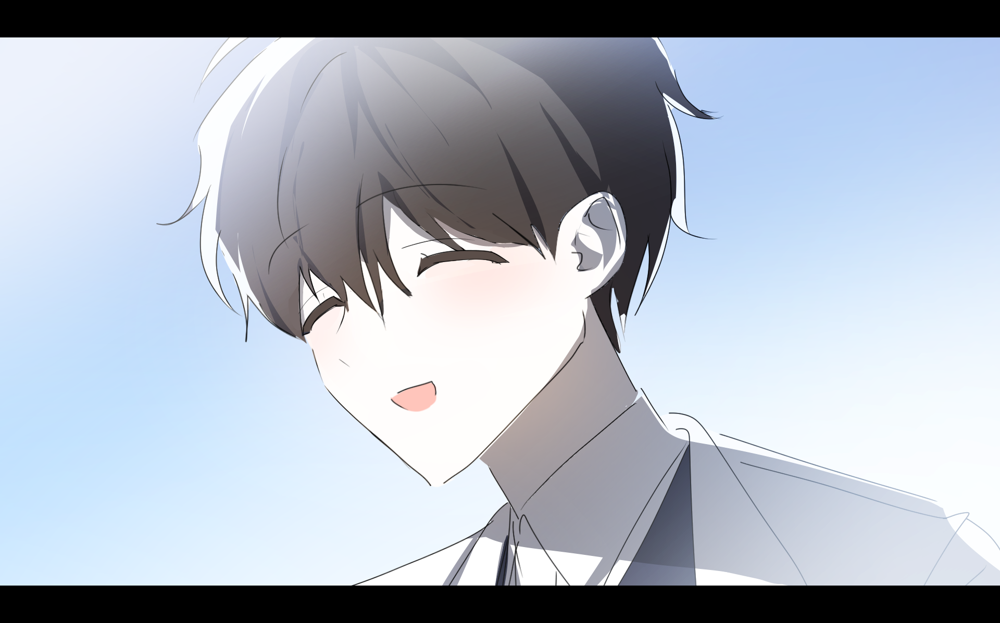
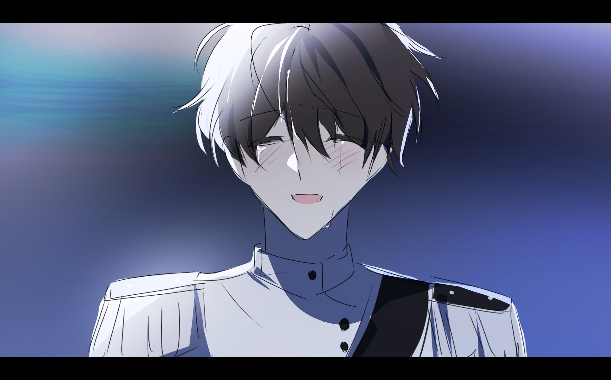

<!DOCTYPE html>
<html lang="ko">
<head>
    <meta charset="UTF-8">
    <meta name="viewport" content="width=device-width, initial-scale=1.0">
    <title>12시의 도밍게즈 3부 | 대본집</title>
    <link rel="stylesheet" href="../assets/css/style.css">
</head>
<body class="session-viewer">
    <header class="session-header">
        <h1>12시의 도밍게즈 3부</h1>
        <a href="../index.html" class="back-link">← 목차로 이동</a>
    </header>
    
    <main class="chat-container">
<div class="message desc"><a href="../assets/images/doming3/UeAMeWz.png" style="box-sizing: content-box; background-color: transparent; color: rgb(51, 51, 51); text-decoration: none;"></a></div>
<div class="message desc"><div class="spacer"></div><a href="../assets/images/doming3/0QqrWrb.png" style="box-sizing: content-box; background-color: transparent; color: rgb(51, 51, 51); text-decoration: none;"></a></div>
<div class="message desc"><div class="spacer"></div><a style="box-sizing: content-box; background-color: transparent; font-size: 13px; font-weight: normal;">모래가 떨어지는 소리가 들렸다.</a></div>
<div class="message desc"><div class="spacer"></div><a href="../assets/images/doming3/0sbVMlH.png" style="box-sizing: content-box; background-color: transparent; color: rgb(51, 51, 51); text-decoration: none;"></a></div>
<div class="message desc"><div class="spacer"></div><a style="box-sizing: content-box; background-color: transparent; color: rgb(32, 43, 252); font-style: normal;">KPC</a> <a style="box-sizing: content-box; background-color: transparent; font-style: normal; font-weight: normal;">차현안</a>　<a style="box-sizing: content-box; background-color: transparent; color: rgb(32, 43, 252); font-style: normal;">PC</a> <a style="box-sizing: content-box; background-color: transparent; font-style: normal; font-weight: normal;">은월장</a></div>
<div class="message desc"><div class="spacer"></div><a style="box-sizing: content-box; background-color: transparent; color: rgb(32, 43, 252); font-style: normal;">Written by</a> <a style="box-sizing: content-box; background-color: transparent; font-style: normal; font-weight: normal;">수연</a></div>
<div class="message desc"><div class="spacer"></div><a style="box-sizing: content-box; background-color: transparent; color: rgb(32, 43, 252); font-style: normal;">Date</a> <a style="box-sizing: content-box; background-color: transparent; font-style: normal; font-weight: normal;">2026.08.16</a></div>
<div class="message desc"><div class="spacer"></div><a href="../assets/images/doming3/6Ny8tRb.png" style="box-sizing: content-box; background-color: transparent; color: rgb(51, 51, 51); text-decoration: none;"></a></div>
<div class="message desc"><div class="spacer"></div><a style="box-sizing: content-box; background-color: rgb(32, 43, 252); color: white; display: block; padding: 3px 2px; box-shadow: rgb(32, 43, 252) 0px 8px 0px 15px; font-size: 22px; font-style: normal; font-weight: normal; letter-spacing: 1px; text-shadow: rgba(170, 175, 255, 0.18) -38px 0px 24px, rgba(170, 175, 255, 0.18) 38px 0px 24px, rgba(190, 194, 255, 0.22) -22px 0px 18px, rgba(190, 194, 255, 0.22) 22px 0px 18px, rgba(255, 255, 255, 0.24) -10px 0px 10px, rgba(255, 255, 255, 0.24) 10px 0px 10px, rgba(255, 255, 255, 0.3) 0px 0px 3px;">{　𝐶ℎ𝑎𝑝𝑡𝑒𝑟: 𝐼　}</a><a style='box-sizing: content-box; background-color: rgb(32, 43, 252); color: white; display: block; padding: 4px 2px 2px; box-shadow: rgb(32, 43, 252) 0px 8px 0px 15px; font-size: 14px; font-family: georgia, "gulim important"; font-style: normal; font-weight: normal; letter-spacing: -0.5px;'>✦　최악의 지진　✦</a></div>
<div class="message desc"><div class="spacer"></div><a style="box-sizing: content-box; background-color: transparent; color: rgb(89, 99, 245); font-size: 11px; display: block; max-width: 300px; margin: auto; padding: 5px 5px 3px; font-style: normal; font-weight: normal; letter-spacing: 1px; text-shadow: rgb(255, 255, 255) 0px 0px 4px, rgb(173, 178, 255) 0px 0px 7px, rgb(226, 228, 255) 0px 0px 12px;">✦　𝑁𝑜𝑤 𝑃𝑙𝑎𝑦𝑖𝑛𝑔　✦</a><a style="box-sizing: content-box; background-color: transparent; color: rgb(133, 140, 255); font-size: 10px; background-image: linear-gradient(90deg, rgb(248, 248, 255), rgb(255, 255, 255), rgb(255, 255, 255), rgb(243, 244, 255), rgb(255, 255, 255), rgb(255, 255, 255), rgb(248, 248, 255)); display: block; max-width: 300px; margin: auto; padding: 4px 0px 1px; font-style: normal; font-weight: normal; border-top: 1px solid rgb(167, 173, 255); border-left: 1px solid rgb(187, 192, 255); border-right: 1px solid rgb(187, 192, 255); border-radius: 12px 12px 0px 0px; box-shadow: rgb(218, 221, 255) 0px 0px 8px, rgb(255, 255, 255) 0px 1px 4px inset; text-shadow: rgb(255, 255, 255) 0px 0px 5px, rgb(173, 178, 255) 0px 0px 7px;">⌜　⋆　　　✧　　　⋆　⌝</a><a href="https://youtu.be/BUuznx4W-RM?si=GIcaDorksn1tneHe}" style='box-sizing: content-box; background-color: transparent; color: rgb(57, 68, 223); text-decoration: none; font-size: 13px; font-family: georgia, "gulim important"; background-image: linear-gradient(90deg, rgb(255, 255, 255), rgb(248, 248, 255), rgb(255, 255, 255), rgb(239, 240, 255), rgb(255, 255, 255), rgb(248, 248, 255), rgb(255, 255, 255)); display: block; max-width: 300px; margin: auto; padding: 9px 0px; font-style: normal; font-weight: normal; letter-spacing: -0.5px; border-left: 1px solid rgb(187, 192, 255); border-right: 1px solid rgb(187, 192, 255); text-shadow: rgb(255, 255, 255) 0px 0px 3px, rgb(184, 189, 255) 0px 0px 6px; box-shadow: rgb(236, 238, 255) 0px 0px 10px inset;'>♬　Arcane Forest　♬</a><a style="box-sizing: content-box; background-color: transparent; color: rgb(98, 107, 224); font-size: 8px; background-image: linear-gradient(90deg, rgb(255, 255, 255), rgb(245, 246, 255), rgb(255, 255, 255), rgb(236, 238, 255), rgb(255, 255, 255), rgb(245, 246, 255), rgb(255, 255, 255)); display: block; max-width: 300px; margin: auto; padding: 5px 0px 4px; font-style: normal; font-weight: normal; border-left: 1px solid rgb(187, 192, 255); border-right: 1px solid rgb(187, 192, 255); letter-spacing: 0px; text-shadow: rgb(195, 198, 255) 0px 0px 5px;">Ⅰ　·　Ⅱ　·　Ⅲ　·　Ⅳ　·　Ⅴ　·　Ⅵ　·　Ⅶ　·　Ⅷ　·　Ⅸ　·　Ⅹ　·　Ⅺ　·　Ⅻ</a><a style="box-sizing: content-box; background-color: transparent; color: rgb(123, 131, 247); font-size: 9px; background-image: linear-gradient(90deg, rgb(248, 248, 255), rgb(255, 255, 255), rgb(241, 242, 255), rgb(255, 255, 255), rgb(248, 248, 255)); display: block; max-width: 300px; margin: auto; padding: 2px 0px 6px; font-style: normal; font-weight: normal; border-left: 1px solid rgb(187, 192, 255); border-right: 1px solid rgb(187, 192, 255); border-bottom: 1px solid rgb(167, 173, 255); border-radius: 0px 0px 12px 12px; box-shadow: rgb(221, 224, 255) 0px 4px 8px, rgb(234, 235, 255) 0px 0px 9px; text-shadow: rgb(255, 255, 255) 0px 0px 4px, rgb(167, 173, 255) 0px 0px 7px;">⌞　✧　⋆　✦　⋆　✧　⌟</a></div>
<div class="message desc"><div class="spacer"></div>평화가 도래했습니다.</div>
<div class="message desc"><div class="spacer"></div>신문과 뉴스, 인터넷 기사를 구별치 않고 모든 매체에서 도밍게즈의 평화를 떠들었습니다.</div>
<div class="message desc"><div class="spacer"></div>2056년 새해의 길거리는 유난히 사람으로 북적였어요.</div>
<div class="message desc"><div class="spacer"></div>멸망을 넘어, 새로운 계절.</div>
<div class="message desc"><div class="spacer"></div>꽃샘추위가 채 가시지 못한 날씨에도 사람들은 신사에 들리고,</div>
<div class="message desc"><div class="spacer"></div>기도를 올리고, 골목을 뛰놀고, 벚꽃을 즐기며 삶을 찬미했습니다.</div>
<div class="message desc"><div class="spacer"></div>예언의 탑이 기운 것도, 어찌 보면 당연한 일입니다.</div>
<div class="message desc"><div class="spacer"></div>타이머와 카운터를 능가할 예언가는 없다.</div>
<div class="message desc"><div class="spacer"></div>DOT의 의견은 예언의 탑보다 정확하다.</div>
<div class="message desc"><div class="spacer"></div>신뢰는 녹지 않는 눈처럼 쌓였고 타이머와 카운터,</div>
<div class="message desc"><div class="spacer"></div>덩달아 DOT의 입지까지 얼음처럼 단단하게 굳어 갔습니다.</div>
<div class="message desc"><div class="spacer"></div>10년이 흐르는 동안 타이머와 카운터가 필요할 정도로 다급한 사태는 거의 없었습니다.</div>
<div class="message desc"><div class="spacer"></div>차현안과 당신은 자잘한 사건, 사고로부터 사람들을 구원하고,</div>
<div class="message desc"><div class="spacer"></div>TV와 같은 매체에 얼굴을 팔고, 구원 외 다른 임무에 배정되며 한가로이 지냈습니다.</div>
<div class="message desc"><div class="spacer"></div>도밍게즈 건국 이래, 유난히 평화로운 한때라는 평을 받을 정도였습니다.</div>
<div class="message desc"><div class="spacer"></div>그러니까,</div>
<div class="message desc"><div class="spacer"></div><a style="box-sizing: content-box; background-color: transparent; color: rgb(32, 43, 252);">‘도밍게즈, 역사상 최악의 지진 발생!’</a></div>
<div class="message desc"><div class="spacer"></div>그 일이 일어나기 전까진!</div>
<div class="message desc"><div class="spacer"></div>호외요!</div>
<div class="message desc"><div class="spacer"></div>요란한 외침과 함께 신문이 쏟아집니다.</div>
<div class="message desc"><div class="spacer"></div>하나 같이 제2구역에서 일어난 커다란 지진 사건으로 1면이 가득 찼습니다.</div>
<div class="message desc"><div class="spacer"></div>사진 속 제2구역의 모습은 상상 이상으로 끔찍했습니다.</div>
<div class="message desc"><div class="spacer"></div>원인 미상의 지전으로 인해 땅이 갈라지고,</div>
<div class="message desc"><div class="spacer"></div>공장이 무너지며, 각종 화재가 번지기 시작한 것입니다.</div>
<div class="message desc"><div class="spacer"></div>소식은 당신에게도 전해졌습니다.</div>
<div class="message desc"><div class="spacer"></div>신문을 읽거나, 뉴스를 보거나, 인터넷에 검색하거나... 어딜 보아도 지진에 대한 이야기가 나옵니다.</div>
<div class="message general you"><div aria-hidden="true" class="spacer custom-header"></div><div aria-hidden="true" class="avatar custom-header"></div><span class="by custom-header">은월장:</span>... .. 이런. (눈살 찌푸려진다. 그리고, 이젠 출전할 때인가...)</div>
<div class="message general"><div aria-hidden="true" class="spacer custom-header"></div><div aria-hidden="true" class="avatar custom-header"></div><span class="by custom-header">차현안:</span>(심각한 표정으로 지진에 대한 자료들 본다...)</div>
<div class="message desc"><div class="spacer"></div><a style="box-sizing: content-box; background: rgb(255, 255, 255); color: rgb(114, 123, 255); font-size: 16px; display: block; padding: 10px 15px 0px; font-style: normal; font-weight: normal; border-radius: 20px 20px 0px 0px; margin-left: -4px; border-width: 1px 1px medium; border-style: solid solid none; border-color: rgb(173, 178, 255) rgb(173, 178, 255) currentcolor; border-image: none; box-shadow: rgb(218, 221, 255) -4px 4px 0px, rgb(229, 230, 255) 0px 0px 8px; letter-spacing: 2px; text-shadow: rgb(206, 209, 255) 0px 0px 4px;">·· 𝐻𝐴𝑁𝐷𝑂𝑈𝑇 ··</a><a style='box-sizing: content-box; background: rgb(255, 255, 255); color: rgb(32, 43, 252); font-size: 16px; font-family: "gulim important"; display: block; padding: 10px 15px 0px; font-style: normal; font-weight: normal; margin-left: -4px; border-left: 1px solid rgb(173, 178, 255); border-right: 1px solid rgb(173, 178, 255); box-shadow: rgb(218, 221, 255) -4px 4px 0px; letter-spacing: -1px; text-shadow: rgb(211, 213, 255) 0px 0px 3px;'>제2구역 화재 사건</a><a style="box-sizing: content-box; background: rgb(255, 255, 255); color: rgb(114, 123, 255); font-size: 11px; display: block; padding: 9px 15px 2px; font-style: normal; font-weight: normal; margin-left: -4px; border-left: 1px solid rgb(173, 178, 255); border-right: 1px solid rgb(173, 178, 255); box-shadow: rgb(218, 221, 255) -4px 4px 0px; letter-spacing: 1px; text-shadow: rgb(195, 198, 255) 0px 0px 4px;">✦ ───────── ✧ ───────── ✦</a><a style='box-sizing: content-box; background: rgb(255, 255, 255); color: rgb(37, 37, 37); font-size: 14px; font-family: "gulim important"; line-height: 25.2px; display: block; padding: 10px 15px 0px; font-style: normal; font-weight: normal; margin-left: -4px; border-left: 1px solid rgb(173, 178, 255); border-right: 1px solid rgb(173, 178, 255); box-shadow: rgb(218, 221, 255) -4px 4px 0px; letter-spacing: -1px;'>불타오르는 공장. 이름에 걸맞게 불바다가 된 상황입니다. 부상자와 사망자의 수가 시곗바늘이 한 칸을 움직일 때마다, 시시각각 늘어납니다.</a><a style='box-sizing: content-box; background: rgb(255, 255, 255); color: rgb(37, 37, 37); font-size: 14px; font-family: "gulim important"; line-height: 25.2px; display: block; padding: 8px 15px 3px; font-style: normal; font-weight: normal; margin-left: -4px; border-left: 1px solid rgb(173, 178, 255); border-right: 1px solid rgb(173, 178, 255); box-shadow: rgb(218, 221, 255) -4px 4px 0px; letter-spacing: -1px;'>알지도 못하는 사망자의 이름이 위로, 위로, 위로 빼곡하게 채워집니다. 갈라진 땅이 삼킨 사람이 한 둘이 아닌지라 실종자의 수도 계속 늘어나는 추세라는군요.</a><a style="box-sizing: content-box; background: rgb(255, 255, 255); color: rgb(114, 123, 255); font-size: 8px; display: block; padding: 4px 5px 6px; font-style: normal; font-weight: normal; border-radius: 0px 0px 20px 20px; margin-left: -4px; border-width: medium 1px 1px; border-style: none solid solid; border-color: currentcolor rgb(173, 178, 255) rgb(173, 178, 255); border-image: none; box-shadow: rgb(218, 221, 255) -4px 4px 0px, rgb(239, 240, 255) 0px 4px 8px; letter-spacing: 2px; text-shadow: rgb(195, 198, 255) 0px 0px 4px;">　✧　</a></div>
<div class="message desc"><div class="spacer"></div>사건을 파악하는 것과 동시에 메시지가 도착합니다.</div>
<div class="message desc"><div class="spacer"></div>호출입니다.</div>
<div class="message desc"><div class="spacer"></div><a style='box-sizing: content-box; background: rgb(255, 255, 255); color: rgb(160, 160, 160); font-size: 11px; font-family: monospace, "gulim important"; text-align: left; display: block; padding: 9px 14px 3px; font-style: normal; font-weight: normal; border-radius: 12px 12px 0px 0px; margin-left: -4px; border-width: 1px 1px medium; border-style: solid solid none; border-color: rgb(215, 215, 215) rgb(215, 215, 215) currentcolor; border-image: none; letter-spacing: 2px;'>MESSAGE</a><a style='box-sizing: content-box; background: rgb(255, 255, 255); color: rgb(170, 170, 170); font-size: 11px; font-family: monospace, "gulim important"; text-align: left; display: block; padding: 2px 14px 8px; font-style: normal; font-weight: normal; margin-left: -4px; border-left: 1px solid rgb(215, 215, 215); border-right: 1px solid rgb(215, 215, 215); letter-spacing: 0px;'>2062-03-04　19:14</a><a style='box-sizing: content-box; background: rgb(255, 255, 255); color: rgb(37, 37, 37); font-size: 14px; font-family: "gulim important"; line-height: 25.2px; text-align: left; display: block; padding: 6px 14px 12px; font-style: normal; font-weight: normal; margin-left: -4px; border-left: 1px solid rgb(215, 215, 215); border-right: 1px solid rgb(215, 215, 215); border-bottom: 1px solid rgb(215, 215, 215); border-radius: 0px 0px 12px 12px; letter-spacing: -1px;'>타이머, 카운터 제2구역 지원 요망</a></div>
<div class="message general you"><div aria-hidden="true" class="spacer custom-header"></div><div aria-hidden="true" class="avatar custom-header"></div><span class="by custom-header">은월장:</span>가자, 현안아. 기본적인 화재 현장 대책 요령은 우리도 알고 DOT 측에서도 준비해주겠지만, 혹시 모르니 가면서도 찾아두고 공유해줘.</div>
<div class="message general"><div aria-hidden="true" class="spacer custom-header"></div><div aria-hidden="true" class="avatar custom-header"></div><span class="by custom-header">차현안:</span>응, 그래. 얼른 가야겠네... (화재 현장 대책 요령... 머릿속으로 떠올리며 동시에 찾는다.)</div>
<div class="message desc"><div class="spacer"></div>세계에 재난이 내리면 사람들은 구원자를 찾습니다.</div>
<div class="message desc"><div class="spacer"></div>차현안과 당신의 피할 수 없는 숙명입니다.</div>
<div class="message desc"><div class="spacer"></div>하던 일을 마무리하고 이동하도록 합시다.</div>
<div class="message desc"><div class="spacer"></div>제복을 갈아입고, 필요한 것을 챙기고, 출동할 때입니다.</div>
<div class="message general"><div aria-hidden="true" class="spacer custom-header"></div><div aria-hidden="true" class="avatar custom-header"></div><span class="by custom-header">차현안:</span>(그리고 제복도 주섬주섬)</div>
<div class="message general you"><div aria-hidden="true" class="spacer custom-header"></div><div aria-hidden="true" class="avatar custom-header"></div><span class="by custom-header">은월장:</span>(제복 입고, 혹시 도움 될 물건 없나 두리번...) (열심히 챙긴다)</div>
<div class="message general"><div aria-hidden="true" class="spacer custom-header"></div><div aria-hidden="true" class="avatar custom-header"></div><span class="by custom-header">차현안:</span>다 준비했어? 이제 갈까? 사실상 화재 현장이라 우리는 사람들 구조나, 범인 찾기 위주에 투입되겠지만. ... 이렇게 큰 사건이 일어난 건 또 처음 보는데... 걱정되네.</div>
<div class="message general you"><div aria-hidden="true" class="spacer custom-header"></div><div aria-hidden="true" class="avatar custom-header"></div><span class="by custom-header">은월장:</span>그렇지. 범인도 범인이고, 당장은 실종자 수색에 가장 급히 투입될 것 같네. 가는 길에, 정보를 찾아두라고는 했지만... 최대한 정신은 아껴둬. (저희의 능력을 쓸 때마다 영 좋지 못한 꼴을 볼 확률이 높다. 이 사건이 끝나기 전까지.) 사실이례적인 거지... 정식 임관을 받고도 5년이나 지났는데, 이제 큰 일 한 번 터진 거잖아. (그게 너무 거대한 규모니 걱정인 거지만.) ... 무섭진 않아?</div>
<div class="message general"><div aria-hidden="true" class="spacer custom-header"></div><div aria-hidden="true" class="avatar custom-header"></div><span class="by custom-header">차현안:</span>응... 그렇지. 더 적극적으로 나설 수 없는 능력이라 아쉽네. 그만큼 우리가 맡은 몫을 열심히 해내야겠지만. ... 알았어. 무리는 안 할 테니까, 너도. (...) 그렇지... 지금까지 꽤나 잠잠하다 싶긴 했었는데, 이런 일이 일어날 줄이야. 정말... ... 재난같네. 이런 걸 막으라고 타이머가 존재하는 거겠지. (그렇지만, 넌 이곳이 아니라...) ... 응, 별로. 사람들이 너무 많이 다칠까, 그건 무섭긴 하네. ... 그래도, 이런 일에 휩쓸려 죽을 것 같다는 생각은 안 드니까. (네 손 꼭 잡았다.) 전부 무사할 거잖아. ... 그치?</div>
<div class="message general you"><div aria-hidden="true" class="spacer custom-header"></div><div aria-hidden="true" class="avatar custom-header"></div><span class="by custom-header">은월장:</span>무슨 말을 하는 거야. 물론, 화재 진압에 직접적인 도움이 되는 애들 보다야 뒤에 있겠지만... '구원'자는 우리야. 그러니 더욱 나서지 않으면 안 돼... ... 아직 살 수 있는 사람을 찾고, 혹여 늦었더라도 생사여부는 가족이 알 수 있도록 해야지. (진지한 얼굴. 다만 책망하기 보다는, 그만큼 책임을 일깨워야 더 충실히 임할 수 있을 테니... ... 그것이 약이 될지 독이 될지는 모르겠지만.) 그러니깐. 우리가 살아있는 동안 아무 일도 없을 터라고는 전혀 생각 안 했지만, 그렇다고 첫 투입이 이런 재난일 줄이야. 다른 애들에게 좋지 않은데, 이런 건... ...너한테도 그렇고. (자신에게는? ... 모르겠다.) 그럼 다행이네. 그래도... 피해자가 발생하는 게 어쩔 수 없는 일이라는 건, 알아 둬. 누군가 우릴 책망하더라도 새겨들으면 안 돼. (얼마나 많은 이들이 구원자를 찾을까. 기대는 쉬이 실망을 불러오기 마련이니... 이것도, 제 불안이나 다름 없긴 하지만.) ... 그치, 네가 이런 일에 죽을 리가. (머리 쓰다듬으려다가, 자신 역시 당신 손 꼭...) 그럼. 적어도 우린 안 다쳐. 그럴 수 있도록 조심해야지.</div>
<div class="message general"><div aria-hidden="true" class="spacer custom-header"></div><div aria-hidden="true" class="avatar custom-header"></div><span class="by custom-header">차현안:</span>... 그러니까. 우리가 할 수 있는 일을 최선으로 해내야지. 그보다 더 도움이 될 수는 없어서 아쉬울 따름이야. 어쩔 수 없는 거지만... 지금이라면 실종자 수색으로도 벅찰 테니. 나서지 않겠다고 한 적은 없어. ... '구원자'... 그런 역할을 내가 어떻게 잊겠어. (그 거창한 이름에는 그만큼의 책임도 따르는 법이지. 잊고 싶어도 그럴 수는 없었다.) ... 그래. 뭐... 어차피 언젠가는 이런 재난에 투입되리라고 생각은 했었지만. 막상 이리 겪으니... (주먹 꽉 쥐었다.) 빨리 가자. 늦지 않게. 지금도, 피해자가 계속해서 늘어나고 있다니까. (급히 발걸음 옮기며.) ... ... 그럼. 이런 재난 속에서 모두를 구할 수는 없으니까. 이미 우리가 구하지 못한 이들도 많고... ... 우리는 그저 최선을 다할 뿐이야. 알지? (그러나 막상 그 책망의 시선을 받게 된다면, 그를 이렇게 가볍게 생각하고 넘어갈 수 있을지는...) ... 그렇지? 우리는, 일반 사람도 아니니까. 자, 얼른 가자. 한시 빨리 사람들을 구하러 가야지.</div>
<div class="message general you"><div aria-hidden="true" class="spacer custom-header"></div><div aria-hidden="true" class="avatar custom-header"></div><span class="by custom-header">은월장:</span>응. 그래도... ... 누군가는 다른 시각 보다도, 우리를 더 기다리고 있을지 몰라. (어떤 현대 장비로도 건물의 기억은 읽을 수 없고, 사람의 기억은 다룰 수 없으니...) 그러니까, 힘내자. 전혀 아쉽지 않아도 돼. 네가 이번 일에서 얼마나 중요할 텐데... 네가 얼마나 많은 사람을 도와주게 될 텐데. (... 무의식적으로 자신은 빼두었다.) 그렇지... 그래도 5년동안, 준비는 철저히 해왔으니까. 교육받고 훈련받은 그대로만 하자. 어쩌면 실시간으로 얻어나가는 게 생길 지도 모르고. (당신 주먹 보고, 괜히 제 쪽으로 끌어와 감쌌으며.) 당연하지. 조금이라도 지체되면 안 돼... (당신 따라 움직였고.) 알지. 너나 네가 최선을 다하지 않을 리 없다는 것도 아니까. (...그럼에도 걱정하려나, 불안해하진 않으려나. 다시 당신 머리 위로 손 올려, 잠시 쓰다듬었다.) 응. 빨리 가자... (이것저것 챙긴 가방 손에 쥐고.)</div>
<div class="message general"><div aria-hidden="true" class="spacer custom-header"></div><div aria-hidden="true" class="avatar custom-header"></div><span class="by custom-header">차현안:</span>그러려나... ... 그래, 우리만 할 수 있는 일도 있는 거니까. (우리가 할 수 있는 일... 그것만 바라보면 된다. 괜한 것에 아쉬워 할 필요 없어.) (그리 생각하곤 잠시 침묵하다...) ... 너도. (네 이야기에 '우리'가 들어가지 않는다는 사실을 알아차렸다.) 너도, 도움이 많이 되겠지. 우리는 같은 능력을 가졌으니까... 너도 나만큼이나 중요한 사람이야. 그건 잊지 마. (...) ... 그래. 지금껏 훈련도 많이 했으니까... 전부 이런 날을 위해서 한 것이었지. 그러니까, 배운 대로만 하면 될 거야. (주먹 감싸지면 잠시 움찔하곤, 손에 들어갔던 힘 푼다.) 그래... 늦지 않게 해야지. (말없이 침묵한다. 그러다 머리 쓰다듬어지면, 그제야 살짝 표정 풀리고.) ... 가자, 시간이 얼마 없으니. 아마 몇몇 애들은 이미 화재 진압하러 들어갔겠지만. (그리곤 발걸음 재촉한다.)</div>
<div class="message desc"><div class="spacer"></div><a style="box-sizing: content-box; background-color: rgb(32, 43, 252); color: white; display: block; padding: 3px 2px; box-shadow: rgb(32, 43, 252) 0px 8px 0px 15px; font-size: 22px; font-style: normal; font-weight: normal; letter-spacing: 1px; text-shadow: rgba(170, 175, 255, 0.18) -38px 0px 24px, rgba(170, 175, 255, 0.18) 38px 0px 24px, rgba(190, 194, 255, 0.22) -22px 0px 18px, rgba(190, 194, 255, 0.22) 22px 0px 18px, rgba(255, 255, 255, 0.24) -10px 0px 10px, rgba(255, 255, 255, 0.24) 10px 0px 10px, rgba(255, 255, 255, 0.3) 0px 0px 3px;">{　𝐶ℎ𝑎𝑝𝑡𝑒𝑟: 𝐼𝐼　}</a><a style='box-sizing: content-box; background-color: rgb(32, 43, 252); color: white; display: block; padding: 4px 2px 2px; box-shadow: rgb(32, 43, 252) 0px 8px 0px 15px; font-size: 14px; font-family: georgia, "gulim important"; font-style: normal; font-weight: normal; letter-spacing: -0.5px;'>✦　제2구역의 불길　✦</a></div>
<div class="message desc"><div class="spacer"></div><a style="box-sizing: content-box; background-color: transparent; color: rgb(89, 99, 245); font-size: 11px; display: block; max-width: 300px; margin: auto; padding: 5px 5px 3px; font-style: normal; font-weight: normal; letter-spacing: 1px; text-shadow: rgb(255, 255, 255) 0px 0px 4px, rgb(173, 178, 255) 0px 0px 7px, rgb(226, 228, 255) 0px 0px 12px;">✦　𝑁𝑜𝑤 𝑃𝑙𝑎𝑦𝑖𝑛𝑔　✦</a><a style="box-sizing: content-box; background-color: transparent; color: rgb(133, 140, 255); font-size: 10px; background-image: linear-gradient(90deg, rgb(248, 248, 255), rgb(255, 255, 255), rgb(255, 255, 255), rgb(243, 244, 255), rgb(255, 255, 255), rgb(255, 255, 255), rgb(248, 248, 255)); display: block; max-width: 300px; margin: auto; padding: 4px 0px 1px; font-style: normal; font-weight: normal; border-top: 1px solid rgb(167, 173, 255); border-left: 1px solid rgb(187, 192, 255); border-right: 1px solid rgb(187, 192, 255); border-radius: 12px 12px 0px 0px; box-shadow: rgb(218, 221, 255) 0px 0px 8px, rgb(255, 255, 255) 0px 1px 4px inset; text-shadow: rgb(255, 255, 255) 0px 0px 5px, rgb(173, 178, 255) 0px 0px 7px;">⌜　⋆　　　✧　　　⋆　⌝</a><a href="https://youtu.be/rvd5y9NpL0g?si=B2jkSagHPAh1oiHa}" style='box-sizing: content-box; background-color: transparent; color: rgb(57, 68, 223); text-decoration: none; font-size: 13px; font-family: georgia, "gulim important"; background-image: linear-gradient(90deg, rgb(255, 255, 255), rgb(248, 248, 255), rgb(255, 255, 255), rgb(239, 240, 255), rgb(255, 255, 255), rgb(248, 248, 255), rgb(255, 255, 255)); display: block; max-width: 300px; margin: auto; padding: 9px 0px; font-style: normal; font-weight: normal; letter-spacing: -0.5px; border-left: 1px solid rgb(187, 192, 255); border-right: 1px solid rgb(187, 192, 255); text-shadow: rgb(255, 255, 255) 0px 0px 3px, rgb(184, 189, 255) 0px 0px 6px; box-shadow: rgb(236, 238, 255) 0px 0px 10px inset;'>♬　Heartbreaking　♬</a><a style="box-sizing: content-box; background-color: transparent; color: rgb(98, 107, 224); font-size: 8px; background-image: linear-gradient(90deg, rgb(255, 255, 255), rgb(245, 246, 255), rgb(255, 255, 255), rgb(236, 238, 255), rgb(255, 255, 255), rgb(245, 246, 255), rgb(255, 255, 255)); display: block; max-width: 300px; margin: auto; padding: 5px 0px 4px; font-style: normal; font-weight: normal; border-left: 1px solid rgb(187, 192, 255); border-right: 1px solid rgb(187, 192, 255); letter-spacing: 0px; text-shadow: rgb(195, 198, 255) 0px 0px 5px;">Ⅰ　·　Ⅱ　·　Ⅲ　·　Ⅳ　·　Ⅴ　·　Ⅵ　·　Ⅶ　·　Ⅷ　·　Ⅸ　·　Ⅹ　·　Ⅺ　·　Ⅻ</a><a style="box-sizing: content-box; background-color: transparent; color: rgb(123, 131, 247); font-size: 9px; background-image: linear-gradient(90deg, rgb(248, 248, 255), rgb(255, 255, 255), rgb(241, 242, 255), rgb(255, 255, 255), rgb(248, 248, 255)); display: block; max-width: 300px; margin: auto; padding: 2px 0px 6px; font-style: normal; font-weight: normal; border-left: 1px solid rgb(187, 192, 255); border-right: 1px solid rgb(187, 192, 255); border-bottom: 1px solid rgb(167, 173, 255); border-radius: 0px 0px 12px 12px; box-shadow: rgb(221, 224, 255) 0px 4px 8px, rgb(234, 235, 255) 0px 0px 9px; text-shadow: rgb(255, 255, 255) 0px 0px 4px, rgb(167, 173, 255) 0px 0px 7px;">⌞　✧　⋆　✦　⋆　✧　⌟</a></div>
<div class="message desc"><div class="spacer"></div>제2구역의 상공에서 타이머와 카운터를 실은 헬기가 착륙합니다.</div>
<div class="message desc"><div class="spacer"></div>총성 같은 헬기의 프로펠러 소리,</div>
<div class="message desc"><div class="spacer"></div>착륙장을 찾지 못해 아슬아슬하게 흔들리는 기체,</div>
<div class="message desc"><div class="spacer"></div>공격적으로 물길을 쏟아붓던 소방차들과 허탈하게 대피소에 늘어진 난민들.</div>
<div class="message desc"><div class="spacer"></div>머리가 어지럽고, 귓속이 먹먹합니다.</div>
<div class="message desc"><div class="spacer"></div>제1~2시 타이머와 카운터의 합류로 간신히 불길이 잡히기 시작했다지만,</div>
<div class="message desc"><div class="spacer"></div>아직 잔재하는 불씨 탓입니다.</div>
<div class="message desc"><div class="spacer"></div>무너진 공장의 잔해,</div>
<div class="message desc"><div class="spacer"></div>그을린 땅,</div>
<div class="message desc"><div class="spacer"></div>잿더미가 되어가는 숲과 혼비백산 도망치는 사람들…….</div>
<div class="message desc"><div class="spacer"></div>아이의 울음소리와 날 선 비명, 동물의 울부짖음이 창 너머로 열기와 함께 스며듭니다.</div>
<div class="message desc"><div class="spacer"></div>광대뼈 주위가 홧홧하게 달아오릅니다.</div>
<div class="message desc"><div class="spacer"></div>좋건 싫건, 익숙해진, 익숙해져야 할 광경이었습니다.</div>
<div class="message desc"><div class="spacer"></div><a style="box-sizing: content-box; background-color: transparent; color: white; font-style: normal; font-weight: normal; display: inline-block; letter-spacing: 0px; border-radius: 18px; padding: 6px 26px; margin-left: -4px; border: 1px solid rgba(255, 255, 255, 0.65); background-image: linear-gradient(120deg, rgb(32, 43, 252), rgb(65, 75, 255), rgb(102, 112, 255)); box-shadow: rgba(32, 43, 252, 0.28) 0px 3px 8px, rgba(255, 255, 255, 0.35) 0px 1px 0px inset; text-shadow: rgb(255, 255, 255) 0px 0px 3px, rgba(40, 42, 170, 0.3) 0px 1px 2px;">⋆ ✷　관찰력 판정　✷ ⋆</a></div>
<div class="message general you"><div aria-hidden="true" class="spacer custom-header"></div><div aria-hidden="true" class="avatar custom-header"></div><span class="by custom-header">은월장:</span><div class="sheet-rolltemplate-coc-1"><table style="box-sizing: content-box; border-spacing: 0px; border-collapse: collapse; background: rgb(255, 255, 255); width: 100%; border: 1px solid black; color: black;"><caption style="box-sizing: content-box; padding: 2px; color: white; background: black; font-weight: bold; border: 1px solid black; line-height: 1.6em;">관찰력</caption><tbody style="box-sizing: content-box;"><tr style="box-sizing: content-box;"><td class="sheet-template_label" style="box-sizing: content-box; padding: 2px; border-bottom: 1px solid black; font-weight: bold;">기준치:</td><td class="sheet-template_value" style="box-sizing: content-box; padding: 2px; border-bottom: 1px solid black; text-align: center;"><span class="inlinerollresult showtip tipsy-n-right" style="box-sizing: content-box; background: rgb(190, 190, 190); border: 2px solid black; padding: 0px 3px; font-weight: bold; cursor: help; font-size: 1.1em; display: inline-block; min-width: 1.5em;" title="Rolling 75 = 75">75</span>/<span class="inlinerollresult showtip tipsy-n-right" style="box-sizing: content-box; background: rgb(190, 190, 190); border: 2px solid black; padding: 0px 3px; font-weight: bold; cursor: help; font-size: 1.1em; display: inline-block; min-width: 1.5em;" title="Rolling floor(75/2) = floor(75/2)">37</span>/<span class="inlinerollresult showtip tipsy-n-right" style="box-sizing: content-box; background: rgb(190, 190, 190); border: 2px solid black; padding: 0px 3px; font-weight: bold; cursor: help; font-size: 1.1em; display: inline-block; min-width: 1.5em;" title="Rolling floor(75/5) = floor(75/5)">15</span></td></tr><tr style="box-sizing: content-box;"><td class="sheet-template_label" style="box-sizing: content-box; padding: 2px; border-bottom: 1px solid black; font-weight: bold;">굴림:</td><td class="sheet-template_value" style="box-sizing: content-box; padding: 2px; border-bottom: 1px solid black; text-align: center;"><span class="inlinerollresult showtip tipsy-n-right" style="box-sizing: content-box; background: rgb(190, 190, 190); border: 2px solid black; padding: 0px 3px; font-weight: bold; cursor: help; font-size: 1.1em; display: inline-block; min-width: 1.5em;" title='Rolling 1d100cs1cf100 = (&lt;span class="basicdiceroll"&gt;65&lt;/span&gt;)'>65</span></td></tr><tr style="box-sizing: content-box; background: rgb(190, 190, 190);"><td class="sheet-template_label" style="box-sizing: content-box; padding: 2px; border-bottom: 1px solid black; font-weight: bold;">판정결과:</td><td class="sheet-template_value" style="box-sizing: content-box; padding: 2px; border-bottom: 1px solid black; text-align: center; background: darkgreen;">보통 성공</td></tr></tbody></table></div></div>
<div class="message desc"><div class="spacer"></div>공장의 높은 기둥은 여전히 하늘을 뚫을 듯 치솟아 있습니다.</div>
<div class="message desc"><div class="spacer"></div>그 근처로 땅이 길게 갈라져 있는 것이 보입니다.</div>
<div class="message desc"><div class="spacer"></div>지진으로 인해 생긴 싱크홀입니다.</div>
<div class="message desc"><div class="spacer"></div>주위의 광경은 온통 엉망진창이지만,</div>
<div class="message desc"><div class="spacer"></div>신의 파편이라고 주장하는 것처럼 그것만은 옅은 그을음을 얻었을 뿐 완벽하다시피 안전했습니다.</div>
<div class="message general you"><div aria-hidden="true" class="spacer custom-header"></div><div aria-hidden="true" class="avatar custom-header"></div><span class="by custom-header">은월장:</span>... ... 허. (그나마, 피해를 덜 입은 곳이 있다는 것만으로도 다행인가... ...)</div>
<div class="message desc"><div class="spacer"></div><a style="box-sizing: content-box; background-color: transparent; font-style: normal;">───────</a> <a style="box-sizing: content-box; background-color: transparent; color: rgb(32, 43, 252); font-style: normal;">✷</a> <a style="box-sizing: content-box; background-color: transparent; font-style: normal;">───────</a></div>
<div class="message desc"><div class="spacer"></div>긴급 호출 끝에, 제2구역에 타이머와 카운터를 실은 헬기가 내용물들을 쏟아붓고,</div>
<div class="message desc"><div class="spacer"></div>정신없이 잿더미 사이를 지나왔습니다.</div>
<div class="message desc"><div class="spacer"></div>공기가 매캐한 탓에 도착할 때까지 제대로 숨쉬기 어려울 정도였습니다.</div>
<div class="message desc"><div class="spacer"></div>얼마나 걸었다고, 드러난 피부며 옷자락은 재투성이가 되고 말았습니다.</div>
<div class="message desc"><div class="spacer"></div>도착한 곳은 제2구역의 변두리에, 그나마 멀쩡하다 싶은 숙소입니다.</div>
<div class="message general"><div aria-hidden="true" class="spacer custom-header"></div><div aria-hidden="true" class="avatar custom-header"></div><span class="by custom-header">하인리히 장교:</span>잠깐 앉아보게.</div>
<div class="message desc"><div class="spacer"></div>로비에 앉은 하인리히 장교가 보입니다.</div>
<div class="message general"><div aria-hidden="true" class="spacer custom-header"></div><div aria-hidden="true" class="avatar custom-header"></div><span class="by custom-header">차현안:</span>(어두운 표정으로 의자에 대충 앉기...)</div>
<div class="message general you"><div aria-hidden="true" class="spacer custom-header"></div><div aria-hidden="true" class="avatar custom-header"></div><span class="by custom-header">은월장:</span>예. (옆에 앉는다.)</div>
<div class="message desc"><div class="spacer"></div>의자는 푹신하지 않습니다.</div>
<div class="message desc"><div class="spacer"></div>불씨가 남았지만, 날이 지나치게 어둡습니다.</div>
<div class="message desc"><div class="spacer"></div>바람이 잠잠한 탓에 그나마 더 번지지는 않을 것 같다는 이야기를 들었죠.</div>
<div class="message desc"><div class="spacer"></div>어쩌면 제7시의 타이머와 카운터 덕분일지도 모릅니다.</div>
<div class="message desc"><div class="spacer"></div>어쨌건, 너무 늦은 시간이라 더는 누군가를 구할 수도, 찾을 수도 어렵습니다.</div>
<div class="message desc"><div class="spacer"></div>간신히 복귀 명령이 떨어진 마당에 불편한 소파에 오래 앉아 있고 싶지는 않았지만,</div>
<div class="message general"><div aria-hidden="true" class="spacer custom-header"></div><div aria-hidden="true" class="avatar custom-header"></div><span class="by custom-header">하인리히 장교:</span>…….</div>
<div class="message desc"><div class="spacer"></div>호출한 장본인은, 정작 말이 없습니다.</div>
<div class="message desc"><div class="spacer"></div>시선은 로비의 유리창으로 향합니다.</div>
<div class="message desc"><div class="spacer"></div>투명한 것은 여과 없이 바깥의 광경을 담고 있습니다.</div>
<div class="message desc"><div class="spacer"></div>참혹한 광경은 가히 종말이라 부름이 옳습니다.</div>
<div class="message desc"><div class="spacer"></div>하늘이 녹아내리고 체질이 불에 풀어지니 발을 디딘 땅마저 말랑말랑하게 느껴질 정도입니다.</div>
<div class="message desc"><div class="spacer"></div>이대로 모든 것이 녹고 녹아, 바닥으로 꺼질 것 같았습니다.</div>
<div class="message desc"><div class="spacer"></div><a style="box-sizing: content-box; background-color: transparent; color: rgb(32, 43, 252);">도밍게즈조차 이런 꼴인데, 지구, 나의, 너의 다른 세계는 지금쯤 어떤 꼴일까…….</a></div>
<div class="message desc"><div class="spacer"></div>애먼 생각이 스쳐도,</div>
<div class="message desc"><div class="spacer"></div>하인리히 장교는 여전히 같은 곳을 내다보고 있습니다.</div>
<div class="message desc"><div class="spacer"></div>참담한 표정을 감추지 못하는 티가 역력합니다.</div>
<div class="message desc"><div class="spacer"></div>그가 선인이건, 악인이건, 도밍게즈를 향한 애정과 헌신만큼은 진실이었으므로.</div>
<div class="message desc"><div class="spacer"></div>매캐한 연기 냄새 때문에 목 안이 까끌까끌합니다.</div>
<div class="message desc"><div class="spacer"></div>한참 침묵하던 그는 곧 헛기침과 함께 입을 열었습니다.</div>
<div class="message general"><div aria-hidden="true" class="spacer custom-header"></div><div aria-hidden="true" class="avatar custom-header"></div><span class="by custom-header">하인리히 장교:</span>……고생했네.</div>
<div class="message general">오랜만에 한 자리에서 보는 것 같은데, 상황이 영 좋지 않군.</div>
<div class="message desc"><div class="spacer"></div>목소리가 유난히 케케묵은 라디오의 탁음처럼 들렸다면 착각은 아니었겠지.</div>
<div class="message desc"><div class="spacer"></div>애석한 인사말 후로, 그가 당부를 덧붙입니다.</div>
<div class="message general"><div aria-hidden="true" class="spacer custom-header"></div><div aria-hidden="true" class="avatar custom-header"></div><span class="by custom-header">하인리히 장교:</span>지진으로 인해 불규칙하게 바닥이 꺼지고, 싱크홀이 생기고 있다니 주의하게.</div>
<div class="message general">되도록 탐사대가 확인한 위치만 이동하고, 돌발행동은 절대 지양해야 해. 사태가 심상치 않군.</div>
<div class="message desc"><div class="spacer"></div>전달 사항은 걱정이었던 걸까요?</div>
<div class="message desc"><div class="spacer"></div>악어의 눈물이 따로 없습니다.</div>
<div class="message general"><div aria-hidden="true" class="spacer custom-header"></div><div aria-hidden="true" class="avatar custom-header"></div><span class="by custom-header">하인리히 장교:</span>내일 아침에 보지. 푹 쉬도록.</div>
<div class="message desc"><div class="spacer"></div>무거운 발걸음이 바닥을 밟자 군화 특유의 소리가 로비를 울립니다.</div>
<div class="message desc"><div class="spacer"></div>지친 것은 저쪽이나 이쪽이나 마찬가지입니다.</div>
<div class="message desc"><div class="spacer"></div>10년 동안 쌓아온 모든 것들이 수포가 되는 기분이었으니까.</div>
<div class="message desc"><div class="spacer"></div>왜,</div>
<div class="message desc"><div class="spacer"></div>어째서.</div>
<div class="message desc"><div class="spacer"></div>멸망을 저지할 세계의 구원자가 이곳에 임하였음에도……</div>
<div class="message desc"><div class="spacer"></div>이런 일이 일어난 걸까.</div>
<div class="message desc"><div class="spacer"></div>모두의 얼굴 위에 드리운 불그스름한 음영이 괜스레 불길했습니다.</div>
<div class="message desc"><div class="spacer"></div>예언 속 한 장면 같은 멸망을 무력하게 지켜보았을 뿐입니다.</div>
<div class="message desc"><div class="spacer"></div>카운터가 도밍게즈에 온 지 정확히, 10년째 되던 날입니다.</div>
<div class="message desc"><div class="spacer"></div>초봄의 건조한 바람을 타고 불씨가 타닥타닥, 돌아갈 곳을 찾아 흩날렸습니다.</div>
<div class="message desc"><div class="spacer"></div>도밍게즈에 이토록 큰 재앙이 임한 것은 이례적인 일이에요.</div>
<div class="message desc"><div class="spacer"></div>타종의 삶과 세계를 갈아넣어 갈취한 평화마저 온전하지는 못하단 걸까요?</div>
<div class="message desc"><div class="spacer"></div>아니, 어쩌면 ■■은 아무도 모를 때,</div>
<div class="message desc"><div class="spacer"></div>홀연히 임하고 있었던 것일지도 모릅니다.</div>
<div class="message desc"><div class="spacer"></div>불길한 예감이 듭니다.</div>
<div class="message general"><div aria-hidden="true" class="spacer custom-header"></div><div aria-hidden="true" class="avatar custom-header"></div><span class="by custom-header">차현안:</span>... 가자, 숙소로. (한숨 내뱉듯 중얼거리고는, 네 손 잡고 일어난다. 방이 부족하니 같은 방을 쓰라고 했지... 이제는 당연할 정도로 익숙하지만.)</div>
<div class="message general you"><div aria-hidden="true" class="spacer custom-header"></div><div aria-hidden="true" class="avatar custom-header"></div><span class="by custom-header">은월장:</span>... 응. (익숙히 손 잡고, 익숙하게 같은 방으로...)</div>
<div class="message desc"><div class="spacer"></div><a style="box-sizing: content-box; background-color: rgb(32, 43, 252); color: white; display: block; padding: 3px 2px; box-shadow: rgb(32, 43, 252) 0px 8px 0px 15px; font-size: 22px; font-style: normal; font-weight: normal; letter-spacing: 1px; text-shadow: rgba(170, 175, 255, 0.18) -38px 0px 24px, rgba(170, 175, 255, 0.18) 38px 0px 24px, rgba(190, 194, 255, 0.22) -22px 0px 18px, rgba(190, 194, 255, 0.22) 22px 0px 18px, rgba(255, 255, 255, 0.24) -10px 0px 10px, rgba(255, 255, 255, 0.24) 10px 0px 10px, rgba(255, 255, 255, 0.3) 0px 0px 3px;">{　𝐶ℎ𝑎𝑝𝑡𝑒𝑟: 𝐼𝐼𝐼　}</a><a style='box-sizing: content-box; background-color: rgb(32, 43, 252); color: white; display: block; padding: 4px 2px 2px; box-shadow: rgb(32, 43, 252) 0px 8px 0px 15px; font-size: 14px; font-family: georgia, "gulim important"; font-style: normal; font-weight: normal; letter-spacing: -0.5px;'>✦　연구 보고　✦</a></div>
<div class="message desc"><div class="spacer"></div><a style="box-sizing: content-box; background-color: transparent; color: rgb(89, 99, 245); font-size: 11px; display: block; max-width: 300px; margin: auto; padding: 5px 5px 3px; font-style: normal; font-weight: normal; letter-spacing: 1px; text-shadow: rgb(255, 255, 255) 0px 0px 4px, rgb(173, 178, 255) 0px 0px 7px, rgb(226, 228, 255) 0px 0px 12px;">✦　𝑁𝑜𝑤 𝑃𝑙𝑎𝑦𝑖𝑛𝑔　✦</a><a style="box-sizing: content-box; background-color: transparent; color: rgb(133, 140, 255); font-size: 10px; background-image: linear-gradient(90deg, rgb(248, 248, 255), rgb(255, 255, 255), rgb(255, 255, 255), rgb(243, 244, 255), rgb(255, 255, 255), rgb(255, 255, 255), rgb(248, 248, 255)); display: block; max-width: 300px; margin: auto; padding: 4px 0px 1px; font-style: normal; font-weight: normal; border-top: 1px solid rgb(167, 173, 255); border-left: 1px solid rgb(187, 192, 255); border-right: 1px solid rgb(187, 192, 255); border-radius: 12px 12px 0px 0px; box-shadow: rgb(218, 221, 255) 0px 0px 8px, rgb(255, 255, 255) 0px 1px 4px inset; text-shadow: rgb(255, 255, 255) 0px 0px 5px, rgb(173, 178, 255) 0px 0px 7px;">⌜　⋆　　　✧　　　⋆　⌝</a><a href="https://youtu.be/mUfPbrUIeik?si=ICJDPFafY1EFr974}" style='box-sizing: content-box; background-color: transparent; color: rgb(57, 68, 223); text-decoration: none; font-size: 13px; font-family: georgia, "gulim important"; background-image: linear-gradient(90deg, rgb(255, 255, 255), rgb(248, 248, 255), rgb(255, 255, 255), rgb(239, 240, 255), rgb(255, 255, 255), rgb(248, 248, 255), rgb(255, 255, 255)); display: block; max-width: 300px; margin: auto; padding: 9px 0px; font-style: normal; font-weight: normal; letter-spacing: -0.5px; border-left: 1px solid rgb(187, 192, 255); border-right: 1px solid rgb(187, 192, 255); text-shadow: rgb(255, 255, 255) 0px 0px 3px, rgb(184, 189, 255) 0px 0px 6px; box-shadow: rgb(236, 238, 255) 0px 0px 10px inset;'>♬　I'll Play Rhapsodies　♬</a><a style="box-sizing: content-box; background-color: transparent; color: rgb(98, 107, 224); font-size: 8px; background-image: linear-gradient(90deg, rgb(255, 255, 255), rgb(245, 246, 255), rgb(255, 255, 255), rgb(236, 238, 255), rgb(255, 255, 255), rgb(245, 246, 255), rgb(255, 255, 255)); display: block; max-width: 300px; margin: auto; padding: 5px 0px 4px; font-style: normal; font-weight: normal; border-left: 1px solid rgb(187, 192, 255); border-right: 1px solid rgb(187, 192, 255); letter-spacing: 0px; text-shadow: rgb(195, 198, 255) 0px 0px 5px;">Ⅰ　·　Ⅱ　·　Ⅲ　·　Ⅳ　·　Ⅴ　·　Ⅵ　·　Ⅶ　·　Ⅷ　·　Ⅸ　·　Ⅹ　·　Ⅺ　·　Ⅻ</a><a style="box-sizing: content-box; background-color: transparent; color: rgb(123, 131, 247); font-size: 9px; background-image: linear-gradient(90deg, rgb(248, 248, 255), rgb(255, 255, 255), rgb(241, 242, 255), rgb(255, 255, 255), rgb(248, 248, 255)); display: block; max-width: 300px; margin: auto; padding: 2px 0px 6px; font-style: normal; font-weight: normal; border-left: 1px solid rgb(187, 192, 255); border-right: 1px solid rgb(187, 192, 255); border-bottom: 1px solid rgb(167, 173, 255); border-radius: 0px 0px 12px 12px; box-shadow: rgb(221, 224, 255) 0px 4px 8px, rgb(234, 235, 255) 0px 0px 9px; text-shadow: rgb(255, 255, 255) 0px 0px 4px, rgb(167, 173, 255) 0px 0px 7px;">⌞　✧　⋆　✦　⋆　✧　⌟</a></div>
<div class="message desc"><div class="spacer"></div>피곤한 몸을 이끌고 숙소로 기어 올라옵니다.</div>
<div class="message desc"><div class="spacer"></div>침대는 딱딱하고 탁자와 의자는 다리의 아귀가 맞지 않아 조금 흔들립니다.</div>
<div class="message desc"><div class="spacer"></div>창밖엔 볼 것이라곤 하나 없어요.</div>
<div class="message desc"><div class="spacer"></div>욕실은 두 사람이 함께 쓰기엔 좁은 욕조가 딸려 있습니다.</div>
<div class="message desc"><div class="spacer"></div>협탁엔 필요한 것들을 적당히 넣어두도록 합시다.</div>
<div class="message general you"><div aria-hidden="true" class="spacer custom-header"></div><div aria-hidden="true" class="avatar custom-header"></div><span class="by custom-header">은월장:</span>음... (추레하네... 그렇지만 크게 신경쓸 겨를도 없었으며.) 가져온 것들 이리 줘. 협탁에 넣어두려고. (손 내민다.)</div>
<div class="message general"><div aria-hidden="true" class="spacer custom-header"></div><div aria-hidden="true" class="avatar custom-header"></div><span class="by custom-header">차현안:</span>응. (적당한 짐들 건네고... 늘어지듯 침대 위에 앉는다. 얼굴 감싸고는 깊게 한숨 쉬었으며... ... 오늘 하인리히 장교의 그런 모습을 봐서 더 그런가. 정말 정의란 무엇인지 혼란스러워지기 시작했다. 물론, 너를 앞에 두고서 할 수 있는 이야기는 전혀 아니기에, 속으로 삼키기만 했지만...) ... 좀 괜찮아, 너는?</div>
<div class="message general you"><div aria-hidden="true" class="spacer custom-header"></div><div aria-hidden="true" class="avatar custom-header"></div><span class="by custom-header">은월장:</span>(간단한 짐들은 넣어두고, 혹여 급히 출동해야 할 때를 대비해 몇몇 개는 꺼내두었으며.) ... 아니. 비상등이라도 동원해야 할 터라고 생각했는데... 이렇게 복귀했다는 게, 좌불안석이라서. (이 시간에 살아있을 사람들은? 구원을 기다리고 있을 이들은... 다만 그런 불안을 공유했다간 당신 역시 같은 기분을 느낄 테니, 역시 속으로 삼켰다.) 너는... 아니, 안 괜찮겠지. 먼저 씻으러 들어갈래?</div>
<div class="message general"><div aria-hidden="true" class="spacer custom-header"></div><div aria-hidden="true" class="avatar custom-header"></div><span class="by custom-header">차현안:</span>... 그렇지. 그래도, 휴식도 중요해. 오늘 하루 종일 무리만 하다가 내일 더 움직이지 못하게 되기라도 하면 큰일이잖아. 적당한 휴식이 있어야, 더 많은 사람들도 구할 수 있는 거지... ... 내일을 위해 체력을 보충해 둔다고 생각해. (그리 합리화했다. 불안하고 초조한 마음은 마찬가지이나, 네가 너무 무리라도 할까 걱정되어...) ... ... 응, 나 먼저 씻을게. (그러곤 욕실로 들어갔다. 복잡한 머리까지 전부 씻어내릴 수는 없겠지만.)</div>
<div class="message general you"><div aria-hidden="true" class="spacer custom-header"></div><div aria-hidden="true" class="avatar custom-header"></div><span class="by custom-header">은월장:</span>... 하긴. 그렇지. 무리했다가 나가 떨어지면, 그때 구하지 못한 사람들은 정말 우리의 책임이 되는 거야... (힘을 쏟아붓는 것보다도 중요한 건, 그를 제대로 관리하는 것... 끝없이 교육 받은 부분일 텐데.) 오늘은 일찍 잠들어야겠다... ... 잠이 안 오더라도, 일찍 누워서 체력 보충이라도 해두어야지. 아마 아침 일찍 호출될 테니까... (그래, 그때 다시 사람들을 구하러 가면 되는 것이고. 잠시 얼굴 문지르며 정신 깨웠다.) 어, 천천히 씻고 나와. 오늘 고생 많았어. (... ...) (그래놓곤 화장실 문만 빤히 바라보며 멍하니 있었다... ... 그러다 작게 중얼.) 허전해... (분리불안)</div>
<div class="message desc"><div class="spacer"></div>잠시 후, 후덥지근한 공기와 함께 차현안이 젖은 머리칼을 털며 나옵니다.</div>
<div class="message desc"><div class="spacer"></div>그러나 휴식도 찰나, 동시에 휴대폰이 울립니다.</div>
<div class="message desc"><div class="spacer"></div>메시지가 도착했단 뜻입니다.</div>
<div class="message desc"><div class="spacer"></div>……설마, 또 호출은 아니겠지?</div>
<div class="message general"><div aria-hidden="true" class="spacer custom-header"></div><div aria-hidden="true" class="avatar custom-header"></div><span class="by custom-header">차현안:</span>(탈탈탈) ...? 뭐 왔어?</div>
<div class="message general you"><div aria-hidden="true" class="spacer custom-header"></div><div aria-hidden="true" class="avatar custom-header"></div><span class="by custom-header">은월장:</span>어? 내가 확인할게. (휴대폰 본다.)</div>
<div class="message desc"><div class="spacer"></div>불길함을 뒤로하고 휴대폰을 확인하면 아니나 다를까!</div>
<div class="message desc"><div class="spacer"></div>DOT입니다.</div>
<div class="message desc"><div class="spacer"></div><a style='box-sizing: content-box; background: rgb(255, 255, 255); color: rgb(160, 160, 160); font-size: 11px; font-family: monospace, "gulim important"; text-align: left; display: block; padding: 9px 14px 3px; font-style: normal; font-weight: normal; border-radius: 12px 12px 0px 0px; margin-left: -4px; border-width: 1px 1px medium; border-style: solid solid none; border-color: rgb(215, 215, 215) rgb(215, 215, 215) currentcolor; border-image: none; letter-spacing: 2px;'>MESSAGE</a><a style='box-sizing: content-box; background: rgb(255, 255, 255); color: rgb(170, 170, 170); font-size: 11px; font-family: monospace, "gulim important"; text-align: left; display: block; padding: 2px 14px 8px; font-style: normal; font-weight: normal; margin-left: -4px; border-left: 1px solid rgb(215, 215, 215); border-right: 1px solid rgb(215, 215, 215); letter-spacing: 0px;'>2062-03-04　23:41</a><a style='box-sizing: content-box; background: rgb(255, 255, 255); color: rgb(37, 37, 37); font-size: 14px; font-family: "gulim important"; line-height: 25.2px; text-align: left; display: block; padding: 6px 14px 1px; font-style: normal; font-weight: normal; margin-left: -4px; border-left: 1px solid rgb(215, 215, 215); border-right: 1px solid rgb(215, 215, 215); letter-spacing: -1px;'>이번 주차 연구 주제를 발송합니다.</a><a style='box-sizing: content-box; background: rgb(255, 255, 255); color: rgb(37, 37, 37); font-size: 14px; font-family: "gulim important"; line-height: 25.2px; text-align: left; display: block; padding: 1px 14px 12px; font-style: normal; font-weight: normal; margin-left: -4px; border-left: 1px solid rgb(215, 215, 215); border-right: 1px solid rgb(215, 215, 215); border-bottom: 1px solid rgb(215, 215, 215); border-radius: 0px 0px 12px 12px; letter-spacing: -1px;'>(전체 보기)</a></div>
<div class="message desc"><div class="spacer"></div>정확히는 DOT의 동관에서 도착한 메시지입니다.</div>
<div class="message desc"><div class="spacer"></div>14살, DOT에서 처음 차현안과 만난 이후 꾸준히 해오던 바로 그 ‘연구 보고’입니다.</div>
<div class="message desc"><div class="spacer"></div>이런 상황에도 예외는 없는 모양이죠.</div>
<div class="message desc"><div class="spacer"></div>DOT는 여전히 타이머와 카운터가 긴밀해지기를 바라고, 그로 인한 긍정적 효과를 기대하고 있습니다.</div>
<div class="message general you"><div aria-hidden="true" class="spacer custom-header"></div><div aria-hidden="true" class="avatar custom-header"></div><span class="by custom-header">은월장:</span>(이럴 땐 보내지 좀 마...!) (미간 짚기)</div>
<div class="message desc"><div class="spacer"></div>메시지의 전문을 확인하면 아래의 내용이 적혀 있습니다.</div>
<div class="message desc"><div class="spacer"></div><a style='box-sizing: content-box; background: rgb(255, 255, 255); color: rgb(160, 160, 160); font-size: 10px; font-family: monospace, "gulim important"; text-align: left; display: block; padding: 10px 15px 2px; font-style: normal; font-weight: normal; border-radius: 12px 12px 0px 0px; margin-left: -4px; border-width: 1px 1px medium; border-style: solid solid none; border-color: rgb(215, 215, 215) rgb(215, 215, 215) currentcolor; border-image: none; letter-spacing: 2px;'>MESSAGE</a><a style='box-sizing: content-box; background: rgb(255, 255, 255); color: rgb(37, 37, 37); font-size: 16px; font-family: "gulim important"; text-align: left; display: block; padding: 4px 15px 9px; font-style: normal; font-weight: normal; margin-left: -4px; border-left: 1px solid rgb(215, 215, 215); border-right: 1px solid rgb(215, 215, 215); letter-spacing: -1px;'>연구 보고서</a><a style="box-sizing: content-box; background: rgb(255, 255, 255); color: rgb(221, 221, 221); font-size: 8px; text-align: left; display: block; padding: 0px 15px 8px; font-style: normal; font-weight: normal; margin-left: -4px; border-left: 1px solid rgb(215, 215, 215); border-right: 1px solid rgb(215, 215, 215);">────────────────</a><a style="box-sizing: content-box; background: rgb(255, 255, 255); color: rgb(136, 136, 136); font-size: 10px; text-align: left; display: block; padding: 2px 15px 1px; font-style: normal; font-weight: normal; margin-left: -4px; border-left: 1px solid rgb(215, 215, 215); border-right: 1px solid rgb(215, 215, 215); letter-spacing: 1px;">01</a><a style='box-sizing: content-box; background: rgb(255, 255, 255); font-size: 13px; font-family: "gulim important"; line-height: 23.4px; text-align: left; display: block; padding: 1px 15px 9px; font-style: normal; font-weight: normal; margin-left: -4px; border-left: 1px solid rgb(215, 215, 215); border-right: 1px solid rgb(215, 215, 215); letter-spacing: -1px;'>체액을 비롯해 상호 신체 일부를 섭취하고 어떤 효과가 있는지 확인할 것</a><a style="box-sizing: content-box; background: rgb(255, 255, 255); color: rgb(136, 136, 136); font-size: 10px; text-align: left; display: block; padding: 2px 15px 1px; font-style: normal; font-weight: normal; margin-left: -4px; border-left: 1px solid rgb(215, 215, 215); border-right: 1px solid rgb(215, 215, 215); letter-spacing: 1px;">02</a><a style='box-sizing: content-box; background: rgb(255, 255, 255); font-size: 13px; font-family: "gulim important"; line-height: 23.4px; text-align: left; display: block; padding: 1px 15px 13px; font-style: normal; font-weight: normal; margin-left: -4px; border-width: medium 1px 1px; border-style: none solid solid; border-color: currentcolor rgb(215, 215, 215) rgb(215, 215, 215); border-image: none; border-radius: 0px 0px 12px 12px; letter-spacing: -1px;'>각인에 접촉이 이루어질 때 신체적 / 정신적 변화를 확인할 것</a></div>
<div class="message general you"><div aria-hidden="true" class="spacer custom-header"></div><div aria-hidden="true" class="avatar custom-header"></div><span class="by custom-header">은월장:</span>............... (휴대폰 쥔 손에 힘 들어감) (슬슬 익숙해진 지도 오래긴 하지만 왜 이상황에)</div>
<div class="message general"><div aria-hidden="true" class="spacer custom-header"></div><div aria-hidden="true" class="avatar custom-header"></div><span class="by custom-header">차현안:</span>왜? 뭔데? (다가와서 본다...) ...?</div>
<div class="message general you"><div aria-hidden="true" class="spacer custom-header"></div><div aria-hidden="true" class="avatar custom-header"></div><span class="by custom-header">은월장:</span>아, 진짜. (...) 1번은 대체 뭐야? 괴담도 아니고.... (체액을비롯한다고적어둔게더짜증나)</div>
<div class="message general"><div aria-hidden="true" class="spacer custom-header"></div><div aria-hidden="true" class="avatar custom-header"></div><span class="by custom-header">차현안:</span>(한숨 푹푹...) 이런 때에도 이런 걸... (아직 물기가 조금 남은 손으로 얼굴 쓸어내리며.) 하하, 그러게. 무슨 괴담도 아니고... 왜 저렇게 적어둔 거람.</div>
<div class="message general you"><div aria-hidden="true" class="spacer custom-header"></div><div aria-hidden="true" class="avatar custom-header"></div><span class="by custom-header">은월장:</span>하아... (한숨 쉰다...) ... ... 일단, 씻고 올게. 이대로는 접촉하기 껄끄러우니까... (양치도 해야지)</div>
<div class="message general"><div aria-hidden="true" class="spacer custom-header"></div><div aria-hidden="true" class="avatar custom-header"></div><span class="by custom-header">차현안:</span>으응... (머리가 적당히 마르자 냅다 침대에 드러눕고 한숨... 너 기다린다.)</div>
<div class="message general you"><div aria-hidden="true" class="spacer custom-header"></div><div aria-hidden="true" class="avatar custom-header"></div><span class="by custom-header">은월장:</span>(화장실 가서 씻기...)</div>
<div class="message general"><div aria-hidden="true" class="spacer custom-header"></div><div aria-hidden="true" class="avatar custom-header"></div><span class="by custom-header">차현안:</span>(기다림)</div>
<div class="message general you"><div aria-hidden="true" class="spacer custom-header"></div><div aria-hidden="true" class="avatar custom-header"></div><span class="by custom-header">은월장:</span>(... 곧 똑같이, 물기 털면서 나온다...) 어때, 또 메시지 온 건 없고?</div>
<div class="message desc"><div class="spacer"></div>촉촉뽀송한 상태로 나옵니다.</div>
<div class="message general"><div aria-hidden="true" class="spacer custom-header"></div><div aria-hidden="true" class="avatar custom-header"></div><span class="by custom-header">차현안:</span>으음... 아니. 조금 전에 왔던 게 전부야.</div>
<div class="message general you"><div aria-hidden="true" class="spacer custom-header"></div><div aria-hidden="true" class="avatar custom-header"></div><span class="by custom-header">은월장:</span>음... 다행이네. (......) 할까? 1번부터... ... (그나마 다행인 점이라 하면, 그새 입맞춤에도 익숙해졌다는 건데...)</div>
<div class="message general"><div aria-hidden="true" class="spacer custom-header"></div><div aria-hidden="true" class="avatar custom-header"></div><span class="by custom-header">차현안:</span>... ... 그래... (평소에 입맞춤을 꽤 하긴 했지만, 이리 시켜서 하는 건 또 처음이라... 괜히 어색한 공기가 도는 것 같았다. 그리고, 체액 섭취라면 가볍게 할 수도 없잖아...?!) (그래도 일단 해야겠지...) ... 이리 와 앉아. (침대 옆부분 툭툭...)</div>
<div class="message general you"><div aria-hidden="true" class="spacer custom-header"></div><div aria-hidden="true" class="avatar custom-header"></div><span class="by custom-header">은월장:</span>... ... (말 없이 당신 옆에 가까이 붙어 앉고, 천천히 얼굴 붙잡으며...) ... 괜찮아? 혹시 준비할 시간이라도... (부끄럽다...)</div>
<div class="message general"><div aria-hidden="true" class="spacer custom-header"></div><div aria-hidden="true" class="avatar custom-header"></div><span class="by custom-header">차현안:</span>... 어, 아니... 괜찮아. 빨리하고 끝내지, 뭐... ... (이런 걸 해본 적이 있던가...? 없다. 그러니 당연하게도 하는 법도 잘 모르지만... 어쩌겠어. 일단 평소처럼 눈 꾹 감고 얼굴 가까이 대어, 입술만 붙였고...)</div>
<div class="message general you"><div aria-hidden="true" class="spacer custom-header"></div><div aria-hidden="true" class="avatar custom-header"></div><span class="by custom-header">은월장:</span>... ... ... (체액...이 당연히 안 느껴지는데?) (타이밍을 잡는 건지, 방법을 모르는 건지... 다만 제 파트너라면 후자일 가능성이 농후했고. 대신 턱 붙잡아 고개 비틀며 혀 넣었다. 역시 꽤 부끄럽다...)</div>
<div class="message general"><div aria-hidden="true" class="spacer custom-header"></div><div aria-hidden="true" class="avatar custom-header"></div><span class="by custom-header">차현안:</span>(둘다다)(처음부터 하기엔 방법도 모르고, 어색해 일단 입술만 붙였으나... 차마 먼저 하지는 못했고. 그러다가 말캉한 촉감 느껴지면 움찔하며 움츠러들었다. 이내 어색하게 네 뒷목 끌어오며 혀 밀어 넣었고...) ... ... (입맞춤을 그리했는데 이리 어색하다니! 아마 이 정도는 조금 예상도 못 한 편이라... 빳빳하게 굳어서는 어설프게 움직이기나 했다. 이렇게 하는 게 맞는지는 모르겠다만.)</div>
<div class="message general you"><div aria-hidden="true" class="spacer custom-header"></div><div aria-hidden="true" class="avatar custom-header"></div><span class="by custom-header">은월장:</span>(방금 분명 움찔거렸는데. 혹여 거부감을 느낄까 불안해졌으나... 뒷목에 당신 손이 닿으면, 다시 안정되며. 눈 꾹 감고 혀를 움직이는 것만으로도 얼굴이 달아올랐다.) ... ... (이상한 감촉인데 이상하게 기분이 좋... 괜찮아 지는 것이 신기했다. 타이머와 타이머이기 때문인지, 그저 제 애정 탓인지. 근데, 그럼 여기서 체액까지 공유를...) (... ...) 으, 하아... ... (얼굴터져서입술떼기) 어, 어때? ...가 아니라, 이정도면 됐, 부족한가... (.......삼킬 게 없다.)</div>
<div class="message general"><div aria-hidden="true" class="spacer custom-header"></div><div aria-hidden="true" class="avatar custom-header"></div><span class="by custom-header">차현안:</span>(느낌이나, 기분이나... 죄다 이상하고 어색했지만 싫지는 않았다. 아니, 오히려 네가 불편해하지는 않을까 걱정하며 당장의 상황에 집중하지 못했고. 점점 숨이 모자라 오는 것 같지만... 그런 걸 신경 쓸 때도 아니었다. 어쩐지 조금, 몽롱해지는 것 같기도 했고...) 하아... ... (입술 떼면 그제야 숨 가쁘게 몰아쉬기 시작한다. 번들거리는 입술도 대충 손등으로 문질러 닦았고. 정신없이 숨 쉬다가 네 이야기에 고개 든다.) 으, 으응? 어... 부족해? (...) (그러고 보니, 다른 것에 집중하느라 정작 행위의 목적을 잊었던 것 같은데...)(.........)</div>
<div class="message general you"><div aria-hidden="true" class="spacer custom-header"></div><div aria-hidden="true" class="avatar custom-header"></div><span class="by custom-header">은월장:</span>(평소라면 당신의 상태든 반응이든 불안하여 슬쩍 눈을 떠 확인했을 테지만, 이번엔 저도 차마 집중하느라...) 괜, 괜찮아?! 숨 못 쉬었어? 미안. 진작 눈치 챘어야 했는데 나도 정신이 없어서... (라면서 시선은 어쩐지 당신 입술에 고정되었고, 이미 벌개진 얼굴은 가릴 새가 없었으며. ... ... 잠깐. 이게 지금 첫키...) (... ...잠시 현실을 외면하고.) 어, ... 키...스가 중요한 게 아니었는데, 음... (............) 다시 할래? ... (어떡하지)</div>
<div class="message general"><div aria-hidden="true" class="spacer custom-header"></div><div aria-hidden="true" class="avatar custom-header"></div><span class="by custom-header">차현안:</span>아, 아니야. 괜찮아. (여전히 헉헉대지만) (진정 진정...) 내가 서툴렀던 탓이니까... (아무래도 첫... 키스네. ......괜찮나? 벌개진 네 얼굴 살핀다. ... ... 뭐, 어쩌겠어. 이미 했는데...) 어, 으응... 그치. 키스가 중요한 게... ... (말하면서도 괜히 좀 부끄러워 잠시 시선 돌렸다가.) ... 그, 그럴까? 연구 보고는 해야 하니까... (이런걸보고해야한다고) (그러나 조심스레 한 손으로 네 얼굴 감쌌고... ...) ... 더워? (안 그래도 씻고 나온 후라 후끈후끈 하지만... 너무 붉어져 있는 거 아닌가?)</div>
<div class="message general you"><div aria-hidden="true" class="spacer custom-header"></div><div aria-hidden="true" class="avatar custom-header"></div><span class="by custom-header">은월장:</span>괜찮은 거 맞지...? 일, 일단 좀 쉬자. (어색한 공기...) 서두른 건 나도 마찬가지인걸. (어릴 때 첫 입맞춤은 어쩌니 뭐니 했던 날들도 무색해지고...) (처음을죄다한사람에게줌) 그럼, 다음 할 때는 더... ... (차마 말로 설명할 수가 없다... ... 당신이 시선 돌려준 덕에 저는 여전히 얼굴 바라보고 있었지만.) 응... 이번에는 제대로 끝내자. (...... 얼굴 감싸지면, 무의식적으로 눈 살포시 감았다가...) ... 안, 안 더워. 전혀 안 더우니까 걱정 말고! (말 급해짐!)</div>
<div class="message general"><div aria-hidden="true" class="spacer custom-header"></div><div aria-hidden="true" class="avatar custom-header"></div><span class="by custom-header">차현안:</span>으응... 진짜, 당연히 괜찮지. (...) (어색한 공기... 후덥지근하다.) ... ... 하하, 우리 둘 다 처음이니 어쩔 수 없나... ... 어쩌지. 이런 것도 나랑 처음 해서. 좋아하는 사람이라도 생기면 어쩌려고... (또 이 소리!) (물론 어색한 분위기를 풀고자 한 나름의 농담? 이다...) ... ... 으, 응. 그래. (어떻게해야하지) 제대로 끝내자... ... (다시금 얼굴 붙였다가,) 어, 어어? 응, 그래... 그렇다면 다행이네. (당황... ... 근데 그러면 얼굴이 왜 저렇게 붉지? 역시 나랑 하는 게 싫은가? 같은 생각...) (.......)</div>
<div class="message general you"><div aria-hidden="true" class="spacer custom-header"></div><div aria-hidden="true" class="avatar custom-header"></div><span class="by custom-header">은월장:</span>... ... 그, 그럼. 넌 이런 쪽에 관심도 없고... ... 아니, 무슨 10년 동안 그 소리야...?! 평생 나랑 이럴 때마다 써먹으려고? (황당!) 그런 너나 좋아하는 사람 생기지 마... (자연스럽게 진심) 응... (가만히 당신 감촉 기다리고, 해명?은 잘 안된 것 같지만 중요한 건 그게 아니었으므로... 입 붙이며 똑같이 살짝 벌려, 그 사이로 제 혀 집어넣었다...) (........더 축축해진 건 기분 탓, 이다.)</div>
<div class="message general"><div aria-hidden="true" class="spacer custom-header"></div><div aria-hidden="true" class="avatar custom-header"></div><span class="by custom-header">차현안:</span>그렇지, 뭐어... 딱히 할 일도 없었고. 앞으로도 없을 거라 생각했는데... ... (DOT) 하하, 왜애~ 당연한 이야기잖아. 응? 첫 키스도 나랑 해버리면... (농.) 알았어, 알았어. 그건 당연하지. (웃으며 넘기고는 다시 긴장. 어쨌거나, 빨리 끝내는 게 좋을 테니... 똑같이 네 머리 끌어 당겨오며 어설프게 혀 섞었다. 이번엔 그에 집중하느라 또 숨이 모자라지지만......)</div>
<div class="message general you"><div aria-hidden="true" class="spacer custom-header"></div><div aria-hidden="true" class="avatar custom-header"></div><span class="by custom-header">은월장:</span>넌 언제나 그래보였지. 그런데 나랑 이렇게... ... 음, 해버리고. (DOT...) ... 당연한가? (라면서도 기분 좋아짐.... 입가에 미소 담았다.) ... (방금보다는 덜 어색하지만, 여전히 익숙지 않은 채 당신과 얼굴 맞댔고. 더 눅눅하고, 물기 어리고... ... 당신이 또 숨을 참고 있는 걸 깨달으면 급히 타액을 내어주고 가져오듯 급하게,) 으, (...) (얼굴 두 배 터짐)</div>
<div class="message general"><div aria-hidden="true" class="spacer custom-header"></div><div aria-hidden="true" class="avatar custom-header"></div><span class="by custom-header">차현안:</span>... ... 음, 이건 어쩔 수 없는 일이니까... 우리는 군인이니, 명령을 따라야지. 명령... (그 명령이 키스하라는 거여도) 그럼. 내가 연애에 관심이 있기나 할 것 같아? 10년이나 나랑 지냈으면서... (낮게 쿡쿡 웃는다.) ... ... (눈을 꾹 감고는 긴장한 손으로 네 옷자락 붙잡았다. 고개 비틀어가며 급하게 붙어댔고, 목적을 달성하고 나면...) 후우, 하... (다시 숨 거칠게 쉬며 입가 닦는다. 역시, 기분이 이상한 건 어쩔 수 없다......)</div>
<div class="message general you"><div aria-hidden="true" class="spacer custom-header"></div><div aria-hidden="true" class="avatar custom-header"></div><span class="by custom-header">은월장:</span>... 그렇, 지. 명령... (키스하라고명령내리는군대는여기밖에없을거야) 흐흠, 하긴... ... 그래도, 혹시 모르잖아. 네게 꼭 연애의 방향으로만 좋아하는 사람이 생기라는 법은 없으니까... (마치 저와 당신처럼. 또 이런 사람이 생기면... ... 그럴 리 없단 걸 알면서도 자꾸 상상하게 되어서.) 아, 아니다. 방금 한 말은 잊어... (다만 그건 자신이 어찌 막을 수 없는 부분이다... 잘 알고 있으면서 또 고백해버리고.) ... (심장이 빠르게 뛴다... 이런 걸 절대 일반적인 스킨십이라 할 순 없을 텐데, 무엇 때문에 이리 급해진 건지도 점점 알 수 없게 되어서.) 하아. ... ...너, 이번엔 괜찮아? 또 숨 안 쉬었지...! (일단 꾸중!)</div>
<div class="message general"><div aria-hidden="true" class="spacer custom-header"></div><div aria-hidden="true" class="avatar custom-header"></div><span class="by custom-header">차현안:</span>(키스하라고명령내리는군대) 으음... 그런가? 그래도 너보다 좋아하게 될 일은 없을걸. 너랑은 이미 10년이나 같이 지냈잖아. 안 그래? (그리 말하며 작게 웃었고.) 아니, 괜찮아. 나도 네가 나보다 친한 사람이 생기면 꽤 서운할 것 같으니까... (농담조로 가볍게 말하지만, 그저 농담뿐인 건 아니다.) ... ... (이상하고도 묘한 기분에 심취되어 있다. 너와 나는 같은 시간을 살아가는 타이머라 그런 걸까. 이런 거에 또 운명이라는 이름을 붙여대는 걸까... 잠시 생각했고.) 으, 으응? 아니, 그건...! 어쩔 수 없었단 말이야. 하는 거에 집중하느라... ... (......)</div>
<div class="message desc"><div class="spacer"></div>체액을 섭취하자 놀랍게도……</div>
<div class="message desc"><div class="spacer"></div>회복 효과가 있습니다.</div>
<div class="message desc"><div class="spacer"></div><a style="box-sizing: content-box; background-color: transparent; color: white; font-style: normal; font-weight: normal; display: inline-block; letter-spacing: 0px; border-radius: 18px; padding: 6px 26px; margin-left: -4px; border: 1px solid rgba(255, 255, 255, 0.65); background-image: linear-gradient(120deg, rgb(32, 43, 252), rgb(65, 75, 255), rgb(102, 112, 255)); box-shadow: rgba(32, 43, 252, 0.28) 0px 3px 8px, rgba(255, 255, 255, 0.35) 0px 1px 0px inset; text-shadow: rgb(255, 255, 255) 0px 0px 3px, rgba(40, 42, 170, 0.3) 0px 1px 2px;">⋆ ✷　초능력 판정　✷ ⋆</a></div>
<div class="message general you"><div aria-hidden="true" class="spacer custom-header"></div><div aria-hidden="true" class="avatar custom-header"></div><span class="by custom-header">은월장:</span><div class="sheet-rolltemplate-coc-1"><table style="box-sizing: content-box; border-spacing: 0px; border-collapse: collapse; background: rgb(255, 255, 255); width: 100%; border: 1px solid black; color: black;"><caption style="box-sizing: content-box; padding: 2px; color: white; background: black; font-weight: bold; border: 1px solid black; line-height: 1.6em;">초능력 Roll</caption><tbody style="box-sizing: content-box;"><tr style="box-sizing: content-box;"><td class="sheet-template_label" style="box-sizing: content-box; padding: 2px; border-bottom: 1px solid black; font-weight: bold;">기준치:</td><td class="sheet-template_value" style="box-sizing: content-box; padding: 2px; border-bottom: 1px solid black; text-align: center;"><span class="inlinerollresult showtip tipsy-n-right" style="box-sizing: content-box; background: rgb(190, 190, 190); border: 2px solid black; padding: 0px 3px; font-weight: bold; cursor: help; font-size: 1.1em; display: inline-block; min-width: 1.5em;" title="Rolling 80 = 80">80</span>/<span class="inlinerollresult showtip tipsy-n-right" style="box-sizing: content-box; background: rgb(190, 190, 190); border: 2px solid black; padding: 0px 3px; font-weight: bold; cursor: help; font-size: 1.1em; display: inline-block; min-width: 1.5em;" title="Rolling floor(80/2) = floor(80/2)">40</span>/<span class="inlinerollresult showtip tipsy-n-right" style="box-sizing: content-box; background: rgb(190, 190, 190); border: 2px solid black; padding: 0px 3px; font-weight: bold; cursor: help; font-size: 1.1em; display: inline-block; min-width: 1.5em;" title="Rolling floor(80/5) = floor(80/5)">16</span></td></tr><tr style="box-sizing: content-box;"><td class="sheet-template_label" style="box-sizing: content-box; padding: 2px; border-bottom: 1px solid black; font-weight: bold;">굴림:</td><td class="sheet-template_value" style="box-sizing: content-box; padding: 2px; border-bottom: 1px solid black; text-align: center;"><span class="inlinerollresult showtip tipsy-n-right" style="box-sizing: content-box; background: rgb(190, 190, 190); border: 2px solid black; padding: 0px 3px; font-weight: bold; cursor: help; font-size: 1.1em; display: inline-block; min-width: 1.5em;" title='Rolling 1d100cs1cf100 = (&lt;span class="basicdiceroll"&gt;22&lt;/span&gt;)'>22</span></td></tr><tr style="box-sizing: content-box; background: rgb(190, 190, 190);"><td class="sheet-template_label" style="box-sizing: content-box; padding: 2px; border-bottom: 1px solid black; font-weight: bold;">판정결과:</td><td class="sheet-template_value" style="box-sizing: content-box; padding: 2px; border-bottom: 1px solid black; text-align: center; background: green;">어려운 성공</td></tr></tbody></table></div></div>
<div class="message desc"><div class="spacer"></div>능력이 금세 차오르고, 신체 상태도 평안해집니다.</div>
<div class="message desc"><div class="spacer"></div>피곤이 풀리는 듯하군요.</div>
<div class="message general you"><div aria-hidden="true" class="spacer custom-header"></div><div aria-hidden="true" class="avatar custom-header"></div><span class="by custom-header">은월장:</span>(나른... ...) 아, 확실히... ... 이것도 효과가 있네. (얼굴색은안돌아왔지만)</div>
<div class="message general"><div aria-hidden="true" class="spacer custom-header"></div><div aria-hidden="true" class="avatar custom-header"></div><span class="by custom-header">차현안:</span>으응, 그나마 다행인가... (이런짓까지했는데효과없었으면) ... ... (네 얼굴 힐끔힐끔...) ... 더운 거 아냐, 역시? 창문이라도 열까?</div>
<div class="message general you"><div aria-hidden="true" class="spacer custom-header"></div><div aria-hidden="true" class="avatar custom-header"></div><span class="by custom-header">은월장:</span>... ... 아니, 안 덥다니깐... ... 두 번째 주제나 빨리 하자. (고개 살짝 숙이고 손으로 얼굴 가리기...)</div>
<div class="message general"><div aria-hidden="true" class="spacer custom-header"></div><div aria-hidden="true" class="avatar custom-header"></div><span class="by custom-header">차현안:</span>어, 으응... ... 그래. (......) ... 음, 혹시 불편했어? 다음부터는 이런 건 너무 과하다고 항의라도 해 볼까...</div>
<div class="message general you"><div aria-hidden="true" class="spacer custom-header"></div><div aria-hidden="true" class="avatar custom-header"></div><span class="by custom-header">은월장:</span>... ... 응? 아, 아니, 어이없긴 했지만... 하는 동안 불편하진 않았는데?! 왜 그렇게 생각한 거야? (당황한다!)</div>
<div class="message general"><div aria-hidden="true" class="spacer custom-header"></div><div aria-hidden="true" class="avatar custom-header"></div><span class="by custom-header">차현안:</span>아, 아니... 그냥. 네 얼굴이 너무 붉길래... (......) 뭐어, 안 불편했다면 다행이지만...</div>
<div class="message general you"><div aria-hidden="true" class="spacer custom-header"></div><div aria-hidden="true" class="avatar custom-header"></div><span class="by custom-header">은월장:</span>(......) 그, 그거야... (시선 회피하고, 얼굴 가리며...) 부끄러우니까 당연하지... (...) 아, 아무튼 빨리 하자. 손 줘. (말 하는 동안 이미 당신 오른손 끌어왔으며.)</div>
<div class="message general"><div aria-hidden="true" class="spacer custom-header"></div><div aria-hidden="true" class="avatar custom-header"></div><span class="by custom-header">차현안:</span>(.........) 으, 으응? 어... 그, 그래. 더는 부끄러움 같은 거 안 타는 줄 알았지... (...) 아, 알겠어. (움찔하곤 손목 돌려 각인 드러나게 한다.)</div>
<div class="message general you"><div aria-hidden="true" class="spacer custom-header"></div><div aria-hidden="true" class="avatar custom-header"></div><span class="by custom-header">은월장:</span>이런 걸 하면서 어떻게...! (......) 음. 접촉이 이루어질 때... 라 했으니까, (제 왼쪽 손목 각인과 겹쳐 눌렀다.) 이것도 인정되려나. (혹시 몰라, 살짝 손목 마찰시켰고.)</div>
<div class="message general"><div aria-hidden="true" class="spacer custom-header"></div><div aria-hidden="true" class="avatar custom-header"></div><span class="by custom-header">차현안:</span>아니, 그야... 내가 얼굴 들이밀었을 때도 이젠 안 부끄러워한다 했었잖아...?! (한참전의이야기) 뭐어, 이건 좀 그렇긴 했지만... ... (...) ... 접촉이랬으니까, 되겠지... (각인... 타이머, 구원자의 상징. 나와 같은 숫자... 어쩐지 기분이 좀 묘해졌다.)</div>
<div class="message desc"><div class="spacer"></div>각인에 접촉하자 정서적 안정을 얻습니다.</div>
<div class="message desc"><div class="spacer"></div>공포에 내몰린 비명, 뼈에 사무치는 울음, 무너지는 굉음……</div>
<div class="message desc"><div class="spacer"></div>모든 것을 잠시 잊을 수 있습니다.</div>
<div class="message general you"><div aria-hidden="true" class="spacer custom-header"></div><div aria-hidden="true" class="avatar custom-header"></div><span class="by custom-header">은월장:</span>(... ...) 좋네... (그대로, 당신에게 엎어지듯 몸에 힘 뺐고.) 나중에도, 몇 번 이러고 있을까.</div>
<div class="message general"><div aria-hidden="true" class="spacer custom-header"></div><div aria-hidden="true" class="avatar custom-header"></div><span class="by custom-header">차현안:</span>으응, 좋네. ... (너 꼭 끌어안았다. 느릿하게 숨 쉬며...) ... 그럴까? 기분이 꽤나 좋아지네. 각인만 접촉하면 되니까... 하기도 쉽고. (침대에 엎어진 채로 끌어안고는 안정감 느낀다. 아, 이대로 계속 있을 수 있다면 좋을 텐데. 재난이고, 구원자고, 뭐고... 전부 잊은 채로.)</div>
<div class="message general you"><div aria-hidden="true" class="spacer custom-header"></div><div aria-hidden="true" class="avatar custom-header"></div><span class="by custom-header">은월장:</span>... 응. 이렇게 쉬운 방법이 있는 줄 몰랐어... 그럼 여태 널 귀찮게 하지 않았어도, (아.) ... 아무튼. (자신 역시 꼭 끌어안았다.) 역시 이대로 막이 내리면 좋겠어... 우리가 평범한 사람들인 것처럼. (물론 일어날 수 없는 일이지만,) 이젠 너랑 내가 둘 다 타이머여서 이런 건지, 그저 내가 널 좋아해서 이리 안정되는 건지도 모르겠는걸.</div>
<div class="message general"><div aria-hidden="true" class="spacer custom-header"></div><div aria-hidden="true" class="avatar custom-header"></div><span class="by custom-header">차현안:</span>그러게 말이야... 이런 건 좀 진작 알려주지. (...) ... 아니, 그건 나도 원해서 한 거니 괜찮아. (그리 말하며 네 머리 조금 쓰다듬었고.) ... ... 그랬으면, 좋겠네... 어렸을 때는 영웅이니, 구원자니, 엄청 좋아했었는데. 이제는... (버거워. 확실하게.) (......) (너와 내가, 타이머가 아닌, 그냥 평범한 친구로 만났다면 어땠었을까... 그런 망상을 했다. 물론, 우리는 애초에 태어난 별조차 다르니 일어날 수도 없는 일이지만.) ... 하하, 둘 다인 거 아냐? (가볍게 웃으며 말했다. 더욱 끌어안았고.) 이러고 있으면 기분이 안 나아질 수도 없지. ... 그렇지?</div>
<div class="message general you"><div aria-hidden="true" class="spacer custom-header"></div><div aria-hidden="true" class="avatar custom-header"></div><span class="by custom-header">은월장:</span>그러니까... 참, 이상한 것들만 시키면서 이런 건 안 알려주고... (윗선 뒷담) ... 아니야, 그래도... ... 그래도. (... 꾸물거리며 당신 품에 머리 눌러 넣었다. 이것조차 귀찮다면, 어느날 싫어지는 순간이 온다면... 같이 쓸 데 없는 걱정에 종종 차오르면서.) 내가 네게 너무 많은 짐을 쥐여 온 것 같아... ...어릴 때부터. 물론 그것도 네 선택이었다지만, 그땐... 이렇게 무거워질 줄 몰랐잖아. 차라리, 네가 아무것도 모르는 타이머로만 남았다면... (외로워지고 싶지 않아 네가 내 진실을 기억하길 부탁했었다. 하지만 그때의 이기심이, 지금 와서는...) 이제 5년, 인가... ... 처음조차 힘든데 앞으로는 어떡하지. 아니, 지금에 비하자면, 나중에 맞닥뜨릴 사건들이 훨 간단해 보일지도. (이번 일은 여간 큰 재난이 아니었다 보니.) ... 둘 다? 그런가... ... 그랬으면 좋겠다. 이조차 그놈의 구원자 탓이라면 조금 슬플 것 같아... (자신 역시 당신 더 끌어안다가, 가볍게 고개 끄덕.)</div>
<div class="message general"><div aria-hidden="true" class="spacer custom-header"></div><div aria-hidden="true" class="avatar custom-header"></div><span class="by custom-header">차현안:</span>하하, 그러니까... ... 이런 건 좀 빨리빨리 알려주라고. 10년 전에도 이상한 스킨십이나 시키더니... (윗선 뒷담) ... 난 정말 괜찮다니까. (품에 네 머리 눌러주었다. 그야 당연히, 네가 싫어지거나 귀찮아지는 날이 올 리가 없었으니까. 언제나 제 시선은 너만은 향해 있었으므로...) ... 네가 괜찮아진다면, 난 그것으로 충분해. 내가 너에게 도움이 될 방법이 있다는 게 오히려 다행이지... 응? (토닥토닥.) ... ... 나도, 네가 아무것도 모르는 채로 남았으면 더 좋았을까... 생각하곤 해. ... 하지만, 그렇게 영원히 진실을 모르고 사는 게... 과연 맞았을까. ... 나는 후회하지 않아. 너와 함께한 것들은 모두... 잊고 싶지 않았으니까. ... 그러니 너도 후회하지 마. (그러면서도 언제든 네가 잊고 싶다면 지워줄 준비가 되어있지만 말이다.) ... ... 괜찮겠지. 이번에 이례적으로 큰 재난이었으니까... 이번에 비하면 앞으로 일어날 일들은 훨씬 괜찮을 거야. (그렇게 합리화했다. 다른 별의 구원자를 훔쳐 오고도 재난을 겪는 이 별이, 과연 무사할지는 확신할 수 없었지만.) ... ... 하하, 그러게. ... 굳이 구원자니 뭐니, 그런 게 아니더라도... 이러고 있으면 분명 안정이 되었겠지. 그러니까... 그냥, 너와 내가 친밀한 탓인 거로 하자.</div>
<div class="message general you"><div aria-hidden="true" class="spacer custom-header"></div><div aria-hidden="true" class="avatar custom-header"></div><span class="by custom-header">은월장:</span>10년 전... 그치. 심지어 그땐 우리가 처음 만났던 날인데... 다시 생각해봐도 참 무슨 생각으로 애들을 그렇게 대한 건지 모르겠다니깐. (뒷담2) 그래도, 이젠 이렇게 익숙해졌지만... (가만히 당신 품에 안겨 있었다. 또, 조용히 들었고.) ... 그게, 무슨 말이래... ... 넌 언제나 도움되기만 했어. 그때라 해서 네가 도움 될 방법이 생긴 게 아니라, 정말 언제나... ... 지금처럼. 아무런 이유 없이 나 같은 애를 받아 놓고, 지금도 이렇게 날 위로해주고 있잖아. (그게 미안해서 숨이 턱 막혀오고, 동시에 네 덕에 안정되고, 또... 그리 반복되기만 하다가.) ... 내가? 왜, 네가 그런 걱정을... (...) 봐, 너는 또 이렇게 착해빠지기만 하고... ... 난 그때, 나 혼자 나의 진실을 기억하고 있으면, 버티기 힘들 것 같단 이유로 네게까지 떠넘기기만 했는데... ... 으, (또 이 상태다... 당신 앞에서 더 깊이 빠지고 싶지 않아, 급히 당신 손 찾으며 더듬거리기만 했다. 제 각인을 갖다대려고...) ... 그렇지. 아, 역시... 정신건강에 안 좋아. 처음부터 이러는 건... (... 또한 자꾸, 이 시각 구원자조차 없는 제 고향별은 어떻게 되었을지를 상상하게 되어서...) ... 하긴. 좋아하는 사람끼리 안아서, 안정되는 건... 다른 사람들도 마찬가지일 테니까. (평범한 사람들처럼. 우리도...) 나와 친밀해줘서 고마워, 현안아... ...</div>
<div class="message general"><div aria-hidden="true" class="spacer custom-header"></div><div aria-hidden="true" class="avatar custom-header"></div><span class="by custom-header">차현안:</span>하하, 으응... 처음 만난 사이에 스킨십을 하라니. 그것도 14살 애들한테 말이야... 참. 뭐, 그걸 또 끝까지 한 것도 좀 웃기긴 하지만. (뒷담2) ... ... 그래? 그렇다면 다행이지만... ... 난 언제나 네게 조금이라도 더 도움이 되고 싶었어. 가능하다면, 어떤 방식을 써서라도... ... 아무런 이유 없이라니. 널 좋아해서 그런 거야. 알겠어? 넌 충분히... 그럴 자격도 있고. 내 소중한 친구고, 파트너니까. (사회에서 분리되어, 가족과도 잘 만나지 못하는 환경에서, 유일하게 서로 마음 놓고 기대어 있을 수 있던 사람. 그런 이를 안 좋아할 수는 없었다. 10년간, 모든 순간에는 늘 네가 함께했으므로.) ... ... 네가, 힘들어하니까. 널 소중히 여기니까... 네가 힘들지 않았으면 좋겠어. 그게 전부야. 그러니까... 괜한 생각은 하지 마. 난 언제나 널 중요시 여긴다는 것도 잊지 말고... (네 상태 살피며, 제 손목 갖다 대준다.. 이렇게라도 안정될 수만 있다면... ...) ... ... 그냥, 재난 같은 건 생각하지 말자. 괜한 미래를 상상하지도 말고... ... 우리는 현재를 살아가니까. 걱정하더라도 달라지는 건 없어... (네 머리 쓰다듬어 준다. 현재의 지구가 어떤 꼴인지는 볼 수조차 없지만...) ... 그래. 그렇지? 우리가 꼭 타이머 같은 운명이 아니었더라도... 괜찮았을 거야. 좋았을 거고. (...) 나도 고맙지. 고마워, 월장아. 나와 친밀해줘서... ... (계속 네 머리 쓰다듬으며 눈 감았다. 이 순간만 계속된다면 좋을 텐데. 평범하게, 아무런 일도 없는 것처럼...)</div>
<div class="message general you"><div aria-hidden="true" class="spacer custom-header"></div><div aria-hidden="true" class="avatar custom-header"></div><span class="by custom-header">은월장:</span>그때 정말, 꿈에도 그 CCTV가 나올까 무서웠다니깐... 나올 때 연구원 기억을 지워버린 건 지금 생각해도 통쾌해. 역시 무모하긴 했지만? (흐흠.) ... ... 그런, 그럴 수는... ... 아니다, 고마워. 나도... 네가 내 소중한 친구고, 좋아하는 파트너니까. 네게 도움이 되고 싶었는데... (아직도 자격 같은 건 잘 모르겠다. 그렇지만, 왜 내게 그런 자격이 있냐고, 정말 날 그렇게까지 좋아하냐고... 늘 의심하더라도 당신의 면전에 대고 따져 물을 수는 없어서. ) 나도, 더는 힘들고 싶지 않은데... ... 언, 언제까지 이렇게 살아야 되는 거지... ...네가 나 때문에 힘들어하는 건 더욱 싫고, 날 걱정하는 것도, (잠시 떨다가 손목에 감촉 느껴지면 숨 고른다. 부정적인 생각은 잠시라도 잊고, 심호흡 할 때마다 당신 체온에 집중하다가.) ... 고마워. (안정된 다음엔 당신 오른손 잡아 가만히 있었다.) 알겠어... ... 그렇지. 우리가 예언의 타이머도 아니고... 아는 것도 바꿀 수 있는 것도 없으니까. (눈 감은 채 당신 손길 느꼈다.) 응... ... 정말 같은 동네에 태어나서, 14살 보다는 좀 더 늦었더라도 분명 만나서 지금처럼 친해졌겠지. 분명히... (그러니 부디 다음 생에라도.) ... ... (잠은 바로 오지 않았지만, 적어도 근심을 던 채로 쉴만한 상태는 되었으니. 당신 끌어안고, 얼굴 조금 바라보다가... 끌어안은 채로 저도 다시 눈 감았다.)</div>
<div class="message general"><div aria-hidden="true" class="spacer custom-header"></div><div aria-hidden="true" class="avatar custom-header"></div><span class="by custom-header">차현안:</span>정말? 하하. 대놓고 CCTV가 있는 방에서 하라는 건 좀 너무하긴 했었어. 기억을 지울 수 있어서 다행이었지만. 14살에 무슨 자신감으로 그런 짓을 한 건지는 모르겠지만... 뭐, 안 들켰으니 다행이지. 안 그래? (낮게 웃었다.) ... ... 넌 이미 충분히 내게 도움이 되고 있어. 존재만으로도. 그러니 그런 생각 하지 마... 나는 그저, 네가 너라서 좋은 거야. 은월장이라서. 자격은 그것만으로도 충분해. (네가 더 불안해하지 않았으면, 더 상처받지 않았으면 싶었다. 불가능한 일인 걸 알면서도.) ... ... 괜찮아. 그냥, 괜찮아... ... 걱정하지 마. 아무것도. 언젠가는 괜찮아지겠지. 너도, 나도... (이조차 네게 상처가 될까 두려웠다. 당장 네 고향은 지금 멸망했을지도 모르는데, 어쩌면 기만하는 것이 될까 봐. 약간의 떨림 감추면서 네 머리 쓰다듬기나 했다.) ... 으응. 미래를 알 수 있는 것도 아니니까... 일어날지도 모르는 미래를 걱정하느라 현재를 살지 못하면 안 되잖아. 그치? (... ...) ... 분명, 그렇겠지... 아무것도 모른 채로, 그저 평범한 아이로 태어나 만났어도. 우린 분명히 친해졌을 거야. (일어날 수 없는 일을 몽상했다. 아무런 근심 걱정 없이, 그저 그 들판을 뛰어다니며 웃을 수 있는, 평범한 너를....) ... ... 잘 자. 내일도 바쁠 테니까, 일찍 자자.</div>
<div class="message general you"><div aria-hidden="true" class="spacer custom-header"></div><div aria-hidden="true" class="avatar custom-header"></div><span class="by custom-header">은월장:</span>그치? 우리 능력을 시험해볼 다른 애들을 찾아다니면서도, 연구원 기억을 바꿔치기한 건 숨기고 그랬잖아. (...) 그럼. 그때 일이나, 졸업 직전에 며칠 땡땡이 쳤던 것만 빼면 우리 나름 학교도 열심히 다녔고. 이 정도면 문제 없이 졸업한 거지. (자신도 웃었고.) ... 정말, 그런 건가... 존재만으로도... ... (당신이 제게 주는 도움은 너무나 명확한데. 그런 저는, 정말 이것만으로 충분한 건지...) 역시 착하다니깐. 나도, 이런 네가 너라서... 차현안이라서 좋아. 고마워. 정말로, 고마워... ... (울컥하여 눈물 맺히기 직전이던 눈가를 당신 품에 눌렀다.) ... 응. 언젠가, 는... ... (하지만 아무 방법도 보이지 않는다. 그저 하루하루, 네가 옆에 있어 연명하는 처지인데... 다만 괜찮아질 터라는 말이 당신에게도 적용되었으면 하는 마음에, 더 말 하지 못해 고개만 끄덕였으며.) 그렇지... 차라리 좋았던 옛날이나 생각할래. 그리고, 지금의 너랑 시간을 보내는 게 낫겠지... 미래 걱정에 너랑 함께할 시간을 놓지면 그게 더 아쉬울 것 같단 말이야. (힘 줘서 당신 끌어안았고.) 응, 너도. ... 잘 자. 꼭... ... 좋은 꿈 꿔.</div>
<div class="message desc"><div class="spacer"></div><a style="box-sizing: content-box; background-color: rgb(32, 43, 252); color: white; display: block; padding: 3px 2px; box-shadow: rgb(32, 43, 252) 0px 8px 0px 15px; font-size: 22px; font-style: normal; font-weight: normal; letter-spacing: 1px; text-shadow: rgba(170, 175, 255, 0.18) -38px 0px 24px, rgba(170, 175, 255, 0.18) 38px 0px 24px, rgba(190, 194, 255, 0.22) -22px 0px 18px, rgba(190, 194, 255, 0.22) 22px 0px 18px, rgba(255, 255, 255, 0.24) -10px 0px 10px, rgba(255, 255, 255, 0.24) 10px 0px 10px, rgba(255, 255, 255, 0.3) 0px 0px 3px;">{　𝐶ℎ𝑎𝑝𝑡𝑒𝑟: 𝐼𝑉　}</a><a style='box-sizing: content-box; background-color: rgb(32, 43, 252); color: white; display: block; padding: 4px 2px 2px; box-shadow: rgb(32, 43, 252) 0px 8px 0px 15px; font-size: 14px; font-family: georgia, "gulim important"; font-style: normal; font-weight: normal; letter-spacing: -0.5px;'>✦　싱크홀 탐사 요망　✦</a></div>
<div class="message desc"><div class="spacer"></div><a style="box-sizing: content-box; background-color: transparent; color: rgb(89, 99, 245); font-size: 11px; display: block; max-width: 300px; margin: auto; padding: 5px 5px 3px; font-style: normal; font-weight: normal; letter-spacing: 1px; text-shadow: rgb(255, 255, 255) 0px 0px 4px, rgb(173, 178, 255) 0px 0px 7px, rgb(226, 228, 255) 0px 0px 12px;">✦　𝑁𝑜𝑤 𝑃𝑙𝑎𝑦𝑖𝑛𝑔　✦</a><a style="box-sizing: content-box; background-color: transparent; color: rgb(133, 140, 255); font-size: 10px; background-image: linear-gradient(90deg, rgb(248, 248, 255), rgb(255, 255, 255), rgb(255, 255, 255), rgb(243, 244, 255), rgb(255, 255, 255), rgb(255, 255, 255), rgb(248, 248, 255)); display: block; max-width: 300px; margin: auto; padding: 4px 0px 1px; font-style: normal; font-weight: normal; border-top: 1px solid rgb(167, 173, 255); border-left: 1px solid rgb(187, 192, 255); border-right: 1px solid rgb(187, 192, 255); border-radius: 12px 12px 0px 0px; box-shadow: rgb(218, 221, 255) 0px 0px 8px, rgb(255, 255, 255) 0px 1px 4px inset; text-shadow: rgb(255, 255, 255) 0px 0px 5px, rgb(173, 178, 255) 0px 0px 7px;">⌜　⋆　　　✧　　　⋆　⌝</a><a href="https://youtu.be/Cdppk3_HhNs?si=zKWeRZcsd-U704Sb}" style='box-sizing: content-box; background-color: transparent; color: rgb(57, 68, 223); text-decoration: none; font-size: 13px; font-family: georgia, "gulim important"; background-image: linear-gradient(90deg, rgb(255, 255, 255), rgb(248, 248, 255), rgb(255, 255, 255), rgb(239, 240, 255), rgb(255, 255, 255), rgb(248, 248, 255), rgb(255, 255, 255)); display: block; max-width: 300px; margin: auto; padding: 9px 0px; font-style: normal; font-weight: normal; letter-spacing: -0.5px; border-left: 1px solid rgb(187, 192, 255); border-right: 1px solid rgb(187, 192, 255); text-shadow: rgb(255, 255, 255) 0px 0px 3px, rgb(184, 189, 255) 0px 0px 6px; box-shadow: rgb(236, 238, 255) 0px 0px 10px inset;'>♬　Old Wounds　♬</a><a style="box-sizing: content-box; background-color: transparent; color: rgb(98, 107, 224); font-size: 8px; background-image: linear-gradient(90deg, rgb(255, 255, 255), rgb(245, 246, 255), rgb(255, 255, 255), rgb(236, 238, 255), rgb(255, 255, 255), rgb(245, 246, 255), rgb(255, 255, 255)); display: block; max-width: 300px; margin: auto; padding: 5px 0px 4px; font-style: normal; font-weight: normal; border-left: 1px solid rgb(187, 192, 255); border-right: 1px solid rgb(187, 192, 255); letter-spacing: 0px; text-shadow: rgb(195, 198, 255) 0px 0px 5px;">Ⅰ　·　Ⅱ　·　Ⅲ　·　Ⅳ　·　Ⅴ　·　Ⅵ　·　Ⅶ　·　Ⅷ　·　Ⅸ　·　Ⅹ　·　Ⅺ　·　Ⅻ</a><a style="box-sizing: content-box; background-color: transparent; color: rgb(123, 131, 247); font-size: 9px; background-image: linear-gradient(90deg, rgb(248, 248, 255), rgb(255, 255, 255), rgb(241, 242, 255), rgb(255, 255, 255), rgb(248, 248, 255)); display: block; max-width: 300px; margin: auto; padding: 2px 0px 6px; font-style: normal; font-weight: normal; border-left: 1px solid rgb(187, 192, 255); border-right: 1px solid rgb(187, 192, 255); border-bottom: 1px solid rgb(167, 173, 255); border-radius: 0px 0px 12px 12px; box-shadow: rgb(221, 224, 255) 0px 4px 8px, rgb(234, 235, 255) 0px 0px 9px; text-shadow: rgb(255, 255, 255) 0px 0px 4px, rgb(167, 173, 255) 0px 0px 7px;">⌞　✧　⋆　✦　⋆　✧　⌟</a></div>
<div class="message desc"><div class="spacer"></div>새벽까지, 다행히도 추가적인 호출은 없었습니다.</div>
<div class="message desc"><div class="spacer"></div>그러나 아침이 밝기를 기다린 것처럼, 알람보다 일찍 당신을 깨우는……</div>
<div class="message desc"><div class="spacer"></div>띵. 익숙한 효과음 덕분에 일찍 깨고 맙니다.</div>
<div class="message desc"><div class="spacer"></div>문자 메시지의 알람입니다.</div>
<div class="message desc"><div class="spacer"></div>화면에 깜빡이는 아이콘이 눈에 익습니다.</div>
<div class="message desc"><div class="spacer"></div>네, 또! DOT에서 발송된 지시사항입니다.</div>
<div class="message desc"><div class="spacer"></div>하기사, 타이머와 카운터에게 동시에 쏟아질 메시지라면 그것뿐이긴 하죠.</div>
<div class="message desc"><div class="spacer"></div>……연구 보고의 답장이면 좋겠는데.</div>
<div class="message desc"><div class="spacer"></div>아직 채 벗어나지 못한 잠기운과 함께 슬라이드를 밀어서 잠금을 해제합니다.</div>
<div class="message desc"><div class="spacer"></div>텍스트가 들어찬 화면이 보입니다.</div>
<div class="message desc"><div class="spacer"></div>내용은 언젠가처럼 간결하기 짝이 없습니다.</div>
<div class="message desc"><div class="spacer"></div>본론이 전부입니다.</div>
<div class="message desc"><div class="spacer"></div><a style='box-sizing: content-box; background: rgb(255, 255, 255); color: rgb(160, 160, 160); font-size: 11px; font-family: monospace, "gulim important"; text-align: left; display: block; padding: 9px 14px 3px; font-style: normal; font-weight: normal; border-radius: 12px 12px 0px 0px; margin-left: -4px; border-width: 1px 1px medium; border-style: solid solid none; border-color: rgb(215, 215, 215) rgb(215, 215, 215) currentcolor; border-image: none; letter-spacing: 2px;'>MESSAGE</a><a style='box-sizing: content-box; background: rgb(255, 255, 255); color: rgb(170, 170, 170); font-size: 11px; font-family: monospace, "gulim important"; text-align: left; display: block; padding: 2px 14px 8px; font-style: normal; font-weight: normal; margin-left: -4px; border-left: 1px solid rgb(215, 215, 215); border-right: 1px solid rgb(215, 215, 215); letter-spacing: 0px;'>2062-03-05　22:00</a><a style='box-sizing: content-box; background: rgb(255, 255, 255); color: rgb(37, 37, 37); font-size: 14px; font-family: "gulim important"; line-height: 25.2px; text-align: left; display: block; padding: 6px 14px 12px; font-style: normal; font-weight: normal; margin-left: -4px; border-left: 1px solid rgb(215, 215, 215); border-right: 1px solid rgb(215, 215, 215); border-bottom: 1px solid rgb(215, 215, 215); border-radius: 0px 0px 12px 12px; letter-spacing: -1px;'>타이머, 카운터 ‘전원’ 제2구역 싱크홀 탐사 요망</a></div>
<div class="message desc"><div class="spacer"></div>텍스트 마지막에 도착한 커서가 현란하게 깜빡입니다.</div>
<div class="message desc"><div class="spacer"></div>제2구역의 화재를 일단락 지으니 문제로 불거진 것이 싱크홀인 모양입니다.</div>
<div class="message desc"><div class="spacer"></div>땅이 갈라지거나, 이유 없이 꺼지거나,</div>
<div class="message desc"><div class="spacer"></div>멀쩡히 서 있던 것들이 와르르 무너졌기 때문입니다.</div>
<div class="message desc"><div class="spacer"></div>길게 금이 간 지반은 불안정합니다.</div>
<div class="message desc"><div class="spacer"></div>사람들은 되도록 밖에 나오지 않았고,</div>
<div class="message desc"><div class="spacer"></div>타이머와 카운터를 비롯한 구조 대원들도 근처를 지날 때는 상당히 신중을 기해야 했습니다.</div>
<div class="message desc"><div class="spacer"></div>벌어진 틈새가 깊고 어두워서 무엇이 들었을지 도저히 감이 오지 않습니다.</div>
<div class="message desc"><div class="spacer"></div>대피소의 아이들은 괴물이 산다며 수군거리곤 했습니다.</div>
<div class="message desc"><div class="spacer"></div>그냥 둘 수는 없었을 겁니다.</div>
<div class="message desc"><div class="spacer"></div>이해 못 할 일도 아닙니다.</div>
<div class="message desc"><div class="spacer"></div>아스팔트가 갈라진 정도가 아니라 땅이 뒤틀린 상황이었으니까.</div>
<div class="message desc"><div class="spacer"></div>인간의 한계론 처리하기가 곤란했겠죠.</div>
<div class="message desc"><div class="spacer"></div>타이머와 카운터 ‘전원’의 참여가 필요할 정도의 일인가 싶었지만,</div>
<div class="message desc"><div class="spacer"></div>어차피 판단은 개인의 몫이 아닙니다.</div>
<div class="message desc"><div class="spacer"></div>10년간 깨달은 사실이에요.</div>
<div class="message general you"><div aria-hidden="true" class="spacer custom-header"></div><div aria-hidden="true" class="avatar custom-header"></div><span class="by custom-header">은월장:</span>... ... 현안아, 일어났어? (휴대폰 덮고, 일어나면서...)</div>
<div class="message general"><div aria-hidden="true" class="spacer custom-header"></div><div aria-hidden="true" class="avatar custom-header"></div><span class="by custom-header">차현안:</span>(Zzz)</div>
<div class="message general you"><div aria-hidden="true" class="spacer custom-header"></div><div aria-hidden="true" class="avatar custom-header"></div><span class="by custom-header">은월장:</span>(평소라면 최대한 더 재웠겠지만... 지금은 안 되지.) 현안아, 일어나- 호출이야. (어깨 흔들흔들)</div>
<div class="message general"><div aria-hidden="true" class="spacer custom-header"></div><div aria-hidden="true" class="avatar custom-header"></div><span class="by custom-header">차현안:</span>으, 으응...? 호출? (비몽사몽... 일어나서 눈 비빈다.) 빨리 가야겠네에... (아직 눈 다 뜨지도 못한 상태로 주섬주섬 제복 챙기다가 휘청...)</div>
<div class="message general you"><div aria-hidden="true" class="spacer custom-header"></div><div aria-hidden="true" class="avatar custom-header"></div><span class="by custom-header">은월장:</span>...! 아니, 일단 잠 먼저 깨고! (휘청이는 당신 붙잡아 준다.) 그러다 넘어져서 다치면 어쩌려고... 안 되겠다, 너 세수 먼저 하고 와. (욕실로 밀어넣기)</div>
<div class="message general"><div aria-hidden="true" class="spacer custom-header"></div><div aria-hidden="true" class="avatar custom-header"></div><span class="by custom-header">차현안:</span>으으... 졸려... (붙잡혀서는 다시 눈 비비적.) 알았어어... (욕실에 밀어넣어짐 당하고 멍하니 있다가 세수...) (어느정도 잠 깼는지, 눈 끔벅거리며 나와서는 다시 제복 챙겨 입는다.) 하암... ... 근데, 무슨 호출이야?</div>
<div class="message general you"><div aria-hidden="true" class="spacer custom-header"></div><div aria-hidden="true" class="avatar custom-header"></div><span class="by custom-header">은월장:</span>(이미 제복 다 입었다... 협탁에서 물건들 꺼내 챙기며.) 싱크홀 탐사. 근데 어제 하던 것처럼, 단순 실종자 색출이라기엔 28명 전원 호출이더라고. 싱크홀에 뭐가 감지되기라도 했나? 화재 진압이 어느정도 끝났다는 말이기도 하니 다행이지만...</div>
<div class="message general"><div aria-hidden="true" class="spacer custom-header"></div><div aria-hidden="true" class="avatar custom-header"></div><span class="by custom-header">차현안:</span>싱크홀 탐사? 그렇구나... 전원 호출이라고? 특이하네. 정말 뭐가 감지되기라도 한 건가...? 그렇지 않고서는 고작 싱크홀 탐사에 전원 투입할 필요까진 없을 것 같은데. 뭐어... 가 보면 알겠지. 얼른 가자. (준비 다 하고, 서둘러 발걸음 옮기기...)</div>
<div class="message general you"><div aria-hidden="true" class="spacer custom-header"></div><div aria-hidden="true" class="avatar custom-header"></div><span class="by custom-header">은월장:</span>(잠은 잘 깬 것 같군... 안심하며 당신과 발걸음 옮겼다.) 응, 혹시 모르니 마음의 준비는 단단히 하고... 가는 길에 잠도 다 깨고. (...)</div>
<div class="message general"><div aria-hidden="true" class="spacer custom-header"></div><div aria-hidden="true" class="avatar custom-header"></div><span class="by custom-header">차현안:</span>... ... 으응... 괜찮아. 이제 멀쩡해. (눈 비비적...)</div>
<div class="message desc"><div class="spacer"></div>낡고 낯선 숙소를 벗어나면 거북이 등껍질처럼 다닥다닥 갈라진 흙바닥이 펼쳐집니다.</div>
<div class="message desc"><div class="spacer"></div>물론 아스팔트 도로의 사정이라고 딱히 다르진 않았습니다.</div>
<div class="message desc"><div class="spacer"></div>노랗고 흰 금들은 모양이 어긋나 잘못된 짝을 찾고, 손을 잡은 채 춤을 춥니다.</div>
<div class="message desc"><div class="spacer"></div>갈라진 바닥 아래로 드문드문 나무뿌리가 목이 졸린 채 매달려 있습니다.</div>
<div class="message desc"><div class="spacer"></div>아침에 보니 더욱 적나라합니다.</div>
<div class="message desc"><div class="spacer"></div>기괴하게 비틀린 풍경은 종말의 한 조각을 담고 있습니다.</div>
<div class="message desc"><div class="spacer"></div>정말 세계가 멸망한다면, 이 정도론 끝나지 않겠지.</div>
<div class="message desc"><div class="spacer"></div>시간이 멈춘 그 날, 편의상 그것을 멸망이라고 불렀지만……</div>
<div class="message desc"><div class="spacer"></div>실제 멸망이란 이런 것들이 아닙니다.</div>
<div class="message desc"><div class="spacer"></div><a style="box-sizing: content-box; background-color: transparent; color: white; font-style: normal; font-weight: normal; display: inline-block; letter-spacing: 0px; border-radius: 18px; padding: 6px 26px; margin-left: -4px; border: 1px solid rgba(255, 255, 255, 0.65); background-image: linear-gradient(120deg, rgb(32, 43, 252), rgb(65, 75, 255), rgb(102, 112, 255)); box-shadow: rgba(32, 43, 252, 0.28) 0px 3px 8px, rgba(255, 255, 255, 0.35) 0px 1px 0px inset; text-shadow: rgb(255, 255, 255) 0px 0px 3px, rgba(40, 42, 170, 0.3) 0px 1px 2px;">⋆ ✷　지능 판정　✷ ⋆</a></div>
<div class="message general you"><div aria-hidden="true" class="spacer custom-header"></div><div aria-hidden="true" class="avatar custom-header"></div><span class="by custom-header">은월장:</span><div class="sheet-rolltemplate-coc-1"><table style="box-sizing: content-box; border-spacing: 0px; border-collapse: collapse; background: rgb(255, 255, 255); width: 100%; border: 1px solid black; color: black;"><caption style="box-sizing: content-box; padding: 2px; color: white; background: black; font-weight: bold; border: 1px solid black; line-height: 1.6em;">지능</caption><tbody style="box-sizing: content-box;"><tr style="box-sizing: content-box;"><td class="sheet-template_label" style="box-sizing: content-box; padding: 2px; border-bottom: 1px solid black; font-weight: bold;">기준치:</td><td class="sheet-template_value" style="box-sizing: content-box; padding: 2px; border-bottom: 1px solid black; text-align: center;"><span class="inlinerollresult showtip tipsy-n-right" style="box-sizing: content-box; background: rgb(190, 190, 190); border: 2px solid black; padding: 0px 3px; font-weight: bold; cursor: help; font-size: 1.1em; display: inline-block; min-width: 1.5em;" title="Rolling 70 = 70">70</span>/<span class="inlinerollresult showtip tipsy-n-right" style="box-sizing: content-box; background: rgb(190, 190, 190); border: 2px solid black; padding: 0px 3px; font-weight: bold; cursor: help; font-size: 1.1em; display: inline-block; min-width: 1.5em;" title="Rolling floor(70/2) = floor(70/2)">35</span>/<span class="inlinerollresult showtip tipsy-n-right" style="box-sizing: content-box; background: rgb(190, 190, 190); border: 2px solid black; padding: 0px 3px; font-weight: bold; cursor: help; font-size: 1.1em; display: inline-block; min-width: 1.5em;" title="Rolling floor(70/5) = floor(70/5)">14</span></td></tr><tr style="box-sizing: content-box;"><td class="sheet-template_label" style="box-sizing: content-box; padding: 2px; border-bottom: 1px solid black; font-weight: bold;">굴림:</td><td class="sheet-template_value" style="box-sizing: content-box; padding: 2px; border-bottom: 1px solid black; text-align: center;"><span class="inlinerollresult showtip tipsy-n-right" style="box-sizing: content-box; background: rgb(190, 190, 190); border: 2px solid black; padding: 0px 3px; font-weight: bold; cursor: help; font-size: 1.1em; display: inline-block; min-width: 1.5em;" title='Rolling 1d100cs1cf100 = (&lt;span class="basicdiceroll"&gt;20&lt;/span&gt;)'>20</span></td></tr><tr style="box-sizing: content-box; background: rgb(190, 190, 190);"><td class="sheet-template_label" style="box-sizing: content-box; padding: 2px; border-bottom: 1px solid black; font-weight: bold;">판정결과:</td><td class="sheet-template_value" style="box-sizing: content-box; padding: 2px; border-bottom: 1px solid black; text-align: center; background: green;">어려운 성공</td></tr></tbody></table></div></div>
<div class="message desc"><div class="spacer"></div>악몽을 곱씹습니다.</div>
<div class="message desc"><div class="spacer"></div>건물은 무너지고,</div>
<div class="message desc"><div class="spacer"></div>사람들의 피가 도로를 적시며,</div>
<div class="message desc"><div class="spacer"></div>듣도 보도 못한 괴물들이 산 것들을 모두 잡아먹고 찢어 죽이던 꿈을.</div>
<div class="message desc"><div class="spacer"></div>울음이 끊이지 않던 악몽을.</div>
<div class="message general you"><div aria-hidden="true" class="spacer custom-header"></div><div aria-hidden="true" class="avatar custom-header"></div><span class="by custom-header">은월장:</span>... ... 으, ... (잠시 머리 쥐었다. 그 악몽을 연이어 꾸던 날 이후 몇 년은 지났는데, 잊히질 않아...)</div>
<div class="message general"><div aria-hidden="true" class="spacer custom-header"></div><div aria-hidden="true" class="avatar custom-header"></div><span class="by custom-header">차현안:</span>... 괜찮아? (잠시 멈칫하곤 네 상태 살핀다.)</div>
<div class="message general you"><div aria-hidden="true" class="spacer custom-header"></div><div aria-hidden="true" class="avatar custom-header"></div><span class="by custom-header">은월장:</span>괜, 괜찮아. 그냥 악몽 생각이 나서... 오늘 꿨다는 건 아니고.</div>
<div class="message general"><div aria-hidden="true" class="spacer custom-header"></div><div aria-hidden="true" class="avatar custom-header"></div><span class="by custom-header">차현안:</span>아, 그렇구나... ... (말없이 네 어깨 좀 토닥여줬고.)</div>
<div class="message desc"><div class="spacer"></div>아픔도, 슬픔도, 고통도 없이 멎는 것은 멸망이라 부르기엔 너무 온건하고,</div>
<div class="message desc"><div class="spacer"></div>불타고 땅이 무너지는 것 또한 종말이라 부르기엔 유순합니다.</div>
<div class="message desc"><div class="spacer"></div>제2구역은 3할 가까이 엉망진창이 되어버린 탓에 어느 싱크홀을 말하는지 확신할 수 없었지만,</div>
<div class="message desc"><div class="spacer"></div>어렴풋이 감이 옵니다.</div>
<div class="message desc"><div class="spacer"></div>가장 높은 공장의 굴뚝이 있는 곳.</div>
<div class="message desc"><div class="spacer"></div>장인이 세웠다기엔 주인과 출처를 알 수 없는 그곳.</div>
<div class="message desc"><div class="spacer"></div>공장은 터만 남고 이제 와선 굴뚝만 외로이 자리를 지키는 곳일 거예요.</div>
<div class="message desc"><div class="spacer"></div>왜냐하면……</div>
<div class="message desc"><div class="spacer"></div>압도적인 깊이와 넓이 때문에 그 아래 싱크홀을 무저갱이라고 불렀으니까요.</div>
<div class="message desc"><div class="spacer"></div>메꾼다면 제일 먼저 그곳이겠죠.</div>
<div class="message desc"><div class="spacer"></div>느슨하게 바닥을 딛는 발걸음은 신중하지만 망설이지 않습니다.</div>
<div class="message desc"><div class="spacer"></div>운동장을 가로질러 본관으로 뛰어갈 때처럼 스물여덟의 발소리가 흙먼지를 일으키며 요란을 떨어댑니다.</div>
<div class="message desc"><div class="spacer"></div>싱크홀 앞에서 우리를 맞이한 것은……</div>
<div class="message desc"><div class="spacer"></div>침묵입니다.</div>
<div class="message desc"><div class="spacer"></div>하인리히 장교도, 리슬러 부관도,</div>
<div class="message desc"><div class="spacer"></div>DOT의 연구원이나 직원,</div>
<div class="message desc"><div class="spacer"></div>혹은 제2구역 자체 군인까지도.</div>
<div class="message desc"><div class="spacer"></div>누구 하나 보이지 않았습니다.</div>
<div class="message desc"><div class="spacer"></div>용케 무너지지 않은 굴뚝 아래 스물여덟이 전부입니다.</div>
<div class="message desc"><div class="spacer"></div>그러고 보니……</div>
<div class="message desc"><div class="spacer"></div><a style="box-sizing: content-box; background-color: transparent; color: white; font-style: normal; font-weight: normal; display: inline-block; letter-spacing: 0px; border-radius: 18px; padding: 6px 26px; margin-left: -4px; border: 1px solid rgba(255, 255, 255, 0.65); background-image: linear-gradient(120deg, rgb(32, 43, 252), rgb(65, 75, 255), rgb(102, 112, 255)); box-shadow: rgba(32, 43, 252, 0.28) 0px 3px 8px, rgba(255, 255, 255, 0.35) 0px 1px 0px inset; text-shadow: rgb(255, 255, 255) 0px 0px 3px, rgba(40, 42, 170, 0.3) 0px 1px 2px;">⋆ ✷　관찰력 판정　✷ ⋆</a></div>
<div class="message general you"><div aria-hidden="true" class="spacer custom-header"></div><div aria-hidden="true" class="avatar custom-header"></div><span class="by custom-header">은월장:</span><div class="sheet-rolltemplate-coc-1"><table style="box-sizing: content-box; border-spacing: 0px; border-collapse: collapse; background: rgb(255, 255, 255); width: 100%; border: 1px solid black; color: black;"><caption style="box-sizing: content-box; padding: 2px; color: white; background: black; font-weight: bold; border: 1px solid black; line-height: 1.6em;">관찰력</caption><tbody style="box-sizing: content-box;"><tr style="box-sizing: content-box;"><td class="sheet-template_label" style="box-sizing: content-box; padding: 2px; border-bottom: 1px solid black; font-weight: bold;">기준치:</td><td class="sheet-template_value" style="box-sizing: content-box; padding: 2px; border-bottom: 1px solid black; text-align: center;"><span class="inlinerollresult showtip tipsy-n-right" style="box-sizing: content-box; background: rgb(190, 190, 190); border: 2px solid black; padding: 0px 3px; font-weight: bold; cursor: help; font-size: 1.1em; display: inline-block; min-width: 1.5em;" title="Rolling 75 = 75">75</span>/<span class="inlinerollresult showtip tipsy-n-right" style="box-sizing: content-box; background: rgb(190, 190, 190); border: 2px solid black; padding: 0px 3px; font-weight: bold; cursor: help; font-size: 1.1em; display: inline-block; min-width: 1.5em;" title="Rolling floor(75/2) = floor(75/2)">37</span>/<span class="inlinerollresult showtip tipsy-n-right" style="box-sizing: content-box; background: rgb(190, 190, 190); border: 2px solid black; padding: 0px 3px; font-weight: bold; cursor: help; font-size: 1.1em; display: inline-block; min-width: 1.5em;" title="Rolling floor(75/5) = floor(75/5)">15</span></td></tr><tr style="box-sizing: content-box;"><td class="sheet-template_label" style="box-sizing: content-box; padding: 2px; border-bottom: 1px solid black; font-weight: bold;">굴림:</td><td class="sheet-template_value" style="box-sizing: content-box; padding: 2px; border-bottom: 1px solid black; text-align: center;"><span class="inlinerollresult showtip tipsy-n-right" style="box-sizing: content-box; background: rgb(190, 190, 190); border: 2px solid black; padding: 0px 3px; font-weight: bold; cursor: help; font-size: 1.1em; display: inline-block; min-width: 1.5em;" title='Rolling 1d100cs1cf100 = (&lt;span class="basicdiceroll"&gt;23&lt;/span&gt;)'>23</span></td></tr><tr style="box-sizing: content-box; background: rgb(190, 190, 190);"><td class="sheet-template_label" style="box-sizing: content-box; padding: 2px; border-bottom: 1px solid black; font-weight: bold;">판정결과:</td><td class="sheet-template_value" style="box-sizing: content-box; padding: 2px; border-bottom: 1px solid black; text-align: center; background: green;">어려운 성공</td></tr></tbody></table></div></div>
<div class="message desc"><div class="spacer"></div>우리가 이곳에 오기까지, 누군가를 마주쳤던가?</div>
<div class="message desc"><div class="spacer"></div>오는 길목마다 살아있는 생명체는 하나도 만나지 않았습니다.</div>
<div class="message desc"><div class="spacer"></div>몇 번이고 시야를 되감아 봐도 그렇습니다.</div>
<div class="message desc"><div class="spacer"></div>세계가 사랑하는 타이머와 카운터.</div>
<div class="message desc"><div class="spacer"></div>이 한 줄의 정의란 재해 구역에서도 어긋나는 법이 없습니다.</div>
<div class="message desc"><div class="spacer"></div>임무를 나가는 길이건, 목숨이 사활에 걸린 상황이건,</div>
<div class="message desc"><div class="spacer"></div>타인의 시선은 늘 타이머와 카운터를 따라다녔습니다.</div>
<div class="message desc"><div class="spacer"></div>하인리히 장교는 특히 타이머와 카운터를 귀애했습니다.</div>
<div class="message desc"><div class="spacer"></div>임무가 있을 때면 꼭 직접 찾아와선 지시하고, 독려했었죠. …….</div>
<div class="message desc"><div class="spacer"></div>그러고 보니,</div>
<div class="message desc"><div class="spacer"></div>이곳에 온 첫날……</div>
<div class="message desc"><div class="spacer"></div>하인리히 장교가 뭐라고 당부했었지?</div>
<div class="message desc"><div class="spacer"></div>“지진으로 인해 불규칙하게 바닥이 꺼지고, 싱크홀이 생기고 있다니 주의하게."</div>
<div class="message desc"><div class="spacer"></div>"되도록 탐사대가 확인한 위치만 이동하고, 돌발행동은 절대 지양해야 해. 사태가 심상치 않군.”</div>
<div class="message desc"><div class="spacer"></div>머릿속을 헤집어 별로 듣고 싶지 않은 목소리를 되짚습니다.</div>
<div class="message desc"><div class="spacer"></div>비로소 깨닫습니다.</div>
<div class="message desc"><div class="spacer"></div>아무도 없이, 우리만 이런 곳에 둘 턱이 없습니다.</div>
<div class="message desc"><div class="spacer"></div>그는 타이머와 카운터의 가치, 생명의 무게를 정확히 아는 이였으니까.</div>
<div class="message desc"><div class="spacer"></div>이토록 조용했던, 외따로 되었던 적은……</div>
<div class="message desc"><div class="spacer"></div>문득 어느 날의 예감이 머릿속을 스쳤을 때,</div>
<div class="message desc"><div class="spacer"></div><a style="box-sizing: content-box; background-color: rgb(11, 11, 11); color: rgb(255, 255, 255); display: block; font-size: 1em; font-family: sans-serif; padding: 15px 0px;  position: relative; text-shadow: rgb(0, 0, 0) 1px 1px 0px, rgb(0, 0, 0) -1px -1px 0px, rgb(0, 0, 0) 1px -1px 0px, rgb(0, 0, 0) -1px 1px 0px; letter-spacing: 0px;">쾅!</a></div>
<div class="message desc"><div class="spacer"></div>발아래가 무너지기 시작했습니다.</div>
<div class="message general you"><div aria-hidden="true" class="spacer custom-header"></div><div aria-hidden="true" class="avatar custom-header"></div><span class="by custom-header">은월장:</span>...?! (제 파트너 붙잡았다. 상황을 파악할 틈은 없으니, 안전한 위치를 눈으로 흘겨 찾았고...)</div>
<div class="message general"><div aria-hidden="true" class="spacer custom-header"></div><div aria-hidden="true" class="avatar custom-header"></div><span class="by custom-header">차현안:</span>...! 자, 잠깐...</div>
<div class="message desc"><div class="spacer"></div><a style="box-sizing: content-box; background-color: rgb(32, 43, 252); color: white; display: block; padding: 3px 2px; box-shadow: rgb(32, 43, 252) 0px 8px 0px 15px; font-size: 22px; font-style: normal; font-weight: normal; letter-spacing: 1px; text-shadow: rgba(170, 175, 255, 0.18) -38px 0px 24px, rgba(170, 175, 255, 0.18) 38px 0px 24px, rgba(190, 194, 255, 0.22) -22px 0px 18px, rgba(190, 194, 255, 0.22) 22px 0px 18px, rgba(255, 255, 255, 0.24) -10px 0px 10px, rgba(255, 255, 255, 0.24) 10px 0px 10px, rgba(255, 255, 255, 0.3) 0px 0px 3px;">{　𝐶ℎ𝑎𝑝𝑡𝑒𝑟: 𝑉　}</a><a style='box-sizing: content-box; background-color: rgb(32, 43, 252); color: white; display: block; padding: 4px 2px 2px; box-shadow: rgb(32, 43, 252) 0px 8px 0px 15px; font-size: 14px; font-family: georgia, "gulim important"; font-style: normal; font-weight: normal; letter-spacing: -0.5px;'>✦　새하얀 사막과　✦</a></div>
<div class="message desc"><div class="spacer"></div><a style="box-sizing: content-box; background-color: transparent; color: rgb(89, 99, 245); font-size: 11px; display: block; max-width: 300px; margin: auto; padding: 5px 5px 3px; font-style: normal; font-weight: normal; letter-spacing: 1px; text-shadow: rgb(255, 255, 255) 0px 0px 4px, rgb(173, 178, 255) 0px 0px 7px, rgb(226, 228, 255) 0px 0px 12px;">✦　𝑁𝑜𝑤 𝑃𝑙𝑎𝑦𝑖𝑛𝑔　✦</a><a style="box-sizing: content-box; background-color: transparent; color: rgb(133, 140, 255); font-size: 10px; background-image: linear-gradient(90deg, rgb(248, 248, 255), rgb(255, 255, 255), rgb(255, 255, 255), rgb(243, 244, 255), rgb(255, 255, 255), rgb(255, 255, 255), rgb(248, 248, 255)); display: block; max-width: 300px; margin: auto; padding: 4px 0px 1px; font-style: normal; font-weight: normal; border-top: 1px solid rgb(167, 173, 255); border-left: 1px solid rgb(187, 192, 255); border-right: 1px solid rgb(187, 192, 255); border-radius: 12px 12px 0px 0px; box-shadow: rgb(218, 221, 255) 0px 0px 8px, rgb(255, 255, 255) 0px 1px 4px inset; text-shadow: rgb(255, 255, 255) 0px 0px 5px, rgb(173, 178, 255) 0px 0px 7px;">⌜　⋆　　　✧　　　⋆　⌝</a><a href="https://youtu.be/RJltxINHPO8?si=6pdhac1BGbyf08ZL}" style='box-sizing: content-box; background-color: transparent; color: rgb(57, 68, 223); text-decoration: none; font-size: 13px; font-family: georgia, "gulim important"; background-image: linear-gradient(90deg, rgb(255, 255, 255), rgb(248, 248, 255), rgb(255, 255, 255), rgb(239, 240, 255), rgb(255, 255, 255), rgb(248, 248, 255), rgb(255, 255, 255)); display: block; max-width: 300px; margin: auto; padding: 9px 0px; font-style: normal; font-weight: normal; letter-spacing: -0.5px; border-left: 1px solid rgb(187, 192, 255); border-right: 1px solid rgb(187, 192, 255); text-shadow: rgb(255, 255, 255) 0px 0px 3px, rgb(184, 189, 255) 0px 0px 6px; box-shadow: rgb(236, 238, 255) 0px 0px 10px inset;'>♬　Into the Deep　♬</a><a style="box-sizing: content-box; background-color: transparent; color: rgb(98, 107, 224); font-size: 8px; background-image: linear-gradient(90deg, rgb(255, 255, 255), rgb(245, 246, 255), rgb(255, 255, 255), rgb(236, 238, 255), rgb(255, 255, 255), rgb(245, 246, 255), rgb(255, 255, 255)); display: block; max-width: 300px; margin: auto; padding: 5px 0px 4px; font-style: normal; font-weight: normal; border-left: 1px solid rgb(187, 192, 255); border-right: 1px solid rgb(187, 192, 255); letter-spacing: 0px; text-shadow: rgb(195, 198, 255) 0px 0px 5px;">Ⅰ　·　Ⅱ　·　Ⅲ　·　Ⅳ　·　Ⅴ　·　Ⅵ　·　Ⅶ　·　Ⅷ　·　Ⅸ　·　Ⅹ　·　Ⅺ　·　Ⅻ</a><a style="box-sizing: content-box; background-color: transparent; color: rgb(123, 131, 247); font-size: 9px; background-image: linear-gradient(90deg, rgb(248, 248, 255), rgb(255, 255, 255), rgb(241, 242, 255), rgb(255, 255, 255), rgb(248, 248, 255)); display: block; max-width: 300px; margin: auto; padding: 2px 0px 6px; font-style: normal; font-weight: normal; border-left: 1px solid rgb(187, 192, 255); border-right: 1px solid rgb(187, 192, 255); border-bottom: 1px solid rgb(167, 173, 255); border-radius: 0px 0px 12px 12px; box-shadow: rgb(221, 224, 255) 0px 4px 8px, rgb(234, 235, 255) 0px 0px 9px; text-shadow: rgb(255, 255, 255) 0px 0px 4px, rgb(167, 173, 255) 0px 0px 7px;">⌞　✧　⋆　✦　⋆　✧　⌟</a></div>
<div class="message desc"><div class="spacer"></div>싱크홀은 마치 기다렸다는 것처럼 입을 벌렸고,</div>
<div class="message desc"><div class="spacer"></div>우리는 누구랄 것 없이 크게 벌린 아가리 속으로 떨어졌습니다.</div>
<div class="message desc"><div class="spacer"></div>바람이 마치 등을 떠미는 것처럼 위에서 아래로 추락합니다.</div>
<div class="message desc"><div class="spacer"></div>구해주긴커녕 소화를 돕는 꼴이었습니다.</div>
<div class="message desc"><div class="spacer"></div>흙이 무너지는 소리,</div>
<div class="message desc"><div class="spacer"></div>돌이 떨어지는 궤적,</div>
<div class="message desc"><div class="spacer"></div>피부를 할퀴는 나무뿌리……</div>
<div class="message desc"><div class="spacer"></div>온갖 요란한 감각이 시야와 생각을 교란합니다.</div>
<div class="message desc"><div class="spacer"></div>이상한 나라의 앨리스가 되어버린 것처럼 떨어지는 부유감이 끊임없이 이어졌습니다.</div>
<div class="message desc"><div class="spacer"></div>책장이 떠다니지도, 버섯이 날아다니지도 않았지만,</div>
<div class="message desc"><div class="spacer"></div>꼭 시간만은 멈춘 듯합니다.</div>
<div class="message desc"><div class="spacer"></div>떨어지고, 떨어지고, 떨어져서······</div>
<div class="message desc"><div class="spacer"></div>익숙한 패턴이 당신을 스쳐 지나갑니다.</div>
<div class="message desc"><div class="spacer"></div>바다의 짠 내음 대신 지하의 흙냄새, 먼지 냄새, 곰팡내 같은 것과 케케묵은 공기가 뜨겁게 호흡기를 거머쥡니다.</div>
<div class="message desc"><div class="spacer"></div>숨을 쉬기가 퍽 괴로웠습니다.</div>
<div class="message desc"><div class="spacer"></div>목 안이 따끔거리고 피부가 까끌까끌해서,</div>
<div class="message desc"><div class="spacer"></div>아! 이대로 죽는 걸까.</div>
<div class="message desc"><div class="spacer"></div>싶었을 때,</div>
<div class="message desc"><div class="spacer"></div>제일 먼저 바닥에 닿은 것이 어디였더라?</div>
<div class="message desc"><div class="spacer"></div><a style="box-sizing: content-box; background-color: transparent; color: white; font-style: normal; font-weight: normal; display: inline-block; letter-spacing: 0px; border-radius: 18px; padding: 6px 26px; margin-left: -4px; border: 1px solid rgba(255, 255, 255, 0.65); background-image: linear-gradient(120deg, rgb(32, 43, 252), rgb(65, 75, 255), rgb(102, 112, 255)); box-shadow: rgba(32, 43, 252, 0.28) 0px 3px 8px, rgba(255, 255, 255, 0.35) 0px 1px 0px inset; text-shadow: rgb(255, 255, 255) 0px 0px 3px, rgba(40, 42, 170, 0.3) 0px 1px 2px;">⋆ ✷　행운 판정　✷ ⋆</a></div>
<div class="message general you"><div aria-hidden="true" class="spacer custom-header"></div><div aria-hidden="true" class="avatar custom-header"></div><span class="by custom-header">은월장:</span><div class="sheet-rolltemplate-coc-1"><table style="box-sizing: content-box; border-spacing: 0px; border-collapse: collapse; background: rgb(255, 255, 255); width: 100%; border: 1px solid black; color: black;"><caption style="box-sizing: content-box; padding: 2px; color: white; background: black; font-weight: bold; border: 1px solid black; line-height: 1.6em;">운</caption><tbody style="box-sizing: content-box;"><tr style="box-sizing: content-box;"><td class="sheet-template_label" style="box-sizing: content-box; padding: 2px; border-bottom: 1px solid black; font-weight: bold;">기준치:</td><td class="sheet-template_value" style="box-sizing: content-box; padding: 2px; border-bottom: 1px solid black; text-align: center;"><span class="inlinerollresult showtip tipsy-n-right" style="box-sizing: content-box; background: rgb(190, 190, 190); border: 2px solid black; padding: 0px 3px; font-weight: bold; cursor: help; font-size: 1.1em; display: inline-block; min-width: 1.5em;" title="Rolling 30 = 30">30</span>/<span class="inlinerollresult showtip tipsy-n-right" style="box-sizing: content-box; background: rgb(190, 190, 190); border: 2px solid black; padding: 0px 3px; font-weight: bold; cursor: help; font-size: 1.1em; display: inline-block; min-width: 1.5em;" title="Rolling floor(30/2) = floor(30/2)">15</span>/<span class="inlinerollresult showtip tipsy-n-right" style="box-sizing: content-box; background: rgb(190, 190, 190); border: 2px solid black; padding: 0px 3px; font-weight: bold; cursor: help; font-size: 1.1em; display: inline-block; min-width: 1.5em;" title="Rolling floor(30/5) = floor(30/5)">6</span></td></tr><tr style="box-sizing: content-box;"><td class="sheet-template_label" style="box-sizing: content-box; padding: 2px; border-bottom: 1px solid black; font-weight: bold;">굴림:</td><td class="sheet-template_value" style="box-sizing: content-box; padding: 2px; border-bottom: 1px solid black; text-align: center;"><span class="inlinerollresult showtip tipsy-n-right" style="box-sizing: content-box; background: rgb(190, 190, 190); border: 2px solid black; padding: 0px 3px; font-weight: bold; cursor: help; font-size: 1.1em; display: inline-block; min-width: 1.5em;" title='Rolling 1d100cs1cf100 = (&lt;span class="basicdiceroll"&gt;20&lt;/span&gt;)'>20</span></td></tr><tr style="box-sizing: content-box; background: rgb(190, 190, 190);"><td class="sheet-template_label" style="box-sizing: content-box; padding: 2px; border-bottom: 1px solid black; font-weight: bold;">판정결과:</td><td class="sheet-template_value" style="box-sizing: content-box; padding: 2px; border-bottom: 1px solid black; text-align: center; background: darkgreen;">보통 성공</td></tr></tbody></table></div></div>
<div class="message desc"><div class="spacer"></div>조금 비틀거렸지만, 안전하게 두 발로 섰습니다.</div>
<div class="message general you"><div aria-hidden="true" class="spacer custom-header"></div><div aria-hidden="true" class="avatar custom-header"></div><span class="by custom-header">은월장:</span>... 윽, 현안아...! (땅에 딛자마자 제 손과 손이 잡혀있는지, 그리고 파트너 찾았고.)</div>
<div class="message general"><div aria-hidden="true" class="spacer custom-header"></div><div aria-hidden="true" class="avatar custom-header"></div><span class="by custom-header">차현안:</span>으, 으응... 괜찮아? (급하게 너 챙기며 손 꼬옥 잡는다.)</div>
<div class="message desc"><div class="spacer"></div>아무튼, 비로소 바닥에 닿았습니다.</div>
<div class="message general you"><div aria-hidden="true" class="spacer custom-header"></div><div aria-hidden="true" class="avatar custom-header"></div><span class="by custom-header">은월장:</span>...다행, 다행이다... ... (저 역시 당신 손 꼭 잡고...) 여기가 대체... ...</div>
<div class="message desc"><div class="spacer"></div>꽤 오래 떨어졌건만 어디도 아프지 않았고 어느 곳도 다치지 않았습니다.</div>
<div class="message desc"><div class="spacer"></div>신발 밑창을 감싸 안는 감각이 부드러웠거든요.</div>
<div class="message desc"><div class="spacer"></div>깊은 곳에 떨어졌다고 생각했는데 머리 위는 찬란하고, 시야는 환합니다.</div>
<div class="message desc"><div class="spacer"></div>지하 아래에 숨겨진 건……</div>
<div class="message desc"><div class="spacer"></div>흰 모래사막입니다.</div>
<div class="message desc"><div class="spacer"></div>긴 설명은 필요치 않았습니다.</div>
<div class="message desc"><div class="spacer"></div>주위를 둘러보는 순간 어디인지 확신했으니까요.</div>
<div class="message desc"><div class="spacer"></div>제0구역,</div>
<div class="message desc"><div class="spacer"></div>빛이 스며든 사막입니다.</div>
<div class="message desc"><div class="spacer"></div>도밍게즈의 동쪽,</div>
<div class="message desc"><div class="spacer"></div>해가 뜨는 끄트머리에 펼쳐진 365일,</div>
<div class="message desc"><div class="spacer"></div>24시간 내내 백야가 드리운 소금사막.</div>
<div class="message desc"><div class="spacer"></div>물도, 풀도, 사람만이 아니라 어떤 생명체도 발견된 바 없는 미지의 장소.</div>
<div class="message desc"><div class="spacer"></div>이곳을 찍겠노라 길을 떠난, 수많은 젊은이가 무덤도 없이 시체가 되었다지.</div>
<div class="message desc"><div class="spacer"></div>제13구역에 떨어진 전적도 있느니만큼 두 번째는 퍽 익숙한 경험입니다.</div>
<div class="message desc"><div class="spacer"></div>주위를 둘러보면, 흰 하늘에는 눈으로 식별하기 어려울 정도로 발광하는 태양이 고개를 숙이고 있습니다.</div>
<div class="message desc"><div class="spacer"></div>바닥의 모래는 이미 새하얗게 타버린 지 오래입니다.</div>
<div class="message desc"><div class="spacer"></div>사방이 모래밭이고, 숨 막히는 더위가 엄습합니다.</div>
<div class="message desc"><div class="spacer"></div><a style="box-sizing: content-box; background-color: transparent; color: white; font-style: normal; font-weight: normal; display: inline-block; letter-spacing: 0px; border-radius: 18px; padding: 6px 26px; margin-left: -4px; border: 1px solid rgba(255, 255, 255, 0.65); background-image: linear-gradient(120deg, rgb(32, 43, 252), rgb(65, 75, 255), rgb(102, 112, 255)); box-shadow: rgba(32, 43, 252, 0.28) 0px 3px 8px, rgba(255, 255, 255, 0.35) 0px 1px 0px inset; text-shadow: rgb(255, 255, 255) 0px 0px 3px, rgba(40, 42, 170, 0.3) 0px 1px 2px;">⋆ ✷　관찰력 판정　✷ ⋆</a></div>
<div class="message general you"><div aria-hidden="true" class="spacer custom-header"></div><div aria-hidden="true" class="avatar custom-header"></div><span class="by custom-header">은월장:</span>... 이 무슨, 말도 안 되는...!</div>
<div class="message general you"><div class="sheet-rolltemplate-coc-1"><table style="box-sizing: content-box; border-spacing: 0px; border-collapse: collapse; background: rgb(255, 255, 255); width: 100%; border: 1px solid black; color: black;"><caption style="box-sizing: content-box; padding: 2px; color: white; background: black; font-weight: bold; border: 1px solid black; line-height: 1.6em;">근접전(격투)</caption><tbody style="box-sizing: content-box;"><tr style="box-sizing: content-box;"><td class="sheet-template_label" style="box-sizing: content-box; padding: 2px; border-bottom: 1px solid black; font-weight: bold;">기준치:</td><td class="sheet-template_value" style="box-sizing: content-box; padding: 2px; border-bottom: 1px solid black; text-align: center;"><span class="inlinerollresult showtip tipsy-n-right" style="box-sizing: content-box; background: rgb(190, 190, 190); border: 2px solid black; padding: 0px 3px; font-weight: bold; cursor: help; font-size: 1.1em; display: inline-block; min-width: 1.5em;" title="Rolling 75 = 75">75</span>/<span class="inlinerollresult showtip tipsy-n-right" style="box-sizing: content-box; background: rgb(190, 190, 190); border: 2px solid black; padding: 0px 3px; font-weight: bold; cursor: help; font-size: 1.1em; display: inline-block; min-width: 1.5em;" title="Rolling floor(75/2) = floor(75/2)">37</span>/<span class="inlinerollresult showtip tipsy-n-right" style="box-sizing: content-box; background: rgb(190, 190, 190); border: 2px solid black; padding: 0px 3px; font-weight: bold; cursor: help; font-size: 1.1em; display: inline-block; min-width: 1.5em;" title="Rolling floor(75/5) = floor(75/5)">15</span></td></tr><tr style="box-sizing: content-box;"><td class="sheet-template_label" style="box-sizing: content-box; padding: 2px; border-bottom: 1px solid black; font-weight: bold;">굴림:</td><td class="sheet-template_value" style="box-sizing: content-box; padding: 2px; border-bottom: 1px solid black; text-align: center;"><span class="inlinerollresult showtip tipsy-n-right" style="box-sizing: content-box; background: rgb(190, 190, 190); border: 2px solid black; padding: 0px 3px; font-weight: bold; cursor: help; font-size: 1.1em; display: inline-block; min-width: 1.5em;" title='Rolling 1d100cs1cf100 = (&lt;span class="basicdiceroll"&gt;49&lt;/span&gt;)'>49</span></td></tr><tr style="box-sizing: content-box; background: rgb(190, 190, 190);"><td class="sheet-template_label" style="box-sizing: content-box; padding: 2px; border-bottom: 1px solid black; font-weight: bold;">판정결과:</td><td class="sheet-template_value" style="box-sizing: content-box; padding: 2px; border-bottom: 1px solid black; text-align: center; background: darkgreen;">보통 성공</td></tr></tbody></table></div></div>
<div class="message desc"><div class="spacer"></div>어른거리는 아지랑이 사이로 저 멀리, 기다란 탑이 보입니다.</div>
<div class="message general you"><div aria-hidden="true" class="spacer custom-header"></div><div aria-hidden="true" class="avatar custom-header"></div><span class="by custom-header">은월장:</span>... ...? 저건 뭐지? 0구역에 저런 게 있다고는 배운 적 없는데... 현안아. (교차검증)</div>
<div class="message general"><div aria-hidden="true" class="spacer custom-header"></div><div aria-hidden="true" class="avatar custom-header"></div><span class="by custom-header">차현안:</span>... 으, 으응? 뭐지...? 탑? (눈 가늘게 뜨고 노려보기...) 허, 아니, 그나저나... 제0구역이라니. 제13구역에 떨어진 것으로도 모자라서... ...</div>
<div class="message general you"><div aria-hidden="true" class="spacer custom-header"></div><div aria-hidden="true" class="avatar custom-header"></div><span class="by custom-header">은월장:</span>생각해보면 그때도, 있을 리 없는 등대가 바로 옆에 있었잖아... ... 비슷한 걸지도. 그러면, 역시 가봐야겠는데... (손 꼭 잡는다.)</div>
<div class="message general"><div aria-hidden="true" class="spacer custom-header"></div><div aria-hidden="true" class="avatar custom-header"></div><span class="by custom-header">차현안:</span>응... 일단, 지금은 여기서 벗어날 방법도 모르겠으니까. ... 가자. (역시 네 손 꼭 잡고는.)</div>
<div class="message desc"><div class="spacer"></div>탑과의 거리는 상당해 보입니다.</div>
<div class="message desc"><div class="spacer"></div>모래, 모래, 모래……. 온통 모래 천지입니다.</div>
<div class="message desc"><div class="spacer"></div>숨을 쉴 때마다 알갱이가 입안으로 들어오고,</div>
<div class="message desc"><div class="spacer"></div>걸음을 옮길 때마다 신발로 들어온 불청객이 춤을 추듯 몸을 흔들어 댑니다.</div>
<div class="message desc"><div class="spacer"></div>탑을 목표로 삼더라도 가까워지지 않습니다.</div>
<div class="message desc"><div class="spacer"></div>걸어도, 걸어도 제자리인 것처럼요.</div>
<div class="message desc"><div class="spacer"></div>아니면 탑이 도망가고 있거나!</div>
<div class="message desc"><div class="spacer"></div>주위 풍경도 다 엇비슷해서 얼마나 걸은 건지 알 수 없습니다.</div>
<div class="message desc"><div class="spacer"></div>이정표도, 길잡이도 없이 사막을 헤맵니다.</div>
<div class="message desc"><div class="spacer"></div>사막을 헤매는 동안 더위는 덩달아서 당신을 괴롭힙니다.</div>
<div class="message desc"><div class="spacer"></div>머리 위를 쫓는 태양이 집요할 지경입니다.</div>
<div class="message desc"><div class="spacer"></div>이대로 계속 햇볕을 쬐다간 열사병에 걸릴 거예요.</div>
<div class="message general"><div aria-hidden="true" class="spacer custom-header"></div><div aria-hidden="true" class="avatar custom-header"></div><span class="by custom-header">차현안:</span>더, 더워어... ... (추욱...)</div>
<div class="message general you"><div aria-hidden="true" class="spacer custom-header"></div><div aria-hidden="true" class="avatar custom-header"></div><span class="by custom-header">은월장:</span>으... (이러다 실신이라도 하면 최악의 수인데...) 제복 단추라도 풀고 있어. 그나마 상의는 흰 옷이라 다행이네... (물론본인은남색)</div>
<div class="message general"><div aria-hidden="true" class="spacer custom-header"></div><div aria-hidden="true" class="avatar custom-header"></div><span class="by custom-header">차현안:</span>으응... (단추 풀고 느적느적 걷는다...) ... ... 그래, 흰 옷이라 다행... ... 넌 남색이잖아?! 괜찮아? (...)</div>
<div class="message general you"><div aria-hidden="true" class="spacer custom-header"></div><div aria-hidden="true" class="avatar custom-header"></div><span class="by custom-header">은월장:</span>너보다는 더위 덜 타니까 괜찮아. (... ... 슬슬 땀이 샌다...) 그나저나, 탑이 전혀 가까워지지 않는데... 이게, 아닌가?</div>
<div class="message general"><div aria-hidden="true" class="spacer custom-header"></div><div aria-hidden="true" class="avatar custom-header"></div><span class="by custom-header">차현안:</span>... 정말? (걱정...) 어... 그, 그런가? ... 얼마나 먼 거지?</div>
<div class="message desc"><div class="spacer"></div><a style="box-sizing: content-box; background-color: transparent; color: white; font-style: normal; font-weight: normal; display: inline-block; letter-spacing: 0px; border-radius: 18px; padding: 6px 26px; margin-left: -4px; border: 1px solid rgba(255, 255, 255, 0.65); background-image: linear-gradient(120deg, rgb(32, 43, 252), rgb(65, 75, 255), rgb(102, 112, 255)); box-shadow: rgba(32, 43, 252, 0.28) 0px 3px 8px, rgba(255, 255, 255, 0.35) 0px 1px 0px inset; text-shadow: rgb(255, 255, 255) 0px 0px 3px, rgba(40, 42, 170, 0.3) 0px 1px 2px;">⋆ ✷　행운 판정　✷ ⋆</a></div>
<div class="message general you"><div aria-hidden="true" class="spacer custom-header"></div><div aria-hidden="true" class="avatar custom-header"></div><span class="by custom-header">은월장:</span><div class="sheet-rolltemplate-coc-1"><table style="box-sizing: content-box; border-spacing: 0px; border-collapse: collapse; background: rgb(255, 255, 255); width: 100%; border: 1px solid black; color: black;"><caption style="box-sizing: content-box; padding: 2px; color: white; background: black; font-weight: bold; border: 1px solid black; line-height: 1.6em;">운</caption><tbody style="box-sizing: content-box;"><tr style="box-sizing: content-box;"><td class="sheet-template_label" style="box-sizing: content-box; padding: 2px; border-bottom: 1px solid black; font-weight: bold;">기준치:</td><td class="sheet-template_value" style="box-sizing: content-box; padding: 2px; border-bottom: 1px solid black; text-align: center;"><span class="inlinerollresult showtip tipsy-n-right" style="box-sizing: content-box; background: rgb(190, 190, 190); border: 2px solid black; padding: 0px 3px; font-weight: bold; cursor: help; font-size: 1.1em; display: inline-block; min-width: 1.5em;" title="Rolling 30 = 30">30</span>/<span class="inlinerollresult showtip tipsy-n-right" style="box-sizing: content-box; background: rgb(190, 190, 190); border: 2px solid black; padding: 0px 3px; font-weight: bold; cursor: help; font-size: 1.1em; display: inline-block; min-width: 1.5em;" title="Rolling floor(30/2) = floor(30/2)">15</span>/<span class="inlinerollresult showtip tipsy-n-right" style="box-sizing: content-box; background: rgb(190, 190, 190); border: 2px solid black; padding: 0px 3px; font-weight: bold; cursor: help; font-size: 1.1em; display: inline-block; min-width: 1.5em;" title="Rolling floor(30/5) = floor(30/5)">6</span></td></tr><tr style="box-sizing: content-box;"><td class="sheet-template_label" style="box-sizing: content-box; padding: 2px; border-bottom: 1px solid black; font-weight: bold;">굴림:</td><td class="sheet-template_value" style="box-sizing: content-box; padding: 2px; border-bottom: 1px solid black; text-align: center;"><span class="inlinerollresult showtip tipsy-n-right" style="box-sizing: content-box; background: rgb(190, 190, 190); border: 2px solid black; padding: 0px 3px; font-weight: bold; cursor: help; font-size: 1.1em; display: inline-block; min-width: 1.5em;" title='Rolling 1d100cs1cf100 = (&lt;span class="basicdiceroll"&gt;59&lt;/span&gt;)'>59</span></td></tr><tr style="box-sizing: content-box; background: rgb(190, 190, 190);"><td class="sheet-template_label" style="box-sizing: content-box; padding: 2px; border-bottom: 1px solid black; font-weight: bold;">판정결과:</td><td class="sheet-template_value" style="box-sizing: content-box; padding: 2px; border-bottom: 1px solid black; text-align: center; background: crimson;">실패</td></tr></tbody></table></div></div>
<div class="message desc"><div class="spacer"></div>푹, 발이 아래로 빠집니다.</div>
<div class="message desc"><div class="spacer"></div>눈 깜짝할 새 몸이 아래로 떨어집니다.</div>
<div class="message desc"><div class="spacer"></div>지반에 구멍이 뻥 뚫린 채, 모래로 메워진 곳을 밟았기 때문입니다.</div>
<div class="message general you"><div aria-hidden="true" class="spacer custom-header"></div><div aria-hidden="true" class="avatar custom-header"></div><span class="by custom-header">은월장:</span>...?!</div>
<div class="message desc"><div class="spacer"></div><a style="box-sizing: content-box; background-color: transparent; color: white; font-style: normal; font-weight: normal; display: inline-block; letter-spacing: 0px; border-radius: 18px; padding: 6px 26px; margin-left: -4px; border: 1px solid rgba(255, 255, 255, 0.65); background-image: linear-gradient(120deg, rgb(32, 43, 252), rgb(65, 75, 255), rgb(102, 112, 255)); box-shadow: rgba(32, 43, 252, 0.28) 0px 3px 8px, rgba(255, 255, 255, 0.35) 0px 1px 0px inset; text-shadow: rgb(255, 255, 255) 0px 0px 3px, rgba(40, 42, 170, 0.3) 0px 1px 2px;">⋆ ✷　민첩 판정　✷ ⋆</a></div>
<div class="message general you"><div aria-hidden="true" class="spacer custom-header"></div><div aria-hidden="true" class="avatar custom-header"></div><span class="by custom-header">은월장:</span><div class="sheet-rolltemplate-coc-1"><table style="box-sizing: content-box; border-spacing: 0px; border-collapse: collapse; background: rgb(255, 255, 255); width: 100%; border: 1px solid black; color: black;"><caption style="box-sizing: content-box; padding: 2px; color: white; background: black; font-weight: bold; border: 1px solid black; line-height: 1.6em;">민첩</caption><tbody style="box-sizing: content-box;"><tr style="box-sizing: content-box;"><td class="sheet-template_label" style="box-sizing: content-box; padding: 2px; border-bottom: 1px solid black; font-weight: bold;">기준치:</td><td class="sheet-template_value" style="box-sizing: content-box; padding: 2px; border-bottom: 1px solid black; text-align: center;"><span class="inlinerollresult showtip tipsy-n-right" style="box-sizing: content-box; background: rgb(190, 190, 190); border: 2px solid black; padding: 0px 3px; font-weight: bold; cursor: help; font-size: 1.1em; display: inline-block; min-width: 1.5em;" title="Rolling 70 = 70">70</span>/<span class="inlinerollresult showtip tipsy-n-right" style="box-sizing: content-box; background: rgb(190, 190, 190); border: 2px solid black; padding: 0px 3px; font-weight: bold; cursor: help; font-size: 1.1em; display: inline-block; min-width: 1.5em;" title="Rolling floor(70/2) = floor(70/2)">35</span>/<span class="inlinerollresult showtip tipsy-n-right" style="box-sizing: content-box; background: rgb(190, 190, 190); border: 2px solid black; padding: 0px 3px; font-weight: bold; cursor: help; font-size: 1.1em; display: inline-block; min-width: 1.5em;" title="Rolling floor(70/5) = floor(70/5)">14</span></td></tr><tr style="box-sizing: content-box;"><td class="sheet-template_label" style="box-sizing: content-box; padding: 2px; border-bottom: 1px solid black; font-weight: bold;">굴림:</td><td class="sheet-template_value" style="box-sizing: content-box; padding: 2px; border-bottom: 1px solid black; text-align: center;"><span class="inlinerollresult showtip tipsy-n-right" style="box-sizing: content-box; background: rgb(190, 190, 190); border: 2px solid black; padding: 0px 3px; font-weight: bold; cursor: help; font-size: 1.1em; display: inline-block; min-width: 1.5em;" title='Rolling 1d100cs1cf100 = (&lt;span class="basicdiceroll"&gt;23&lt;/span&gt;)'>23</span></td></tr><tr style="box-sizing: content-box; background: rgb(190, 190, 190);"><td class="sheet-template_label" style="box-sizing: content-box; padding: 2px; border-bottom: 1px solid black; font-weight: bold;">판정결과:</td><td class="sheet-template_value" style="box-sizing: content-box; padding: 2px; border-bottom: 1px solid black; text-align: center; background: green;">어려운 성공</td></tr></tbody></table></div></div>
<div class="message desc"><div class="spacer"></div>다행히, 무사히 빠져나옵니다.</div>
<div class="message general you"><div aria-hidden="true" class="spacer custom-header"></div><div aria-hidden="true" class="avatar custom-header"></div><span class="by custom-header">은월장:</span>뭐, 뭐였지...?! (당황하여 발 빠진 곳 살피기...)</div>
<div class="message general"><div aria-hidden="true" class="spacer custom-header"></div><div aria-hidden="true" class="avatar custom-header"></div><span class="by custom-header">차현안:</span>구, 구덩이...? 조심해야겠네... 온통 모래라 알아차릴 수도 없고.</div>
<div class="message general you"><div aria-hidden="true" class="spacer custom-header"></div><div aria-hidden="true" class="avatar custom-header"></div><span class="by custom-header">은월장:</span>허... (상황이 더 심해지기만 했잖아... 주변 더욱 두리번거리며 걷는다.)</div>
<div class="message desc"><div class="spacer"></div><a style="box-sizing: content-box; background-color: transparent; color: white; font-style: normal; font-weight: normal; display: inline-block; letter-spacing: 0px; border-radius: 18px; padding: 6px 26px; margin-left: -4px; border: 1px solid rgba(255, 255, 255, 0.65); background-image: linear-gradient(120deg, rgb(32, 43, 252), rgb(65, 75, 255), rgb(102, 112, 255)); box-shadow: rgba(32, 43, 252, 0.28) 0px 3px 8px, rgba(255, 255, 255, 0.35) 0px 1px 0px inset; text-shadow: rgb(255, 255, 255) 0px 0px 3px, rgba(40, 42, 170, 0.3) 0px 1px 2px;">⋆ ✷　행운 판정　✷ ⋆</a></div>
<div class="message general you"><div aria-hidden="true" class="spacer custom-header"></div><div aria-hidden="true" class="avatar custom-header"></div><span class="by custom-header">은월장:</span><div class="sheet-rolltemplate-coc-1"><table style="box-sizing: content-box; border-spacing: 0px; border-collapse: collapse; background: rgb(255, 255, 255); width: 100%; border: 1px solid black; color: black;"><caption style="box-sizing: content-box; padding: 2px; color: white; background: black; font-weight: bold; border: 1px solid black; line-height: 1.6em;">운</caption><tbody style="box-sizing: content-box;"><tr style="box-sizing: content-box;"><td class="sheet-template_label" style="box-sizing: content-box; padding: 2px; border-bottom: 1px solid black; font-weight: bold;">기준치:</td><td class="sheet-template_value" style="box-sizing: content-box; padding: 2px; border-bottom: 1px solid black; text-align: center;"><span class="inlinerollresult showtip tipsy-n-right" style="box-sizing: content-box; background: rgb(190, 190, 190); border: 2px solid black; padding: 0px 3px; font-weight: bold; cursor: help; font-size: 1.1em; display: inline-block; min-width: 1.5em;" title="Rolling 30 = 30">30</span>/<span class="inlinerollresult showtip tipsy-n-right" style="box-sizing: content-box; background: rgb(190, 190, 190); border: 2px solid black; padding: 0px 3px; font-weight: bold; cursor: help; font-size: 1.1em; display: inline-block; min-width: 1.5em;" title="Rolling floor(30/2) = floor(30/2)">15</span>/<span class="inlinerollresult showtip tipsy-n-right" style="box-sizing: content-box; background: rgb(190, 190, 190); border: 2px solid black; padding: 0px 3px; font-weight: bold; cursor: help; font-size: 1.1em; display: inline-block; min-width: 1.5em;" title="Rolling floor(30/5) = floor(30/5)">6</span></td></tr><tr style="box-sizing: content-box;"><td class="sheet-template_label" style="box-sizing: content-box; padding: 2px; border-bottom: 1px solid black; font-weight: bold;">굴림:</td><td class="sheet-template_value" style="box-sizing: content-box; padding: 2px; border-bottom: 1px solid black; text-align: center;"><span class="inlinerollresult showtip tipsy-n-right" style="box-sizing: content-box; background: rgb(190, 190, 190); border: 2px solid black; padding: 0px 3px; font-weight: bold; cursor: help; font-size: 1.1em; display: inline-block; min-width: 1.5em;" title='Rolling 1d100cs1cf100 = (&lt;span class="basicdiceroll"&gt;87&lt;/span&gt;)'>87</span></td></tr><tr style="box-sizing: content-box; background: rgb(190, 190, 190);"><td class="sheet-template_label" style="box-sizing: content-box; padding: 2px; border-bottom: 1px solid black; font-weight: bold;">판정결과:</td><td class="sheet-template_value" style="box-sizing: content-box; padding: 2px; border-bottom: 1px solid black; text-align: center; background: crimson;">실패</td></tr></tbody></table></div></div>
<div class="message desc"><div class="spacer"></div>... 또, 몸이 푹 빠집니다.</div>
<div class="message desc"><div class="spacer"></div><a style="box-sizing: content-box; background-color: transparent; color: white; font-style: normal; font-weight: normal; display: inline-block; letter-spacing: 0px; border-radius: 18px; padding: 6px 26px; margin-left: -4px; border: 1px solid rgba(255, 255, 255, 0.65); background-image: linear-gradient(120deg, rgb(32, 43, 252), rgb(65, 75, 255), rgb(102, 112, 255)); box-shadow: rgba(32, 43, 252, 0.28) 0px 3px 8px, rgba(255, 255, 255, 0.35) 0px 1px 0px inset; text-shadow: rgb(255, 255, 255) 0px 0px 3px, rgba(40, 42, 170, 0.3) 0px 1px 2px;">⋆ ✷　민첩 판정　✷ ⋆</a></div>
<div class="message general you"><div aria-hidden="true" class="spacer custom-header"></div><div aria-hidden="true" class="avatar custom-header"></div><span class="by custom-header">은월장:</span>(으아아)</div>
<div class="message general you"><div class="sheet-rolltemplate-coc-1"><table style="box-sizing: content-box; border-spacing: 0px; border-collapse: collapse; background: rgb(255, 255, 255); width: 100%; border: 1px solid black; color: black;"><caption style="box-sizing: content-box; padding: 2px; color: white; background: black; font-weight: bold; border: 1px solid black; line-height: 1.6em;">민첩</caption><tbody style="box-sizing: content-box;"><tr style="box-sizing: content-box;"><td class="sheet-template_label" style="box-sizing: content-box; padding: 2px; border-bottom: 1px solid black; font-weight: bold;">기준치:</td><td class="sheet-template_value" style="box-sizing: content-box; padding: 2px; border-bottom: 1px solid black; text-align: center;"><span class="inlinerollresult showtip tipsy-n-right" style="box-sizing: content-box; background: rgb(190, 190, 190); border: 2px solid black; padding: 0px 3px; font-weight: bold; cursor: help; font-size: 1.1em; display: inline-block; min-width: 1.5em;" title="Rolling 70 = 70">70</span>/<span class="inlinerollresult showtip tipsy-n-right" style="box-sizing: content-box; background: rgb(190, 190, 190); border: 2px solid black; padding: 0px 3px; font-weight: bold; cursor: help; font-size: 1.1em; display: inline-block; min-width: 1.5em;" title="Rolling floor(70/2) = floor(70/2)">35</span>/<span class="inlinerollresult showtip tipsy-n-right" style="box-sizing: content-box; background: rgb(190, 190, 190); border: 2px solid black; padding: 0px 3px; font-weight: bold; cursor: help; font-size: 1.1em; display: inline-block; min-width: 1.5em;" title="Rolling floor(70/5) = floor(70/5)">14</span></td></tr><tr style="box-sizing: content-box;"><td class="sheet-template_label" style="box-sizing: content-box; padding: 2px; border-bottom: 1px solid black; font-weight: bold;">굴림:</td><td class="sheet-template_value" style="box-sizing: content-box; padding: 2px; border-bottom: 1px solid black; text-align: center;"><span class="inlinerollresult showtip tipsy-n-right" style="box-sizing: content-box; background: rgb(190, 190, 190); border: 2px solid black; padding: 0px 3px; font-weight: bold; cursor: help; font-size: 1.1em; display: inline-block; min-width: 1.5em;" title='Rolling 1d100cs1cf100 = (&lt;span class="basicdiceroll"&gt;59&lt;/span&gt;)'>59</span></td></tr><tr style="box-sizing: content-box; background: rgb(190, 190, 190);"><td class="sheet-template_label" style="box-sizing: content-box; padding: 2px; border-bottom: 1px solid black; font-weight: bold;">판정결과:</td><td class="sheet-template_value" style="box-sizing: content-box; padding: 2px; border-bottom: 1px solid black; text-align: center; background: darkgreen;">보통 성공</td></tr></tbody></table></div></div>
<div class="message desc"><div class="spacer"></div>무사히 빠져나왔네요...</div>
<div class="message general"><div aria-hidden="true" class="spacer custom-header"></div><div aria-hidden="true" class="avatar custom-header"></div><span class="by custom-header">차현안:</span>(네 손 꽉 붙잡) 아니, 이건 알아볼 수도 없고...! ... 괜찮아?</div>
<div class="message general you"><div aria-hidden="true" class="spacer custom-header"></div><div aria-hidden="true" class="avatar custom-header"></div><span class="by custom-header">은월장:</span>괜, 괜찮아... (역시 당신 손 꽉...) 땅이 왜 이러지...? 설마 우리가 여기 떨어진 것처럼 저기가 길이라거나 하는 건, 아니, 틀리면 큰일인데... ... (매장)</div>
<div class="message general"><div aria-hidden="true" class="spacer custom-header"></div><div aria-hidden="true" class="avatar custom-header"></div><span class="by custom-header">차현안:</span>서, 설마아... 일단, 계속 가자. 탑에... ... 얼른 도착해야 할 텐데 말이야. (...)</div>
<div class="message general you"><div aria-hidden="true" class="spacer custom-header"></div><div aria-hidden="true" class="avatar custom-header"></div><span class="by custom-header">은월장:</span>... 응, 어서... (제복 단추 풀고... 다시 걷는다.)</div>
<div class="message desc"><div class="spacer"></div><a style="box-sizing: content-box; background-color: transparent; color: white; font-style: normal; font-weight: normal; display: inline-block; letter-spacing: 0px; border-radius: 18px; padding: 6px 26px; margin-left: -4px; border: 1px solid rgba(255, 255, 255, 0.65); background-image: linear-gradient(120deg, rgb(32, 43, 252), rgb(65, 75, 255), rgb(102, 112, 255)); box-shadow: rgba(32, 43, 252, 0.28) 0px 3px 8px, rgba(255, 255, 255, 0.35) 0px 1px 0px inset; text-shadow: rgb(255, 255, 255) 0px 0px 3px, rgba(40, 42, 170, 0.3) 0px 1px 2px;">⋆ ✷　행운 판정　✷ ⋆</a></div>
<div class="message general you"><div aria-hidden="true" class="spacer custom-header"></div><div aria-hidden="true" class="avatar custom-header"></div><span class="by custom-header">은월장:</span><div class="sheet-rolltemplate-coc-1"><table style="box-sizing: content-box; border-spacing: 0px; border-collapse: collapse; background: rgb(255, 255, 255); width: 100%; border: 1px solid black; color: black;"><caption style="box-sizing: content-box; padding: 2px; color: white; background: black; font-weight: bold; border: 1px solid black; line-height: 1.6em;">운</caption><tbody style="box-sizing: content-box;"><tr style="box-sizing: content-box;"><td class="sheet-template_label" style="box-sizing: content-box; padding: 2px; border-bottom: 1px solid black; font-weight: bold;">기준치:</td><td class="sheet-template_value" style="box-sizing: content-box; padding: 2px; border-bottom: 1px solid black; text-align: center;"><span class="inlinerollresult showtip tipsy-n-right" style="box-sizing: content-box; background: rgb(190, 190, 190); border: 2px solid black; padding: 0px 3px; font-weight: bold; cursor: help; font-size: 1.1em; display: inline-block; min-width: 1.5em;" title="Rolling 30 = 30">30</span>/<span class="inlinerollresult showtip tipsy-n-right" style="box-sizing: content-box; background: rgb(190, 190, 190); border: 2px solid black; padding: 0px 3px; font-weight: bold; cursor: help; font-size: 1.1em; display: inline-block; min-width: 1.5em;" title="Rolling floor(30/2) = floor(30/2)">15</span>/<span class="inlinerollresult showtip tipsy-n-right" style="box-sizing: content-box; background: rgb(190, 190, 190); border: 2px solid black; padding: 0px 3px; font-weight: bold; cursor: help; font-size: 1.1em; display: inline-block; min-width: 1.5em;" title="Rolling floor(30/5) = floor(30/5)">6</span></td></tr><tr style="box-sizing: content-box;"><td class="sheet-template_label" style="box-sizing: content-box; padding: 2px; border-bottom: 1px solid black; font-weight: bold;">굴림:</td><td class="sheet-template_value" style="box-sizing: content-box; padding: 2px; border-bottom: 1px solid black; text-align: center;"><span class="inlinerollresult showtip tipsy-n-right" style="box-sizing: content-box; background: rgb(190, 190, 190); border: 2px solid black; padding: 0px 3px; font-weight: bold; cursor: help; font-size: 1.1em; display: inline-block; min-width: 1.5em;" title='Rolling 1d100cs1cf100 = (&lt;span class="basicdiceroll"&gt;2&lt;/span&gt;)'>2</span></td></tr><tr style="box-sizing: content-box; background: rgb(190, 190, 190);"><td class="sheet-template_label" style="box-sizing: content-box; padding: 2px; border-bottom: 1px solid black; font-weight: bold;">판정결과:</td><td class="sheet-template_value" style="box-sizing: content-box; padding: 2px; border-bottom: 1px solid black; text-align: center; background: lightgreen;"><b style="box-sizing: content-box; font-weight: bold;">극단적 성공</b></td></tr></tbody></table></div></div>
<div class="message desc"><div class="spacer"></div>푸르름이 우거지고, 모래가 움푹 파인 샘이 보입니다.</div>
<div class="message desc"><div class="spacer"></div>오아시스입니다!</div>
<div class="message desc"><div class="spacer"></div>저 앞까지만 가면 돼요.</div>
<div class="message general you"><div aria-hidden="true" class="spacer custom-header"></div><div aria-hidden="true" class="avatar custom-header"></div><span class="by custom-header">은월장:</span>... ... 신기루라면, (불신) (하지만 일단 걷는다...)</div>
<div class="message desc"><div class="spacer"></div>마침내 물가에 무릎을 꿇었을 때……</div>
<div class="message desc"><div class="spacer"></div>손안에 가득 차는 것은 모래입니다.</div>
<div class="message desc"><div class="spacer"></div>……아, 환각이었군요.</div>
<div class="message desc"><div class="spacer"></div>눈앞에는 다시 모래 천지입니다.</div>
<div class="message general you"><div aria-hidden="true" class="spacer custom-header"></div><div aria-hidden="true" class="avatar custom-header"></div><span class="by custom-header">은월장:</span>(미간)</div>
<div class="message general"><div aria-hidden="true" class="spacer custom-header"></div><div aria-hidden="true" class="avatar custom-header"></div><span class="by custom-header">차현안:</span>하............ (깊은한숨)</div>
<div class="message general you"><div aria-hidden="true" class="spacer custom-header"></div><div aria-hidden="true" class="avatar custom-header"></div><span class="by custom-header">은월장:</span>... 다시 걷자. (제 상의 펄럭거리며 열기 빼내려 하고...)</div>
<div class="message general"><div aria-hidden="true" class="spacer custom-header"></div><div aria-hidden="true" class="avatar custom-header"></div><span class="by custom-header">차현안:</span>으응... ... (상의 펄럭펄럭)</div>
<div class="message desc"><div class="spacer"></div><a style="box-sizing: content-box; background-color: transparent; color: white; font-style: normal; font-weight: normal; display: inline-block; letter-spacing: 0px; border-radius: 18px; padding: 6px 26px; margin-left: -4px; border: 1px solid rgba(255, 255, 255, 0.65); background-image: linear-gradient(120deg, rgb(32, 43, 252), rgb(65, 75, 255), rgb(102, 112, 255)); box-shadow: rgba(32, 43, 252, 0.28) 0px 3px 8px, rgba(255, 255, 255, 0.35) 0px 1px 0px inset; text-shadow: rgb(255, 255, 255) 0px 0px 3px, rgba(40, 42, 170, 0.3) 0px 1px 2px;">⋆ ✷　행운 판정　✷ ⋆</a></div>
<div class="message general you"><div aria-hidden="true" class="spacer custom-header"></div><div aria-hidden="true" class="avatar custom-header"></div><span class="by custom-header">은월장:</span><div class="sheet-rolltemplate-coc-1"><table style="box-sizing: content-box; border-spacing: 0px; border-collapse: collapse; background: rgb(255, 255, 255); width: 100%; border: 1px solid black; color: black;"><caption style="box-sizing: content-box; padding: 2px; color: white; background: black; font-weight: bold; border: 1px solid black; line-height: 1.6em;">운</caption><tbody style="box-sizing: content-box;"><tr style="box-sizing: content-box;"><td class="sheet-template_label" style="box-sizing: content-box; padding: 2px; border-bottom: 1px solid black; font-weight: bold;">기준치:</td><td class="sheet-template_value" style="box-sizing: content-box; padding: 2px; border-bottom: 1px solid black; text-align: center;"><span class="inlinerollresult showtip tipsy-n-right" style="box-sizing: content-box; background: rgb(190, 190, 190); border: 2px solid black; padding: 0px 3px; font-weight: bold; cursor: help; font-size: 1.1em; display: inline-block; min-width: 1.5em;" title="Rolling 30 = 30">30</span>/<span class="inlinerollresult showtip tipsy-n-right" style="box-sizing: content-box; background: rgb(190, 190, 190); border: 2px solid black; padding: 0px 3px; font-weight: bold; cursor: help; font-size: 1.1em; display: inline-block; min-width: 1.5em;" title="Rolling floor(30/2) = floor(30/2)">15</span>/<span class="inlinerollresult showtip tipsy-n-right" style="box-sizing: content-box; background: rgb(190, 190, 190); border: 2px solid black; padding: 0px 3px; font-weight: bold; cursor: help; font-size: 1.1em; display: inline-block; min-width: 1.5em;" title="Rolling floor(30/5) = floor(30/5)">6</span></td></tr><tr style="box-sizing: content-box;"><td class="sheet-template_label" style="box-sizing: content-box; padding: 2px; border-bottom: 1px solid black; font-weight: bold;">굴림:</td><td class="sheet-template_value" style="box-sizing: content-box; padding: 2px; border-bottom: 1px solid black; text-align: center;"><span class="inlinerollresult showtip tipsy-n-right" style="box-sizing: content-box; background: rgb(190, 190, 190); border: 2px solid black; padding: 0px 3px; font-weight: bold; cursor: help; font-size: 1.1em; display: inline-block; min-width: 1.5em;" title='Rolling 1d100cs1cf100 = (&lt;span class="basicdiceroll"&gt;8&lt;/span&gt;)'>8</span></td></tr><tr style="box-sizing: content-box; background: rgb(190, 190, 190);"><td class="sheet-template_label" style="box-sizing: content-box; padding: 2px; border-bottom: 1px solid black; font-weight: bold;">판정결과:</td><td class="sheet-template_value" style="box-sizing: content-box; padding: 2px; border-bottom: 1px solid black; text-align: center; background: green;">어려운 성공</td></tr></tbody></table></div></div>
<div class="message desc"><div class="spacer"></div>얼마나 걸음을 옮겼을까.</div>
<div class="message desc"><div class="spacer"></div>모래 사이로 세모난 귀가 툭 튀어나옵니다.</div>
<div class="message desc"><div class="spacer"></div>날카로운 눈과 동그란 코를 가진,</div>
<div class="message desc"><div class="spacer"></div>사막여우입니다.</div>
<div class="message desc"><div class="spacer"></div>제0구역에는 생명체가 없는 것 아니던가?</div>
<div class="message general you"><div aria-hidden="true" class="spacer custom-header"></div><div aria-hidden="true" class="avatar custom-header"></div><span class="by custom-header">은월장:</span>...........?</div>
<div class="message general"><div aria-hidden="true" class="spacer custom-header"></div><div aria-hidden="true" class="avatar custom-header"></div><span class="by custom-header">차현안:</span>뭐, 뭐야. 여우? 제0구역에?</div>
<div class="message general you"><div aria-hidden="true" class="spacer custom-header"></div><div aria-hidden="true" class="avatar custom-header"></div><span class="by custom-header">은월장:</span>봐, 그때 제13구역에서도 그렇고 뭔가 좀 이상...! (하지만 여우에게서 눈 못 뗀다...)</div>
<div class="message desc"><div class="spacer"></div>사막여우는 먹을 것이 없는지 당신의 근처를 서성거립니다.</div>
<div class="message general you"><div aria-hidden="true" class="spacer custom-header"></div><div aria-hidden="true" class="avatar custom-header"></div><span class="by custom-header">은월장:</span>(뭐지...) (들고 온 물건 뒤적거린다.) ... 물이나 식량 같은 건, 우리도 아껴야 되는데... (...)</div>
<div class="message general"><div aria-hidden="true" class="spacer custom-header"></div><div aria-hidden="true" class="avatar custom-header"></div><span class="by custom-header">차현안:</span>으음... (뒤적뒤적) 그렇긴 한데... 애초에, 여우가 먹어도 될 게 있나...? 얘는 뭘 먹지? (...)</div>
<div class="message general you"><div aria-hidden="true" class="spacer custom-header"></div><div aria-hidden="true" class="avatar custom-header"></div><span class="by custom-header">은월장:</span>... 육, 육식인가? 잡식? (소세지... 같은 거라도 있나. 일단 가방 뒤지며...)</div>
<div class="message desc"><div class="spacer"></div>가방을 뒤져보면...</div>
<div class="message desc"><div class="spacer"></div>간단한 먹거리는 있네요.</div>
<div class="message general you"><div aria-hidden="true" class="spacer custom-header"></div><div aria-hidden="true" class="avatar custom-header"></div><span class="by custom-header">은월장:</span>으음... (아무리 봐도 일반적인 여우는 아니기에, 환각이라면 다시 주울 생각으로...) 자, 이거 먹어. 너도 여기서 고생이지... (음식 내려놓는다.)</div>
<div class="message desc"><div class="spacer"></div>잘 받아먹곤 다리에 이마를 비빕니다.</div>
<div class="message desc"><div class="spacer"></div>귀엽네요...</div>
<div class="message general you"><div aria-hidden="true" class="spacer custom-header"></div><div aria-hidden="true" class="avatar custom-header"></div><span class="by custom-header">은월장:</span>(귀여워) (힐링)</div>
<div class="message general"><div aria-hidden="true" class="spacer custom-header"></div><div aria-hidden="true" class="avatar custom-header"></div><span class="by custom-header">차현안:</span>(힐링)</div>
<div class="message desc"><div class="spacer"></div>이성 1 회복.</div>
<div class="message general you"><div aria-hidden="true" class="spacer custom-header"></div><div aria-hidden="true" class="avatar custom-header"></div><span class="by custom-header">은월장:</span>(덥지만 미소...)</div>
<div class="message desc"><div class="spacer"></div>그러나 인사를 끝내고 나면 사막여우의 형체는 모래성처럼 스르르 무너집니다.</div>
<div class="message desc"><div class="spacer"></div>……환상인가?</div>
<div class="message general you"><div aria-hidden="true" class="spacer custom-header"></div><div aria-hidden="true" class="avatar custom-header"></div><span class="by custom-header">은월장:</span>... 어라. (... 줬던 음식 다시 주우려고 바닥 찾기...)</div>
<div class="message desc"><div class="spacer"></div>음식도 없습니다.</div>
<div class="message general"><div aria-hidden="true" class="spacer custom-header"></div><div aria-hidden="true" class="avatar custom-header"></div><span class="by custom-header">차현안:</span>(먹었잖아)</div>
<div class="message general you"><div aria-hidden="true" class="spacer custom-header"></div><div aria-hidden="true" class="avatar custom-header"></div><span class="by custom-header">은월장:</span>(대체뭐지)</div>
<div class="message general you">... 다시, 걸...을까? (... ...)</div>
<div class="message general"><div aria-hidden="true" class="spacer custom-header"></div><div aria-hidden="true" class="avatar custom-header"></div><span class="by custom-header">차현안:</span>... ... 으응... (다시 추욱...)</div>
<div class="message desc"><div class="spacer"></div><a style="box-sizing: content-box; background-color: transparent; color: white; font-style: normal; font-weight: normal; display: inline-block; letter-spacing: 0px; border-radius: 18px; padding: 6px 26px; margin-left: -4px; border: 1px solid rgba(255, 255, 255, 0.65); background-image: linear-gradient(120deg, rgb(32, 43, 252), rgb(65, 75, 255), rgb(102, 112, 255)); box-shadow: rgba(32, 43, 252, 0.28) 0px 3px 8px, rgba(255, 255, 255, 0.35) 0px 1px 0px inset; text-shadow: rgb(255, 255, 255) 0px 0px 3px, rgba(40, 42, 170, 0.3) 0px 1px 2px;">⋆ ✷　행운 판정　✷ ⋆</a></div>
<div class="message general you"><div aria-hidden="true" class="spacer custom-header"></div><div aria-hidden="true" class="avatar custom-header"></div><span class="by custom-header">은월장:</span><div class="sheet-rolltemplate-coc-1"><table style="box-sizing: content-box; border-spacing: 0px; border-collapse: collapse; background: rgb(255, 255, 255); width: 100%; border: 1px solid black; color: black;"><caption style="box-sizing: content-box; padding: 2px; color: white; background: black; font-weight: bold; border: 1px solid black; line-height: 1.6em;">운</caption><tbody style="box-sizing: content-box;"><tr style="box-sizing: content-box;"><td class="sheet-template_label" style="box-sizing: content-box; padding: 2px; border-bottom: 1px solid black; font-weight: bold;">기준치:</td><td class="sheet-template_value" style="box-sizing: content-box; padding: 2px; border-bottom: 1px solid black; text-align: center;"><span class="inlinerollresult showtip tipsy-n-right" style="box-sizing: content-box; background: rgb(190, 190, 190); border: 2px solid black; padding: 0px 3px; font-weight: bold; cursor: help; font-size: 1.1em; display: inline-block; min-width: 1.5em;" title="Rolling 30 = 30">30</span>/<span class="inlinerollresult showtip tipsy-n-right" style="box-sizing: content-box; background: rgb(190, 190, 190); border: 2px solid black; padding: 0px 3px; font-weight: bold; cursor: help; font-size: 1.1em; display: inline-block; min-width: 1.5em;" title="Rolling floor(30/2) = floor(30/2)">15</span>/<span class="inlinerollresult showtip tipsy-n-right" style="box-sizing: content-box; background: rgb(190, 190, 190); border: 2px solid black; padding: 0px 3px; font-weight: bold; cursor: help; font-size: 1.1em; display: inline-block; min-width: 1.5em;" title="Rolling floor(30/5) = floor(30/5)">6</span></td></tr><tr style="box-sizing: content-box;"><td class="sheet-template_label" style="box-sizing: content-box; padding: 2px; border-bottom: 1px solid black; font-weight: bold;">굴림:</td><td class="sheet-template_value" style="box-sizing: content-box; padding: 2px; border-bottom: 1px solid black; text-align: center;"><span class="inlinerollresult showtip tipsy-n-right" style="box-sizing: content-box; background: rgb(190, 190, 190); border: 2px solid black; padding: 0px 3px; font-weight: bold; cursor: help; font-size: 1.1em; display: inline-block; min-width: 1.5em;" title='Rolling 1d100cs1cf100 = (&lt;span class="basicdiceroll"&gt;15&lt;/span&gt;)'>15</span></td></tr><tr style="box-sizing: content-box; background: rgb(190, 190, 190);"><td class="sheet-template_label" style="box-sizing: content-box; padding: 2px; border-bottom: 1px solid black; font-weight: bold;">판정결과:</td><td class="sheet-template_value" style="box-sizing: content-box; padding: 2px; border-bottom: 1px solid black; text-align: center; background: green;">어려운 성공</td></tr></tbody></table></div></div>
<div class="message desc"><div class="spacer"></div>하늘에서 녹지 않는 흰 눈이 내립니다.</div>
<div class="message desc"><div class="spacer"></div>아, 눈이 아니라 만나입니다.</div>
<div class="message desc"><div class="spacer"></div>하늘에서 내리는 일용할 양식이에요.</div>
<div class="message desc"><div class="spacer"></div>갓 구운 빵처럼 말랑하군요.</div>
<div class="message desc"><div class="spacer"></div>때마침 배가 고팠을지도 모릅니다.</div>
<div class="message general you"><div aria-hidden="true" class="spacer custom-header"></div><div aria-hidden="true" class="avatar custom-header"></div><span class="by custom-header">은월장:</span>이, 이게 대체 뭐야...?! (...)</div>
<div class="message general"><div aria-hidden="true" class="spacer custom-header"></div><div aria-hidden="true" class="avatar custom-header"></div><span class="by custom-header">차현안:</span>...??? (일단 하나 집어서 입에 넣어본다...) ... ... 마, 맛있는데? (...)</div>
<div class="message general you"><div aria-hidden="true" class="spacer custom-header"></div><div aria-hidden="true" class="avatar custom-header"></div><span class="by custom-header">은월장:</span>이것도 환각 아니야? 여긴 대체... ... (당장 먹을 기운은 없다... 일단 여러개 집어서 주머니 속으로. 혹시 모르니까...)</div>
<div class="message general"><div aria-hidden="true" class="spacer custom-header"></div><div aria-hidden="true" class="avatar custom-header"></div><span class="by custom-header">차현안:</span>그러게... 제0구역이라 이상하긴 하겠지만, 진짜 이상하네... (우물우물)</div>
<div class="message general you"><div aria-hidden="true" class="spacer custom-header"></div><div aria-hidden="true" class="avatar custom-header"></div><span class="by custom-header">은월장:</span>이상한 수준이 아니잖아, 이건... 역시 그때 제13구역처럼, 뭔가 이상한데. 탑까지는 또 얼마나 남은 거지... (...)</div>
<div class="message general"><div aria-hidden="true" class="spacer custom-header"></div><div aria-hidden="true" class="avatar custom-header"></div><span class="by custom-header">차현안:</span>모르겠는데... ... (탑 빤히...) 하아... 대체 언제 도착하는 거야? (우물우물우물)</div>
<div class="message desc"><div class="spacer"></div><a style="box-sizing: content-box; background-color: transparent; color: white; font-style: normal; font-weight: normal; display: inline-block; letter-spacing: 0px; border-radius: 18px; padding: 6px 26px; margin-left: -4px; border: 1px solid rgba(255, 255, 255, 0.65); background-image: linear-gradient(120deg, rgb(32, 43, 252), rgb(65, 75, 255), rgb(102, 112, 255)); box-shadow: rgba(32, 43, 252, 0.28) 0px 3px 8px, rgba(255, 255, 255, 0.35) 0px 1px 0px inset; text-shadow: rgb(255, 255, 255) 0px 0px 3px, rgba(40, 42, 170, 0.3) 0px 1px 2px;">⋆ ✷　행운 판정　✷ ⋆</a></div>
<div class="message general you"><div aria-hidden="true" class="spacer custom-header"></div><div aria-hidden="true" class="avatar custom-header"></div><span class="by custom-header">은월장:</span><div class="sheet-rolltemplate-coc-1"><table style="box-sizing: content-box; border-spacing: 0px; border-collapse: collapse; background: rgb(255, 255, 255); width: 100%; border: 1px solid black; color: black;"><caption style="box-sizing: content-box; padding: 2px; color: white; background: black; font-weight: bold; border: 1px solid black; line-height: 1.6em;">운</caption><tbody style="box-sizing: content-box;"><tr style="box-sizing: content-box;"><td class="sheet-template_label" style="box-sizing: content-box; padding: 2px; border-bottom: 1px solid black; font-weight: bold;">기준치:</td><td class="sheet-template_value" style="box-sizing: content-box; padding: 2px; border-bottom: 1px solid black; text-align: center;"><span class="inlinerollresult showtip tipsy-n-right" style="box-sizing: content-box; background: rgb(190, 190, 190); border: 2px solid black; padding: 0px 3px; font-weight: bold; cursor: help; font-size: 1.1em; display: inline-block; min-width: 1.5em;" title="Rolling 30 = 30">30</span>/<span class="inlinerollresult showtip tipsy-n-right" style="box-sizing: content-box; background: rgb(190, 190, 190); border: 2px solid black; padding: 0px 3px; font-weight: bold; cursor: help; font-size: 1.1em; display: inline-block; min-width: 1.5em;" title="Rolling floor(30/2) = floor(30/2)">15</span>/<span class="inlinerollresult showtip tipsy-n-right" style="box-sizing: content-box; background: rgb(190, 190, 190); border: 2px solid black; padding: 0px 3px; font-weight: bold; cursor: help; font-size: 1.1em; display: inline-block; min-width: 1.5em;" title="Rolling floor(30/5) = floor(30/5)">6</span></td></tr><tr style="box-sizing: content-box;"><td class="sheet-template_label" style="box-sizing: content-box; padding: 2px; border-bottom: 1px solid black; font-weight: bold;">굴림:</td><td class="sheet-template_value" style="box-sizing: content-box; padding: 2px; border-bottom: 1px solid black; text-align: center;"><span class="inlinerollresult showtip tipsy-n-right" style="box-sizing: content-box; background: rgb(190, 190, 190); border: 2px solid black; padding: 0px 3px; font-weight: bold; cursor: help; font-size: 1.1em; display: inline-block; min-width: 1.5em;" title='Rolling 1d100cs1cf100 = (&lt;span class="basicdiceroll"&gt;87&lt;/span&gt;)'>87</span></td></tr><tr style="box-sizing: content-box; background: rgb(190, 190, 190);"><td class="sheet-template_label" style="box-sizing: content-box; padding: 2px; border-bottom: 1px solid black; font-weight: bold;">판정결과:</td><td class="sheet-template_value" style="box-sizing: content-box; padding: 2px; border-bottom: 1px solid black; text-align: center; background: crimson;">실패</td></tr></tbody></table></div></div>
<div class="message desc"><div class="spacer"></div>꾸역꾸역 걸음을 내딛던 발목에 강렬한 통증이 스칩니다.</div>
<div class="message desc"><div class="spacer"></div>새까만 전갈이 커다란 집게로 발목을 깨문 탓입니다.</div>
<div class="message general you"><div aria-hidden="true" class="spacer custom-header"></div><div aria-hidden="true" class="avatar custom-header"></div><span class="by custom-header">은월장:</span>...윽?! (발차기!)</div>
<div class="message desc"><div class="spacer"></div>강제로 떼어내면 더 세게 물어서 갈수록 아파집니다.</div>
<div class="message desc"><div class="spacer"></div>피를 훔쳐 마신 전갈은 금세 모래 속으로 사라집니다.</div>
<div class="message desc"><div class="spacer"></div>독은 없겠지?</div>
<div class="message general you"><div aria-hidden="true" class="spacer custom-header"></div><div aria-hidden="true" class="avatar custom-header"></div><span class="by custom-header">은월장:</span>(어안 벙벙) 저, 저게 방금 흡혈을,</div>
<div class="message general"><div aria-hidden="true" class="spacer custom-header"></div><div aria-hidden="true" class="avatar custom-header"></div><span class="by custom-header">차현안:</span>...?! 뭐, 뭐야? 괜찮아? (급하게 네 상처 살핀다...)</div>
<div class="message general you"><div aria-hidden="true" class="spacer custom-header"></div><div aria-hidden="true" class="avatar custom-header"></div><span class="by custom-header">은월장:</span>크게 다치진 않았어. 걸을 때도 괜찮은데... 아니, 또 생명체가 나타났잖아. (한숨) (다시 걷기...)</div>
<div class="message general"><div aria-hidden="true" class="spacer custom-header"></div><div aria-hidden="true" class="avatar custom-header"></div><span class="by custom-header">차현안:</span>뭐 이런... ... 괜찮다면 다행이지만. (한숨...) 대체 이게 뭐람... ...</div>
<div class="message desc"><div class="spacer"></div><a style="box-sizing: content-box; background-color: transparent; color: white; font-style: normal; font-weight: normal; display: inline-block; letter-spacing: 0px; border-radius: 18px; padding: 6px 26px; margin-left: -4px; border: 1px solid rgba(255, 255, 255, 0.65); background-image: linear-gradient(120deg, rgb(32, 43, 252), rgb(65, 75, 255), rgb(102, 112, 255)); box-shadow: rgba(32, 43, 252, 0.28) 0px 3px 8px, rgba(255, 255, 255, 0.35) 0px 1px 0px inset; text-shadow: rgb(255, 255, 255) 0px 0px 3px, rgba(40, 42, 170, 0.3) 0px 1px 2px;">⋆ ✷　행운 판정　✷ ⋆</a></div>
<div class="message general you"><div aria-hidden="true" class="spacer custom-header"></div><div aria-hidden="true" class="avatar custom-header"></div><span class="by custom-header">은월장:</span><div class="sheet-rolltemplate-coc-1"><table style="box-sizing: content-box; border-spacing: 0px; border-collapse: collapse; background: rgb(255, 255, 255); width: 100%; border: 1px solid black; color: black;"><caption style="box-sizing: content-box; padding: 2px; color: white; background: black; font-weight: bold; border: 1px solid black; line-height: 1.6em;">운</caption><tbody style="box-sizing: content-box;"><tr style="box-sizing: content-box;"><td class="sheet-template_label" style="box-sizing: content-box; padding: 2px; border-bottom: 1px solid black; font-weight: bold;">기준치:</td><td class="sheet-template_value" style="box-sizing: content-box; padding: 2px; border-bottom: 1px solid black; text-align: center;"><span class="inlinerollresult showtip tipsy-n-right" style="box-sizing: content-box; background: rgb(190, 190, 190); border: 2px solid black; padding: 0px 3px; font-weight: bold; cursor: help; font-size: 1.1em; display: inline-block; min-width: 1.5em;" title="Rolling 30 = 30">30</span>/<span class="inlinerollresult showtip tipsy-n-right" style="box-sizing: content-box; background: rgb(190, 190, 190); border: 2px solid black; padding: 0px 3px; font-weight: bold; cursor: help; font-size: 1.1em; display: inline-block; min-width: 1.5em;" title="Rolling floor(30/2) = floor(30/2)">15</span>/<span class="inlinerollresult showtip tipsy-n-right" style="box-sizing: content-box; background: rgb(190, 190, 190); border: 2px solid black; padding: 0px 3px; font-weight: bold; cursor: help; font-size: 1.1em; display: inline-block; min-width: 1.5em;" title="Rolling floor(30/5) = floor(30/5)">6</span></td></tr><tr style="box-sizing: content-box;"><td class="sheet-template_label" style="box-sizing: content-box; padding: 2px; border-bottom: 1px solid black; font-weight: bold;">굴림:</td><td class="sheet-template_value" style="box-sizing: content-box; padding: 2px; border-bottom: 1px solid black; text-align: center;"><span class="inlinerollresult showtip tipsy-n-right" style="box-sizing: content-box; background: rgb(190, 190, 190); border: 2px solid black; padding: 0px 3px; font-weight: bold; cursor: help; font-size: 1.1em; display: inline-block; min-width: 1.5em;" title='Rolling 1d100cs1cf100 = (&lt;span class="basicdiceroll"&gt;78&lt;/span&gt;)'>78</span></td></tr><tr style="box-sizing: content-box; background: rgb(190, 190, 190);"><td class="sheet-template_label" style="box-sizing: content-box; padding: 2px; border-bottom: 1px solid black; font-weight: bold;">판정결과:</td><td class="sheet-template_value" style="box-sizing: content-box; padding: 2px; border-bottom: 1px solid black; text-align: center; background: crimson;">실패</td></tr></tbody></table></div></div>
<div class="message desc"><div class="spacer"></div>발이 아래로 빠집니다.</div>
<div class="message desc"><div class="spacer"></div>네, 구덩이예요...</div>
<div class="message desc"><div class="spacer"></div><a style="box-sizing: content-box; background-color: transparent; color: white; font-style: normal; font-weight: normal; display: inline-block; letter-spacing: 0px; border-radius: 18px; padding: 6px 26px; margin-left: -4px; border: 1px solid rgba(255, 255, 255, 0.65); background-image: linear-gradient(120deg, rgb(32, 43, 252), rgb(65, 75, 255), rgb(102, 112, 255)); box-shadow: rgba(32, 43, 252, 0.28) 0px 3px 8px, rgba(255, 255, 255, 0.35) 0px 1px 0px inset; text-shadow: rgb(255, 255, 255) 0px 0px 3px, rgba(40, 42, 170, 0.3) 0px 1px 2px;">⋆ ✷　민첩 판정　✷ ⋆</a></div>
<div class="message general you"><div aria-hidden="true" class="spacer custom-header"></div><div aria-hidden="true" class="avatar custom-header"></div><span class="by custom-header">은월장:</span>(슬슬익숙)</div>
<div class="message general you"><div class="sheet-rolltemplate-coc-1"><table style="box-sizing: content-box; border-spacing: 0px; border-collapse: collapse; background: rgb(255, 255, 255); width: 100%; border: 1px solid black; color: black;"><caption style="box-sizing: content-box; padding: 2px; color: white; background: black; font-weight: bold; border: 1px solid black; line-height: 1.6em;">민첩</caption><tbody style="box-sizing: content-box;"><tr style="box-sizing: content-box;"><td class="sheet-template_label" style="box-sizing: content-box; padding: 2px; border-bottom: 1px solid black; font-weight: bold;">기준치:</td><td class="sheet-template_value" style="box-sizing: content-box; padding: 2px; border-bottom: 1px solid black; text-align: center;"><span class="inlinerollresult showtip tipsy-n-right" style="box-sizing: content-box; background: rgb(190, 190, 190); border: 2px solid black; padding: 0px 3px; font-weight: bold; cursor: help; font-size: 1.1em; display: inline-block; min-width: 1.5em;" title="Rolling 70 = 70">70</span>/<span class="inlinerollresult showtip tipsy-n-right" style="box-sizing: content-box; background: rgb(190, 190, 190); border: 2px solid black; padding: 0px 3px; font-weight: bold; cursor: help; font-size: 1.1em; display: inline-block; min-width: 1.5em;" title="Rolling floor(70/2) = floor(70/2)">35</span>/<span class="inlinerollresult showtip tipsy-n-right" style="box-sizing: content-box; background: rgb(190, 190, 190); border: 2px solid black; padding: 0px 3px; font-weight: bold; cursor: help; font-size: 1.1em; display: inline-block; min-width: 1.5em;" title="Rolling floor(70/5) = floor(70/5)">14</span></td></tr><tr style="box-sizing: content-box;"><td class="sheet-template_label" style="box-sizing: content-box; padding: 2px; border-bottom: 1px solid black; font-weight: bold;">굴림:</td><td class="sheet-template_value" style="box-sizing: content-box; padding: 2px; border-bottom: 1px solid black; text-align: center;"><span class="inlinerollresult showtip tipsy-n-right" style="box-sizing: content-box; background: rgb(190, 190, 190); border: 2px solid black; padding: 0px 3px; font-weight: bold; cursor: help; font-size: 1.1em; display: inline-block; min-width: 1.5em;" title='Rolling 1d100cs1cf100 = (&lt;span class="basicdiceroll"&gt;18&lt;/span&gt;)'>18</span></td></tr><tr style="box-sizing: content-box; background: rgb(190, 190, 190);"><td class="sheet-template_label" style="box-sizing: content-box; padding: 2px; border-bottom: 1px solid black; font-weight: bold;">판정결과:</td><td class="sheet-template_value" style="box-sizing: content-box; padding: 2px; border-bottom: 1px solid black; text-align: center; background: green;">어려운 성공</td></tr></tbody></table></div></div>
<div class="message desc"><div class="spacer"></div>어렵지 않게 빠져나옵니다.</div>
<div class="message general"><div aria-hidden="true" class="spacer custom-header"></div><div aria-hidden="true" class="avatar custom-header"></div><span class="by custom-header">차현안:</span>(황당) 뭔 구덩이가 이렇게 많아...?!</div>
<div class="message general you"><div aria-hidden="true" class="spacer custom-header"></div><div aria-hidden="true" class="avatar custom-header"></div><span class="by custom-header">은월장:</span>그러니까. 여기도 싱크홀이라도 생겼나... (피한다고 피해지는 것도 아니고... 터덜터덜 걷는다.)</div>
<div class="message desc"><div class="spacer"></div><a style="box-sizing: content-box; background-color: transparent; color: white; font-style: normal; font-weight: normal; display: inline-block; letter-spacing: 0px; border-radius: 18px; padding: 6px 26px; margin-left: -4px; border: 1px solid rgba(255, 255, 255, 0.65); background-image: linear-gradient(120deg, rgb(32, 43, 252), rgb(65, 75, 255), rgb(102, 112, 255)); box-shadow: rgba(32, 43, 252, 0.28) 0px 3px 8px, rgba(255, 255, 255, 0.35) 0px 1px 0px inset; text-shadow: rgb(255, 255, 255) 0px 0px 3px, rgba(40, 42, 170, 0.3) 0px 1px 2px;">⋆ ✷　행운 판정　✷ ⋆</a></div>
<div class="message general you"><div aria-hidden="true" class="spacer custom-header"></div><div aria-hidden="true" class="avatar custom-header"></div><span class="by custom-header">은월장:</span><div class="sheet-rolltemplate-coc-1"><table style="box-sizing: content-box; border-spacing: 0px; border-collapse: collapse; background: rgb(255, 255, 255); width: 100%; border: 1px solid black; color: black;"><caption style="box-sizing: content-box; padding: 2px; color: white; background: black; font-weight: bold; border: 1px solid black; line-height: 1.6em;">운</caption><tbody style="box-sizing: content-box;"><tr style="box-sizing: content-box;"><td class="sheet-template_label" style="box-sizing: content-box; padding: 2px; border-bottom: 1px solid black; font-weight: bold;">기준치:</td><td class="sheet-template_value" style="box-sizing: content-box; padding: 2px; border-bottom: 1px solid black; text-align: center;"><span class="inlinerollresult showtip tipsy-n-right" style="box-sizing: content-box; background: rgb(190, 190, 190); border: 2px solid black; padding: 0px 3px; font-weight: bold; cursor: help; font-size: 1.1em; display: inline-block; min-width: 1.5em;" title="Rolling 30 = 30">30</span>/<span class="inlinerollresult showtip tipsy-n-right" style="box-sizing: content-box; background: rgb(190, 190, 190); border: 2px solid black; padding: 0px 3px; font-weight: bold; cursor: help; font-size: 1.1em; display: inline-block; min-width: 1.5em;" title="Rolling floor(30/2) = floor(30/2)">15</span>/<span class="inlinerollresult showtip tipsy-n-right" style="box-sizing: content-box; background: rgb(190, 190, 190); border: 2px solid black; padding: 0px 3px; font-weight: bold; cursor: help; font-size: 1.1em; display: inline-block; min-width: 1.5em;" title="Rolling floor(30/5) = floor(30/5)">6</span></td></tr><tr style="box-sizing: content-box;"><td class="sheet-template_label" style="box-sizing: content-box; padding: 2px; border-bottom: 1px solid black; font-weight: bold;">굴림:</td><td class="sheet-template_value" style="box-sizing: content-box; padding: 2px; border-bottom: 1px solid black; text-align: center;"><span class="inlinerollresult showtip tipsy-n-right" style="box-sizing: content-box; background: rgb(190, 190, 190); border: 2px solid black; padding: 0px 3px; font-weight: bold; cursor: help; font-size: 1.1em; display: inline-block; min-width: 1.5em;" title='Rolling 1d100cs1cf100 = (&lt;span class="basicdiceroll"&gt;8&lt;/span&gt;)'>8</span></td></tr><tr style="box-sizing: content-box; background: rgb(190, 190, 190);"><td class="sheet-template_label" style="box-sizing: content-box; padding: 2px; border-bottom: 1px solid black; font-weight: bold;">판정결과:</td><td class="sheet-template_value" style="box-sizing: content-box; padding: 2px; border-bottom: 1px solid black; text-align: center; background: green;">어려운 성공</td></tr></tbody></table></div></div>
<div class="message desc"><div class="spacer"></div>돌을 쌓아 만든 우물이 보입니다.</div>
<div class="message desc"><div class="spacer"></div>끈이 떨어질락 말락 하는 두레박이 걸려 있습니다.</div>
<div class="message desc"><div class="spacer"></div>다행히도 우물 안에는 적은 양의 물이 남아있습니다.</div>
<div class="message desc"><div class="spacer"></div>모두 한 모금 정도 축일 수 있을 것 같습니다.</div>
<div class="message general you"><div aria-hidden="true" class="spacer custom-header"></div><div aria-hidden="true" class="avatar custom-header"></div><span class="by custom-header">은월장:</span>(이건 진짜겠지...) 순서대로 한 모금씩 마시자. 목 마른 사람 먼저... (두레박으로 물 끌어올린다.)</div>
<div class="message general"><div aria-hidden="true" class="spacer custom-header"></div><div aria-hidden="true" class="avatar custom-header"></div><span class="by custom-header">차현안:</span>...! 응, 그러자. (물이다물)</div>
<div class="message desc"><div class="spacer"></div>두레박에 입을 대면, 쓴맛이 왈칵 올라옵니다.</div>
<div class="message desc"><div class="spacer"></div>평범한 물이지만, 어쩐지 그 맛만은 지독하게도 써서 삼키기 어려울 지경입니다.</div>
<div class="message general you"><div aria-hidden="true" class="spacer custom-header"></div><div aria-hidden="true" class="avatar custom-header"></div><span class="by custom-header">은월장:</span>윽, 뭐야...?! 물이 상했나? (...)</div>
<div class="message general"><div aria-hidden="true" class="spacer custom-header"></div><div aria-hidden="true" class="avatar custom-header"></div><span class="by custom-header">차현안:</span>으으... 너무 써...! 이거 물 맞아? (...)</div>
<div class="message general you"><div aria-hidden="true" class="spacer custom-header"></div><div aria-hidden="true" class="avatar custom-header"></div><span class="by custom-header">은월장:</span>생긴 것도 그렇고, 일단 물인데... 마시지 말 걸 그랬나? (불안)</div>
<div class="message general"><div aria-hidden="true" class="spacer custom-header"></div><div aria-hidden="true" class="avatar custom-header"></div><span class="by custom-header">차현안:</span>음, 그래도 뭐... 이미 마셨으니까. 어쩔 수 없지... ... 빨리 가기나 하자.</div>
<div class="message general you"><div aria-hidden="true" class="spacer custom-header"></div><div aria-hidden="true" class="avatar custom-header"></div><span class="by custom-header">은월장:</span>그래... 몸에 이상이 없으면 좋겠는데. (다시 걷기...)</div>
<div class="message desc"><div class="spacer"></div><a style="box-sizing: content-box; background-color: transparent; color: white; font-style: normal; font-weight: normal; display: inline-block; letter-spacing: 0px; border-radius: 18px; padding: 6px 26px; margin-left: -4px; border: 1px solid rgba(255, 255, 255, 0.65); background-image: linear-gradient(120deg, rgb(32, 43, 252), rgb(65, 75, 255), rgb(102, 112, 255)); box-shadow: rgba(32, 43, 252, 0.28) 0px 3px 8px, rgba(255, 255, 255, 0.35) 0px 1px 0px inset; text-shadow: rgb(255, 255, 255) 0px 0px 3px, rgba(40, 42, 170, 0.3) 0px 1px 2px;">⋆ ✷　행운 판정　✷ ⋆</a></div>
<div class="message general you"><div aria-hidden="true" class="spacer custom-header"></div><div aria-hidden="true" class="avatar custom-header"></div><span class="by custom-header">은월장:</span><div class="sheet-rolltemplate-coc-1"><table style="box-sizing: content-box; border-spacing: 0px; border-collapse: collapse; background: rgb(255, 255, 255); width: 100%; border: 1px solid black; color: black;"><caption style="box-sizing: content-box; padding: 2px; color: white; background: black; font-weight: bold; border: 1px solid black; line-height: 1.6em;">운</caption><tbody style="box-sizing: content-box;"><tr style="box-sizing: content-box;"><td class="sheet-template_label" style="box-sizing: content-box; padding: 2px; border-bottom: 1px solid black; font-weight: bold;">기준치:</td><td class="sheet-template_value" style="box-sizing: content-box; padding: 2px; border-bottom: 1px solid black; text-align: center;"><span class="inlinerollresult showtip tipsy-n-right" style="box-sizing: content-box; background: rgb(190, 190, 190); border: 2px solid black; padding: 0px 3px; font-weight: bold; cursor: help; font-size: 1.1em; display: inline-block; min-width: 1.5em;" title="Rolling 30 = 30">30</span>/<span class="inlinerollresult showtip tipsy-n-right" style="box-sizing: content-box; background: rgb(190, 190, 190); border: 2px solid black; padding: 0px 3px; font-weight: bold; cursor: help; font-size: 1.1em; display: inline-block; min-width: 1.5em;" title="Rolling floor(30/2) = floor(30/2)">15</span>/<span class="inlinerollresult showtip tipsy-n-right" style="box-sizing: content-box; background: rgb(190, 190, 190); border: 2px solid black; padding: 0px 3px; font-weight: bold; cursor: help; font-size: 1.1em; display: inline-block; min-width: 1.5em;" title="Rolling floor(30/5) = floor(30/5)">6</span></td></tr><tr style="box-sizing: content-box;"><td class="sheet-template_label" style="box-sizing: content-box; padding: 2px; border-bottom: 1px solid black; font-weight: bold;">굴림:</td><td class="sheet-template_value" style="box-sizing: content-box; padding: 2px; border-bottom: 1px solid black; text-align: center;"><span class="inlinerollresult showtip tipsy-n-right" style="box-sizing: content-box; background: rgb(190, 190, 190); border: 2px solid black; padding: 0px 3px; font-weight: bold; cursor: help; font-size: 1.1em; display: inline-block; min-width: 1.5em;" title='Rolling 1d100cs1cf100 = (&lt;span class="basicdiceroll"&gt;80&lt;/span&gt;)'>80</span></td></tr><tr style="box-sizing: content-box; background: rgb(190, 190, 190);"><td class="sheet-template_label" style="box-sizing: content-box; padding: 2px; border-bottom: 1px solid black; font-weight: bold;">판정결과:</td><td class="sheet-template_value" style="box-sizing: content-box; padding: 2px; border-bottom: 1px solid black; text-align: center; background: crimson;">실패</td></tr></tbody></table></div></div>
<div class="message desc"><div class="spacer"></div>바람이 거세게 불어 눈 속에 모래 알갱이가 들어갔습니다.</div>
<div class="message desc"><div class="spacer"></div>따끔거리는 시야가 불편합니다.</div>
<div class="message general you"><div aria-hidden="true" class="spacer custom-header"></div><div aria-hidden="true" class="avatar custom-header"></div><span class="by custom-header">은월장:</span>(악)</div>
<div class="message desc"><div class="spacer"></div>손으로 문질러도 빠지기는커녕 점점 파고듭니다.</div>
<div class="message general you"><div aria-hidden="true" class="spacer custom-header"></div><div aria-hidden="true" class="avatar custom-header"></div><span class="by custom-header">은월장:</span>아, 잠깐.. ... (파트너 꽉 잡고 눈 비비적...)</div>
<div class="message general"><div aria-hidden="true" class="spacer custom-header"></div><div aria-hidden="true" class="avatar custom-header"></div><span class="by custom-header">차현안:</span>응? 왜? 모래 들어갔어?</div>
<div class="message general you"><div aria-hidden="true" class="spacer custom-header"></div><div aria-hidden="true" class="avatar custom-header"></div><span class="by custom-header">은월장:</span>(고개 끄덕...) 으, 따가워.</div>
<div class="message general"><div aria-hidden="true" class="spacer custom-header"></div><div aria-hidden="true" class="avatar custom-header"></div><span class="by custom-header">차현안:</span>(걱정하며 살피기...) 괜찮아?</div>
<div class="message general you"><div aria-hidden="true" class="spacer custom-header"></div><div aria-hidden="true" class="avatar custom-header"></div><span class="by custom-header">은월장:</span>으응, 가만히 두면 빠지겠지... 가자. (너덜하게 걷기...)</div>
<div class="message general"><div aria-hidden="true" class="spacer custom-header"></div><div aria-hidden="true" class="avatar custom-header"></div><span class="by custom-header">차현안:</span>그래애...</div>
<div class="message desc"><div class="spacer"></div>난관을 헤치고 행운을 발견하며 얼마나 걸었을까요.</div>
<div class="message desc"><div class="spacer"></div><a style="box-sizing: content-box; background-color: transparent; color: white; font-style: normal; font-weight: normal; display: inline-block; letter-spacing: 0px; border-radius: 18px; padding: 6px 26px; margin-left: -4px; border: 1px solid rgba(255, 255, 255, 0.65); background-image: linear-gradient(120deg, rgb(32, 43, 252), rgb(65, 75, 255), rgb(102, 112, 255)); box-shadow: rgba(32, 43, 252, 0.28) 0px 3px 8px, rgba(255, 255, 255, 0.35) 0px 1px 0px inset; text-shadow: rgb(255, 255, 255) 0px 0px 3px, rgba(40, 42, 170, 0.3) 0px 1px 2px;">⋆ ✷　행운 대항 판정　✷ ⋆</a></div>
<div class="message general you"><div aria-hidden="true" class="spacer custom-header"></div><div aria-hidden="true" class="avatar custom-header"></div><span class="by custom-header">은월장:</span><div class="sheet-rolltemplate-coc-1"><table style="box-sizing: content-box; border-spacing: 0px; border-collapse: collapse; background: rgb(255, 255, 255); width: 100%; border: 1px solid black; color: black;"><caption style="box-sizing: content-box; padding: 2px; color: white; background: black; font-weight: bold; border: 1px solid black; line-height: 1.6em;">운</caption><tbody style="box-sizing: content-box;"><tr style="box-sizing: content-box;"><td class="sheet-template_label" style="box-sizing: content-box; padding: 2px; border-bottom: 1px solid black; font-weight: bold;">기준치:</td><td class="sheet-template_value" style="box-sizing: content-box; padding: 2px; border-bottom: 1px solid black; text-align: center;"><span class="inlinerollresult showtip tipsy-n-right" style="box-sizing: content-box; background: rgb(190, 190, 190); border: 2px solid black; padding: 0px 3px; font-weight: bold; cursor: help; font-size: 1.1em; display: inline-block; min-width: 1.5em;" title="Rolling 30 = 30">30</span>/<span class="inlinerollresult showtip tipsy-n-right" style="box-sizing: content-box; background: rgb(190, 190, 190); border: 2px solid black; padding: 0px 3px; font-weight: bold; cursor: help; font-size: 1.1em; display: inline-block; min-width: 1.5em;" title="Rolling floor(30/2) = floor(30/2)">15</span>/<span class="inlinerollresult showtip tipsy-n-right" style="box-sizing: content-box; background: rgb(190, 190, 190); border: 2px solid black; padding: 0px 3px; font-weight: bold; cursor: help; font-size: 1.1em; display: inline-block; min-width: 1.5em;" title="Rolling floor(30/5) = floor(30/5)">6</span></td></tr><tr style="box-sizing: content-box;"><td class="sheet-template_label" style="box-sizing: content-box; padding: 2px; border-bottom: 1px solid black; font-weight: bold;">굴림:</td><td class="sheet-template_value" style="box-sizing: content-box; padding: 2px; border-bottom: 1px solid black; text-align: center;"><span class="inlinerollresult showtip tipsy-n-right" style="box-sizing: content-box; background: rgb(190, 190, 190); border: 2px solid black; padding: 0px 3px; font-weight: bold; cursor: help; font-size: 1.1em; display: inline-block; min-width: 1.5em;" title='Rolling 1d100cs1cf100 = (&lt;span class="basicdiceroll"&gt;2&lt;/span&gt;)'>2</span></td></tr><tr style="box-sizing: content-box; background: rgb(190, 190, 190);"><td class="sheet-template_label" style="box-sizing: content-box; padding: 2px; border-bottom: 1px solid black; font-weight: bold;">판정결과:</td><td class="sheet-template_value" style="box-sizing: content-box; padding: 2px; border-bottom: 1px solid black; text-align: center; background: lightgreen;"><b style="box-sizing: content-box; font-weight: bold;">극단적 성공</b></td></tr></tbody></table></div></div>
<div class="message general"><div aria-hidden="true" class="spacer custom-header"></div><div aria-hidden="true" class="avatar custom-header"></div><span class="by custom-header">차현안:</span><div class="sheet-rolltemplate-coc-1"><table style="box-sizing: content-box; border-spacing: 0px; border-collapse: collapse; background: rgb(255, 255, 255); width: 100%; border: 1px solid black; color: black;"><caption style="box-sizing: content-box; padding: 2px; color: white; background: black; font-weight: bold; border: 1px solid black; line-height: 1.6em;">운</caption><tbody style="box-sizing: content-box;"><tr style="box-sizing: content-box;"><td class="sheet-template_label" style="box-sizing: content-box; padding: 2px; border-bottom: 1px solid black; font-weight: bold;">기준치:</td><td class="sheet-template_value" style="box-sizing: content-box; padding: 2px; border-bottom: 1px solid black; text-align: center;"><span class="inlinerollresult showtip tipsy-n-right" style="box-sizing: content-box; background: rgb(190, 190, 190); border: 2px solid black; padding: 0px 3px; font-weight: bold; cursor: help; font-size: 1.1em; display: inline-block; min-width: 1.5em;" title="Rolling 30 = 30">30</span>/<span class="inlinerollresult showtip tipsy-n-right" style="box-sizing: content-box; background: rgb(190, 190, 190); border: 2px solid black; padding: 0px 3px; font-weight: bold; cursor: help; font-size: 1.1em; display: inline-block; min-width: 1.5em;" title="Rolling floor(30/2) = floor(30/2)">15</span>/<span class="inlinerollresult showtip tipsy-n-right" style="box-sizing: content-box; background: rgb(190, 190, 190); border: 2px solid black; padding: 0px 3px; font-weight: bold; cursor: help; font-size: 1.1em; display: inline-block; min-width: 1.5em;" title="Rolling floor(30/5) = floor(30/5)">6</span></td></tr><tr style="box-sizing: content-box;"><td class="sheet-template_label" style="box-sizing: content-box; padding: 2px; border-bottom: 1px solid black; font-weight: bold;">굴림:</td><td class="sheet-template_value" style="box-sizing: content-box; padding: 2px; border-bottom: 1px solid black; text-align: center;"><span class="inlinerollresult showtip tipsy-n-right" style="box-sizing: content-box; background: rgb(190, 190, 190); border: 2px solid black; padding: 0px 3px; font-weight: bold; cursor: help; font-size: 1.1em; display: inline-block; min-width: 1.5em;" title='Rolling 1d100cs1cf100 = (&lt;span class="basicdiceroll"&gt;42&lt;/span&gt;)'>42</span></td></tr><tr style="box-sizing: content-box; background: rgb(190, 190, 190);"><td class="sheet-template_label" style="box-sizing: content-box; padding: 2px; border-bottom: 1px solid black; font-weight: bold;">판정결과:</td><td class="sheet-template_value" style="box-sizing: content-box; padding: 2px; border-bottom: 1px solid black; text-align: center; background: crimson;">실패</td></tr></tbody></table></div></div>
<div class="message desc"><div class="spacer"></div>차현안의 발끝에 무언가 걸립니다.</div>
<div class="message desc"><div class="spacer"></div>딱딱하고, 구멍이 텅 빈……</div>
<div class="message desc"><div class="spacer"></div>결단코, 유쾌한 감각은 아닙니다.</div>
<div class="message general"><div aria-hidden="true" class="spacer custom-header"></div><div aria-hidden="true" class="avatar custom-header"></div><span class="by custom-header">차현안:</span>...?</div>
<div class="message desc"><div class="spacer"></div>아래를 내려다보면……</div>
<div class="message general you"><div aria-hidden="true" class="spacer custom-header"></div><div aria-hidden="true" class="avatar custom-header"></div><span class="by custom-header">은월장:</span>왜 그래?</div>
<div class="message desc"><div class="spacer"></div>바짝 마른 시체가 쓰러져 있습니다.</div>
<div class="message desc"><div class="spacer"></div>차현안의 발은 시체의 두개골, 정확히는 눈이 있었을 구멍 안에 꽂혀 있습니다.</div>
<div class="message desc"><div class="spacer"></div>시체는 살점이 내리고 피는 말라붙어 거의 뼈만 남은 상태입니다.</div>
<div class="message desc"><div class="spacer"></div>군데군데 성한 가죽이 보이긴 합니다.</div>
<div class="message general"><div aria-hidden="true" class="spacer custom-header"></div><div aria-hidden="true" class="avatar custom-header"></div><span class="by custom-header">차현안:</span>으, 으악...! (급하게 발 빼내고 물러난다...)</div>
<div class="message general you"><div aria-hidden="true" class="spacer custom-header"></div><div aria-hidden="true" class="avatar custom-header"></div><span class="by custom-header">은월장:</span>이런 미, 괜찮아?! (당신 뒤로 밀며...) 여기에 웬 시체가...</div>
<div class="message desc"><div class="spacer"></div>끔찍한 시체를 본 당신,</div>
<div class="message desc"><div class="spacer"></div><a style="box-sizing: content-box; background-color: transparent; color: white; font-style: normal; font-weight: normal; display: inline-block; letter-spacing: 0px; border-radius: 18px; padding: 6px 26px; margin-left: -4px; border: 1px solid rgba(255, 255, 255, 0.75); background-image: linear-gradient(120deg, rgb(32, 43, 252), rgb(70, 80, 255), rgb(109, 118, 255)); box-shadow: rgba(32, 43, 252, 0.3) 0px 3px 8px, rgb(169, 173, 255) 0px 0px 6px, rgba(255, 255, 255, 0.55) 0px 1px 0px inset; text-shadow: rgb(255, 255, 255) 0px 0px 4px, rgba(40, 42, 170, 0.25) 0px 1px 2px;">✷　이성 판정 (0/1D3)　✷</a></div>
<div class="message general you"><div aria-hidden="true" class="spacer custom-header"></div><div aria-hidden="true" class="avatar custom-header"></div><span class="by custom-header">은월장:</span><div class="sheet-rolltemplate-coc-1"><table style="box-sizing: content-box; border-spacing: 0px; border-collapse: collapse; background: rgb(255, 255, 255); width: 100%; border: 1px solid black; color: black;"><caption style="box-sizing: content-box; padding: 2px; color: white; background: black; font-weight: bold; border: 1px solid black; line-height: 1.6em;">SAN Roll</caption><tbody style="box-sizing: content-box;"><tr style="box-sizing: content-box;"><td class="sheet-template_label" style="box-sizing: content-box; padding: 2px; border-bottom: 1px solid black; font-weight: bold;">기준치:</td><td class="sheet-template_value" style="box-sizing: content-box; padding: 2px; border-bottom: 1px solid black; text-align: center;"><span class="inlinerollresult showtip tipsy-n-right" style="box-sizing: content-box; background: rgb(190, 190, 190); border: 2px solid black; padding: 0px 3px; font-weight: bold; cursor: help; font-size: 1.1em; display: inline-block; min-width: 1.5em;" title="Rolling 46 = 46">46</span>/<span class="inlinerollresult showtip tipsy-n-right" style="box-sizing: content-box; background: rgb(190, 190, 190); border: 2px solid black; padding: 0px 3px; font-weight: bold; cursor: help; font-size: 1.1em; display: inline-block; min-width: 1.5em;" title="Rolling floor(46/2) = floor(46/2)">23</span>/<span class="inlinerollresult showtip tipsy-n-right" style="box-sizing: content-box; background: rgb(190, 190, 190); border: 2px solid black; padding: 0px 3px; font-weight: bold; cursor: help; font-size: 1.1em; display: inline-block; min-width: 1.5em;" title="Rolling floor(46/5) = floor(46/5)">9</span></td></tr><tr style="box-sizing: content-box;"><td class="sheet-template_label" style="box-sizing: content-box; padding: 2px; border-bottom: 1px solid black; font-weight: bold;">굴림:</td><td class="sheet-template_value" style="box-sizing: content-box; padding: 2px; border-bottom: 1px solid black; text-align: center;"><span class="inlinerollresult showtip tipsy-n-right" style="box-sizing: content-box; background: rgb(190, 190, 190); border: 2px solid black; padding: 0px 3px; font-weight: bold; cursor: help; font-size: 1.1em; display: inline-block; min-width: 1.5em;" title='Rolling 1d100cs1cf100 = (&lt;span class="basicdiceroll"&gt;92&lt;/span&gt;)'>92</span></td></tr><tr style="box-sizing: content-box; background: rgb(190, 190, 190);"><td class="sheet-template_label" style="box-sizing: content-box; padding: 2px; border-bottom: 1px solid black; font-weight: bold;">판정결과:</td><td class="sheet-template_value" style="box-sizing: content-box; padding: 2px; border-bottom: 1px solid black; text-align: center; background: crimson;">실패</td></tr></tbody></table></div></div>
<div class="message rollresult you player--P-7vLEpaf9-pgHHFevL discord-production"><div class="formula" style="box-sizing: content-box; display: inline; padding: 4px; background: white; border-radius: 3px; border: 1px solid rgb(209, 209, 209); font-size: 1.1em; line-height: 2em; overflow-wrap: break-word; margin-bottom: 3px;">rolling 1d3</div><div class="clear" style="box-sizing: content-box; clear: both;"></div><div class="formula formattedformula" style="box-sizing: content-box; padding: 0px 4px; background: white; border-radius: 3px; border: 1px solid rgb(209, 209, 209); font-size: 1.1em; line-height: 2em; overflow-wrap: break-word; float: left; margin: 5px 0px;"><div class="dicegrouping" style="box-sizing: content-box; display: inline;">(<div class="diceroll d3" style="box-sizing: content-box; display: inline-block; font-size: 1.2em;"><div class="dicon" style="box-sizing: content-box; display: inline-block; min-width: 30px; text-align: center; position: relative;"><div class="didroll" style="box-sizing: content-box; text-shadow: rgb(255, 255, 255) -1px -1px 1px, rgb(255, 255, 255) 1px -1px 1px, rgb(255, 255, 255) -1px 1px 1px, rgb(255, 255, 255) 1px 1px 1px; z-index: 2; position: relative; color: black; height: auto; min-height: 29px; margin-top: -3px; top: 0px;">2</div><div class="backing" style="box-sizing: content-box; position: absolute; top: -2px; left: 0px; width: 30px; font-size: 30px; color: rgb(143, 177, 217); text-shadow: rgb(143, 177, 217) 0px 0px 3px; opacity: 0.75; pointer-events: none; z-index: 1;"></div></div></div>)</div><div class="clear" style="box-sizing: content-box; clear: both;"></div></div><div class="clear" style="box-sizing: content-box; clear: both;"></div><strong style="box-sizing: content-box; font-weight: bold;">=</strong><div class="rolled" style="box-sizing: content-box; display: inline; padding: 4px; background: white; border-radius: 3px; border: 1px solid rgb(209, 209, 209); font-size: 1.4em; line-height: 2em; overflow-wrap: break-word; cursor: move; font-weight: bold; color: black;">2</div></div>
<div class="message desc"><div class="spacer"></div>시체의 옷 또한 헤지고 낡아 신변을 파악하기가 어렵습니다.</div>
<div class="message desc"><div class="spacer"></div>겁 없이 제0구역을 헤매던 젊은이였을까요?</div>
<div class="message desc"><div class="spacer"></div><a style="box-sizing: content-box; background-color: transparent; color: white; font-style: normal; font-weight: normal; display: inline-block; letter-spacing: 0px; border-radius: 18px; padding: 6px 26px; margin-left: -4px; border: 1px solid rgba(255, 255, 255, 0.65); background-image: linear-gradient(120deg, rgb(32, 43, 252), rgb(65, 75, 255), rgb(102, 112, 255)); box-shadow: rgba(32, 43, 252, 0.28) 0px 3px 8px, rgba(255, 255, 255, 0.35) 0px 1px 0px inset; text-shadow: rgb(255, 255, 255) 0px 0px 3px, rgba(40, 42, 170, 0.3) 0px 1px 2px;">⋆ ✷　관찰력 판정　✷ ⋆</a></div>
<div class="message hidden-message you"><div aria-hidden="true" class="spacer custom-header"></div><div aria-hidden="true" class="avatar custom-header"></div><span class="by custom-header">은월장:</span></div>
<div class="message general you"><div class="sheet-rolltemplate-coc-1"><table style="box-sizing: content-box; border-spacing: 0px; border-collapse: collapse; background: rgb(255, 255, 255); width: 100%; border: 1px solid black; color: black;"><caption style="box-sizing: content-box; padding: 2px; color: white; background: black; font-weight: bold; border: 1px solid black; line-height: 1.6em;">관찰력</caption><tbody style="box-sizing: content-box;"><tr style="box-sizing: content-box;"><td class="sheet-template_label" style="box-sizing: content-box; padding: 2px; border-bottom: 1px solid black; font-weight: bold;">기준치:</td><td class="sheet-template_value" style="box-sizing: content-box; padding: 2px; border-bottom: 1px solid black; text-align: center;"><span class="inlinerollresult showtip tipsy-n-right" style="box-sizing: content-box; background: rgb(190, 190, 190); border: 2px solid black; padding: 0px 3px; font-weight: bold; cursor: help; font-size: 1.1em; display: inline-block; min-width: 1.5em;" title="Rolling 75 = 75">75</span>/<span class="inlinerollresult showtip tipsy-n-right" style="box-sizing: content-box; background: rgb(190, 190, 190); border: 2px solid black; padding: 0px 3px; font-weight: bold; cursor: help; font-size: 1.1em; display: inline-block; min-width: 1.5em;" title="Rolling floor(75/2) = floor(75/2)">37</span>/<span class="inlinerollresult showtip tipsy-n-right" style="box-sizing: content-box; background: rgb(190, 190, 190); border: 2px solid black; padding: 0px 3px; font-weight: bold; cursor: help; font-size: 1.1em; display: inline-block; min-width: 1.5em;" title="Rolling floor(75/5) = floor(75/5)">15</span></td></tr><tr style="box-sizing: content-box;"><td class="sheet-template_label" style="box-sizing: content-box; padding: 2px; border-bottom: 1px solid black; font-weight: bold;">굴림:</td><td class="sheet-template_value" style="box-sizing: content-box; padding: 2px; border-bottom: 1px solid black; text-align: center;"><span class="inlinerollresult showtip tipsy-n-right" style="box-sizing: content-box; background: rgb(190, 190, 190); border: 2px solid black; padding: 0px 3px; font-weight: bold; cursor: help; font-size: 1.1em; display: inline-block; min-width: 1.5em;" title='Rolling 1d100cs1cf100 = (&lt;span class="basicdiceroll"&gt;23&lt;/span&gt;)'>23</span></td></tr><tr style="box-sizing: content-box; background: rgb(190, 190, 190);"><td class="sheet-template_label" style="box-sizing: content-box; padding: 2px; border-bottom: 1px solid black; font-weight: bold;">판정결과:</td><td class="sheet-template_value" style="box-sizing: content-box; padding: 2px; border-bottom: 1px solid black; text-align: center; background: green;">어려운 성공</td></tr></tbody></table></div></div>
<div class="message desc"><div class="spacer"></div>자세히 보면 시체의 가죽이 모두 녹아내린 것이 아니라, 짐승이 먹어치운 것임을 알 수 있습니다.</div>
<div class="message desc"><div class="spacer"></div>얼기설기 남은 잇자국은 이 세상 짐승의 것이 아닙니다.</div>
<div class="message desc"><div class="spacer"></div>인간보다 커다랗고, 강대한 무언가가 날카로운 송곳니로 뼈까지 발라 먹은 꼴입니다.</div>
<div class="message desc"><div class="spacer"></div>구역질이 치밉니다.</div>
<div class="message desc"><div class="spacer"></div>또한, 품 안에서 군번줄을 발견합니다.</div>
<div class="message general you"><div aria-hidden="true" class="spacer custom-header"></div><div aria-hidden="true" class="avatar custom-header"></div><span class="by custom-header">은월장:</span>... ... 이게, 대체 무슨 짐승의 흔적이지...? (군번줄 확인한다.)</div>
<div class="message desc"><div class="spacer"></div>군번줄에는 신변이 쓰여 있습니다.</div>
<div class="message desc"><div class="spacer"></div><a style="box-sizing: content-box; background-color: transparent; color: rgb(32, 43, 252);">Do■in■■ez at 1■, On ■he d■t, ■■e ■th Timer…….</a></div>
<div class="message desc"><div class="spacer"></div>풍화된 탓에 군데군데 글씨가 보이지 않지만, 마지막 단어만으로도 충분히 짐작할 수 있습니다.</div>
<div class="message desc"><div class="spacer"></div>……타이머라고?</div>
<div class="message desc"><div class="spacer"></div>이렇게 형편없는 시체가?</div>
<div class="message desc"><div class="spacer"></div>대체 몇 기수지?</div>
<div class="message general you"><div aria-hidden="true" class="spacer custom-header"></div><div aria-hidden="true" class="avatar custom-header"></div><span class="by custom-header">은월장:</span>... ... 이런. (주먹 꽉...) 유품으로... 챙겨가야겠어. 아니, 이곳이 실재하는 건지도 모르겠지만... (... 제13구역 때처럼.)</div>
<div class="message general"><div aria-hidden="true" class="spacer custom-header"></div><div aria-hidden="true" class="avatar custom-header"></div><span class="by custom-header">차현안:</span>... 타이머라니. 왜... 이런 곳에?</div>
<div class="message desc"><div class="spacer"></div>얼굴 가죽이 거의 남지 않아 누군지 알아볼 수 없습니다.</div>
<div class="message desc"><div class="spacer"></div>영문을 알 수 없는 죽음에 놀라노라면,</div>
<div class="message desc"><div class="spacer"></div>다른 타이머마저 소스라치게 놀라 소리칩니다.</div>
<div class="message desc"><div class="spacer"></div>“오벨리스크다!”</div>
<div class="message desc"><div class="spacer"></div><a style="box-sizing: content-box; background-color: rgb(32, 43, 252); color: white; display: block; padding: 3px 2px; box-shadow: rgb(32, 43, 252) 0px 8px 0px 15px; font-size: 22px; font-style: normal; font-weight: normal; letter-spacing: 1px; text-shadow: rgba(170, 175, 255, 0.18) -38px 0px 24px, rgba(170, 175, 255, 0.18) 38px 0px 24px, rgba(190, 194, 255, 0.22) -22px 0px 18px, rgba(190, 194, 255, 0.22) 22px 0px 18px, rgba(255, 255, 255, 0.24) -10px 0px 10px, rgba(255, 255, 255, 0.24) 10px 0px 10px, rgba(255, 255, 255, 0.3) 0px 0px 3px;">{　𝐶ℎ𝑎𝑝𝑡𝑒𝑟: 𝑉𝐼　}</a><a style='box-sizing: content-box; background-color: rgb(32, 43, 252); color: white; display: block; padding: 4px 2px 2px; box-shadow: rgb(32, 43, 252) 0px 8px 0px 15px; font-size: 14px; font-family: georgia, "gulim important"; font-style: normal; font-weight: normal; letter-spacing: -0.5px;'>✦　높이 솟은 오벨리스크　✦</a></div>
<div class="message desc"><div class="spacer"></div><a style="box-sizing: content-box; background-color: transparent; color: rgb(89, 99, 245); font-size: 11px; display: block; max-width: 300px; margin: auto; padding: 5px 5px 3px; font-style: normal; font-weight: normal; letter-spacing: 1px; text-shadow: rgb(255, 255, 255) 0px 0px 4px, rgb(173, 178, 255) 0px 0px 7px, rgb(226, 228, 255) 0px 0px 12px;">✦　𝑁𝑜𝑤 𝑃𝑙𝑎𝑦𝑖𝑛𝑔　✦</a><a style="box-sizing: content-box; background-color: transparent; color: rgb(133, 140, 255); font-size: 10px; background-image: linear-gradient(90deg, rgb(248, 248, 255), rgb(255, 255, 255), rgb(255, 255, 255), rgb(243, 244, 255), rgb(255, 255, 255), rgb(255, 255, 255), rgb(248, 248, 255)); display: block; max-width: 300px; margin: auto; padding: 4px 0px 1px; font-style: normal; font-weight: normal; border-top: 1px solid rgb(167, 173, 255); border-left: 1px solid rgb(187, 192, 255); border-right: 1px solid rgb(187, 192, 255); border-radius: 12px 12px 0px 0px; box-shadow: rgb(218, 221, 255) 0px 0px 8px, rgb(255, 255, 255) 0px 1px 4px inset; text-shadow: rgb(255, 255, 255) 0px 0px 5px, rgb(173, 178, 255) 0px 0px 7px;">⌜　⋆　　　✧　　　⋆　⌝</a><a href="https://youtu.be/1v4qfKJtVsY?si=vLVH2IhTHPZvwXg7}" style='box-sizing: content-box; background-color: transparent; color: rgb(57, 68, 223); text-decoration: none; font-size: 13px; font-family: georgia, "gulim important"; background-image: linear-gradient(90deg, rgb(255, 255, 255), rgb(248, 248, 255), rgb(255, 255, 255), rgb(239, 240, 255), rgb(255, 255, 255), rgb(248, 248, 255), rgb(255, 255, 255)); display: block; max-width: 300px; margin: auto; padding: 9px 0px; font-style: normal; font-weight: normal; letter-spacing: -0.5px; border-left: 1px solid rgb(187, 192, 255); border-right: 1px solid rgb(187, 192, 255); text-shadow: rgb(255, 255, 255) 0px 0px 3px, rgb(184, 189, 255) 0px 0px 6px; box-shadow: rgb(236, 238, 255) 0px 0px 10px inset;'>♬　The Tower　♬</a><a style="box-sizing: content-box; background-color: transparent; color: rgb(98, 107, 224); font-size: 8px; background-image: linear-gradient(90deg, rgb(255, 255, 255), rgb(245, 246, 255), rgb(255, 255, 255), rgb(236, 238, 255), rgb(255, 255, 255), rgb(245, 246, 255), rgb(255, 255, 255)); display: block; max-width: 300px; margin: auto; padding: 5px 0px 4px; font-style: normal; font-weight: normal; border-left: 1px solid rgb(187, 192, 255); border-right: 1px solid rgb(187, 192, 255); letter-spacing: 0px; text-shadow: rgb(195, 198, 255) 0px 0px 5px;">Ⅰ　·　Ⅱ　·　Ⅲ　·　Ⅳ　·　Ⅴ　·　Ⅵ　·　Ⅶ　·　Ⅷ　·　Ⅸ　·　Ⅹ　·　Ⅺ　·　Ⅻ</a><a style="box-sizing: content-box; background-color: transparent; color: rgb(123, 131, 247); font-size: 9px; background-image: linear-gradient(90deg, rgb(248, 248, 255), rgb(255, 255, 255), rgb(241, 242, 255), rgb(255, 255, 255), rgb(248, 248, 255)); display: block; max-width: 300px; margin: auto; padding: 2px 0px 6px; font-style: normal; font-weight: normal; border-left: 1px solid rgb(187, 192, 255); border-right: 1px solid rgb(187, 192, 255); border-bottom: 1px solid rgb(167, 173, 255); border-radius: 0px 0px 12px 12px; box-shadow: rgb(221, 224, 255) 0px 4px 8px, rgb(234, 235, 255) 0px 0px 9px; text-shadow: rgb(255, 255, 255) 0px 0px 4px, rgb(167, 173, 255) 0px 0px 7px;">⌞　✧　⋆　✦　⋆　✧　⌟</a></div>
<div class="message desc"><div class="spacer"></div>온통 모래로 가득한 바닥에 시체가 쓰러져 있습니다.</div>
<div class="message desc"><div class="spacer"></div>어울리지 않는 배치입니다.</div>
<div class="message desc"><div class="spacer"></div>흰 바닥과 타이머의 시체.</div>
<div class="message desc"><div class="spacer"></div>그는 왜 이곳에 죽어있는가,</div>
<div class="message desc"><div class="spacer"></div>온갖 의문 사이로 시선을 들면 바로 앞에 높고 긴 기둥이 보입니다.</div>
<div class="message desc"><div class="spacer"></div>그렇게 걸어도 가까워지지 않더니, 어느새?</div>
<div class="message desc"><div class="spacer"></div>몇 발자국 앞에 선 그것은 무척 이상하게 생겼습니다.</div>
<div class="message desc"><div class="spacer"></div>하나의 거대한 석재로 만들었는데, 단면은 사각형입니다.</div>
<div class="message desc"><div class="spacer"></div>위로 올라갈수록 가늘어져 끝은 피라미드꼴처럼 지은 건축물입니다.</div>
<div class="message desc"><div class="spacer"></div>입구도, 창문도 없고 벽면을 따라 글씨가 잔뜩 조각되어있을 뿐입니다.</div>
<div class="message desc"><div class="spacer"></div>표면의 글씨는 도저히 읽을 수 없습니다.</div>
<div class="message desc"><div class="spacer"></div>한 번도 본 적 없는 문자입니다.</div>
<div class="message desc"><div class="spacer"></div>태양을 향해 선 것.</div>
<div class="message desc"><div class="spacer"></div>아까 누군가 ‘오벨리스크’라고 불렀습니다.</div>
<div class="message desc"><div class="spacer"></div><a style="box-sizing: content-box; background-color: transparent; color: white; font-style: normal; font-weight: normal; display: inline-block; letter-spacing: 0px; border-radius: 18px; padding: 6px 26px; margin-left: -4px; border: 1px solid rgba(255, 255, 255, 0.65); background-image: linear-gradient(120deg, rgb(32, 43, 252), rgb(65, 75, 255), rgb(102, 112, 255)); box-shadow: rgba(32, 43, 252, 0.28) 0px 3px 8px, rgba(255, 255, 255, 0.35) 0px 1px 0px inset; text-shadow: rgb(255, 255, 255) 0px 0px 3px, rgba(40, 42, 170, 0.3) 0px 1px 2px;">⋆ ✷　교육 판정　✷ ⋆</a></div>
<div class="message general you"><div aria-hidden="true" class="spacer custom-header"></div><div aria-hidden="true" class="avatar custom-header"></div><span class="by custom-header">은월장:</span><div class="sheet-rolltemplate-coc-1"><table style="box-sizing: content-box; border-spacing: 0px; border-collapse: collapse; background: rgb(255, 255, 255); width: 100%; border: 1px solid black; color: black;"><caption style="box-sizing: content-box; padding: 2px; color: white; background: black; font-weight: bold; border: 1px solid black; line-height: 1.6em;">교육</caption><tbody style="box-sizing: content-box;"><tr style="box-sizing: content-box;"><td class="sheet-template_label" style="box-sizing: content-box; padding: 2px; border-bottom: 1px solid black; font-weight: bold;">기준치:</td><td class="sheet-template_value" style="box-sizing: content-box; padding: 2px; border-bottom: 1px solid black; text-align: center;"><span class="inlinerollresult showtip tipsy-n-right" style="box-sizing: content-box; background: rgb(190, 190, 190); border: 2px solid black; padding: 0px 3px; font-weight: bold; cursor: help; font-size: 1.1em; display: inline-block; min-width: 1.5em;" title="Rolling 60 = 60">60</span>/<span class="inlinerollresult showtip tipsy-n-right" style="box-sizing: content-box; background: rgb(190, 190, 190); border: 2px solid black; padding: 0px 3px; font-weight: bold; cursor: help; font-size: 1.1em; display: inline-block; min-width: 1.5em;" title="Rolling floor(60/2) = floor(60/2)">30</span>/<span class="inlinerollresult showtip tipsy-n-right" style="box-sizing: content-box; background: rgb(190, 190, 190); border: 2px solid black; padding: 0px 3px; font-weight: bold; cursor: help; font-size: 1.1em; display: inline-block; min-width: 1.5em;" title="Rolling floor(60/5) = floor(60/5)">12</span></td></tr><tr style="box-sizing: content-box;"><td class="sheet-template_label" style="box-sizing: content-box; padding: 2px; border-bottom: 1px solid black; font-weight: bold;">굴림:</td><td class="sheet-template_value" style="box-sizing: content-box; padding: 2px; border-bottom: 1px solid black; text-align: center;"><span class="inlinerollresult showtip tipsy-n-right" style="box-sizing: content-box; background: rgb(190, 190, 190); border: 2px solid black; padding: 0px 3px; font-weight: bold; cursor: help; font-size: 1.1em; display: inline-block; min-width: 1.5em;" title='Rolling 1d100cs1cf100 = (&lt;span class="basicdiceroll"&gt;93&lt;/span&gt;)'>93</span></td></tr><tr style="box-sizing: content-box; background: rgb(190, 190, 190);"><td class="sheet-template_label" style="box-sizing: content-box; padding: 2px; border-bottom: 1px solid black; font-weight: bold;">판정결과:</td><td class="sheet-template_value" style="box-sizing: content-box; padding: 2px; border-bottom: 1px solid black; text-align: center; background: crimson;">실패</td></tr></tbody></table></div></div>
<div class="message desc"><div class="spacer"></div>처음 듣는 이름입니다.</div>
<div class="message desc"><div class="spacer"></div>하지만 정체를 예감할 수 있습니다.</div>
<div class="message desc"><div class="spacer"></div>분명히……</div>
<div class="message desc"><div class="spacer"></div><a style="box-sizing: content-box; background-color: transparent; color: rgb(32, 43, 252);">신의 첫 번째 손가락.</a></div>
<div class="message general you"><div aria-hidden="true" class="spacer custom-header"></div><div aria-hidden="true" class="avatar custom-header"></div><span class="by custom-header">은월장:</span>... 허. (그 끝 부분 살펴보려 고개 올리고...) 역시 그때, 그 등대처럼... ...</div>
<div class="message desc"><div class="spacer"></div>태양이 쨍쨍합니다.</div>
<div class="message desc"><div class="spacer"></div>당신을 비웃는 것처럼 머리 위에서 빛나고 있습니다.</div>
<div class="message desc"><div class="spacer"></div>빛은 오벨리스크의 표면을 따라 흐르다가, 바닥에 긴 그림자를 드리웁니다.</div>
<div class="message desc"><div class="spacer"></div>그 모양새가 꼭······</div>
<div class="message desc"><div class="spacer"></div>시곗바늘처럼 보입니다.</div>
<div class="message desc"><div class="spacer"></div><a style="box-sizing: content-box; background-color: transparent; color: white; font-style: normal; font-weight: normal; display: inline-block; letter-spacing: 0px; border-radius: 18px; padding: 6px 26px; margin-left: -4px; border: 1px solid rgba(255, 255, 255, 0.65); background-image: linear-gradient(120deg, rgb(32, 43, 252), rgb(65, 75, 255), rgb(102, 112, 255)); box-shadow: rgba(32, 43, 252, 0.28) 0px 3px 8px, rgba(255, 255, 255, 0.35) 0px 1px 0px inset; text-shadow: rgb(255, 255, 255) 0px 0px 3px, rgba(40, 42, 170, 0.3) 0px 1px 2px;">⋆ ✷　지능 판정　✷ ⋆</a></div>
<div class="message general you"><div aria-hidden="true" class="spacer custom-header"></div><div aria-hidden="true" class="avatar custom-header"></div><span class="by custom-header">은월장:</span><div class="sheet-rolltemplate-coc-1"><table style="box-sizing: content-box; border-spacing: 0px; border-collapse: collapse; background: rgb(255, 255, 255); width: 100%; border: 1px solid black; color: black;"><caption style="box-sizing: content-box; padding: 2px; color: white; background: black; font-weight: bold; border: 1px solid black; line-height: 1.6em;">지능</caption><tbody style="box-sizing: content-box;"><tr style="box-sizing: content-box;"><td class="sheet-template_label" style="box-sizing: content-box; padding: 2px; border-bottom: 1px solid black; font-weight: bold;">기준치:</td><td class="sheet-template_value" style="box-sizing: content-box; padding: 2px; border-bottom: 1px solid black; text-align: center;"><span class="inlinerollresult showtip tipsy-n-right" style="box-sizing: content-box; background: rgb(190, 190, 190); border: 2px solid black; padding: 0px 3px; font-weight: bold; cursor: help; font-size: 1.1em; display: inline-block; min-width: 1.5em;" title="Rolling 70 = 70">70</span>/<span class="inlinerollresult showtip tipsy-n-right" style="box-sizing: content-box; background: rgb(190, 190, 190); border: 2px solid black; padding: 0px 3px; font-weight: bold; cursor: help; font-size: 1.1em; display: inline-block; min-width: 1.5em;" title="Rolling floor(70/2) = floor(70/2)">35</span>/<span class="inlinerollresult showtip tipsy-n-right" style="box-sizing: content-box; background: rgb(190, 190, 190); border: 2px solid black; padding: 0px 3px; font-weight: bold; cursor: help; font-size: 1.1em; display: inline-block; min-width: 1.5em;" title="Rolling floor(70/5) = floor(70/5)">14</span></td></tr><tr style="box-sizing: content-box;"><td class="sheet-template_label" style="box-sizing: content-box; padding: 2px; border-bottom: 1px solid black; font-weight: bold;">굴림:</td><td class="sheet-template_value" style="box-sizing: content-box; padding: 2px; border-bottom: 1px solid black; text-align: center;"><span class="inlinerollresult showtip tipsy-n-right" style="box-sizing: content-box; background: rgb(190, 190, 190); border: 2px solid black; padding: 0px 3px; font-weight: bold; cursor: help; font-size: 1.1em; display: inline-block; min-width: 1.5em;" title='Rolling 1d100cs1cf100 = (&lt;span class="basicdiceroll"&gt;8&lt;/span&gt;)'>8</span></td></tr><tr style="box-sizing: content-box; background: rgb(190, 190, 190);"><td class="sheet-template_label" style="box-sizing: content-box; padding: 2px; border-bottom: 1px solid black; font-weight: bold;">판정결과:</td><td class="sheet-template_value" style="box-sizing: content-box; padding: 2px; border-bottom: 1px solid black; text-align: center; background: lightgreen;"><b style="box-sizing: content-box; font-weight: bold;">극단적 성공</b></td></tr></tbody></table></div></div>
<div class="message desc"><div class="spacer"></div>그렇다면, 제자리가 있지 않을까요?</div>
<div class="message desc"><div class="spacer"></div>시간에 맞춰서 서는 거예요.</div>
<div class="message general you"><div aria-hidden="true" class="spacer custom-header"></div><div aria-hidden="true" class="avatar custom-header"></div><span class="by custom-header">은월장:</span>... 시계처럼 타이머와 카운터들이 손가락을 둘러서 서면... 뭔가 바뀌려나?</div>
<div class="message general"><div aria-hidden="true" class="spacer custom-header"></div><div aria-hidden="true" class="avatar custom-header"></div><span class="by custom-header">차현안:</span>응? 시계처럼? (고개 갸웃하다가... 이내 뭔가 알아차렸다는 듯이.) 한번... 그래볼까? 지금 뭔가 더 할 수 있는 것도 없어 보이니까. (네 손 잡고는 12시 자리에 선다.)</div>
<div class="message general you"><div aria-hidden="true" class="spacer custom-header"></div><div aria-hidden="true" class="avatar custom-header"></div><span class="by custom-header">은월장:</span>(역시 12시 자리에 서고,) 다른 타이머들도, 어서!</div>
<div class="message desc"><div class="spacer"></div>흰 바닥, 검은 그림자, 그리고 숫자.</div>
<div class="message desc"><div class="spacer"></div>세 가지가 모두 모이니 완벽한 시계가 완성됩니다.</div>
<div class="message desc"><div class="spacer"></div>0부터 13까지.</div>
<div class="message desc"><div class="spacer"></div>일정한 간격을 두고 나란히 서자 총 14개의 시간이 모입니다.</div>
<div class="message desc"><div class="spacer"></div>있어야 할 곳은 언제나 여기에 있었고,</div>
<div class="message desc"><div class="spacer"></div>우리는 우리의 있어야 할 곳을 정확히 알고 있었으므로 퍽 쉬운 일이었습니다.</div>
<div class="message desc"><div class="spacer"></div>14명의 타이머와 14명의 카운터가 나란히 자리를 잡자,</div>
<div class="message desc"><div class="spacer"></div>오벨리스크의 그림자가 한 바퀴를 돌기 시작합니다.</div>
<div class="message desc"><div class="spacer"></div>태양의 위치와 상관없이 움직이던 그것은 느린 동작으로 결국 정각에 다가섭니다.</div>
<div class="message desc"><div class="spacer"></div>0시이자 12시인 칸입니다.</div>
<div class="message desc"><div class="spacer"></div>종소리는 울리지 않았지만, 대신 오벨리스크가 울기 시작합니다.</div>
<div class="message desc"><div class="spacer"></div>기다란 것이 몸을 흔드니 천지가 뒤집히고, 지축이 뒤틀립니다.</div>
<div class="message desc"><div class="spacer"></div>위압적인 상황에,</div>
<div class="message desc"><div class="spacer"></div><a style="box-sizing: content-box; background-color: transparent; color: white; font-style: normal; font-weight: normal; display: inline-block; letter-spacing: 0px; border-radius: 18px; padding: 6px 26px; margin-left: -4px; border: 1px solid rgba(255, 255, 255, 0.75); background-image: linear-gradient(120deg, rgb(32, 43, 252), rgb(70, 80, 255), rgb(109, 118, 255)); box-shadow: rgba(32, 43, 252, 0.3) 0px 3px 8px, rgb(169, 173, 255) 0px 0px 6px, rgba(255, 255, 255, 0.55) 0px 1px 0px inset; text-shadow: rgb(255, 255, 255) 0px 0px 4px, rgba(40, 42, 170, 0.25) 0px 1px 2px;">✷　이성 판정 (0/1)　✷</a></div>
<div class="message general you"><div aria-hidden="true" class="spacer custom-header"></div><div aria-hidden="true" class="avatar custom-header"></div><span class="by custom-header">은월장:</span><div class="sheet-rolltemplate-coc-1"><table style="box-sizing: content-box; border-spacing: 0px; border-collapse: collapse; background: rgb(255, 255, 255); width: 100%; border: 1px solid black; color: black;"><caption style="box-sizing: content-box; padding: 2px; color: white; background: black; font-weight: bold; border: 1px solid black; line-height: 1.6em;">SAN Roll</caption><tbody style="box-sizing: content-box;"><tr style="box-sizing: content-box;"><td class="sheet-template_label" style="box-sizing: content-box; padding: 2px; border-bottom: 1px solid black; font-weight: bold;">기준치:</td><td class="sheet-template_value" style="box-sizing: content-box; padding: 2px; border-bottom: 1px solid black; text-align: center;"><span class="inlinerollresult showtip tipsy-n-right" style="box-sizing: content-box; background: rgb(190, 190, 190); border: 2px solid black; padding: 0px 3px; font-weight: bold; cursor: help; font-size: 1.1em; display: inline-block; min-width: 1.5em;" title="Rolling 44 = 44">44</span>/<span class="inlinerollresult showtip tipsy-n-right" style="box-sizing: content-box; background: rgb(190, 190, 190); border: 2px solid black; padding: 0px 3px; font-weight: bold; cursor: help; font-size: 1.1em; display: inline-block; min-width: 1.5em;" title="Rolling floor(44/2) = floor(44/2)">22</span>/<span class="inlinerollresult showtip tipsy-n-right" style="box-sizing: content-box; background: rgb(190, 190, 190); border: 2px solid black; padding: 0px 3px; font-weight: bold; cursor: help; font-size: 1.1em; display: inline-block; min-width: 1.5em;" title="Rolling floor(44/5) = floor(44/5)">8</span></td></tr><tr style="box-sizing: content-box;"><td class="sheet-template_label" style="box-sizing: content-box; padding: 2px; border-bottom: 1px solid black; font-weight: bold;">굴림:</td><td class="sheet-template_value" style="box-sizing: content-box; padding: 2px; border-bottom: 1px solid black; text-align: center;"><span class="inlinerollresult showtip tipsy-n-right" style="box-sizing: content-box; background: rgb(190, 190, 190); border: 2px solid black; padding: 0px 3px; font-weight: bold; cursor: help; font-size: 1.1em; display: inline-block; min-width: 1.5em;" title='Rolling 1d100cs1cf100 = (&lt;span class="basicdiceroll"&gt;78&lt;/span&gt;)'>78</span></td></tr><tr style="box-sizing: content-box; background: rgb(190, 190, 190);"><td class="sheet-template_label" style="box-sizing: content-box; padding: 2px; border-bottom: 1px solid black; font-weight: bold;">판정결과:</td><td class="sheet-template_value" style="box-sizing: content-box; padding: 2px; border-bottom: 1px solid black; text-align: center; background: crimson;">실패</td></tr></tbody></table></div></div>
<div class="message general you">윽...! (파트너 꽉 붙잡는다.)</div>
<div class="message desc"><div class="spacer"></div>지진이라도 나는 것처럼 사정없이 사지가 떨립니다.</div>
<div class="message desc"><div class="spacer"></div>제자리를 지키기가 퍽 어려웠습니다.</div>
<div class="message desc"><div class="spacer"></div>땅은 갈라지지 않았지만, 저 멀리 모래로 쌓은 산등성이가 움푹움푹 꺼져 갑니다.</div>
<div class="message desc"><div class="spacer"></div>생리적인 공포가 고개를 듭니다.</div>
<div class="message desc"><div class="spacer"></div>진동하는 휴대폰처럼 한참 요란을 떨던 것이 모두 멈추고 나면!</div>
<div class="message desc"><div class="spacer"></div>새로운 글씨가 쓰여 있습니다.</div>
<div class="message desc"><div class="spacer"></div>황금의 몸체에 빛처럼 흰 글씨였습니다.</div>
<div class="message desc"><div class="spacer"></div><a style='box-sizing: content-box; background-color: transparent; color: rgb(255, 255, 255); font-size: 14px; font-family: "gulim important"; line-height: 26.6px; display: block; padding: 8px 14px; font-style: normal; letter-spacing: -0.5px; text-shadow: rgb(0, 0, 0) 1px 1px 2px, rgb(255, 255, 255) 0px 0px 2px, rgb(255, 255, 255) 0px 0px 4px, rgb(255, 255, 255) 0px 0px 6px, rgba(255, 255, 255, 0.95) 0px 0px 9px, rgba(255, 255, 255, 0.75) 0px 0px 13px, rgba(255, 255, 255, 0.45) 0px 0px 18px;'>〈나는 시작과 끝이오, 알파와 오메가이며 우림과 둠밈이라. 태초의 빛이 모든 것을 밝힐지니 있던 것들은 원래 있어야 할 자리로 돌아갈지라.〉</a></div>
<div class="message desc"><div class="spacer"></div><a style="box-sizing: content-box; background-color: transparent; color: rgb(89, 99, 245); font-size: 11px; display: block; max-width: 300px; margin: auto; padding: 5px 5px 3px; font-style: normal; font-weight: normal; letter-spacing: 1px; text-shadow: rgb(255, 255, 255) 0px 0px 4px, rgb(173, 178, 255) 0px 0px 7px, rgb(226, 228, 255) 0px 0px 12px;">✦　𝑁𝑜𝑤 𝑃𝑙𝑎𝑦𝑖𝑛𝑔　✦</a><a style="box-sizing: content-box; background-color: transparent; color: rgb(133, 140, 255); font-size: 10px; background-image: linear-gradient(90deg, rgb(248, 248, 255), rgb(255, 255, 255), rgb(255, 255, 255), rgb(243, 244, 255), rgb(255, 255, 255), rgb(255, 255, 255), rgb(248, 248, 255)); display: block; max-width: 300px; margin: auto; padding: 4px 0px 1px; font-style: normal; font-weight: normal; border-top: 1px solid rgb(167, 173, 255); border-left: 1px solid rgb(187, 192, 255); border-right: 1px solid rgb(187, 192, 255); border-radius: 12px 12px 0px 0px; box-shadow: rgb(218, 221, 255) 0px 0px 8px, rgb(255, 255, 255) 0px 1px 4px inset; text-shadow: rgb(255, 255, 255) 0px 0px 5px, rgb(173, 178, 255) 0px 0px 7px;">⌜　⋆　　　✧　　　⋆　⌝</a><a href="https://youtu.be/6D4mOnSifzI?si=GWUi7gl1g4iHzswE}" style='box-sizing: content-box; background-color: transparent; color: rgb(57, 68, 223); text-decoration: none; font-size: 13px; font-family: georgia, "gulim important"; background-image: linear-gradient(90deg, rgb(255, 255, 255), rgb(248, 248, 255), rgb(255, 255, 255), rgb(239, 240, 255), rgb(255, 255, 255), rgb(248, 248, 255), rgb(255, 255, 255)); display: block; max-width: 300px; margin: auto; padding: 9px 0px; font-style: normal; font-weight: normal; letter-spacing: -0.5px; border-left: 1px solid rgb(187, 192, 255); border-right: 1px solid rgb(187, 192, 255); text-shadow: rgb(255, 255, 255) 0px 0px 3px, rgb(184, 189, 255) 0px 0px 6px; box-shadow: rgb(236, 238, 255) 0px 0px 10px inset;'>♬　Snow in Summer　♬</a><a style="box-sizing: content-box; background-color: transparent; color: rgb(98, 107, 224); font-size: 8px; background-image: linear-gradient(90deg, rgb(255, 255, 255), rgb(245, 246, 255), rgb(255, 255, 255), rgb(236, 238, 255), rgb(255, 255, 255), rgb(245, 246, 255), rgb(255, 255, 255)); display: block; max-width: 300px; margin: auto; padding: 5px 0px 4px; font-style: normal; font-weight: normal; border-left: 1px solid rgb(187, 192, 255); border-right: 1px solid rgb(187, 192, 255); letter-spacing: 0px; text-shadow: rgb(195, 198, 255) 0px 0px 5px;">Ⅰ　·　Ⅱ　·　Ⅲ　·　Ⅳ　·　Ⅴ　·　Ⅵ　·　Ⅶ　·　Ⅷ　·　Ⅸ　·　Ⅹ　·　Ⅺ　·　Ⅻ</a><a style="box-sizing: content-box; background-color: transparent; color: rgb(123, 131, 247); font-size: 9px; background-image: linear-gradient(90deg, rgb(248, 248, 255), rgb(255, 255, 255), rgb(241, 242, 255), rgb(255, 255, 255), rgb(248, 248, 255)); display: block; max-width: 300px; margin: auto; padding: 2px 0px 6px; font-style: normal; font-weight: normal; border-left: 1px solid rgb(187, 192, 255); border-right: 1px solid rgb(187, 192, 255); border-bottom: 1px solid rgb(167, 173, 255); border-radius: 0px 0px 12px 12px; box-shadow: rgb(221, 224, 255) 0px 4px 8px, rgb(234, 235, 255) 0px 0px 9px; text-shadow: rgb(255, 255, 255) 0px 0px 4px, rgb(167, 173, 255) 0px 0px 7px;">⌞　✧　⋆　✦　⋆　✧　⌟</a></div>
<div class="message desc"><div class="spacer"></div>모래 위를 따가운 햇볕이 긁고,</div>
<div class="message desc"><div class="spacer"></div>열기가 아지랑이를 피웁니다.</div>
<div class="message desc"><div class="spacer"></div>망막에 맺히는 상은 모두 헛것이었습니다.</div>
<div class="message desc"><div class="spacer"></div>그러나 믿을 수 없을 만큼 생생합니다.</div>
<div class="message desc"><div class="spacer"></div>완벽한 형태를 갖춘 환상이 세계를 펼칩니다.</div>
<div class="message desc"><div class="spacer"></div>제일 먼저 떨어진 것은 회색 신문이었습니다.</div>
<div class="message desc"><div class="spacer"></div>바닥으로 떨어지는 가운데, 기사의 굵직한 헤드라인이 눈에 들어옵니다.</div>
<div class="message desc"><div class="spacer"></div>1면을 장식하고 있습니다.</div>
<div class="message desc"><div class="spacer"></div><a style='box-sizing: content-box; background-color: transparent; color: rgb(24, 24, 24); display: block; font-family: "gulim important"; font-style: normal; font-size: 15px; line-height: 1.6; letter-spacing: -0.8px; padding: 5px 8px; border-top: 2px solid rgb(37, 37, 37); border-bottom: 2px solid rgb(37, 37, 37); text-shadow: rgb(215, 215, 215) 1px 1px 0px, rgba(150, 20, 20, 0.18) 2px 1px 0px;'>〈도밍게즈 멸망까지 초읽기 시작, 카운터의 행방불명!〉</a>,</div>
<div class="message desc"><div class="spacer"></div>흉흉한 기사에 누군가 한숨을 뱉습니다.</div>
<div class="message desc"><div class="spacer"></div>“그놈의 멸망, 멸망. 지겹다니까.”</div>
<div class="message desc"><div class="spacer"></div>상황이 바뀌고, DOT, 그러니까 하인리히 장교가 책상을 내리칩니다.</div>
<div class="message general"><div aria-hidden="true" class="spacer custom-header"></div><div aria-hidden="true" class="avatar custom-header"></div><span class="by custom-header">하인리히 장교:</span>카운터를 잃어버리다니, 지금 그걸 말이라고 하는 건가!</div>
<div class="message desc"><div class="spacer"></div>말이 되건, 되지 못하건 그것은 사실이었습니다.</div>
<div class="message desc"><div class="spacer"></div>카운터, 반쪽을 잃어버린 세계는 멸망을 향해 가속합니다.</div>
<div class="message desc"><div class="spacer"></div>잠깐, 착각하지 마세요.</div>
<div class="message desc"><div class="spacer"></div>이것은 미래의 이야기입니다.</div>
<div class="message desc"><div class="spacer"></div>봄, 여름, 가을이 지나고……</div>
<div class="message desc"><div class="spacer"></div>곧이어 눈발이 흩날리기 시작했습니다.</div>
<div class="message desc"><div class="spacer"></div>하늘은 흐렸고, 눈은 칙칙한 회색이었습니다.</div>
<div class="message desc"><div class="spacer"></div>사람들은 눈을 피해 삼삼오오 지붕 아래로, 우산 아래로 숨어들었지만,</div>
<div class="message desc"><div class="spacer"></div>멸망을 피하려 노력하지는 않았습니다.</div>
<div class="message desc"><div class="spacer"></div>카운터가 없더라도 세계는 멸망하지 않았습니다.</div>
<div class="message desc"><div class="spacer"></div>그러나 너희의 도망하는 일이 겨울이 되지 않도록 기도하라고 했던가요.</div>
<div class="message desc"><div class="spacer"></div>소리소문없이 다가온 멸망은 겨울에 임했습니다.</div>
<div class="message desc"><div class="spacer"></div>당신이 눈을 깜빡이니 세계가 멸망했습니다.</div>
<div class="message desc"><div class="spacer"></div>처음 보는 괴물이 누군가의 머리를 꿰뚫고, 목을 꺾고,</div>
<div class="message desc"><div class="spacer"></div>도망가는 사람들을 쓰레기처럼 깔아뭉갭니다.</div>
<div class="message desc"><div class="spacer"></div>길거리에는 시체가 잔뜩 널려 있습니다.</div>
<div class="message desc"><div class="spacer"></div>하늘의 구멍으로부터 다리가 무수히 많거나, 피부가 벌레처럼 단단하거나,</div>
<div class="message desc"><div class="spacer"></div>날카로운 이를 가지거나, 거대한 괴물들이 계속 쏟아지고,</div>
<div class="message desc"><div class="spacer"></div>사람들이 할 수 있는 일이라곤 괴로움에 몸부림치다 죽음에 이르는 것뿐이었습니다.</div>
<div class="message desc"><div class="spacer"></div>칼 같은 바람이 피부를 저밉니다.</div>
<div class="message desc"><div class="spacer"></div>툭하면 눈보라가 시작돼 도망갈 수 없도록 앞길을 막습니다.</div>
<div class="message desc"><div class="spacer"></div>거세한 돌풍이 불면 그나마 남아있던 건물마저 목을 떨구며 지은 이들을 짓누릅니다.</div>
<div class="message desc"><div class="spacer"></div>악몽보다 지독한 현실이었습니다.</div>
<div class="message desc"><div class="spacer"></div>육체뿐만 아니라 정신도 잡아 먹힙니다.</div>
<div class="message desc"><div class="spacer"></div>사람들은 괴물이 보내는 꿈에 시달리며 팔이 떨어지거나, 몸을 꿰뚫리거나,</div>
<div class="message desc"><div class="spacer"></div>머리를 잡아 먹히는 꿈을 꿨습니다.</div>
<div class="message desc"><div class="spacer"></div>눈을 떠도 꿈은 끝나지 않고, 비참한 현실이 반복됩니다.</div>
<div class="message desc"><div class="spacer"></div>괴물이 모독적으로 웁니다.</div>
<div class="message desc"><div class="spacer"></div><a style='box-sizing: content-box; background-color: transparent; color: rgb(26, 0, 31); display: block; font-family: georgia, "gulim important"; font-size: 14px; line-height: 1.5; letter-spacing: 0.5px; text-shadow: rgb(155, 0, 184) -1px 0px 1px, rgb(90, 0, 111) 1px 0px 1px, rgb(176, 0, 200) 0px 0px 3px, rgba(91, 0, 110, 0.75) -2px 1px 5px, rgba(150, 0, 170, 0.55) 2px -1px 7px, rgba(74, 0, 88, 0.65) 0px 0px 11px;'>“테켈리 리!”</a></div>
<div class="message desc"><div class="spacer"></div>울음마저 부재한 작은 별에는 죽음만 가득했습니다.</div>
<div class="message desc"><div class="spacer"></div>기나긴 겨울이 이어졌고,</div>
<div class="message desc"><div class="spacer"></div>인간이 쌓아온 모든 문명은 무너졌습니다.</div>
<div class="message desc"><div class="spacer"></div>산 사람보다 죽은 사람이 더 많은 판국입니다.</div>
<div class="message desc"><div class="spacer"></div>보고만 있는데도, 알 수 있었습니다.</div>
<div class="message desc"><div class="spacer"></div>이곳이 분명히 도밍게즈란 걸, 제일 처음 본 기사가 아니었더라면 도저히 믿을 수 없었을 것입니다.</div>
<div class="message desc"><div class="spacer"></div>여태 누리던 평온이 거짓말처럼 완벽하게 무너졌습니다.</div>
<div class="message desc"><div class="spacer"></div>모래가 쏟아지는 속도가 지독히 신속합니다.</div>
<div class="message desc"><div class="spacer"></div>목전에 다가온 멸망은 생생했고……</div>
<div class="message desc"><div class="spacer"></div>“우리를 구원하소서!”</div>
<div class="message desc"><div class="spacer"></div>누군가 단말마를 지르곤 쓰러집니다.</div>
<div class="message desc"><div class="spacer"></div>그러나 추위를 피해, 괴물을 피해, 달리고 달려도 형편은 달라지지 않습니다.</div>
<div class="message desc"><div class="spacer"></div>식물은 말라 죽고 동물은 얼어 죽으며 물은 썩고 시체는 되살아납니다.</div>
<div class="message desc"><div class="spacer"></div>모든 것이 바닥으로 꺼지고 맙니다.</div>
<div class="message desc"><div class="spacer"></div>외려, 인간이 멸종하지 않은 것이 더 놀라울 지경입니다.</div>
<div class="message desc"><div class="spacer"></div>현실이 무거워, 간신히 살아남은 이들의 걸음이 비척거립니다.</div>
<div class="message desc"><div class="spacer"></div>그나마 온전히 살아남은 사람들이 우글거리는 곳이 비치고……</div>
<div class="message general"><div aria-hidden="true" class="spacer custom-header"></div><div aria-hidden="true" class="avatar custom-header"></div><span class="by custom-header">차현안:</span>거짓말.</div>
<div class="message desc"><div class="spacer"></div>차현안이 느리게 말을 더듬습니다.</div>
<div class="message desc"><div class="spacer"></div>새하야니 불길한 국화가 지천에 가득했습니다.</div>
<div class="message desc"><div class="spacer"></div>……직감합니다.</div>
<div class="message desc"><div class="spacer"></div>장례식장입니다.</div>
<div class="message desc"><div class="spacer"></div>제대로 상복조차 갈아입지 못한 차현안은 여전히 제복 차림이었습니다.</div>
<div class="message desc"><div class="spacer"></div>지친 기색이 역력하고, 상처가 가득했습니다.</div>
<div class="message desc"><div class="spacer"></div>하지만 하나도 느끼지 못하는 것처럼,</div>
<div class="message general"><div aria-hidden="true" class="spacer custom-header"></div><div aria-hidden="true" class="avatar custom-header"></div><span class="by custom-header">차현안:</span>엄마…….</div>
<div class="message desc"><div class="spacer"></div>무릎으로 기어, 차게 식은 관 앞에 엎드립니다.</div>
<div class="message desc"><div class="spacer"></div>아무도 누구라고 설명해주지 않았고,</div>
<div class="message desc"><div class="spacer"></div>지독한 환상에 자막 따위 존재하지 않았으나 한눈에 알아볼 수 있었습니다.</div>
<div class="message desc"><div class="spacer"></div>여태까지 보았던 이들이었고, 나의 타이머를 지독하게도 닮아있었으므로.</div>
<div class="message desc"><div class="spacer"></div>…….</div>
<div class="message desc"><div class="spacer"></div>고작 10일입니다.</div>
<div class="message desc"><div class="spacer"></div>도밍게즈에서 카운터가 떠난 지 10일.</div>
<div class="message desc"><div class="spacer"></div>멸망이 도래하고, 종말이 임하기엔 너무 빠른 나날이였습니다.</div>
<div class="message desc"><div class="spacer"></div>그러나 여태까지 참아왔던 것처럼……</div>
<div class="message desc"><div class="spacer"></div>쏟아진 괴물들은 가을의 벌레떼처럼 도밍게즈를 뒤덮었습니다.</div>
<div class="message desc"><div class="spacer"></div>도밍게즈는 속절없이 무너졌고, 타이머의 소중한 이들조차 그러했습니다.</div>
<div class="message desc"><div class="spacer"></div>죽음 앞에 예외란 없었습니다.</div>
<div class="message desc"><div class="spacer"></div>이것은 어떤 신호였습니다.</div>
<div class="message desc"><div class="spacer"></div>암시고, 예언이며, 확신입니다.</div>
<div class="message desc"><div class="spacer"></div>카운터가 돌아간다면 모든 것이 제자리로 되돌아갈 것이라는…….</div>
<div class="message desc"><div class="spacer"></div><a style="box-sizing: content-box; background-color: transparent; color: rgb(32, 43, 252);">무슨 일이 있어도,</a></div>
<div class="message desc"><div class="spacer"></div><a style="box-sizing: content-box; background-color: transparent; color: rgb(32, 43, 252);">최초의 그 예언은,</a></div>
<div class="message desc"><div class="spacer"></div><a style="box-sizing: content-box; background-color: transparent; color: rgb(32, 43, 252);">이루어지고 말 것이라고.</a></div>
<div class="message desc"><div class="spacer"></div>구원자가 품기에는 어울리지 않는 참담함이 고개를 드는 순간이었습니다.</div>
<div class="message desc"><div class="spacer"></div>마지막으로 뒤집힌 화면에서,</div>
<div class="message desc"><div class="spacer"></div>당신은 여태까지 중 가장, 낯익은 얼굴을 발견했습니다.</div>
<div class="message desc"><div class="spacer"></div>아니,</div>
<div class="message desc"><div class="spacer"></div>낯이 익은 게 아니라······</div>
<div class="message desc"><div class="spacer"></div>거울 속에서 늘 보아온 얼굴입니다.</div>
<div class="message desc"><div class="spacer"></div><a style="box-sizing: content-box; background-color: rgb(11, 11, 11); color: rgb(255, 255, 255); display: block; font-size: 1em; font-family: sans-serif; padding: 15px 0px;  position: relative; text-shadow: rgb(0, 0, 0) 1px 1px 0px, rgb(0, 0, 0) -1px -1px 0px, rgb(0, 0, 0) 1px -1px 0px, rgb(0, 0, 0) -1px 1px 0px; letter-spacing: 0px;">‘은월장’이 그곳에 서 있습니다.</a></div>
<div class="message desc"><div class="spacer"></div>당신은 타이머를 붙들고, 기꺼이 어딘가를 찔렀습니다.</div>
<div class="message desc"><div class="spacer"></div>있을 수 없는 일인데, 환상 속의 당신은 분명히 그러고 있었습니다.</div>
<div class="message desc"><div class="spacer"></div>붉은 피가 바닥을 적십니다.</div>
<div class="message desc"><div class="spacer"></div>이미 무너진 기둥의 잔해가 바닥에 장난감처럼 흩어져 있습니다.</div>
<div class="message desc"><div class="spacer"></div>제0구역의 오벨리스크, 제1구역의 기상 관측 탑.</div>
<div class="message desc"><div class="spacer"></div>제2구역의 높이 솟은 공장의 굴뚝과 제3구역의 세계수라고 불리는 가장 오래된 나무.</div>
<div class="message desc"><div class="spacer"></div>제4구역의 시계탑.</div>
<div class="message desc"><div class="spacer"></div>제5구역의 녹지 않는 얼음벽과 제6구역의 갈대밭 사이 솟대, 제7구역의 멈추지 않는 풍차.</div>
<div class="message desc"><div class="spacer"></div>제8구역의 화려한 전망대와…….</div>
<div class="message desc"><div class="spacer"></div>제9구역의 화이트 루프 꼭대기에 매단 놋뱀.</div>
<div class="message desc"><div class="spacer"></div>제10구역의 더는 작동하지 않는 최초의 우주선과 제11구역의 예언의 탑,</div>
<div class="message desc"><div class="spacer"></div>제12구역과 13구역의 등대까지.</div>
<div class="message desc"><div class="spacer"></div>세계를 수호한다는 신의 손가락은 모두 꺾여, 바닥에 쓰러졌습니다.</div>
<div class="message desc"><div class="spacer"></div>그것은 신을 향한 기만이 아니라, 돌아가는 방법이었습니다.</div>
<div class="message desc"><div class="spacer"></div>신이 세계를 나누고, 각 세계를 위하여 세운 것을 꺾어야만 돌아갈 수 있었던 것입니다.</div>
<div class="message desc"><div class="spacer"></div>비로소, 이토록 신속히 임한 멸망의 까닭을 알아챌 수 있었습니다.</div>
<div class="message desc"><div class="spacer"></div>당신이 무너뜨렸기 때문입니다.</div>
<div class="message desc"><div class="spacer"></div>당신이 <a style="box-sizing: content-box; background-color: transparent; color: rgb(32, 43, 252);">사랑</a>하던,</div>
<div class="message desc"><div class="spacer"></div>나의 <a style="box-sizing: content-box; background-color: transparent; color: rgb(32, 43, 252);">운명</a>,</div>
<div class="message desc"><div class="spacer"></div>나의 <a style="box-sizing: content-box; background-color: transparent; color: rgb(32, 43, 252);">반쪽</a>,</div>
<div class="message desc"><div class="spacer"></div>하나뿐인 나의 <a style="box-sizing: content-box; background-color: transparent; color: rgb(32, 43, 252);">파트너</a>.</div>
<div class="message desc"><div class="spacer"></div><a style="box-sizing: content-box; background-color: transparent; color: rgb(32, 43, 252);">타이머</a>의 피가 당신의 손을 타고 흐릅니다.</div>
<div class="message desc"><div class="spacer"></div>당신보다 더 당신과 닮은, 환각 속의 당신은 그 피를 무너진 잔해에 덧바릅니다.</div>
<div class="message desc"><div class="spacer"></div>붉은 피가 각기 다른 색의 벽돌들을 적시고, 문설주와 인방을 모두 칠한 순간……</div>
<div class="message desc"><div class="spacer"></div><a style="box-sizing: content-box; background-color: transparent; color: rgb(32, 43, 252);">장미 향기가 났습니다.</a></div>
<div class="message desc"><div class="spacer"></div>신의 손가락을 꺾고, 구원자의 피를 훔치고서야 내내 찾던,</div>
<div class="message desc"><div class="spacer"></div>열고자 했던 그 아치문이 모습을 드러냅니다.</div>
<div class="message desc"><div class="spacer"></div>차현안이 바닥에 엎드러져 있습니다.</div>
<div class="message desc"><div class="spacer"></div>가련한 모습이었으나 당신은 돌아보지 않았습니다.</div>
<div class="message desc"><div class="spacer"></div>당신의 시선은 그곳에서 떼어낼 수 없었는데,</div>
<div class="message desc"><div class="spacer"></div>환상 속의 당신은 너무나 당연하단 듯이 아치문을 넘어섰습니다.</div>
<div class="message desc"><div class="spacer"></div>새파란 장미가 만개했습니다.</div>
<div class="message desc"><div class="spacer"></div>때를 모르는, 완벽한 모습입니다.</div>
<div class="message desc"><div class="spacer"></div>아!</div>
<div class="message desc"><div class="spacer"></div>그 문턱을 넘으면……</div>
<div class="message desc"><div class="spacer"></div>비로소 돌아갈 수 있겠지.</div>
<div class="message desc"><div class="spacer"></div>참담한 깨달음이었습니다.</div>
<div class="message desc"><div class="spacer"></div>모든 진실을 깨달은 당신,</div>
<div class="message desc"><div class="spacer"></div><a style="box-sizing: content-box; background-color: transparent; color: white; font-style: normal; font-weight: normal; display: inline-block; letter-spacing: 0px; border-radius: 18px; padding: 6px 26px; margin-left: -4px; border: 1px solid rgba(255, 255, 255, 0.75); background-image: linear-gradient(120deg, rgb(32, 43, 252), rgb(70, 80, 255), rgb(109, 118, 255)); box-shadow: rgba(32, 43, 252, 0.3) 0px 3px 8px, rgb(169, 173, 255) 0px 0px 6px, rgba(255, 255, 255, 0.55) 0px 1px 0px inset; text-shadow: rgb(255, 255, 255) 0px 0px 4px, rgba(40, 42, 170, 0.25) 0px 1px 2px;">✷　이성 판정 (1D2/1D3)　✷</a></div>
<div class="message general you"><div aria-hidden="true" class="spacer custom-header"></div><div aria-hidden="true" class="avatar custom-header"></div><span class="by custom-header">은월장:</span><div class="sheet-rolltemplate-coc-1"><table style="box-sizing: content-box; border-spacing: 0px; border-collapse: collapse; background: rgb(255, 255, 255); width: 100%; border: 1px solid black; color: black;"><caption style="box-sizing: content-box; padding: 2px; color: white; background: black; font-weight: bold; border: 1px solid black; line-height: 1.6em;">SAN Roll</caption><tbody style="box-sizing: content-box;"><tr style="box-sizing: content-box;"><td class="sheet-template_label" style="box-sizing: content-box; padding: 2px; border-bottom: 1px solid black; font-weight: bold;">기준치:</td><td class="sheet-template_value" style="box-sizing: content-box; padding: 2px; border-bottom: 1px solid black; text-align: center;"><span class="inlinerollresult showtip tipsy-n-right" style="box-sizing: content-box; background: rgb(190, 190, 190); border: 2px solid black; padding: 0px 3px; font-weight: bold; cursor: help; font-size: 1.1em; display: inline-block; min-width: 1.5em;" title="Rolling 43 = 43">43</span>/<span class="inlinerollresult showtip tipsy-n-right" style="box-sizing: content-box; background: rgb(190, 190, 190); border: 2px solid black; padding: 0px 3px; font-weight: bold; cursor: help; font-size: 1.1em; display: inline-block; min-width: 1.5em;" title="Rolling floor(43/2) = floor(43/2)">21</span>/<span class="inlinerollresult showtip tipsy-n-right" style="box-sizing: content-box; background: rgb(190, 190, 190); border: 2px solid black; padding: 0px 3px; font-weight: bold; cursor: help; font-size: 1.1em; display: inline-block; min-width: 1.5em;" title="Rolling floor(43/5) = floor(43/5)">8</span></td></tr><tr style="box-sizing: content-box;"><td class="sheet-template_label" style="box-sizing: content-box; padding: 2px; border-bottom: 1px solid black; font-weight: bold;">굴림:</td><td class="sheet-template_value" style="box-sizing: content-box; padding: 2px; border-bottom: 1px solid black; text-align: center;"><span class="inlinerollresult showtip tipsy-n-right" style="box-sizing: content-box; background: rgb(190, 190, 190); border: 2px solid black; padding: 0px 3px; font-weight: bold; cursor: help; font-size: 1.1em; display: inline-block; min-width: 1.5em;" title='Rolling 1d100cs1cf100 = (&lt;span class="basicdiceroll"&gt;39&lt;/span&gt;)'>39</span></td></tr><tr style="box-sizing: content-box; background: rgb(190, 190, 190);"><td class="sheet-template_label" style="box-sizing: content-box; padding: 2px; border-bottom: 1px solid black; font-weight: bold;">판정결과:</td><td class="sheet-template_value" style="box-sizing: content-box; padding: 2px; border-bottom: 1px solid black; text-align: center; background: darkgreen;">보통 성공</td></tr></tbody></table></div></div>
<div class="message rollresult you player--P-7vLEpaf9-pgHHFevL discord-production"><div class="formula" style="box-sizing: content-box; display: inline; padding: 4px; background: white; border-radius: 3px; border: 1px solid rgb(209, 209, 209); font-size: 1.1em; line-height: 2em; overflow-wrap: break-word; margin-bottom: 3px;">rolling 1d2</div><div class="clear" style="box-sizing: content-box; clear: both;"></div><div class="formula formattedformula" style="box-sizing: content-box; padding: 0px 4px; background: white; border-radius: 3px; border: 1px solid rgb(209, 209, 209); font-size: 1.1em; line-height: 2em; overflow-wrap: break-word; float: left; margin: 5px 0px;"><div class="dicegrouping" style="box-sizing: content-box; display: inline;">(<div class="diceroll d2 critsuccess" style="box-sizing: content-box; display: inline-block; font-size: 1.2em;"><div class="dicon" style="box-sizing: content-box; display: inline-block; min-width: 30px; text-align: center; position: relative;"><div class="didroll" style="box-sizing: content-box; text-shadow: rgb(255, 255, 255) -1px -1px 1px, rgb(255, 255, 255) 1px -1px 1px, rgb(255, 255, 255) -1px 1px 1px, rgb(255, 255, 255) 1px 1px 1px; z-index: 2; position: relative; color: rgb(36, 115, 5); height: auto; min-height: 29px; margin-top: -3px; top: 0px; font-weight: bold;">2</div><div class="backing" style="box-sizing: content-box; position: absolute; top: -2px; left: 0px; width: 30px; font-size: 30px; color: rgb(143, 177, 217); text-shadow: rgb(143, 177, 217) 0px 0px 3px; opacity: 0.75; pointer-events: none; z-index: 1;"></div></div></div>)</div><div class="clear" style="box-sizing: content-box; clear: both;"></div></div><div class="clear" style="box-sizing: content-box; clear: both;"></div><strong style="box-sizing: content-box; font-weight: bold;">=</strong><div class="rolled" style="box-sizing: content-box; display: inline; padding: 4px; background: white; border-radius: 3px; border: 1px solid rgb(209, 209, 209); font-size: 1.4em; line-height: 2em; overflow-wrap: break-word; cursor: move; font-weight: bold; color: black;">2</div></div>
<div class="message desc"><div class="spacer"></div><a style="box-sizing: content-box; background-color: transparent; color: rgb(89, 99, 245); font-size: 11px; display: block; max-width: 300px; margin: auto; padding: 5px 5px 3px; font-style: normal; font-weight: normal; letter-spacing: 1px; text-shadow: rgb(255, 255, 255) 0px 0px 4px, rgb(173, 178, 255) 0px 0px 7px, rgb(226, 228, 255) 0px 0px 12px;">✦　𝑁𝑜𝑤 𝑃𝑙𝑎𝑦𝑖𝑛𝑔　✦</a><a style="box-sizing: content-box; background-color: transparent; color: rgb(133, 140, 255); font-size: 10px; background-image: linear-gradient(90deg, rgb(248, 248, 255), rgb(255, 255, 255), rgb(255, 255, 255), rgb(243, 244, 255), rgb(255, 255, 255), rgb(255, 255, 255), rgb(248, 248, 255)); display: block; max-width: 300px; margin: auto; padding: 4px 0px 1px; font-style: normal; font-weight: normal; border-top: 1px solid rgb(167, 173, 255); border-left: 1px solid rgb(187, 192, 255); border-right: 1px solid rgb(187, 192, 255); border-radius: 12px 12px 0px 0px; box-shadow: rgb(218, 221, 255) 0px 0px 8px, rgb(255, 255, 255) 0px 1px 4px inset; text-shadow: rgb(255, 255, 255) 0px 0px 5px, rgb(173, 178, 255) 0px 0px 7px;">⌜　⋆　　　✧　　　⋆　⌝</a><a href="https://youtu.be/Ez_c6qJkcbg?si=-Urrkb1o5d-yYCo6}" style='box-sizing: content-box; background-color: transparent; color: rgb(57, 68, 223); text-decoration: none; font-size: 13px; font-family: georgia, "gulim important"; background-image: linear-gradient(90deg, rgb(255, 255, 255), rgb(248, 248, 255), rgb(255, 255, 255), rgb(239, 240, 255), rgb(255, 255, 255), rgb(248, 248, 255), rgb(255, 255, 255)); display: block; max-width: 300px; margin: auto; padding: 9px 0px; font-style: normal; font-weight: normal; letter-spacing: -0.5px; border-left: 1px solid rgb(187, 192, 255); border-right: 1px solid rgb(187, 192, 255); text-shadow: rgb(255, 255, 255) 0px 0px 3px, rgb(184, 189, 255) 0px 0px 6px; box-shadow: rgb(236, 238, 255) 0px 0px 10px inset;'>♬　Vague Hope - Cold Rain　♬</a><a style="box-sizing: content-box; background-color: transparent; color: rgb(98, 107, 224); font-size: 8px; background-image: linear-gradient(90deg, rgb(255, 255, 255), rgb(245, 246, 255), rgb(255, 255, 255), rgb(236, 238, 255), rgb(255, 255, 255), rgb(245, 246, 255), rgb(255, 255, 255)); display: block; max-width: 300px; margin: auto; padding: 5px 0px 4px; font-style: normal; font-weight: normal; border-left: 1px solid rgb(187, 192, 255); border-right: 1px solid rgb(187, 192, 255); letter-spacing: 0px; text-shadow: rgb(195, 198, 255) 0px 0px 5px;">Ⅰ　·　Ⅱ　·　Ⅲ　·　Ⅳ　·　Ⅴ　·　Ⅵ　·　Ⅶ　·　Ⅷ　·　Ⅸ　·　Ⅹ　·　Ⅺ　·　Ⅻ</a><a style="box-sizing: content-box; background-color: transparent; color: rgb(123, 131, 247); font-size: 9px; background-image: linear-gradient(90deg, rgb(248, 248, 255), rgb(255, 255, 255), rgb(241, 242, 255), rgb(255, 255, 255), rgb(248, 248, 255)); display: block; max-width: 300px; margin: auto; padding: 2px 0px 6px; font-style: normal; font-weight: normal; border-left: 1px solid rgb(187, 192, 255); border-right: 1px solid rgb(187, 192, 255); border-bottom: 1px solid rgb(167, 173, 255); border-radius: 0px 0px 12px 12px; box-shadow: rgb(221, 224, 255) 0px 4px 8px, rgb(234, 235, 255) 0px 0px 9px; text-shadow: rgb(255, 255, 255) 0px 0px 4px, rgb(167, 173, 255) 0px 0px 7px;">⌞　✧　⋆　✦　⋆　✧　⌟</a></div>
<div class="message desc"><div class="spacer"></div>눈을 깜빡이면,</div>
<div class="message desc"><div class="spacer"></div>도로시를 쓸어간 태풍처럼 아지랑이는 흔적도 없고 깨끗한 모래가 희고 곱게 누워있을 뿐입니다.</div>
<div class="message desc"><div class="spacer"></div>환각에 시달린 머릿속이 어지럽기만 합니다.</div>
<div class="message desc"><div class="spacer"></div>아직 가운데에 놓인 오벨리스크는 건재했으나, 봉헌의 명문만은 달라진 채였습니다.</div>
<div class="message desc"><div class="spacer"></div><a style='box-sizing: content-box; background-color: transparent; color: rgb(255, 255, 255); font-size: 14px; font-family: "gulim important"; line-height: 26.6px; display: block; padding: 8px 14px; font-style: normal; letter-spacing: -0.5px; text-shadow: rgb(0, 0, 0) 1px 1px 2px, rgb(255, 255, 255) 0px 0px 2px, rgb(255, 255, 255) 0px 0px 4px, rgb(255, 255, 255) 0px 0px 6px, rgba(255, 255, 255, 0.95) 0px 0px 9px, rgba(255, 255, 255, 0.75) 0px 0px 13px, rgba(255, 255, 255, 0.45) 0px 0px 18px;'>〈안식년에 도래하여 가장 완벽한 날이 이르렀으니, 인과를 너희 앞에 보이고 기꺼이 좁은 문을 열겠노라.〉</a></div>
<div class="message desc"><div class="spacer"></div>이상한 일이죠.</div>
<div class="message desc"><div class="spacer"></div>전혀 모르는 글자였는데, 분명히 읽을 수 있습니다.</div>
<div class="message desc"><div class="spacer"></div>그러나 더욱 이상한 일은 다음에 일어났습니다.</div>
<div class="message desc"><div class="spacer"></div>세계를 창조하는 것처럼, 안식에서 깨어난 신이 능력을 휘젓습니다.</div>
<div class="message desc"><div class="spacer"></div>신의 형체도, 존재도 느낄 수 없었으나 눈앞의 일이 증명합니다.</div>
<div class="message desc"><div class="spacer"></div>눈 부신 빛과 함께 태양이 순식간에 불타고,</div>
<div class="message desc"><div class="spacer"></div>비를 머금은 구름이 섬광을 가립니다.</div>
<div class="message desc"><div class="spacer"></div>모래뿐인 바닥에서 순식간에 푸른 장미가 자라나 오벨리스크를,</div>
<div class="message desc"><div class="spacer"></div>차현안과 당신의 발목을 휘감았습니다.</div>
<div class="message desc"><div class="spacer"></div>천둥소리도, 번개의 형상도 없었는데 별처럼 다닥다닥 오벨리스크의 글자들이 조명을 켭니다.</div>
<div class="message desc"><div class="spacer"></div>부서진 태양은 떨어지며 눈이 되었습니다.</div>
<div class="message desc"><div class="spacer"></div>차가운 가루가 피부에 닿으면 만나처럼 부드럽게 녹습니다.</div>
<div class="message desc"><div class="spacer"></div>메추리의 울음소리가 하늘을 메꿉니다.</div>
<div class="message desc"><div class="spacer"></div>그 어떤 산 것도 다닐 수 없는 사막에 불길한 새의 지저귐이 깨진 자장가를 연주했습니다.</div>
<div class="message desc"><div class="spacer"></div>바람이 거세게 불어, 모든 소리를 몰아낸즉 봉헌의 명문이 보입니다.</div>
<div class="message desc"><div class="spacer"></div><a style='box-sizing: content-box; background-color: transparent; color: rgb(255, 255, 255); font-size: 14px; font-family: "gulim important"; line-height: 26.6px; display: block; padding: 8px 14px; font-style: normal; letter-spacing: -0.5px; text-shadow: rgb(0, 0, 0) 1px 1px 2px, rgb(255, 255, 255) 0px 0px 2px, rgb(255, 255, 255) 0px 0px 4px, rgb(255, 255, 255) 0px 0px 6px, rgba(255, 255, 255, 0.95) 0px 0px 9px, rgba(255, 255, 255, 0.75) 0px 0px 13px, rgba(255, 255, 255, 0.45) 0px 0px 18px;'>〈태초에 낮과 밤을 짓고, 여자와 남자를 만들고, 하늘과 바다를 빚으니 모든 것들이 보기에 심히 좋았더라. 배필이 있어야 완벽하니 이는 세계 또한 마찬가지. 두 세계를 빚어 하나는 우편 하늘에, 하나는 좌편 하늘에 달아두었으니〉</a></div>
<div class="message desc"><div class="spacer"></div><a style='box-sizing: content-box; background-color: transparent; color: rgb(255, 255, 255); font-size: 14px; font-family: "gulim important"; line-height: 26.6px; display: block; padding: 8px 14px; font-style: normal; letter-spacing: -0.5px; text-shadow: rgb(0, 0, 0) 1px 1px 2px, rgb(255, 255, 255) 0px 0px 2px, rgb(255, 255, 255) 0px 0px 4px, rgb(255, 255, 255) 0px 0px 6px, rgba(255, 255, 255, 0.95) 0px 0px 9px, rgba(255, 255, 255, 0.75) 0px 0px 13px, rgba(255, 255, 255, 0.45) 0px 0px 18px;'>〈끔찍하고 삿된 것들이 입맛을 다셨다. 아, 한낱 피조물들은 이토록 나약하고 연약하니 어찌 두고 잠들랴. 능히 대적하고 일어설 수 있는 것들을 세웠도다.〉</a></div>
<div class="message desc"><div class="spacer"></div><a style='box-sizing: content-box; background-color: transparent; color: rgb(255, 255, 255); font-size: 14px; font-family: "gulim important"; line-height: 26.6px; display: block; padding: 8px 14px; font-style: normal; letter-spacing: -0.5px; text-shadow: rgb(0, 0, 0) 1px 1px 2px, rgb(255, 255, 255) 0px 0px 2px, rgb(255, 255, 255) 0px 0px 4px, rgb(255, 255, 255) 0px 0px 6px, rgba(255, 255, 255, 0.95) 0px 0px 9px, rgba(255, 255, 255, 0.75) 0px 0px 13px, rgba(255, 255, 255, 0.45) 0px 0px 18px;'>〈그러나 어리석은 것들이 끔찍하고 삿된 꿈에 현혹되어 기어코 금단을 범했더라. 우편의 것을 좌편에 끌어다 세우니 능히 대적할 자를 잃은 세계에 멸망이 임한다. 틈을 타 끔찍하고 삿된 것들이 기어들고, 혼돈이 가득하더라.〉</a></div>
<div class="message desc"><div class="spacer"></div><a style='box-sizing: content-box; background-color: transparent; color: rgb(255, 255, 255); font-size: 14px; font-family: "gulim important"; line-height: 26.6px; display: block; padding: 8px 14px; font-style: normal; letter-spacing: -0.5px; text-shadow: rgb(0, 0, 0) 1px 1px 2px, rgb(255, 255, 255) 0px 0px 2px, rgb(255, 255, 255) 0px 0px 4px, rgb(255, 255, 255) 0px 0px 6px, rgba(255, 255, 255, 0.95) 0px 0px 9px, rgba(255, 255, 255, 0.75) 0px 0px 13px, rgba(255, 255, 255, 0.45) 0px 0px 18px;'>〈그런즉 너희는 본분을 다하라. 자리를 지키라. 있어야 할 곳으로 돌아가라.〉</a></div>
<div class="message desc"><div class="spacer"></div>가장 높은 것이 들려주는 이야기는 모든 것의 진실이었습니다.</div>
<div class="message desc"><div class="spacer"></div>옛날 옛적,</div>
<div class="message desc"><div class="spacer"></div>신은 두 개의 세계를 빚었습니다.</div>
<div class="message desc"><div class="spacer"></div>지구와 도밍게즈를 각각 걸어두니 이계 신과 위대한 옛것들은 틈틈이 무너뜨리고 부수며 한입에 삼키려 들었습니다.</div>
<div class="message desc"><div class="spacer"></div>세계를 만들고, 지쳐 노쇠한 신은 마지막으로 손가락을 꺾어 14명의 타이머와 14명의 타이머를 보냈지만……</div>
<div class="message desc"><div class="spacer"></div>이계의 것들은 더욱 교활했습니다.</div>
<div class="message desc"><div class="spacer"></div>그것들은 신이 잠든 사이 신을 흉내내 세계 멸망의 꿈을 전송하고,</div>
<div class="message desc"><div class="spacer"></div>멸망의 두려움에 시달리는 이들을 돕는 척 지구의 타이머를 훔쳐다 주었습니다.</div>
<div class="message desc"><div class="spacer"></div>방법만 알려주자, 일은 척척 전개되었습니다.</div>
<div class="message desc"><div class="spacer"></div>지구의 타이머가 사라진즉 이계의 신들이 배 불리며 포식했습니다.</div>
<div class="message desc"><div class="spacer"></div>문득, 악몽에 시달리던 지난 밤이 떠오릅니다.</div>
<div class="message desc"><div class="spacer"></div>세계 멸망이란 재난도, 재해도 아니고……</div>
<div class="message desc"><div class="spacer"></div>그렇게 이루어졌습니다.</div>
<div class="message desc"><div class="spacer"></div>도밍게즈가 불러온, 지구의 멸망이 딱 그랬습니다.</div>
<div class="message desc"><div class="spacer"></div>장미가 피어나고, 어둠이 자라납니다.</div>
<div class="message desc"><div class="spacer"></div>하늘에 뜬 태양을 검은 그림자가 잡아먹고, 빛이 서린 모든 곳에 밤이 내렸습니다.</div>
<div class="message desc"><div class="spacer"></div>모든 것을 읽고 나자 눈앞에 남은 것은 암막뿐이었습니다.</div>
<div class="message desc"><div class="spacer"></div>위와 아래를 구별할 수 없었고, 좌우가 헷갈렸습니다.</div>
<div class="message desc"><div class="spacer"></div>오로지 실감하는 것이라곤 옆에 선 이의 존재뿐.</div>
<div class="message desc"><div class="spacer"></div>신이 직접 이 땅에 던지는 이야기란 어찌 이토록 선명한가.</div>
<div class="message desc"><div class="spacer"></div>아무것도 보이지 않는 어둠 속에서 다시금 새 우는 소리가 들렸습니다.</div>
<div class="message desc"><div class="spacer"></div>새의 형체도, 그림자도 확인할 수 없으나 소리만이 선명합니다.</div>
<div class="message desc"><div class="spacer"></div>어쩌면 그것은 신의 울음이거나, 우리를 위한 자장가였을 것입니다.</div>
<div class="message desc"><div class="spacer"></div>느릿하게 눈꺼풀을 감았다 뜨자……</div>
<div class="message desc"><div class="spacer"></div>그곳은 수도였습니다.</div>
<div class="message desc"><div class="spacer"></div>푸른 하늘, 희게 펼쳐진 길,</div>
<div class="message desc"><div class="spacer"></div>끈을 엮어 매달아 둔 색색의 깃발과 우산, 그리고 손수건.</div>
<div class="message desc"><div class="spacer"></div>정처 없이 부유하는 풍선과 꽃가루.</div>
<div class="message desc"><div class="spacer"></div>완벽하게 아름답고, 완전하게 꾸며져 있던 그 날의 수도.</div>
<div class="message desc"><div class="spacer"></div>건국 축제 즈음의 모습이 분명합니다.</div>
<div class="message desc"><div class="spacer"></div>너무나 교묘해, 완벽하게 돌아왔다고 믿었을 것입니다.</div>
<div class="message desc"><div class="spacer"></div>나쁜 꿈을 꿨다고 눈을 돌릴 수 있었을지도 몰라요.</div>
<div class="message desc"><div class="spacer"></div>그러나 신은 도망갈 구석을 두지 않습니다.</div>
<div class="message desc"><div class="spacer"></div>수도에는, 오직 사람만이 존재하지 않습니다.</div>
<div class="message desc"><div class="spacer"></div>건물의 창틀마다 여전히 새파란 장미가 피어있습니다.</div>
<div class="message desc"><div class="spacer"></div>이제는 익숙해지다 못해 질릴 법한 장미 향기가 숨을 틀어막습니다.</div>
<div class="message desc"><div class="spacer"></div>불가능과 기적이란 모두 신의 영역.</div>
<div class="message desc"><div class="spacer"></div>아치문이란 신의 예비하심을 따라 운명으로 인도하는, 좁은 문입니다.</div>
<div class="message desc"><div class="spacer"></div>시계탑의 흰 벽에 새겨진 새파란 글씨가 시선을 사로잡습니다.</div>
<div class="message desc"><div class="spacer"></div><a style='box-sizing: content-box; background-color: transparent; color: rgb(32, 43, 252); font-size: 14px; font-family: "gulim important"; line-height: 26.6px; display: block; padding: 8px 14px; font-style: normal; letter-spacing: -0.5px; text-shadow: rgb(255, 255, 255) 1px 1px 2px, rgb(255, 255, 255) 0px 0px 2px, rgb(255, 255, 255) 0px 0px 4px, rgba(255, 255, 255, 0.9) 0px 0px 7px, rgb(32, 43, 252) 0px 0px 10px, rgba(32, 43, 252, 0.8) 0px 0px 16px, rgba(32, 43, 252, 0.55) 0px 0px 22px;'>〈정확히 10년째 되는 날 문이 열릴 것이오,〉</a></div>
<div class="message desc"><div class="spacer"></div><a style='box-sizing: content-box; background-color: transparent; color: rgb(32, 43, 252); font-size: 14px; font-family: "gulim important"; line-height: 26.6px; display: block; padding: 8px 14px; font-style: normal; letter-spacing: -0.5px; text-shadow: rgb(255, 255, 255) 1px 1px 2px, rgb(255, 255, 255) 0px 0px 2px, rgb(255, 255, 255) 0px 0px 4px, rgba(255, 255, 255, 0.9) 0px 0px 7px, rgb(32, 43, 252) 0px 0px 10px, rgba(32, 43, 252, 0.8) 0px 0px 16px, rgba(32, 43, 252, 0.55) 0px 0px 22px;'>〈순응하지 않는 자 저주받으리라.〉</a></div>
<div class="message desc"><div class="spacer"></div>분수의 물결을 따라 흔들리는 파란 장미는 목이 꺾인 채 가련하고 아름다웠습니다.</div>
<div class="message desc"><div class="spacer"></div>주위의 풍경은 모두, 신이 흡족히 여겼을 만큼 아름답기 짝이 없습니다.</div>
<div class="message desc"><div class="spacer"></div>낙원 끝에는 지옥이 있다고 하던가요.</div>
<div class="message desc"><div class="spacer"></div>가혹한 선택지를 위장하기에 적격이었습니다.</div>
<div class="message desc"><div class="spacer"></div>모래가 떨어지는 소리가 들립니다.</div>
<div class="message desc"><div class="spacer"></div>아,</div>
<div class="message desc"><div class="spacer"></div><a style="box-sizing: content-box; background-color: transparent; color: rgb(32, 43, 252);">시</a><a style="box-sizing: content-box; background-color: transparent; color: rgb(48, 58, 252);">간</a><a style="box-sizing: content-box; background-color: transparent; color: rgb(65, 74, 252);">이 </a><a style="box-sizing: content-box; background-color: transparent; color: rgb(81, 90, 252);">떨</a><a style="box-sizing: content-box; background-color: transparent; color: rgb(98, 106, 252);">어</a><a style="box-sizing: content-box; background-color: transparent; color: rgb(115, 123, 253);">지</a><a style="box-sizing: content-box; background-color: transparent; color: rgb(133, 140, 253);">고 </a><a style="box-sizing: content-box; background-color: transparent; color: rgb(152, 158, 253);">있</a><a style="box-sizing: content-box; background-color: transparent; color: rgb(171, 176, 254);">습</a><a style="box-sizing: content-box; background-color: transparent; color: rgb(191, 195, 254);">니</a><a style="box-sizing: content-box; background-color: transparent; color: rgb(211, 214, 255);">다.</a></div>
<div class="message general"><div aria-hidden="true" class="spacer custom-header"></div><div aria-hidden="true" class="avatar custom-header"></div><span class="by custom-header">차현안:</span>... ... (충격에 헤어 나오지 못하고 비틀대다 간신히 네 옷자락 붙잡는다.) ... 내가, 내가... ...</div>
<div class="message general you"><div aria-hidden="true" class="spacer custom-header"></div><div aria-hidden="true" class="avatar custom-header"></div><span class="by custom-header">은월장:</span>... ... 현, 현안아. (비틀대는 당신 붙잡았고.) 아, 아니야, 잠깐... ... (스스로도 혼란스러워서, 말 잇지 못한 채... 서로 기대듯 자리에 섰고.)</div>
<div class="message general"><div aria-hidden="true" class="spacer custom-header"></div><div aria-hidden="true" class="avatar custom-header"></div><span class="by custom-header">차현안:</span>... ... (너 붙잡고는 침묵하기만 했다.) ... 지구... 지구를 보았어. 아직... 멸망하지는 않았고, (그리고,) ... ... 네 가족도... 살아있어. 그곳에. 지구에...</div>
<div class="message general you"><div aria-hidden="true" class="spacer custom-header"></div><div aria-hidden="true" class="avatar custom-header"></div><span class="by custom-header">은월장:</span>... ... 뭐라고? (... 말을 받아들이지 못해, 잠시 멍하니 있다가.) 방금, 무슨 말을... ... 나는, 도밍게즈를 보았는데. 너는... (어깨 강하게 붙잡았다.) 뭐, 뭐가 있었어? 멸망하지 않았다고?! 그럼, 지금은 어떤 상태였는데? 아니, 현재를 보여주는 건 맞았나? 내 부모님은...! (식은땀 흘리며 급히 내뱉었다.)</div>
<div class="message general"><div aria-hidden="true" class="spacer custom-header"></div><div aria-hidden="true" class="avatar custom-header"></div><span class="by custom-header">차현안:</span>... ... 멸망, 멸망이... 다가오긴 했는데, 아직 전부 끝나지 않았어. 아마, 돌아간다면... 막을 수 있을 것 같았고. ... 확실해. 네 가족들이었어. 아직, 전부 무사해... (그렇지만, 그렇다면, 너는...) (처절한 시선으로 바라보려다가, 고개 떨구었다. 제 표정을 보여주고 싶지 않았기에.)</div>
<div class="message general you"><div aria-hidden="true" class="spacer custom-header"></div><div aria-hidden="true" class="avatar custom-header"></div><span class="by custom-header">은월장:</span>... ... 아. (그제야 전부 이해했다. 그리고, 네가 하는 생각 역시도... ...) 내가, 그 문을 열고 돌아가면, 지구와 부모님을... (그럼, 너와 도밍게즈는?) ... 현안아, 신이 하는 말이랑... 이게 전부 어찌 된 일이었는지. 들었어? (들었기에 이리 슬퍼하고 있는 걸까. 앞날을 예감했기에, 이리 처절하게... ...)</div>
<div class="message general"><div aria-hidden="true" class="spacer custom-header"></div><div aria-hidden="true" class="avatar custom-header"></div><span class="by custom-header">차현안:</span>... ... 응. 네가, 돌아간다면... (그리고 또 본 것은, 차마 입 밖으로 꺼내지 못했다...) ... ... 돌아가라는 거잖아. 원래 있어야 할 자리로... ... 맞지? 너는, 여기가 아니라 지구로. 그렇지 않는다면 저주받을 것이라고... ... (여전히 고개 숙인 채로 입술 깨문다.)</div>
<div class="message general you"><div aria-hidden="true" class="spacer custom-header"></div><div aria-hidden="true" class="avatar custom-header"></div><span class="by custom-header">은월장:</span>... ...하하. 두 세계의 존망을, 선택하라는 것도 아니고... ... (아니, 맞겠지. 다만 그것이 선택이 아닌 압박에 가까웠을 뿐.) ... 저주받는다고. 그깟 협박으로, 지금... ... 돌아가면 이곳에 무슨 일이 일어날지, 뻔히 알고 있는데...! (잔뜩 화내는 투지만, 목소리에는 물기어린 채다. 절망에 가까웠다.)</div>
<div class="message general"><div aria-hidden="true" class="spacer custom-header"></div><div aria-hidden="true" class="avatar custom-header"></div><span class="by custom-header">차현안:</span>... ... (계속 침묵하기만 했다. 피가 날 정도로 입술 꽉 깨물고는, 고심 끝에, 어떠한 결정을 했다는 듯이... 너 밀어냈고.) 가. 돌아가. 네가 원래 있어야 할 세계로. ... 여긴, 네가 있을 곳이 아니니까. (네가 도밍게즈에서 얼마나 고통받아 왔는지 꼬박 10년을, 옆에서 지켜보았다. 그러니 이렇게 해서라도 널 보낼 수밖에 없어.) 도밍게즈 같은 거, ... 네가 사랑하는 곳도 아니잖아. 가서 지구나, 네 가족이나 지켜... ... (네가 이곳에 미련 가지지 않았으면 좋겠으니까. 그리워하던 곳으로 돌아가. 그곳에서 마음 편히 살았으면 좋겠으니까...)</div>
<div class="message general you"><div aria-hidden="true" class="spacer custom-header"></div><div aria-hidden="true" class="avatar custom-header"></div><span class="by custom-header">은월장:</span>... ...뭐? (밀려나는 순간 심장이 덜컥 내려앉고, 속에서 무언가 무너지는 감각이 들었지만... ... 이어진 당신 말 듣고.) 무슨, 지금, 너... ... (한참 말을 고르고, 입 벙긋하면서도 아무 목소리도 내지 못했다. 제가 본 도밍게즈의 멸망과 국화 주변의 널 말해준다면 너는 어떤 반응일까.) ... 진심이야? 차현안. 내가... 떠났으면 좋겠어? 구역도 아니고, 행성 단위로... ... 너의 곁에서 벗어나야 하는데. 정말, 진정으로 그걸 원해서, 지금... ... (자신에게 어떤 일이 닥칠지 알지 못한다. 그런데, 이런 결정을 내렸다는 건... 어째서. 사실 조금만 생각해도 알 수 있었지만, 그 결단과 감정을 감당하기 어려워서...) ... 대체, 왜... ...</div>
<div class="message general"><div aria-hidden="true" class="spacer custom-header"></div><div aria-hidden="true" class="avatar custom-header"></div><span class="by custom-header">차현안:</span>... ... 그럼, 진심이지. (그제야 냉정한 표정 간신히 유지하며 너 바라보았다.) 말했잖아. 여길 떠나라고. 그러면 내가 거짓말이나 하겠어? 이젠 갈 수 있게 되었으니까... ... 빨리 떠나버려. 너 같은 거... 이젠 같이 있기 질렸거든. (가장 할 일 없을 줄 알았던 말들 내뱉고 만다. 그렇지만, 지난 10년간 우리는 꼭 하나인 것처럼 붙어 다녔으니까. 서로가 서로의 세계인 것처럼. 그러니 네가 쉽사리 결정을 내리지 못하고, 설령 돌아가더라도 계속해 아파할 것을 짐작했다. 그러나 이건 돌이킬 수 없는 일이야. 그러니까... ...) ... ... 알아들었어? 그동안, 너 받아주느라 귀찮았다고... ... 도밍게즈 같은 건, 이제 멸망해 버린대도 상관없으니까. 지구로 돌아가. (사실이 아니다. 아무리 잔인한 짓을 저지른 DOT를 미워했더라도, 도밍게즈는 내가 나고 자라온 별이었으므로. 어떠한 일이 있더라도 사랑하고, 지킬 수밖에 없는... 나의 별이었다.)</div>
<div class="message general">(하지만, 너 또한 내 별이었으니. 네가 이곳을 떠나 행복해질 수만 있다면...)</div>
<div class="message general you"><div aria-hidden="true" class="spacer custom-header"></div><div aria-hidden="true" class="avatar custom-header"></div><span class="by custom-header">은월장:</span>... ... 뭐? (그럴 리가. 그럴 리가 없다. 아무리 제가 의심하고 불안해했어도 정말 네가 날 애정하지 않을 리 없는데, 그럴 수는,) 거... 거짓말, 거짓말 하지 마. 이제까지 서로 애정하며 보내왔잖아... 당장 어제도 고맙다면서, 내가 너랑 친밀해줘서! 친구니 파트너니 그런 말을 했던 건 뭐였는데?! 그 10년동안 나한테 해줬던 건, 그 추억들은... ... 으, (시야가 흐려지고 속이 울렁거린다. 분명 진짜일 리 없는데, 들은 것만으로도 정신이 무너져내려서,) 아니지, 아니잖아... ... 지금이라도, 제발 거짓말이라고 해... ... 응? 제발, 현안아... (다른 건 필요 없어. 지구든 도밍게즈든 신이든, 지금 당장 제게 중요한 건... ... 너였는데.) (떨리는 다리로 당신에게 다가가고, 붙잡으려 손 뻗어... 당신 멱살 꽉 쥐었다.) ... 그게 진짜면, 나는... ... (금방 엉망이 되어버린 얼굴로.)</div>
<div class="message general"><div aria-hidden="true" class="spacer custom-header"></div><div aria-hidden="true" class="avatar custom-header"></div><span class="by custom-header">차현안:</span>... ... 난 DOT의 명령을 따랐을 뿐이야. 타이머와 카운터끼리는 친밀하게 지내라 했으니까. 그런 가식에 속은 너도... ... 불쌍하네. (전부, 진심이었다. DOT의 명령 같은 거 신경 쓴 적도 없었다. 그저 너를 사랑했기에, 너를 사랑해서...) ... 이제는 더 연기할 필요 없으니까. 이건 신의 명령이니. (일부러 더욱 모진 말만 내뱉는다. 그래야 네가 이곳에, 나에게 미련을 가지지 않겠지. 언젠가는 그곳에서 도밍게즈 같은 건 잊고, 행복하게 살 수 있겠지. 네가 태어난 곳에서, 네가 그리워하던 이들과.) ... ... (그러나 엉망이 된 네 얼굴 바라보면 제 마음도 무너져 내린다.. 이러고 싶지 않아. 이런 말 하고 싶지 않아. 네게 상처 주고 싶지 않아... ...) (울컥 치밀어오는 감정들 애써 참고, 멱살 잡은 네 손 떼어낸다.) ... 뭐 하는 거야? 내가 정말 거짓말하는 것 같아 보여? 이제 마지막이니 진실을 말해주는 것뿐이야. 연기하는 것도, 이젠... 지쳤으니까. (어째서, 어째서... ... 이래야만 하는 걸까. 왜, 우리는, 이렇게 헤어져야만...) ... ... (정말, 평범하게 만났더라면... ... 그저 좋은 친구가 될 수 있었을 텐데.)</div>
<div class="message general you"><div aria-hidden="true" class="spacer custom-header"></div><div aria-hidden="true" class="avatar custom-header"></div><span class="by custom-header">은월장:</span>... ... ... (충격받은 얼굴로 눈물 뚝뚝 흘린다. 말소리가 분명히 귀에 박히는데, 네가 무슨 말을 하는지, 그게 어떤 언어고, 어느 발음인지조차 점점 흐릿해졌다. 왜 네가 이런 말을 하고 있지. 분명 방금까지 우린 손을 잡고 있었고, 어제까지 끌어안고 잤으며, 지금은... ...) 돌아가면 내가 어떻게 살아갈 것 같아? (그러니 자신이 하는 말조차 무엇이 되든 상관이 없을 터였다.) 내가 이제까지 무엇을 위해 살아왔다고 생각하는데? 출생이 거짓인 줄 알았고, 이후엔 나의 출발점이 거짓된 걸 알았어. 그렇다 해서 돌아갈 수도 없고, 가치는 이 세계를 지키는 것밖에 없는데, 무엇 하나 내가 선택한 게 없으니 사실 어찌 되든 좋았지. 거지같은 DOT든, 소수의 영웅에게 제 목숨줄을 맡겨놓고 좋아라 하는 도밍게즈와 지구의 바보들도... 상관 없기는 늘 같았어. 그 상태로 5년을 보낸 내가... ... 왜 살아있었다고 생각해. (너 바라보았다. 당연히, 답은... 정해져 있었으니까. 눈물은 멈추지 않으매 더이상 얼굴엔 감정이 남아있지 않았고, 노려보지조차 않은 채... 무표정으로 당신에게.) 이제 정말 '그 어떤 것도' 상관없어질 것 같으니까, 한 번만 더 답해봐. 정말로 내가 돌아가기를 바라나? ... 차현안 씨. (... 그리고 각인한 손 뒷짐 지었다. 이유는, 네가 모르게.)</div>
<div class="message general"><div aria-hidden="true" class="spacer custom-header"></div><div aria-hidden="true" class="avatar custom-header"></div><span class="by custom-header">차현안:</span>... ... (돌아간다면, 너는 많이 슬퍼하겠지. 그만큼 우리는 사랑했으니까. 지난 5년간 너에게는 나밖에 없었다는 사실도 잘 알고 있었다. 그러나, 그렇기에, 이럴 수밖에 없었고...) (눈물 흘리는 네 표정 차마 바라보지 못하고, 시선 비껴가며.) 글쎄. 지구의 멸망을 막고, 네가 그리워하던 이들과 잘 살겠지. 네 가족들과. (... ...) ... 이젠, 이유가 생겼잖아? 잊지 마. 넌 지구의 구원자야. 네 존재가 없어서 멸망해 가는 네 고향을 무시할 셈이야? 네 가족들도 아직 살아있는데? 신의 말을 따라야지. 우리를 만든. (우리를 이렇게 만들어버린.) ... ... 말했잖아. 난 뭐든 상관없어. 도밍게즈가 멸망해 버린다고, 어차피 정해진 결말인걸. 더는 너를 받아주기 질렸고, 그저 신의 말을 따를 뿐이야. 그러니까... ... 돌아가. (너를 이렇게 대하는 데에는 제 이기심도 포함되어 있었다, 차마 너에게는 말하지 못했지만, 분명히... 그 환상 속에서, 지구의 카운터를 보았으니까. 모방하거나, 훔친 것이 아닌, 정말로 신이 만들어낸. 저와 똑같이 생겼고, 똑같은 능력을 가진... 지구의 차현안을. 만약 네가 돌아간다면 그 애와 똑같은 운명을 되풀이하겠지. 그걸 생각하자 죽을 만큼 비참해졌다.) (그러니 차라리, 그 애랑 잘 못 지냈으면 좋겠어. 네가 날 잊지 않았으면 좋겠어... ...)</div>
<div class="message general you"><div aria-hidden="true" class="spacer custom-header"></div><div aria-hidden="true" class="avatar custom-header"></div><span class="by custom-header">은월장:</span>... ... 바보 같네, 너. 내가 사라진 후의 도밍게즈가, 네가 어떻게 될 지도 모르면서... ... (고개 숙여 한숨 한 번 쉬었다.) 그리고 내가 어떻게 할 지도 전혀 모르고 있잖아. 지구의 멸망을 막고, 내 가족들을 다시 만나고, 구원자의 역할을 다시 받아 봤자... 이제까지의 너처럼, 분명히 존재할지언정 해에 몇 번 만나지도 못하는 가족들과 과연 잘 살 것 같아? 여기서 구원자라는 역할에 숨막히게 지내왔는데 거기선 아무튼 내 고향이니 안주하여 살 것 같고? 차현안. (다시 고개 들었다.) 내가 살아있던 이유는... 너밖에 없었어. 그 모든 불합리 속에서도 겨우 버티고 연명한 건 전부 네가 있기 때문이었다고, 네가! 만약 네가 어느 날 죽어버린다면 그걸로 나도 이 굴레를 끝낼 생각이나 하고 있었는데, 행성 단위로 이별한 나는... 현실을 견딜 수 있을 것 같았나? 하, 하하... ... 잘 들어, 내가 지구로 돌아가고 나면... 당장 눈 앞에 닥친 멸망 정도는 막아보더라도, 얼마 안 가 네가 없단 사실 하나로 죽어버릴 거야. 이건 결심도 아니고, 그냥 내 상태에 따른 추론이거든. 네가 없는, 네가 날 사랑하지 않는 현실 같은 건... ... 수백 번이고 상상해봤으니까. (그리 정신놓고 말하다 멈춰섰다. 그럼에도 당장 돌아가고자 널 찌르지 않은 이유가 있었다. 정말 '차현안'을 보는 게 지금이 마지막이라면, 자신은... ... 마지막으로 후회하지 않기 위해 얻어야만 하는 확신이 있었으니.) 그리고 나도 바보 같아. (그리 널 의심해놓고 정말 미움받자 다시금 불신하고 있다. 오래된 기억에는 감정이 남지 않더라도, 내가 없을 때의 네 행동이나, 지금 당장 네 생각 정도는 머릿속에 깊게 남아있겠지. 뒷짐 지었던 왼손을 당신에게 뻗고, 능력 사용해 기억 읽는다. 범위는... 10년.)</div>
<div class="message general"><div aria-hidden="true" class="spacer custom-header"></div><div aria-hidden="true" class="avatar custom-header"></div><span class="by custom-header">차현안:</span>... ... 멸망하겠지. 카운터가 사라진 도밍게즈는. 애초부터 그럴 운명이었으니까. 지금까지 이미 끊어졌을 목숨을 겨우 연명해왔을 뿐이야. (...) 가보지 않고는 모르는 일이지. 왜... ... 지금까지 네 고향인 지구를, 그리도 생각하고 떠올리며 그리워했잖아? 네가 있어야 할 곳이 아닌, 여기보다는 낫겠지. 여기, 도밍게즈에 네 것은 아무것도 존재하지 않으니까. (이러고 싶지 않아, 네게 상처 주고 싶지 않아... ... 모순되는 감정 속에서 주먹만 꾹 쥐었고.) ... 당장, 애타게 널 기다리며 찾는 가족들이 있는데도? 네가 나고 자란 별을 버릴 셈이야? (주먹 쥔 손은 이미 부들거리며 떨리고 있고, 목소리또한 그렇다.) 어차피, 다음 세대의 타이머가 태어난다면, 허무하게 죽어버릴 삶인데... 미리 죽어서 뭐 하려고? 구원자로 태어났으면, 그 사명을 다하기나 해... (... ...) (네가 떠나버린다면, 네가 없는 나는 잘 살 수 있을까. 생각해 보았다. 아마... 불가능하겠지. 네가 떠난다면 도밍게즈는 멸망할 테니. 그리고, 그것뿐만 아니라... ... 너를 지독히도 사랑했으니까. 네가 없는 삶을 버틸 수 있을 리가 없었다..) (이곳을 떠나. 너를 아프게 했던, 너에게 상처를 준 도밍게즈에서 떠나서, 지구로 돌아가. 거기서 네 가족들을 지키고, 일상을 되찾고, 또 다른 나를 만나서... ...) (모순된 감정들이 교차한다. 네가 행복했으면 좋겠어. 그곳의 나라도 널 행복하게 해줄 수 있다면. 하지만 동시에, 네가 그곳의 나와는 친해지지 않길 바랐다. 너는 내 소중한 친구이고, 파트너였으니.) ... 내가 널 버린 이상, 네가 여기에 남을 이유는 없잖아. 하지만 지구에는 있지. 그러니 깊게 생각하지 말고 그냥 가. (어쩌면 네 기억을 지워버릴까, 생각도 했다. 하지만, 그러면 정말 못 견딜 것 같아서... 네게서 잊히고 싶지 않았다. 영원히 기억되고 싶었다.) (죽지 마. 떠나지 마. 가지 마. 내 곁에 있어줘... 그 단순한 말을 못 한 이유는, 우리는 타이머였으니까. 세계의 멸망이라는 무거운 짐이 우리의 발걸음에 달려 있었으니. 다시 고개 숙여 치밀어오르는 감정 참았다. 우리는 왜 이런 운명을 가지고 태어나 만난 걸까.)</div>
<div class="message desc"><div class="spacer"></div><a style="box-sizing: content-box; background-color: transparent; color: white; font-style: normal; font-weight: normal; display: inline-block; letter-spacing: 0px; border-radius: 18px; padding: 6px 26px; margin-left: -4px; border: 1px solid rgba(255, 255, 255, 0.65); background-image: linear-gradient(120deg, rgb(32, 43, 252), rgb(65, 75, 255), rgb(102, 112, 255)); box-shadow: rgba(32, 43, 252, 0.28) 0px 3px 8px, rgba(255, 255, 255, 0.35) 0px 1px 0px inset; text-shadow: rgb(255, 255, 255) 0px 0px 3px, rgba(40, 42, 170, 0.3) 0px 1px 2px;">⋆ ✷　초능력 판정　✷ ⋆</a></div>
<div class="message general you"><div aria-hidden="true" class="spacer custom-header"></div><div aria-hidden="true" class="avatar custom-header"></div><span class="by custom-header">은월장:</span><div class="sheet-rolltemplate-coc-1"><table style="box-sizing: content-box; border-spacing: 0px; border-collapse: collapse; background: rgb(255, 255, 255); width: 100%; border: 1px solid black; color: black;"><caption style="box-sizing: content-box; padding: 2px; color: white; background: black; font-weight: bold; border: 1px solid black; line-height: 1.6em;">초능력 Roll</caption><tbody style="box-sizing: content-box;"><tr style="box-sizing: content-box;"><td class="sheet-template_label" style="box-sizing: content-box; padding: 2px; border-bottom: 1px solid black; font-weight: bold;">기준치:</td><td class="sheet-template_value" style="box-sizing: content-box; padding: 2px; border-bottom: 1px solid black; text-align: center;"><span class="inlinerollresult showtip tipsy-n-right" style="box-sizing: content-box; background: rgb(190, 190, 190); border: 2px solid black; padding: 0px 3px; font-weight: bold; cursor: help; font-size: 1.1em; display: inline-block; min-width: 1.5em;" title="Rolling 80 = 80">80</span>/<span class="inlinerollresult showtip tipsy-n-right" style="box-sizing: content-box; background: rgb(190, 190, 190); border: 2px solid black; padding: 0px 3px; font-weight: bold; cursor: help; font-size: 1.1em; display: inline-block; min-width: 1.5em;" title="Rolling floor(80/2) = floor(80/2)">40</span>/<span class="inlinerollresult showtip tipsy-n-right" style="box-sizing: content-box; background: rgb(190, 190, 190); border: 2px solid black; padding: 0px 3px; font-weight: bold; cursor: help; font-size: 1.1em; display: inline-block; min-width: 1.5em;" title="Rolling floor(80/5) = floor(80/5)">16</span></td></tr><tr style="box-sizing: content-box;"><td class="sheet-template_label" style="box-sizing: content-box; padding: 2px; border-bottom: 1px solid black; font-weight: bold;">굴림:</td><td class="sheet-template_value" style="box-sizing: content-box; padding: 2px; border-bottom: 1px solid black; text-align: center;"><span class="inlinerollresult showtip tipsy-n-right" style="box-sizing: content-box; background: rgb(190, 190, 190); border: 2px solid black; padding: 0px 3px; font-weight: bold; cursor: help; font-size: 1.1em; display: inline-block; min-width: 1.5em;" title='Rolling 1d100cs1cf100 = (&lt;span class="basicdiceroll"&gt;67&lt;/span&gt;)'>67</span></td></tr><tr style="box-sizing: content-box; background: rgb(190, 190, 190);"><td class="sheet-template_label" style="box-sizing: content-box; padding: 2px; border-bottom: 1px solid black; font-weight: bold;">판정결과:</td><td class="sheet-template_value" style="box-sizing: content-box; padding: 2px; border-bottom: 1px solid black; text-align: center; background: darkgreen;">보통 성공</td></tr></tbody></table></div></div>
<div class="message desc"><div class="spacer"></div>10년 간의 기억을 읽어냅니다.</div>
<div class="message desc"><div class="spacer"></div>그는 그간 진심으로 당신을 사랑해 왔습니다.</div>
<div class="message desc"><div class="spacer"></div>오래 보지 않아도 알 수 있었어요.</div>
<div class="message desc"><div class="spacer"></div>당신이 없던 때에도, 늘 당신 생각으로만 가득했으니까.</div>
<div class="message desc"><div class="spacer"></div>그 기억에 거짓이라고는 없었습니다.</div>
<div class="message general you"><div aria-hidden="true" class="spacer custom-header"></div><div aria-hidden="true" class="avatar custom-header"></div><span class="by custom-header">은월장:</span>... ... 이... (당신 뺨 한 대 쳤다. 그러나 진심을 담진 않았지. 잠시 얼얼할지언정, 상처는 남지 말라고...) 이 바보야! 이럴 줄 알았어. 무슨... ... 무슨 그딴 말을 진지하게 해?! 우리 둘 다 상처 받으라고? 스스로도 상처 받을 말을 그렇게 하면서까지 날 지구로 보내고 싶었어?! 그럴 거면 다 집어 치우라고! (눈가 벅벅 문지르다가, 억지로라도 당신 꽉 끌어안았다.) 어차피 돌아갈 생각도 없었어. 고향이고 뭐고, 내겐 너밖에 없게 된 지 몇 년인데 어떻게 널 떠나... ... 그건 네가 진정 날 싫어하든 말든 똑같았는데, 왜 그런 말만 하고, 흐윽, 왜 네 세상이 멸망하고 네가 슬퍼할 걸 알면서 그랬던 건데에... ... (이어서 당신 등 퍽퍽 쳤다... ...)</div>
<div class="message general"><div aria-hidden="true" class="spacer custom-header"></div><div aria-hidden="true" class="avatar custom-header"></div><span class="by custom-header">차현안:</span>...?! (뺨 맞으면 벙찐 채로 멍하니 있다가, 이내 네가 능력을 썼다는 것을 깨닫는다. 그래, 우리는 같은 시간을 살아가는... 같은 타이머였지. 실소하듯 웃음이 새어 나오고는, 그제야 참아왔던 눈물이 톡 하고 떨어지며.) (더 이상, 거짓말하기는 그른 것 같으니... 힘주어 마주 안았다.) ... 미안, 미안해. 미안해... ... (울먹이는 목소리로 같은 말만 반복하다가,) ... ... 진심이었어, 전부. 내가 어떻게, 널 사랑하지 않을 수 있었겠어... (심장이 아려오는 것만 같다...) (떠나지 말라는 것처럼 꽉 끌어안지만, 같이 있어 달라는 말 같은 건 꾹 삼켰고.) ... ... 네가, 여길 잊고 살았으면 좋았겠으니까. 네가 이곳에서 얼마나 상처받았는지 전부 보았으니까... ... 그래서, 네가 미련 없이 지구로 돌아갔었으면 했어. ... ... 미안해. 사랑해... (부들거리며 떨면서 간신히 네 옷자락 붙잡았다.) ... ... 그래도, 네 고향이잖아. 네가 나고 자란 곳이고... ... 그런 곳이 멸망하게 둘 수는 없으니까. 그러니까... ... 돌아가야지, ... 네 가족들이 널 찾는 걸 봤단 말이야... (조절을 놓아버린 듯, 계속해서 눈물은 흐르고...)</div>
<div class="message general you"><div aria-hidden="true" class="spacer custom-header"></div><div aria-hidden="true" class="avatar custom-header"></div><span class="by custom-header">은월장:</span>... (가만히 응시했다. 곧 당신이 웃고, 울고... 저를 안아주고 나서야 제대로 긴장이 풀렸다.) ... ... 이번 일은 평생 용서 안 할 거야. 응? 왜 그랬어, 왜... 그렇게 좋아했으면서, 사랑했으면서... 나랑, 윽, 그렇게 보내 놓고 왜 그 시간 모두를 부정하려고 해... ... (...정말 이유를 따져 묻기 보단, 화풀이에 가까웠다만...) 내가 어떻게 잊어? 여기에 네가 있는데 내가 어떻게 잊겠냐고... ... 내가 고작 이정도로 미련을 버릴 수 있을 줄 알았어? 내가 널 어찌 생각하는지, 네가 나한테 어떤 사람인지 전부 알잖아... 만일 정말 돌아간대도 결코 편할 수 없는데, 왜 여기서 내가 상처받은 걸 알면서 너까지 그래... 너무해, 정말로... (당신 붙잡아 흔들었다. 우울하고 새로 상처받은 감정 담아서... 용서치 않겠다고 했지만, 여기서 전부 떨쳐낼 심산으로.) 그럼 나는? 네가 나고 자란, 네가 사랑하고 또 지키고 싶어하는 걸 아는 도밍게즈를, 나 보고 버리고 가라고? 내가... 그걸 내버려 둘 수 있었을 것 같아? 나는 도밍게즈를 사랑하지 않지만, 널 사랑한단 말이야. 네가 내 고향을 지켜주고 싶었던 것처럼 난 네 고향을 지켜주고 싶어! 내가 아끼든, 아끼지 않든 그게 네 마음이니까! ... 나는, 네가 가족을 잃고 절망하는 모습을 봤다고... ... (자신 역시 눈물 뚝뚝 떨어진다. 그만큼 당신 꽉 안았으며.) 똑같잖아. 그러니까, 우리 둘 다 같았던 거잖아... ... 그럼에도 선택하는 주체는 나니까, 한 번만 더 이기적일래. 적어도, 방금 한 거짓말에 대한 업보라 생각하고... ... 날 붙잡아줘, 현안아. 떠나지 말라고 말해주면 안 돼?</div>
<div class="message general"><div aria-hidden="true" class="spacer custom-header"></div><div aria-hidden="true" class="avatar custom-header"></div><span class="by custom-header">차현안:</span>... ... 응. 미안해, 정말로... 미안해... ... (용서받을 수 있을 거라고는 생각하지 않았다. 해서는 안 되는 일을 저지른 건 맞았기에.) ... ... 그치. 알지... 그래도, 그러니까... ... 어떻게든 하고 싶었는데, 그게... ... (잘못된 방식이었다는 건 안다. 네가 흔드는 대로 흔들리며, 너 꼭 끌어안고.) ... 그래도, 당장 네가 없어서 멸망해 가는 지구가 있잖아. 도밍게즈는... 애초부터 이럴 운명이었으니까. 지구의 타이머를 뺏어왔더라도 이 꼴이면, 결코 멸망을 피할 수는 없겠지. ... 하지만 지구는 달라. 아직도... 멸망하지 않은 채로 숨 쉬고 있어. 아마 카운터가 돌아간다면 멸망을 피할 수 있을 거야. 그러니까, 난, 더 많은 사람을 구하고 싶어. 그게 네 고향이고, 네 가족들인거고... ... (도밍게즈가 멸망하는 건 어쩔 수 없는 일이었다. 제 가족이 죽는 것도. 하지만 막상 그 말을 직접 들으니, 어쩔 수 없이 눈물이 멈출 기미 없이 흐른다. 지키고 싶어. 도밍게즈를 지키고 싶어... 생각하더라도, 이미 늦었기에.) ... ... 미안해. 미안해... 월장아. 나는, 정말로... (네가 떠나지 않았으면 좋겠어. 너와 함께하고 싶어. 하지만... ...) ... ... 우리는 어차피, 남들보다 짧은 삶을 가졌잖아. 타인을 구하기 위해서 태어났고. 지금이 아니라면 다시는 돌아갈 기회가 없겠지. 그러니까... ... 죽기 전에, 네 고향을, 네 가족을 한 번이라도 봐줬으면 좋겠어. 그곳을 지키고... ... 그리고, 난 네가 지구를 버리고 저주받는 걸 보기도 싫어. 무슨 저주일 줄 알고... ... (네가 지금 이리 말하더라도, 만약 도밍게즈에 남고, 그렇게 지구가 멸망하게 된다면... 네가 과연 버틸 수 있을까. 생각했다.) 어차피 도밍게즈에 남더라도 마음 편히 행복할 수는 없을 테니, 우리... ... 다음 생에서 만나자. 각자 지켜야 할 걸 지키고. 나도, 도밍게즈가 멸망하는 걸 두고만 보지는 않을 거니까... ... 혹시 모르잖아. 멸망을 막아낼 수 있을지도. ... 응? (네 눈물 닦아주었다.) 그때는... 멸망이고, 구원자고, 뭐고, 아무것도 신경 쓰지 않고... 그냥 평범한 친구로 같이 지내는 거야. 아무런 걱정 없이.</div>
<div class="message general you"><div aria-hidden="true" class="spacer custom-header"></div><div aria-hidden="true" class="avatar custom-header"></div><span class="by custom-header">은월장:</span>... ... 왜 그랬어-... ... (점차 쥐고 흔들던 손의 힘이 빠진다. 따지기만 하던 말이 멎으면, 그저 당신 끌어안기만 했다.) ... 넌 항상 그랬지. 네가 도구가 되더라도 세상을 구하고 싶어하고, DOT가 밉더라도 사람들을 지키고 싶어하고... ... 이젠 하다하다, 네가 사랑한 세상이 멸망하고 소중한 사람이 죽는다는데도, ... 더 많은 사람을 구하는 게, 좋다는 거야? 정말로? 왜, 그렇게까지... (착해빠졌다는 말만 몇 번을 해왔는지 모르겠다. 하지만 제 눈에는, 정말.) 어릴적에 본 영화에선, 딱 한 사람의 마음이 세상 모두보다 중요했으면 하던 때가 있었어. 그러니까, 그냥 네가 원하는 쪽을 골라... ... 양심의 가책이나, 더 많은 남들 같은 건 신경쓰지 말고. 일생을 사람들에게 바치도록 태어났고, 그 때문에 짧은 생을, 그 탓에 또 기만당한 삶이었잖아. 지금이 아니라면 다시는 기회가 없다고 했지? 너도 마찬가진 걸 알잖아. 멸망이 예정된 도밍게즈에서, 어쩌면 카운터 하나 붙잡는 걸로 운명이 바뀔지 모른다는 걸 알고 있는데... ... 왜 그런 중요한 기회의 바람마저 끝까지 영웅을 닮아있는 거야. 난 진작 내가 원하는 선택을 하고 싶다고 마음 먹었어. 너랑 같이 있고 싶어. 내 고향을 버리고 구원자로서의 의무를 져버린대도 난 '은월장'으로서 선택할래. 그런데 정말로... 네가 원하는 게, 이게 맞아? 현안아, 제발... ... (사랑하는 널 위해 선택한다. 그러니, 아무리 이기적이어봤자... 네가 진정 바라는 길을 내팽개칠 수 없어. 이를 너도 알고 있으니 이렇게나 설득하는 건가.) ... ... 내가 지구에 가더라도, 그건 똑같잖아... 어떻게 마음 편할 수 있는데, 행복할 수 있는데? 네가 옆에 없을 거면서... (... 왜 저렇게 굳게 마음 먹고 있는 거야. 당신에게 기대고, 눈물 닦아주면 그 자리로 다시 축축하게 젖어들었고...) 다음 생에 만나는 건 이미 예정됐어. 어떻게 되든, 지구든 도밍게즈든, 너나 내가 어떻게 되더라도... 만날 거야. 평범하게. 같은 구역에서, 아무 걱정 없이... ... 그냥, 친구로... ... (어쩌면 이 꿈이 멸망을 막는 것보다 현실적이지 않을 수 있지. 그렇지만, 제발... ... 부디.)</div>
<div class="message general"><div aria-hidden="true" class="spacer custom-header"></div><div aria-hidden="true" class="avatar custom-header"></div><span class="by custom-header">차현안:</span>미안해... ... (...) 그렇지만, ... ... 구할 수 있는 세계를 외면할 수는 없어. 이대로 지구가 멸망하도록 둘 수는 없는 거잖아... ... 내가 나고 자란 이 별이, 도밍게즈의 사람들이 저지른 죄 때문에 일어난 일인데. 만약 그렇게 지구가 멸망하게 된다면, 도저히, 다음 생에도 마음 편하게 살아갈 수 없을 것 같아서... ... (두 눈으로 직접 보았던 그 광경을 어떻게 잊을 수 있을까. 네 이름을 부르던 네 가족의 얼굴을...) ... ... 이게, 내가 원하는 쪽이야. 양심의 가책 같은 것도 아니고, 구원자로서의 숙명도 아닌... ... (네게 고향을 돌려주고 싶어. 그 바람만이 간절했고.) ... 설령 이곳에 남아서 멸망을 막을 수 있더래도, 너는 결코 완전히 행복해질 수 없겠지. 지금껏 그래온 것처럼, 끊임없이 괴로워하고 아파하겠지... ... 난 그런 네 모습을 보고 싶지 않아. 차라리, 멀리서, 네가 행복하게 잘 지내고 있기를 믿고 싶어... ... (다신 볼 수 없음에도. 그럼에도...) ... 지구를... 구해야 하잖아. 응? (눈물은 계속해서 흐른다. 사실은 너와 멀어지기 싫은데도. 같이 있고 싶음에도... 그 간단한 진심 하나 말하지 못하고.) ... ... 사실, 네게 말하지 못한 게 있어. 지구에... ... 카운터가 존재해. 모방하거나 뺏어온 게 아닌, 진짜 신이 만들어낸 카운터가. 지구의 내가... ... (...) ... 어찌 보면, 그것도 나라고 여길 수 있겠지. 그러니까... ... 그 애랑 친하게 지내 줘. 똑같은 운명을 되풀이하더라도, 그곳에선 계속 함께일 수 있을 테니까... ... (흐느낌이 목소리에 섞인다. 결코 그것이 내가 될 수 없음을 알고 있으면서도. 그저 네가 행복했으면 좋겠기에. 이곳에서는, 그게 불가능할 것이라는 걸 알아서...) ... ... 그렇지만... (꾹 침묵했다가,) 신의 저주가 무엇일지도 모르잖아. 다음 생에서 우리가 만나지 못하게 떨어트려 놓기라도 하면 어쩌려고... ... 이번 생에서는 이미 실컷 즐겼으니, 남은 건 다음 생에서 누리자. ... 응? ... 내 마지막 부탁이야. 미안해... ... (끝까지 이기적일 수밖에 없는 자신에 계속해서 울음이 새어 나왔다..)</div>
<div class="message general you"><div aria-hidden="true" class="spacer custom-header"></div><div aria-hidden="true" class="avatar custom-header"></div><span class="by custom-header">은월장:</span>... ... (한참을 대화하고, 부정하고, 울고... ... 세상을 원망한 다음에야 깨달은 것이 있다면.) ... 너, 내가 이곳에 있는 동안 힘들어한 것도 있지만... ... 내가 여기 남으면, 너 역시 괴로워하겠구나. (어쩌면 네가 나보다 지구를 소중히 여기고 있을지 모른다. 사랑할 수 없던 도밍게즈를 내가 널 위해 지켜주고 싶어했던 것처럼, 너 역시, 내 고향이라는 이유로 가만 내버려 둘 수 없는 거겠지. 어쩌다 이런 역설이 됐을까. 그저 서로를 사랑한다는 이유로... ...) 그랬구나. 네가 구원자라는 숙명에 묶여있는 게 아니라, 그냥 네가... ... 차현안이. 그런 사람이었던 거구나... ... 너만 날 몰랐던 게 아닌가 봐. 나도 너를 제대로 모르고 있었나 봐... ... 어떻게 10년을 같이 지냈는데 이럴 수 있을까. (당신이 내가 자신 없이 잘 살 수 있을 터라 여기고, 자신이 당신을 더 이기적일 수 있는 사람으로 여겼다. 그러니 아직 우린 부족한데. 더 같이, 더 서로를 알아가고 싶었는데... ...) 멀리서? ... 그냥 먼 정도가 아니잖아. 다신 볼 수 없을지 모르고, 연락조차 할 수 없을 텐데... ... (그러니 지금이 마지막이겠지. 어떻게 이런 운명이 있을까. 다시 세상을 원망하고, 신을 원망하고...) ... ... (차마 대답할 수 없었다. 나는 네가 더 소중한데. 널 위해서라면 내 고향이든 뭐든 버릴 수 있는데. 그런 네가 지구를 버린 날 두고 보지 못한다면, 결국 널 사랑하는 나는... ...) 뭐... 라고? ... 어째서? (그렇게 도밍게즈가 원한 카운터가, 지구에 생겨났다니.) 그간의 공백을 채우기 위함인가... 다른 이유일 수도 있지만, ... (잠시 침묵했다가.) 지구의 너라니... 무슨 소리야. 네가 어떻게 한 명이 더 있어? 그 카운터가 어떻게 생겼고, 어떤 성격이든 간에 내 '파트너'는 너 하나 뿐이야. 평생. 영원히... ... (그 카운터에게 지구를 맡기자니 뭐니 해도 더 듣지 않겠지. 그렇지만 벌써 당부부터 하고 있는 꼴이... 역시 바보 같아서.) 싫어, 이것도 방금 거짓말에 대한 복수야. 걔랑 친하게 안 지낼래. 그냥, ... 그냥. 여기에 두고 간 네 생각을 하고, 10년 동안의 추억을 되새기면서... 그렇게 행복해질 테니까. 다른 애에게 네 역할을 물려주려 하지 않아도 돼. 어쩌면 여기에도 새로운 카운터가 생길지 모르지... 내가 본 도밍게즈엔 없었더라도, 뒤늦게 생겨날 수도 있잖아. 만약 나와 똑같은 카운터가 생긴다면, 대신 너도 그렇게 해. 적당히 친하게 지내고, 나를 떠올리는 대신... 나만큼 사랑하더라도 나보다 더 사랑하지는 말아줘. (꽉 안는다. 그리고, 얼굴 붙잡았다. 마치 어제처럼. 더 이상 연구도 아니고, 부끄러울 시간도 없었지만.) 내가 어떻게 네 부탁을 거절할 수 있을까... ... 알았어. 알았으니까 너도 더 후회하지 마. 도밍게즈에 멸망이 찾아오더라도 그건 네 탓이 아니야. 자책하지 말고, 부디... 아프지 마. (행복하라고는 해줄 수 없다. 그조차 네겐 무거울 테니. 그러니 자신이 해줄 수 있는 건.) 이번 생에 부족했던 만큼 다음 생에 다시 사랑하자, 약속이야. (그리고 얼굴 끌어당겨 입 맞췄다. 고개 비틀고, 입 살짝 벌리고... ... 기억이 되도록. 그래서 우리의 재능처럼, 영원히 잊지 못하도록.)</div>
<div class="message general"><div aria-hidden="true" class="spacer custom-header"></div><div aria-hidden="true" class="avatar custom-header"></div><span class="by custom-header">차현안:</span>... ... 나뿐만이 아니라, 너도... 아니, 모두가 그렇겠지. (마치 본인이 죄인이라도 된 것 같은 죄책감은 아직도 남아 있다. 찰나의 순간으로 본 지구를 무시할 수 없었다. 모르는 척할 수 없었다...) (내가 사랑하는... 이 창백하고 푸른 별과 닮은 쌍둥이별. 그 별의 수명을 빼앗아 왔는데, 이 별의 구원자라고 태어난 내가 어찌... 그걸 그냥 넘길 수 있었을까. 네가 나고 자란, 내가 도밍게즈를 사랑하듯 네가 사랑하는 지구를.) ... ... 하하, 그러게... ... 우리, 10년이나 매일같이 붙어 다녔는데도... (아직도 모르는 것이 있는데. 더 알아갈 수는 없었다. 우린 애초에 만나서는 안 됐었으니. 그런 운명으로 태어났으니까.) ... ... 다신 볼 수 없겠지만. 연락조차 할 수 없겠지만... ... 그러니까 더, 네가 행복할 거라고 굳게 믿을 거야. 그러니까 내 믿음을 저버리지 말아 줘. (한없이 이기적인 말이다.) ... 지구는, 그렇게 멸망할 운명이 아니었으니까... 정말로 카운터가 생겨난 것이겠지. 하지만 부족해 보였어, 그것만으로는. 그러니까... 네가 돌아간다면 정말로, 정말로... ... 지킬 수 있을 거야. 전부. 원래대로 돌아갈 거고... ... (각오하고 뱉었던 말이지만, 네 대답 들으면 잠시동안 울기만 했고.) ... ... 응. 걔랑 친하게 지내지 마. 나랑 더 친해지지 마. 날 잊지 마... ... (꽉 끌어안고는 어깨에 얼굴 묻었다.) ... ... 알았어. 그렇게 할게. 나도... 내 파트너는 너 하나뿐이니까. 내 가장 소중한 친구는... 지금, 여기 있는 은월장 뿐이니까... 절대로 그럴 일 없어. 몇 번이고 널 떠올릴 거야. 얼마든지... ... 네가 행복할 거라고 믿으면서. (결국 제 이기심에 져준 너를 보며, 참을 수 없이 울음을 터트린다. 이토록 사랑했는데. 앞으로도 함께 하고 싶었는데. 함께 하고 싶다는 너를 뿌리치고 이별을 밀어붙이기만 해서. 마지막까지, 가지 말라는 말 한마디도 하지 못해서.) ... ... 으응, ... 너도, 아프지 마. 이곳에서 상처받은 만큼... ... (그만큼 행복해 줘. 불가능할 걸 알면서도 제 이기심은 그러했다.) ... ... 그래. 다음 생에는, 반드시... ... 약속 지킬게. 그날, 졸업식 때 했던 약속도... (계속 함께하자. 그런 단순한 약속조차 지키지 못했다. 사실, 영웅이 아니라도 좋았는데. 세계를 구하는 구원자가 아니라도 좋았는데... ...) (너 끌어안고는, 어제처럼 뒷목 당겨와 입 맞춘다. 가쁜 숨으로 눈물 흘리며, 갈구하듯...) ... ... 사랑해. 알지?</div>
<div class="message desc"><div class="spacer"></div><a style="box-sizing: content-box; background-color: rgb(32, 43, 252); color: white; display: block; padding: 3px 2px; box-shadow: rgb(32, 43, 252) 0px 8px 0px 15px; font-size: 22px; font-style: normal; font-weight: normal; letter-spacing: 1px; text-shadow: rgba(170, 175, 255, 0.18) -38px 0px 24px, rgba(170, 175, 255, 0.18) 38px 0px 24px, rgba(190, 194, 255, 0.22) -22px 0px 18px, rgba(190, 194, 255, 0.22) 22px 0px 18px, rgba(255, 255, 255, 0.24) -10px 0px 10px, rgba(255, 255, 255, 0.24) 10px 0px 10px, rgba(255, 255, 255, 0.3) 0px 0px 3px;">{　𝐶ℎ𝑎𝑝𝑡𝑒𝑟: 𝑉𝐼𝐼𝐼　}</a><a style='box-sizing: content-box; background-color: rgb(32, 43, 252); color: white; display: block; padding: 4px 2px 2px; box-shadow: rgb(32, 43, 252) 0px 8px 0px 15px; font-size: 14px; font-family: georgia, "gulim important"; font-style: normal; font-weight: normal; letter-spacing: -0.5px;'>✦　검은 개의 그림자　✦</a></div>
<div class="message desc"><div class="spacer"></div><a style="box-sizing: content-box; background-color: transparent; color: rgb(89, 99, 245); font-size: 11px; display: block; max-width: 300px; margin: auto; padding: 5px 5px 3px; font-style: normal; font-weight: normal; letter-spacing: 1px; text-shadow: rgb(255, 255, 255) 0px 0px 4px, rgb(173, 178, 255) 0px 0px 7px, rgb(226, 228, 255) 0px 0px 12px;">✦　𝑁𝑜𝑤 𝑃𝑙𝑎𝑦𝑖𝑛𝑔　✦</a><a style="box-sizing: content-box; background-color: transparent; color: rgb(133, 140, 255); font-size: 10px; background-image: linear-gradient(90deg, rgb(248, 248, 255), rgb(255, 255, 255), rgb(255, 255, 255), rgb(243, 244, 255), rgb(255, 255, 255), rgb(255, 255, 255), rgb(248, 248, 255)); display: block; max-width: 300px; margin: auto; padding: 4px 0px 1px; font-style: normal; font-weight: normal; border-top: 1px solid rgb(167, 173, 255); border-left: 1px solid rgb(187, 192, 255); border-right: 1px solid rgb(187, 192, 255); border-radius: 12px 12px 0px 0px; box-shadow: rgb(218, 221, 255) 0px 0px 8px, rgb(255, 255, 255) 0px 1px 4px inset; text-shadow: rgb(255, 255, 255) 0px 0px 5px, rgb(173, 178, 255) 0px 0px 7px;">⌜　⋆　　　✧　　　⋆　⌝</a><a href="https://youtu.be/TEG8x7X00dc?si=133YqD-FCVQ8SrTw}" style='box-sizing: content-box; background-color: transparent; color: rgb(57, 68, 223); text-decoration: none; font-size: 13px; font-family: georgia, "gulim important"; background-image: linear-gradient(90deg, rgb(255, 255, 255), rgb(248, 248, 255), rgb(255, 255, 255), rgb(239, 240, 255), rgb(255, 255, 255), rgb(248, 248, 255), rgb(255, 255, 255)); display: block; max-width: 300px; margin: auto; padding: 9px 0px; font-style: normal; font-weight: normal; letter-spacing: -0.5px; border-left: 1px solid rgb(187, 192, 255); border-right: 1px solid rgb(187, 192, 255); text-shadow: rgb(255, 255, 255) 0px 0px 3px, rgb(184, 189, 255) 0px 0px 6px; box-shadow: rgb(236, 238, 255) 0px 0px 10px inset;'>♬　美シキ歌　♬</a><a style="box-sizing: content-box; background-color: transparent; color: rgb(98, 107, 224); font-size: 8px; background-image: linear-gradient(90deg, rgb(255, 255, 255), rgb(245, 246, 255), rgb(255, 255, 255), rgb(236, 238, 255), rgb(255, 255, 255), rgb(245, 246, 255), rgb(255, 255, 255)); display: block; max-width: 300px; margin: auto; padding: 5px 0px 4px; font-style: normal; font-weight: normal; border-left: 1px solid rgb(187, 192, 255); border-right: 1px solid rgb(187, 192, 255); letter-spacing: 0px; text-shadow: rgb(195, 198, 255) 0px 0px 5px;">Ⅰ　·　Ⅱ　·　Ⅲ　·　Ⅳ　·　Ⅴ　·　Ⅵ　·　Ⅶ　·　Ⅷ　·　Ⅸ　·　Ⅹ　·　Ⅺ　·　Ⅻ</a><a style="box-sizing: content-box; background-color: transparent; color: rgb(123, 131, 247); font-size: 9px; background-image: linear-gradient(90deg, rgb(248, 248, 255), rgb(255, 255, 255), rgb(241, 242, 255), rgb(255, 255, 255), rgb(248, 248, 255)); display: block; max-width: 300px; margin: auto; padding: 2px 0px 6px; font-style: normal; font-weight: normal; border-left: 1px solid rgb(187, 192, 255); border-right: 1px solid rgb(187, 192, 255); border-bottom: 1px solid rgb(167, 173, 255); border-radius: 0px 0px 12px 12px; box-shadow: rgb(221, 224, 255) 0px 4px 8px, rgb(234, 235, 255) 0px 0px 9px; text-shadow: rgb(255, 255, 255) 0px 0px 4px, rgb(167, 173, 255) 0px 0px 7px;">⌞　✧　⋆　✦　⋆　✧　⌟</a></div>
<div class="message desc"><div class="spacer"></div>최초에 낙원이 있다면 이런 곳이었을까.</div>
<div class="message desc"><div class="spacer"></div>고요한 광경을 눈 아래로 내려다보며 그런 생각을 합니다.</div>
<div class="message desc"><div class="spacer"></div>마지막을 선포한 신이 왜 이런 공간을 조성했는지 모르겠습니다.</div>
<div class="message desc"><div class="spacer"></div>마지막이나마 평화로운 시간을 만끽하고 이별의 슬픔을 나누란 뜻이었을까요.</div>
<div class="message desc"><div class="spacer"></div>유난히 시간이 더디게 흐릅니다.</div>
<div class="message desc"><div class="spacer"></div>장미가 피고 지는 날들이었습니다.</div>
<div class="message desc"><div class="spacer"></div>선택하기까지 오랜 시간이 걸리지는 않았습니다.</div>
<div class="message desc"><div class="spacer"></div>대신 한 움큼, 혹은 그 이상의 눈물을 쏟았던 것 같습니다.</div>
<div class="message desc"><div class="spacer"></div>저울은 어느 쪽으로도 기울지 않고 실은 끊어질 생각을 하지 않습니다.</div>
<div class="message desc"><div class="spacer"></div>모든 낱말과 낱말,</div>
<div class="message desc"><div class="spacer"></div>문장과 문장,</div>
<div class="message desc"><div class="spacer"></div>이야기와 이야기가 팽팽하게 부딪혔다 나가떨어지길 반복합니다.</div>
<div class="message desc"><div class="spacer"></div>세상의 이치를 따라, 모름지기 무거운 것은 아래로 가라앉기 마련입니다.</div>
<div class="message desc"><div class="spacer"></div>먼저 포기하고, 손을 놓았다면 내 사랑이 더 무거워서일까,</div>
<div class="message desc"><div class="spacer"></div>내 슬픔이 더 가벼워서일까.</div>
<div class="message desc"><div class="spacer"></div>눈치 게임은 치열했습니다.</div>
<div class="message desc"><div class="spacer"></div>선택을 선언하는 것은 쉬운 일이 아니었고, 고집을 꺾는 것은 더 어려워서……</div>
<div class="message desc"><div class="spacer"></div>우리는 결국 서로 다칠 것을 알면서, 어떻게든 상처입히고 싶지 않아,</div>
<div class="message desc"><div class="spacer"></div>그런 선택을 해야만 했습니다.</div>
<div class="message desc"><div class="spacer"></div>너덜너덜해진 기분이 들었습니다.</div>
<div class="message desc"><div class="spacer"></div>우리가 겪은 일련의 사건이,</div>
<div class="message desc"><div class="spacer"></div>이편의 나와 저편의 네가,</div>
<div class="message desc"><div class="spacer"></div>사이에 쌓인 모든 것들은 운명이라기엔 너무 가혹했으니까.</div>
<div class="message desc"><div class="spacer"></div>선택을 종용하던 신은 다시금 영광을 드러내지 않았습니다.</div>
<div class="message desc"><div class="spacer"></div>바람을 놓아주거나 구름을 타지도 않고, 빛나는 얼굴을 내밀지도 않았어요.</div>
<div class="message desc"><div class="spacer"></div>천둥과 우레 같은 목소리도 들을 수 없었습니다.</div>
<div class="message desc"><div class="spacer"></div>굉장히, 재수 없는 방식입니다.</div>
<div class="message desc"><div class="spacer"></div>인스턴트 식품의 유통기한보다 짧은 하루가 눈 깜짝할 새 지나가고,</div>
<div class="message desc"><div class="spacer"></div>환상은 천천히 부서졌습니다.</div>
<div class="message desc"><div class="spacer"></div>머리 위에서부터 하늘이 조각나고 구름이 찢어집니다.</div>
<div class="message desc"><div class="spacer"></div>새파란 모든 것들이 아래로, 아래로 추락하면 검은 하늘이 드러납니다.</div>
<div class="message desc"><div class="spacer"></div>달도 별도 뜨지 않고 구름도 잠잠한 저녁.</div>
<div class="message desc"><div class="spacer"></div>모든 것이 부서졌을 때,</div>
<div class="message desc"><div class="spacer"></div>계단을 오르지도, 절벽에 매달리지도 않았으나,</div>
<div class="message desc"><div class="spacer"></div>우리는 또다시 싱크홀의 앞에 서 있었습니다.</div>
<div class="message desc"><div class="spacer"></div>건조한 바람이 불고, 장미 향기 대신 탄내와 잿가루가 휘날립니다.</div>
<div class="message desc"><div class="spacer"></div>불씨는 보이지 않았지만 오래도록 타들어 간 탓에 그을린 냄새는 통 가시질 않았습니다.</div>
<div class="message desc"><div class="spacer"></div>“은월장!”</div>
<div class="message desc"><div class="spacer"></div>뒤에서 우리를 부르는 목소리가 낯익습니다.</div>
<div class="message desc"><div class="spacer"></div>하인리히 장교입니다.</div>
<div class="message desc"><div class="spacer"></div>그는 믿을 수 없다는 얼굴로 시선을 돌렸습니다.</div>
<div class="message desc"><div class="spacer"></div>하나, 둘…….</div>
<div class="message desc"><div class="spacer"></div>묻지 않아도 무엇을 하는지 알 수 있었습니다.</div>
<div class="message desc"><div class="spacer"></div>소중한 구원자의, 머릿수를, 헤아리고 있는 것이었으니까.</div>
<div class="message desc"><div class="spacer"></div>제12구역으로 돌아왔을 때와는 무언가 달랐습니다.</div>
<div class="message general"><div aria-hidden="true" class="spacer custom-header"></div><div aria-hidden="true" class="avatar custom-header"></div><span class="by custom-header">하인리히 장교:</span>다들 여기서 뭐 하는 건가! 싱크홀 주변에는 얼씬도 하지 말랬잖아!</div>
<div class="message general">아니, 애당초, 복구 작업이 끝나지도 않았는데 단체로 어딜……</div>
<div class="message desc"><div class="spacer"></div>꿱꿱거리는 목소리가 멀게 들립니다.</div>
<div class="message desc"><div class="spacer"></div>듣고 싶지 않아서일지도 모르죠.</div>
<div class="message desc"><div class="spacer"></div>하지만 한 가지는 확실했습니다.</div>
<div class="message desc"><div class="spacer"></div>시간은 멈추지 않았고, 우리의 부재는 들통났다는 것.</div>
<div class="message desc"><div class="spacer"></div>그때 운전사는 조금도 시간이 흐르지 않은 것처럼 우리를 불렀잖아.</div>
<div class="message desc"><div class="spacer"></div>하인리히 장교처럼 당황하지도, 놀라지도, 겁먹거나 식은땀을 흘리지도 않았었으니까.</div>
<div class="message desc"><div class="spacer"></div>……시간이 얼마나 흐른 거지?</div>
<div class="message desc"><div class="spacer"></div>불현듯 고민에 빠졌을 때,</div>
<div class="message general"><div aria-hidden="true" class="spacer custom-header"></div><div aria-hidden="true" class="avatar custom-header"></div><span class="by custom-header">하인리히 장교:</span>하루종일 사라진 탓에 온 구역이 뒤집혔어!</div>
<div class="message desc"><div class="spacer"></div>하인리히 장교가 호통을 칩니다.</div>
<div class="message desc"><div class="spacer"></div>사실인 모양입니다.</div>
<div class="message desc"><div class="spacer"></div>하인리히 장교의 옆에는 항상 붙어 있던 리슬러 부관 대신 처음 보는 사람들뿐이었거든요.</div>
<div class="message desc"><div class="spacer"></div>군복은 아니니 구역의 정치인쯤 될까요.</div>
<div class="message desc"><div class="spacer"></div>초조한 기색을 갈무리하고, 하인리히 장교가 큰 보폭으로 다가옵니다.</div>
<div class="message general"><div aria-hidden="true" class="spacer custom-header"></div><div aria-hidden="true" class="avatar custom-header"></div><span class="by custom-header">하인리히 장교:</span>언제나 구원자의 사명을 가장 앞에 두라고 하지 않았나. 다들 복귀해. 화재는 다 진압했으니 복구 작업만 남았어.</div>
<div class="message general">얼마 걸리지 않겠지. 제2시와 제3시 페어는 나와 함께 가고, 제0시는 제13시와 함께 폐기장으로 움직이게.</div>
<div class="message desc"><div class="spacer"></div>한 걸음,</div>
<div class="message general"><div aria-hidden="true" class="spacer custom-header"></div><div aria-hidden="true" class="avatar custom-header"></div><span class="by custom-header">하인리히 장교:</span>제1시는 호수 아래 수몰된 시체가 있는지 찾아볼 예정이니 경찰에게 협조하고, 혹시 모르니 제5시와 제10시 페어가 합류해서 지원하도록.</div>
<div class="message general">제4시는 전력 센터부터 찾아가 보게. 제6시는 내일 동물 보호소에서 출동한다고 하니 숲에 남은 개체가 있나 확인해보고.</div>
<div class="message desc"><div class="spacer"></div>두 걸음,</div>
<div class="message general"><div aria-hidden="true" class="spacer custom-header"></div><div aria-hidden="true" class="avatar custom-header"></div><span class="by custom-header">하인리히 장교:</span>제7시는 다시 불씨가 일지 않게끔…… 아니, 차라리 함께 가는 게 낫겠군.</div>
<div class="message general">제8시, 제9시 페어는 잊지 말고 대피소에 방문해. 안정과 치료가 필요한 사람이 한 둘이 아니야.</div>
<div class="message general">제11시, 제12시는 방화 의혹 용의자들 대면하고,</div>
<div class="message desc"><div class="spacer"></div>그리고 정확히 세 걸음을 내디뎠을 때.</div>
<div class="message desc"><div class="spacer"></div><a style="box-sizing: content-box; background-color: rgb(11, 11, 11); color: rgb(255, 255, 255); display: block; font-size: 1em; font-family: sans-serif; padding: 15px 0px;  position: relative; text-shadow: rgb(0, 0, 0) 1px 1px 0px, rgb(0, 0, 0) -1px -1px 0px, rgb(0, 0, 0) 1px -1px 0px, rgb(0, 0, 0) -1px 1px 0px; letter-spacing: 0px;">쾅!</a></div>
<div class="message desc"><div class="spacer"></div>커다란 굉음이 지나갑니다.</div>
<div class="message desc"><div class="spacer"></div>컴컴한 하늘이 희게 점멸하고, 요란한 비명이 머릿속의 뇌수를 흔들었습니다.</div>
<div class="message desc"><div class="spacer"></div>먹구름은커녕 구름 한 점 없었는데,</div>
<div class="message desc"><div class="spacer"></div>정말로 마른하늘에 떨어진 날벼락이었습니다.</div>
<div class="message desc"><div class="spacer"></div>카메라 플래시를 터트린 것처럼 눈앞이 화려하게 번쩍이고,</div>
<div class="message desc"><div class="spacer"></div>다시금 눈을 뜨자 건물과 건물 사이, 바닥이 일렁이기 시작합니다.</div>
<div class="message desc"><div class="spacer"></div>아니, 아니야.</div>
<div class="message desc"><div class="spacer"></div>일렁이는 것은 바닥 따위가 아닙니다.</div>
<div class="message desc"><div class="spacer"></div>그림자에서 솟아난 것처럼, 순식간에 등장한 ‘어떤 괴물’의 잔상이었습니다.</div>
<div class="message desc"><div class="spacer"></div>칼날처럼 날카로운 이빨과 발톱,</div>
<div class="message desc"><div class="spacer"></div>이글거리는 눈,</div>
<div class="message desc"><div class="spacer"></div>박동하는 푸른 피부를 가진 그것은 무척 흉측하게 생겼습니다.</div>
<div class="message desc"><div class="spacer"></div>옛적에 멸종한 공룡의 사체가 지금 돌아다닌다면 이렇게 생겼을까요?</div>
<div class="message desc"><div class="spacer"></div>틴달로스의 사냥개를 목격한 당신,</div>
<div class="message desc"><div class="spacer"></div><a style="box-sizing: content-box; background-color: transparent; color: white; font-style: normal; font-weight: normal; display: inline-block; letter-spacing: 0px; border-radius: 18px; padding: 6px 26px; margin-left: -4px; border: 1px solid rgba(255, 255, 255, 0.75); background-image: linear-gradient(120deg, rgb(32, 43, 252), rgb(70, 80, 255), rgb(109, 118, 255)); box-shadow: rgba(32, 43, 252, 0.3) 0px 3px 8px, rgb(169, 173, 255) 0px 0px 6px, rgba(255, 255, 255, 0.55) 0px 1px 0px inset; text-shadow: rgb(255, 255, 255) 0px 0px 4px, rgba(40, 42, 170, 0.25) 0px 1px 2px;">✷　이성 판정 (1D3/1D20)　✷</a></div>
<div class="message general you"><div aria-hidden="true" class="spacer custom-header"></div><div aria-hidden="true" class="avatar custom-header"></div><span class="by custom-header">은월장:</span><div class="sheet-rolltemplate-coc-1"><table style="box-sizing: content-box; border-spacing: 0px; border-collapse: collapse; background: rgb(255, 255, 255); width: 100%; border: 1px solid black; color: black;"><caption style="box-sizing: content-box; padding: 2px; color: white; background: black; font-weight: bold; border: 1px solid black; line-height: 1.6em;">SAN Roll</caption><tbody style="box-sizing: content-box;"><tr style="box-sizing: content-box;"><td class="sheet-template_label" style="box-sizing: content-box; padding: 2px; border-bottom: 1px solid black; font-weight: bold;">기준치:</td><td class="sheet-template_value" style="box-sizing: content-box; padding: 2px; border-bottom: 1px solid black; text-align: center;"><span class="inlinerollresult showtip tipsy-n-right" style="box-sizing: content-box; background: rgb(190, 190, 190); border: 2px solid black; padding: 0px 3px; font-weight: bold; cursor: help; font-size: 1.1em; display: inline-block; min-width: 1.5em;" title="Rolling 41 = 41">41</span>/<span class="inlinerollresult showtip tipsy-n-right" style="box-sizing: content-box; background: rgb(190, 190, 190); border: 2px solid black; padding: 0px 3px; font-weight: bold; cursor: help; font-size: 1.1em; display: inline-block; min-width: 1.5em;" title="Rolling floor(41/2) = floor(41/2)">20</span>/<span class="inlinerollresult showtip tipsy-n-right" style="box-sizing: content-box; background: rgb(190, 190, 190); border: 2px solid black; padding: 0px 3px; font-weight: bold; cursor: help; font-size: 1.1em; display: inline-block; min-width: 1.5em;" title="Rolling floor(41/5) = floor(41/5)">8</span></td></tr><tr style="box-sizing: content-box;"><td class="sheet-template_label" style="box-sizing: content-box; padding: 2px; border-bottom: 1px solid black; font-weight: bold;">굴림:</td><td class="sheet-template_value" style="box-sizing: content-box; padding: 2px; border-bottom: 1px solid black; text-align: center;"><span class="inlinerollresult showtip tipsy-n-right fullfail" style="box-sizing: content-box; background: rgb(190, 190, 190); border: 2px solid rgb(179, 21, 21); padding: 0px 3px; font-weight: bold; cursor: help; font-size: 1.1em; display: inline-block; min-width: 1.5em;" title='Rolling 1d100cs1cf100 = (&lt;span class="basicdiceroll critfail "&gt;100&lt;/span&gt;)'>100</span></td></tr><tr style="box-sizing: content-box; background: rgb(190, 190, 190);"><td class="sheet-template_label" style="box-sizing: content-box; padding: 2px; border-bottom: 1px solid black; font-weight: bold;">판정결과:</td><td class="sheet-template_value" style="box-sizing: content-box; padding: 2px; border-bottom: 1px solid black; text-align: center; background: red;"><b style="box-sizing: content-box; font-weight: bold;">대실패</b></td></tr></tbody></table></div></div>
<div class="message rollresult you player--P-7vLEpaf9-pgHHFevL discord-production"><div class="formula" style="box-sizing: content-box; display: inline; padding: 4px; background: white; border-radius: 3px; border: 1px solid rgb(209, 209, 209); font-size: 1.1em; line-height: 2em; overflow-wrap: break-word; margin-bottom: 3px;">rolling 1d20</div><div class="clear" style="box-sizing: content-box; clear: both;"></div><div class="formula formattedformula" style="box-sizing: content-box; padding: 0px 4px; background: white; border-radius: 3px; border: 1px solid rgb(209, 209, 209); font-size: 1.1em; line-height: 2em; overflow-wrap: break-word; float: left; margin: 5px 0px;"><div class="dicegrouping" style="box-sizing: content-box; display: inline;">(<div class="diceroll d20" style="box-sizing: content-box; display: inline-block; font-size: 1.2em;"><div class="dicon" style="box-sizing: content-box; display: inline-block; min-width: 30px; text-align: center; position: relative;"><div class="didroll" style="box-sizing: content-box; text-shadow: rgb(255, 255, 255) -1px -1px 1px, rgb(255, 255, 255) 1px -1px 1px, rgb(255, 255, 255) -1px 1px 1px, rgb(255, 255, 255) 1px 1px 1px; z-index: 2; position: relative; color: black; height: auto; min-height: 29px; margin-top: -3px; top: 0px;">8</div><div class="backing" style="box-sizing: content-box; position: absolute; top: -2px; left: 0px; width: 30px; font-size: 30px; color: rgb(143, 177, 217); text-shadow: rgb(143, 177, 217) 0px 0px 3px; opacity: 0.75; pointer-events: none; z-index: 1; font-family: dicefontd20;"></div></div></div>)</div><div class="clear" style="box-sizing: content-box; clear: both;"></div></div><div class="clear" style="box-sizing: content-box; clear: both;"></div><strong style="box-sizing: content-box; font-weight: bold;">=</strong><div class="rolled" style="box-sizing: content-box; display: inline; padding: 4px; background: white; border-radius: 3px; border: 1px solid rgb(209, 209, 209); font-size: 1.4em; line-height: 2em; overflow-wrap: break-word; cursor: move; font-weight: bold; color: black;">8</div></div>
<div class="message desc"><div class="spacer"></div>이계의 공포.</div>
<div class="message desc"><div class="spacer"></div>환각 속에서 계속해서 보았던 괴물 중 하나입니다.</div>
<div class="message desc"><div class="spacer"></div>틴달로스의 사냥개가 이를 드러내는 것과 동시에,</div>
<div class="message desc"><div class="spacer"></div><a style="box-sizing: content-box; background-color: rgb(11, 11, 11); color: rgb(255, 255, 255); display: block; font-size: 1em; font-family: sans-serif; padding: 15px 0px;  position: relative; text-shadow: rgb(0, 0, 0) 1px 1px 0px, rgb(0, 0, 0) -1px -1px 0px, rgb(0, 0, 0) 1px -1px 0px, rgb(0, 0, 0) -1px 1px 0px; letter-spacing: 0px;">하인리히 장교의 머리가 사라집니다.</a></div>
<div class="message desc"><div class="spacer"></div>의심할 여지도 없었습니다.</div>
<div class="message desc"><div class="spacer"></div>날카로운 이빨이 정확하게 목덜미를 찢고, 머리를 훔쳤으니까.</div>
<div class="message desc"><div class="spacer"></div>이빨과 머리를 잃은 시체를 타고 푸르고 붉은 점액질이 쉼 없이 흘러넘칩니다.</div>
<div class="message desc"><div class="spacer"></div>낯익은 군복과 그을린 땅마저 모두 울긋불긋하게 물듭니다.</div>
<div class="message desc"><div class="spacer"></div>쇠 비린내가 훅 끼칩니다.</div>
<div class="message desc"><div class="spacer"></div>콧속으로 파고드는 그 악취는 죽음이었습니다.</div>
<div class="message desc"><div class="spacer"></div>숨구멍을 턱 막는 끔찍한 감각입니다.</div>
<div class="message desc"><div class="spacer"></div>근처에 서 있던 노친네들이 비명을 지르며 쓰러지거나 달아났습니다.</div>
<div class="message desc"><div class="spacer"></div>아비규환이 따로 없었습니다.</div>
<div class="message desc"><div class="spacer"></div>돼지 멱따는 소리가 요란스러워 생각을 정리하기가 어렵습니다.</div>
<div class="message desc"><div class="spacer"></div>틴달로스의 사냥개가 머리를 먹어치울 때마다 우득, 우드득.</div>
<div class="message desc"><div class="spacer"></div>섬뜩한 소리가 들립니다.</div>
<div class="message desc"><div class="spacer"></div>퉤, 어디의 것인지 모를 뼈를 뱉은 괴물은 당신을 바라봅니다.</div>
<div class="message desc"><div class="spacer"></div>입맛을 다시는 것도 같습니다.</div>
<div class="message desc"><div class="spacer"></div>그러나 그것은 곧 할 일을 마친 듯 사라집니다.</div>
<div class="message desc"><div class="spacer"></div>세상에서 가장 오만하고 자신만만하던 남자는 머리를 잃고 쓰러집니다.</div>
<div class="message desc"><div class="spacer"></div>비참한 말로였으나, 저지른 죗값에 비하면 가벼운 징벌이었습니다.</div>
<div class="message desc"><div class="spacer"></div>눈앞의 죽음과 코밑의 비린내,</div>
<div class="message desc"><div class="spacer"></div>귓가의 비명과 손끝의 체온.</div>
<div class="message desc"><div class="spacer"></div>결국, 당신이 끔찍한 현실로 돌아오고 말았다고,</div>
<div class="message desc"><div class="spacer"></div>모든 감각이 알리기 시작합니다.</div>
<div class="message desc"><div class="spacer"></div>피가 바닥을 적십니다.</div>
<div class="message desc"><div class="spacer"></div>붉고 어둡게 물들어, 저주받고 있습니다.</div>
<div class="message desc"><div class="spacer"></div>젖은 흙이 축축한 소리를 내며 사그라들고,</div>
<div class="message desc"><div class="spacer"></div><a style="box-sizing: content-box; background-color: transparent; color: white; font-style: normal; font-weight: normal; display: inline-block; letter-spacing: 0px; border-radius: 18px; padding: 6px 26px; margin-left: -4px; border: 1px solid rgba(255, 255, 255, 0.65); background-image: linear-gradient(120deg, rgb(32, 43, 252), rgb(65, 75, 255), rgb(102, 112, 255)); box-shadow: rgba(32, 43, 252, 0.28) 0px 3px 8px, rgba(255, 255, 255, 0.35) 0px 1px 0px inset; text-shadow: rgb(255, 255, 255) 0px 0px 3px, rgba(40, 42, 170, 0.3) 0px 1px 2px;">⋆ ✷　관찰력 판정　✷ ⋆</a></div>
<div class="message general you"><div aria-hidden="true" class="spacer custom-header"></div><div aria-hidden="true" class="avatar custom-header"></div><span class="by custom-header">은월장:</span><div class="sheet-rolltemplate-coc-1"><table style="box-sizing: content-box; border-spacing: 0px; border-collapse: collapse; background: rgb(255, 255, 255); width: 100%; border: 1px solid black; color: black;"><caption style="box-sizing: content-box; padding: 2px; color: white; background: black; font-weight: bold; border: 1px solid black; line-height: 1.6em;">관찰력</caption><tbody style="box-sizing: content-box;"><tr style="box-sizing: content-box;"><td class="sheet-template_label" style="box-sizing: content-box; padding: 2px; border-bottom: 1px solid black; font-weight: bold;">기준치:</td><td class="sheet-template_value" style="box-sizing: content-box; padding: 2px; border-bottom: 1px solid black; text-align: center;"><span class="inlinerollresult showtip tipsy-n-right" style="box-sizing: content-box; background: rgb(190, 190, 190); border: 2px solid black; padding: 0px 3px; font-weight: bold; cursor: help; font-size: 1.1em; display: inline-block; min-width: 1.5em;" title="Rolling 75 = 75">75</span>/<span class="inlinerollresult showtip tipsy-n-right" style="box-sizing: content-box; background: rgb(190, 190, 190); border: 2px solid black; padding: 0px 3px; font-weight: bold; cursor: help; font-size: 1.1em; display: inline-block; min-width: 1.5em;" title="Rolling floor(75/2) = floor(75/2)">37</span>/<span class="inlinerollresult showtip tipsy-n-right" style="box-sizing: content-box; background: rgb(190, 190, 190); border: 2px solid black; padding: 0px 3px; font-weight: bold; cursor: help; font-size: 1.1em; display: inline-block; min-width: 1.5em;" title="Rolling floor(75/5) = floor(75/5)">15</span></td></tr><tr style="box-sizing: content-box;"><td class="sheet-template_label" style="box-sizing: content-box; padding: 2px; border-bottom: 1px solid black; font-weight: bold;">굴림:</td><td class="sheet-template_value" style="box-sizing: content-box; padding: 2px; border-bottom: 1px solid black; text-align: center;"><span class="inlinerollresult showtip tipsy-n-right" style="box-sizing: content-box; background: rgb(190, 190, 190); border: 2px solid black; padding: 0px 3px; font-weight: bold; cursor: help; font-size: 1.1em; display: inline-block; min-width: 1.5em;" title='Rolling 1d100cs1cf100 = (&lt;span class="basicdiceroll"&gt;56&lt;/span&gt;)'>56</span></td></tr><tr style="box-sizing: content-box; background: rgb(190, 190, 190);"><td class="sheet-template_label" style="box-sizing: content-box; padding: 2px; border-bottom: 1px solid black; font-weight: bold;">판정결과:</td><td class="sheet-template_value" style="box-sizing: content-box; padding: 2px; border-bottom: 1px solid black; text-align: center; background: darkgreen;">보통 성공</td></tr></tbody></table></div></div>
<div class="message desc"><div class="spacer"></div>유리의 벽면을 타고 부드러운 모래가 떨어집니다.</div>
<div class="message desc"><div class="spacer"></div>뜬금없이 시야를 사로잡은 모래시계는 고개를 돌려도, 젖혀도,</div>
<div class="message desc"><div class="spacer"></div>숙이거나 휘저어도 끊임없이 쫓아옵니다.</div>
<div class="message desc"><div class="spacer"></div>피에 젖지 않은, 가장 곱고 순결한 흰색이었습니다.</div>
<div class="message desc"><div class="spacer"></div>떨어지는 소리가 사르륵, 귓속을 파고듭니다.</div>
<div class="message desc"><div class="spacer"></div>남은 시간은 하루 남짓입니다.</div>
<div class="message desc"><div class="spacer"></div>무엇을 향해 떨어지는지, 모를 수 없었습니다.</div>
<div class="message general you"><div aria-hidden="true" class="spacer custom-header"></div><div aria-hidden="true" class="avatar custom-header"></div><span class="by custom-header">은월장:</span>(... ... 우선 시체 피하고, 그곳에서 멀어지고자 파트너 팔 끌었다.) 현안아. ... 하루, 남았어.</div>
<div class="message general"><div aria-hidden="true" class="spacer custom-header"></div><div aria-hidden="true" class="avatar custom-header"></div><span class="by custom-header">차현안:</span>... ... 으, 으응... (여전히 충격받은 채로, 비틀거리며...)</div>
<div class="message desc"><div class="spacer"></div><a style="box-sizing: content-box; background-color: transparent; font-style: normal;">───────</a> <a style="box-sizing: content-box; background-color: transparent; color: rgb(122, 92, 255); font-style: normal;">✷</a> <a style="box-sizing: content-box; background-color: transparent; font-style: normal;">───────</a></div>
<div class="message desc"><div class="spacer"></div>대외적으로 밝혀진 하인리히 장교의 사인은 ‘사고사’입니다.</div>
<div class="message desc"><div class="spacer"></div>재해 구역을 돕기 위해 기꺼이 현장에 나섰다 무너지는 건물 잔해에 꿰뚫려 죽었다는군요.</div>
<div class="message desc"><div class="spacer"></div>뉴스는 떠들썩하고, 신문은 시끄럽습니다.</div>
<div class="message desc"><div class="spacer"></div>호외요! 분명히 대단한 사건·사고이긴 하죠.</div>
<div class="message desc"><div class="spacer"></div>2구역의 화재가 일단락되었으므로,</div>
<div class="message desc"><div class="spacer"></div>하인리히 장교의 장례식을 치르기 위해 타이머와 카운터는 수도로 돌아옵니다.</div>
<div class="message desc"><div class="spacer"></div>지시사항은 모두 철회되었습니다.</div>
<div class="message desc"><div class="spacer"></div>장례식을 준비하느라 정신이 없어, DOT는 타이머와 카운터에게 신경 쓸 여력이 없어 보입니다.</div>
<div class="message desc"><div class="spacer"></div>닥쳐올 종말을 모르는 도밍게즈는 평온하고, 평화롭습니다.</div>
<div class="message desc"><div class="spacer"></div>곳곳에서 하인리히 장교의 죽음을 애도하는 추모 행렬이 이어집니다.</div>
<div class="message desc"><div class="spacer"></div><a style="box-sizing: content-box; background-color: rgb(32, 43, 252); color: white; display: block; padding: 3px 2px; box-shadow: rgb(32, 43, 252) 0px 8px 0px 15px; font-size: 22px; font-style: normal; font-weight: normal; letter-spacing: 1px; text-shadow: rgba(170, 175, 255, 0.18) -38px 0px 24px, rgba(170, 175, 255, 0.18) 38px 0px 24px, rgba(190, 194, 255, 0.22) -22px 0px 18px, rgba(190, 194, 255, 0.22) 22px 0px 18px, rgba(255, 255, 255, 0.24) -10px 0px 10px, rgba(255, 255, 255, 0.24) 10px 0px 10px, rgba(255, 255, 255, 0.3) 0px 0px 3px;">{　𝐶ℎ𝑎𝑝𝑡𝑒𝑟: 𝐼𝑋　}</a><a style='box-sizing: content-box; background-color: rgb(32, 43, 252); color: white; display: block; padding: 4px 2px 2px; box-shadow: rgb(32, 43, 252) 0px 8px 0px 15px; font-size: 14px; font-family: georgia, "gulim important"; font-style: normal; font-weight: normal; letter-spacing: -0.5px;'>✦　모래 시계의 균형　✦</a></div>
<div class="message desc"><div class="spacer"></div><a style="box-sizing: content-box; background-color: transparent; color: rgb(89, 99, 245); font-size: 11px; display: block; max-width: 300px; margin: auto; padding: 5px 5px 3px; font-style: normal; font-weight: normal; letter-spacing: 1px; text-shadow: rgb(255, 255, 255) 0px 0px 4px, rgb(173, 178, 255) 0px 0px 7px, rgb(226, 228, 255) 0px 0px 12px;">✦　𝑁𝑜𝑤 𝑃𝑙𝑎𝑦𝑖𝑛𝑔　✦</a><a style="box-sizing: content-box; background-color: transparent; color: rgb(133, 140, 255); font-size: 10px; background-image: linear-gradient(90deg, rgb(248, 248, 255), rgb(255, 255, 255), rgb(255, 255, 255), rgb(243, 244, 255), rgb(255, 255, 255), rgb(255, 255, 255), rgb(248, 248, 255)); display: block; max-width: 300px; margin: auto; padding: 4px 0px 1px; font-style: normal; font-weight: normal; border-top: 1px solid rgb(167, 173, 255); border-left: 1px solid rgb(187, 192, 255); border-right: 1px solid rgb(187, 192, 255); border-radius: 12px 12px 0px 0px; box-shadow: rgb(218, 221, 255) 0px 0px 8px, rgb(255, 255, 255) 0px 1px 4px inset; text-shadow: rgb(255, 255, 255) 0px 0px 5px, rgb(173, 178, 255) 0px 0px 7px;">⌜　⋆　　　✧　　　⋆　⌝</a><a href="https://youtu.be/IF6wn1h229M?si=mXbfU_GJ_w5l3cQm}" style='box-sizing: content-box; background-color: transparent; color: rgb(57, 68, 223); text-decoration: none; font-size: 13px; font-family: georgia, "gulim important"; background-image: linear-gradient(90deg, rgb(255, 255, 255), rgb(248, 248, 255), rgb(255, 255, 255), rgb(239, 240, 255), rgb(255, 255, 255), rgb(248, 248, 255), rgb(255, 255, 255)); display: block; max-width: 300px; margin: auto; padding: 9px 0px; font-style: normal; font-weight: normal; letter-spacing: -0.5px; border-left: 1px solid rgb(187, 192, 255); border-right: 1px solid rgb(187, 192, 255); text-shadow: rgb(255, 255, 255) 0px 0px 3px, rgb(184, 189, 255) 0px 0px 6px; box-shadow: rgb(236, 238, 255) 0px 0px 10px inset;'>♬　Happy End　♬</a><a style="box-sizing: content-box; background-color: transparent; color: rgb(98, 107, 224); font-size: 8px; background-image: linear-gradient(90deg, rgb(255, 255, 255), rgb(245, 246, 255), rgb(255, 255, 255), rgb(236, 238, 255), rgb(255, 255, 255), rgb(245, 246, 255), rgb(255, 255, 255)); display: block; max-width: 300px; margin: auto; padding: 5px 0px 4px; font-style: normal; font-weight: normal; border-left: 1px solid rgb(187, 192, 255); border-right: 1px solid rgb(187, 192, 255); letter-spacing: 0px; text-shadow: rgb(195, 198, 255) 0px 0px 5px;">Ⅰ　·　Ⅱ　·　Ⅲ　·　Ⅳ　·　Ⅴ　·　Ⅵ　·　Ⅶ　·　Ⅷ　·　Ⅸ　·　Ⅹ　·　Ⅺ　·　Ⅻ</a><a style="box-sizing: content-box; background-color: transparent; color: rgb(123, 131, 247); font-size: 9px; background-image: linear-gradient(90deg, rgb(248, 248, 255), rgb(255, 255, 255), rgb(241, 242, 255), rgb(255, 255, 255), rgb(248, 248, 255)); display: block; max-width: 300px; margin: auto; padding: 2px 0px 6px; font-style: normal; font-weight: normal; border-left: 1px solid rgb(187, 192, 255); border-right: 1px solid rgb(187, 192, 255); border-bottom: 1px solid rgb(167, 173, 255); border-radius: 0px 0px 12px 12px; box-shadow: rgb(221, 224, 255) 0px 4px 8px, rgb(234, 235, 255) 0px 0px 9px; text-shadow: rgb(255, 255, 255) 0px 0px 4px, rgb(167, 173, 255) 0px 0px 7px;">⌞　✧　⋆　✦　⋆　✧　⌟</a></div>
<div class="message desc"><div class="spacer"></div>마지막 날이 저물고 있습니다.</div>
<div class="message desc"><div class="spacer"></div>선택하기까지 남은 시간이 성큼성큼 이쪽으로 걸어 들어옵니다.</div>
<div class="message desc"><div class="spacer"></div>정말, 떠나야 할 시간이 된 것입니다.</div>
<div class="message desc"><div class="spacer"></div>흰 대리석이 깔린 바닥과 열두 개의 별자리가 그려진 남색 천장,</div>
<div class="message desc"><div class="spacer"></div>몇 번이고, 몇 번이고, 붓의 흐름조차 눈치채지 못할 만큼 섬세하게 회칠을 한 벽.</div>
<div class="message desc"><div class="spacer"></div>본관은 언제나 그렇듯 흠 없고, 점 없이 완벽하기만 합니다.</div>
<div class="message desc"><div class="spacer"></div>그 입구에 서서, 우리가 맞이하게 될 것이 만남이 아니라 이별일 뿐입니다.</div>
<div class="message desc"><div class="spacer"></div>이대로 문을 나서면 돌아오지 못할 사람들이 있겠지.</div>
<div class="message desc"><div class="spacer"></div>다시는 만나지 못할 인연들이 있겠지.</div>
<div class="message desc"><div class="spacer"></div>놓아줘서, 영원히 타인이 되어야 할 누군가가 있을 겁니다.</div>
<div class="message desc"><div class="spacer"></div>선택에 대해 몇 번이고 이야기를 나누고, 이별을 예감했지만 쓸쓸함을 감출 수 없습니다.</div>
<div class="message desc"><div class="spacer"></div>발걸음이 쉬 떨어지지 않았어요.</div>
<div class="message desc"><div class="spacer"></div>열렸건, 열리지 않았건,</div>
<div class="message desc"><div class="spacer"></div>결국 문은 닫히고 모래는 바닥을 칩니다.</div>
<div class="message desc"><div class="spacer"></div>문 너머에 무엇이 있을지 당신은 모릅니다.</div>
<div class="message desc"><div class="spacer"></div>떨어진 것들은 저편을 볼 수 없으니까요.</div>
<div class="message desc"><div class="spacer"></div><a style="box-sizing: content-box; background-color: transparent; color: rgb(32, 43, 252);">이별</a>이란 <a style="box-sizing: content-box; background-color: transparent; color: rgb(32, 43, 252);">이 별</a>을 떠나는 것.</div>
<div class="message desc"><div class="spacer"></div>설사 멸망이 도래한들, 우리는 서로의 안부를 물을 수조차 없겠지.</div>
<div class="message desc"><div class="spacer"></div>새파란 장미가 어둠 속으로 머리를 떨구고, 꽃잎을 토합니다.</div>
<div class="message desc"><div class="spacer"></div>지독하게 평화로운 순간이었습니다.</div>
<div class="message desc"><div class="spacer"></div>세계는 이별을 알지 못하는 척 선명한 하늘을 드리웁니다.</div>
<div class="message desc"><div class="spacer"></div>비가 내릴 기미는 보이지 않았고, 곧 찾아올 여름을 증거하듯 바람만 후덥지근했습니다.</div>
<div class="message general you"><div aria-hidden="true" class="spacer custom-header"></div><div aria-hidden="true" class="avatar custom-header"></div><span class="by custom-header">은월장:</span>... ... (말 없이 당신 손 만지작거렸다. 곧 떠날 사람이라기엔 의연한가? ... 그렇다해도.) (다른 뜻으로는, 떨어지고 싶지 않아 붙잡고자 한 마음에. 멀어지는 건, 자신이지만...)</div>
<div class="message general"><div aria-hidden="true" class="spacer custom-header"></div><div aria-hidden="true" class="avatar custom-header"></div><span class="by custom-header">차현안:</span>... ... (똑같이, 아무 말 없이 네 손 붙잡기만 했다. 이제 정말 마지막이겠지. 머리로 알면서도 실감 나지는 않았다. 그야, 우린 10년을 함께 했으니까... ...) ... 준비 됐어? 슬슬 갈까?</div>
<div class="message general you"><div aria-hidden="true" class="spacer custom-header"></div><div aria-hidden="true" class="avatar custom-header"></div><span class="by custom-header">은월장:</span>... 준비, 안 됐는데... ... (고개는 떨어지다 말고 다시 당신 바라보았다. 아주 조금이라도 널 오래 새겨놔야 했으니까.) 그냥, 마지막으로 무엇을 할 수 있을까... ... 고민 중이었어. 뭐라도 주고 싶고, 뭐라도 받고 싶어서. 어차피 기억을 되새기면 너의 무엇이라도 생생히 볼 수 있겠지만... (그만큼이나 함께한 일이 많았으니.)</div>
<div class="message general"><div aria-hidden="true" class="spacer custom-header"></div><div aria-hidden="true" class="avatar custom-header"></div><span class="by custom-header">차현안:</span>... ... 그러면, 조금만 더 있다가 가자... 시간이 지나기 전에만 가면 되니까. (시선 마주 본다. 마찬가지로, 네 얼굴 샅샅이 살피듯 눈에 담았고...) ... ... 그래? 지금 주고 받을 수 있는 게 있으려나... ... 원하는 거라도 있어?</div>
<div class="message general you"><div aria-hidden="true" class="spacer custom-header"></div><div aria-hidden="true" class="avatar custom-header"></div><span class="by custom-header">은월장:</span>... 응. 시간이 지나기 전에만... (한때 멈춘 시간을 흐르게 하고자 고군분투 하던 날도 있었는데. 이제는, 반대의 입장이 된 것 같았다...) ...모르겠네. 뭘 할 수 있을까... ... 아. (서로가 서로에게 선물해주었던 것이 있다. 그를 다시 교환하는 건, 우스워 보일지 몰라도.) (제 시계 풀었다.) 선물이야. (그리고 네 것도 내게 달라는 의미로.)</div>
<div class="message general"><div aria-hidden="true" class="spacer custom-header"></div><div aria-hidden="true" class="avatar custom-header"></div><span class="by custom-header">차현안:</span>... ... (네가 시계 풀어서 건네면, 잠시 놀란 눈을 했다가... 이내 웃으며 제 시계도 풀어서 건넨다.) 하하, 그래... ... 나도 선물. 이러면, 다시 본인의 것을 가지게 된 건가? (가볍게 웃으며 이야기했다.) 그래도... 내 시간을 주었다고 생각할래. 지금까지 너와 함께한 시간인 건 맞으니까. 이렇게 하면 짧았지만... 각자의 시간에, 서로의 시간도 있었던 거지. ... ... 네 생각을 해야겠어, 매번... ... (이미 울 만큼 실컷 울었으니. 마지막에는 우는 얼굴을 보여 주고 싶지 않았다. 네 시계 손목에 차고는, 끌어안듯 품에 가져다 대며...)</div>
<div class="message general you"><div aria-hidden="true" class="spacer custom-header"></div><div aria-hidden="true" class="avatar custom-header"></div><span class="by custom-header">은월장:</span>(당신이 시계 풀어주면, 바로 제 빈 손목에 찼으며.) 그러게. 어차피, 그 몇 년 간 주인은 상대였으니까... 이 정도면, 네가 내 걸 갖고. 내가 네 걸 가진 게 맞지? (당연한 일이지만, 괜히.) 시간... ... 응, 그렇지. 나도, 내 시간을 네게 주었어... 내가 너랑 함께한 소중한 시간이니까. 너도 소중히 간직해야 돼. (시계 만지작거렸다. 아직 벨트에 네 온기가 남아있는데...) ...아, 이것도 있지. 가져가. (당신 바로 앞으로, 한 걸음.) 내 10년 간의 기억. 이미 네 건 내가 봐버렸잖아. 그러니까... 너도. 힘들었던 때가 많고 네게 삼킨 생각도 많았다 보니... 보여줄 생각은 없었지만, (눈 감고 머리 내밀었다.) 그래도 너랑 함께했던 때의 내 시점을 알려주고 싶었어.</div>
<div class="message general"><div aria-hidden="true" class="spacer custom-header"></div><div aria-hidden="true" class="avatar custom-header"></div><span class="by custom-header">차현안:</span>하하... 그렇지. 처음 샀을 때 빼고는, 계속 차고 있었으니까. (애써 웃었다.) 그럼... 당연하지. 당연히 소중하게 여길 수밖에. 너랑 함께한 시간인데... ... 애지중지 다룰 테니 걱정하지 마. 너도, 소중하게 간직하고. (...) 응? 아아... (울 것 같은 표정이지만, 여전히, 애써 웃으며 참았고.) ... ... 우리가, 기억의 타이머라서 다행이야. 함께한 소중한 시간들을... 잊지 않을 수 있어서. 언제든 꺼내보면 되니까. ... ... 고마워. (그리 말하고는 네게 다가가, 네 머리 붙잡곤 이마에 입 맞췄다. 그 틈에 능력 사용했고...) ... ... 보고 싶을 때마다, 꺼내볼게. 하루 종일 보게 되는 건 아닌가 싶지만... (나름 농조. 물론 진심이다.)</div>
<div class="message general you"><div aria-hidden="true" class="spacer custom-header"></div><div aria-hidden="true" class="avatar custom-header"></div><span class="by custom-header">은월장:</span>응. 흐흠, 고장나도 평생 차고 다니게 될 것 같네... 다른 시계 같은 건 꿈도 못 꾸고. 당연하지, 영원히. 소중하게 다룰 테니까... ... (시계 몇 번 쓰다듬었다. 그러다, 당신이 찬 시계도 손으로 감싸, 일부러 따뜻하게 해주었으며.) ... 응. 정말... 다행이지. 10년이나 된 기억도 우리가 원한다면 다시 꺼내올 수 있잖아. 다른 시각이었다면 하지 못했을 일인데... (머리 붙잡히면 가만히 당신에게 기억 내주었다가, ... 이마의 감촉 느꼈고.) 뭐야... ... 이러면 나도 아쉽잖아. 머리 줘, 오늘 기억이라도 다시 가져가야겠으니까. (농담. 그렇지만 진심이라, 당신 머리 끌어당겼으며.) 괜찮아, 아마 나도 그럴 테니까. 분명 하루 종일 보고 있겠지... ... 능력 없이도 널 추억할 테고.</div>
<div class="message general"><div aria-hidden="true" class="spacer custom-header"></div><div aria-hidden="true" class="avatar custom-header"></div><span class="by custom-header">차현안:</span>당연하지. 다른 시계는 쳐다보지도 않을 거야... 고장나더라도, 죽을 때까지 차고 있을 테니까. 영원히... (네가 시계에 손 대면, 살풋 웃었고. 똑같이 네 시계도 손으로 감싸 주었다. 이것이 마지막으로 느낄 수 있는 서로의 온기이겠지...) ... 그래. 정말... 정말 다행이야. 영원히 잊지 않을 거니까. 아주 사소한 부분도. 그 10년의 기억만큼은 절대로... ... (웃으며 네게도 머리 가까이 대주었다.) ... ... 그러면 나도 하루 종일 너랑 함께했던 기억이나 보고 있어야지. 이러면 아무리 멀리 있어도, 서로를 생각하겠네... 항상. ... 나도, 추억할 거야. 계속... 너와 함께했던 모든 순간이, 소중하고도 소중한 추억이었으니까. ... 너와 함께할 수 있어서, 정말로... 다행이었어. (끝이 있기에 아쉬움도 있는 거고, 그렇기에 소중한 추억들을 더욱 소중하게 여길 수 있는 거겠지. 그리 합리화했다. 흐를 것만 같은 눈물은 꾹 참으며.)</div>
<div class="message general you"><div aria-hidden="true" class="spacer custom-header"></div><div aria-hidden="true" class="avatar custom-header"></div><span class="by custom-header">은월장:</span>정말? 하하... 여기 수도부터가 시계 투성이인데, 그럼 어찌 살아가려고. (그리 농담. 다만 저도, 다른 시계들을 제정신으로 보기는 힘들 것 같았다...) 나도... 고장나도 계속 차고 있을 거야. 어떻게 손에서 뗄 수 있겠어... (당신이 시계 감싸주면... 그 손 위로, 다시 제 손 포갰다. 결국 온기는 이래야 느껴지니까.) ... 영원히, 그렇지... ... (당신 머리가 가까워지면, 똑같이... 이마 걷어 입 맞추고, 능력 사용해 기억 읽었다.) 응. 떨어져만 있는 거지, 어찌 보면 평소랑 다를 바 없는 거야... 난 네 생각을 하고, 넌 내 생각을 하고 있을 테니까. ... 응. 나도... 정말 다행이었어. 도밍게즈의 타이머가 너여서, 네 시각의 타이머가, 나여서... (... 당신 얼굴 바라보다가,) 울어도 돼, ... 괜찮아. 이미 네 웃는 얼굴은 하염 없이 봐왔잖아. 지금 기분이 어떻든, 아쉬워하지 않을 테니까... ... 솔직해줘, 마지막으로. (볼 쓰다듬어주었다. 그런 저도, 눈시울이 붉어졌으면서.)</div>
<div class="message general"><div aria-hidden="true" class="spacer custom-header"></div><div aria-hidden="true" class="avatar custom-header"></div><span class="by custom-header">차현안:</span>열심히 피해 다니면 되지. 아니면, 수도를 떠나거나... (웃으며 이야기했다. 물론, 불가능할 일이지만,) ... ... 응. 약속이야. 영원히 차고 있기로... ... 서로의 시간이고, 우리의 시간이었으니까. (가만히 네 손의 온기 느꼈다.) ... ... 그래. 아주 멀리 떨어져 있을 뿐이야. 그것 말고는 달라지는 거 없어. 우리는 여전히 서로를 사랑하고, 기억하고, 떠올리니까... ... 아주 멀리 떨어져 있겠지만, 다시 만나자. 그때는 반드시... 평생을 함께하는 거야. (겨우 미소 지으며 너 바라봤다. 그러나, 네 말을 들으며 표정 무너지기 시작했고...) ... ... 그래도, 마지막에는, 우는 얼굴을 보여주고 싶지 않았는데... ... (그리 말하면서도 눈물은 이미 흐르기 시작했다.) 흐윽, ... ... (다시 펑펑 울어댄다. 숨이 모자라고, 어깨가 떨릴 정도로. 헤어지고 싶지 않아... ...)</div>
<div class="message general you"><div aria-hidden="true" class="spacer custom-header"></div><div aria-hidden="true" class="avatar custom-header"></div><span class="by custom-header">은월장:</span>그런가... ... 어려울 것 같지만, 좋은 방법이네. (저 역시 웃었고.) 응, 약속. (이번엔, 정말로... 지킬 수 있을 약속. 이리 새롭게 다짐하는 것만으로도 깨져버린 지난 약속이 조금 덮이는 기분이었다.) ... 응. 반드시 다시 만나자... 다음 생이 안된다면 다다음 생에라도. 언젠가, 어느 생이 되더라도... 다시 만날 거야. 그리고, 꼭 다시 친해지고 말겠지. 그때라도 이루면, 지키게 되는 거잖아. 평생 함께하자던 약속을... (... 눈가에 물방울 맺히다가, 당신 무너짐과 함께 떨어졌고. 그렇지만 저는 아직 미소였다.) 왜... ... 마지막이니까, 더 울어야지. 후회하지 않을 정도로 슬퍼하고, 미련남지 않을 정도로 울어서... 내가 없는 곳에서는 덜 슬퍼해줘, 현안아... (끌어안았다. 그리고, 토닥토닥...) 이제... 결정내렸으니까, 다른 말을 듣더라도 네 부탁대로 지구를 향해 갈 테니... 다른 말도 해도 괜찮아. 응? (가지 말라고, 헤어지지 말아 달라고... 이미 저는 이별을 모르던 순간에도 그렇게 외쳐댔으니 괜찮았다. 하지만 너는... 그런 때조차 내가 상처받을까 삼킨 말이 있었으니까. 네 기억을 읽고 난 후에야, 알아차린 것들이었다.)</div>
<div class="message general"><div aria-hidden="true" class="spacer custom-header"></div><div aria-hidden="true" class="avatar custom-header"></div><span class="by custom-header">차현안:</span>하하... 그렇지? 내게 시계는 이거 하나뿐이니까. (웃으며 이야기했다.) 약속이야. 이번에는, 정말로... 반드시 지킬 수 있는 약속. (망가져 부서져 버린대도, 어떻게 해서든 영원히 차고 다닐 테니.) ... 그래. 일찍 만나지 못한다해도... 언젠가는, 분명 만날 수 있을 거야. 그러면... 그간 만나지 못한 시간의 두 배로 같이 있는 거지. ... 하하, 고작 하나의 삶으로는 모자라겠는데... 몇번을 다시 태어나도, 몇 번이나 함께 해야겠어. (울음을 참았던 만큼 계속해서 새어 나온다.. 눈물을 닦고, 닦아도, 멈출 기미는 없고...) ... ... 으응. 알았어. 더 슬퍼하기보다, 너와 행복했던 순간만을 떠올릴 테니까... ... 너도, 그래야 해. 가서 슬퍼하지 마... (꽉 끌어안았다.) ... ... 그래도, 그래도... ... (차마 할 수 없었다. 어차피 헤어지는 마당에, 같이 있어 달라는 말이라니.) ... 사랑했어. 아니, 사랑해... 이것만큼은, 수백 번을 말해도 모자라. 그러니까... 마지막이니까, 이런 말만 하자. 정말로... 단 한 순간도, 너를 사랑하지 않은 적이 없었어...</div>
<div class="message general you"><div aria-hidden="true" class="spacer custom-header"></div><div aria-hidden="true" class="avatar custom-header"></div><span class="by custom-header">은월장:</span>... 나도. (타이머로서의 유서에 내가 만일 죽어도 시계만큼은 찬 상태로 묻어달라 적는 상상을 했다.) 그럼... 당연하지. 약속했잖아, 만나지 못한 시간만큼 같이 있어야 한다고. 두 배, 세 배여도 괜찮으니까... 꼭 만나자. 몇 번이고 태어날 때마다. (그렇다면 이제 살아있는만큼 누적되는 걸까. 한 번의 생을 거쳐서도 다시 만나지 못하면, 그 다음의 생들에는 정말 평생 함께 있게 될까... 그런 생각을 하다가도.) (계속해서 네 눈물 닦아주었다. 닦는 걸로 부족할 때는, 제 품에 얼굴 파묻어주었고. 자연스레 제 눈물은 네 몸 위로 떨어졌겠지만.) 그럼. 꼭이야... ... 너무 슬퍼하지 마. 후회하지도 말고. 나는... 네가 행복했던 기억만 떠올리고, 여기서 네가 평화를 되찾는 모습만 상상할 테니까. 알았지. (역시 마주 안았고.) ... 정말, 괜찮은데... 알았어. 멋지네, 현안아... ... (이미 자신은 몇 번이고 당신에게 애원했지 않나. 물론, 당신이 더 말하고 싶지 않다면 이조차 괜찮았다. 또한 다음으로 당신이 하는 말 듣자, 가지 말란 문장보다 이게 더 중요할 것을 직감했고.) ... 나도. 사랑해, 사랑해... ... 나 역시 마찬가지야. 사랑하지 않은 적 없었어... 널 만난 순간부터, 지금까지. 앞으로도 계속... 역시 다음 생이 되더라도. 언제나 사랑했고, 사랑할 테니까. 약속이 아니더라도 깨질 일 없이... ... 사랑해, 현안아. (꼭 안아 눈물 흘리고, 당신 온기 느꼈다. 평소에 당연했으니 말로 꺼내는 게 어색하고, 무엇보다... ... 마지막이 체감되었지.)</div>
<div class="message general"><div aria-hidden="true" class="spacer custom-header"></div><div aria-hidden="true" class="avatar custom-header"></div><span class="by custom-header">차현안:</span>(똑같은 상상을 했다. 만약 언젠가 내가 죽게 된다면, 시계도 같이 묻어 달라고... ... 서로는 모르는 이야기지만.) 하하... ... 그렇지? 몇 배여도 좋으니까, 그만큼이나... 같이 있어야 하는 거야. (몇 번의 생을 거쳐야 우리는 만날 수 있을까. 얼마나 시간이 흘러야 함께할 수 있을까. 얼마나 함께할 수 있을까...) (가만히 네 손길 받으면서도 울음은 그칠 새를 몰랐다. 마지막이다. 정말로, 마지막이야... ... 인생의 절반에 가깝게 함께했으니, 이제는 영원히 볼 수 없다는 사실이 실감 나지 않았다. 그러나, 이제는 정말 마지막이라서...) 흐윽, 아... ... (네 품에 얼굴 묻고는 남은 눈물 전부 쏟아내듯 울었다.) ... 너도, 너도야... ... 너무 슬퍼하지 말고, 아파하지 말고... 내가 그리워도, 행복했던 시간만 생각해. 언젠가 다시 만날 것을 생각하면서. ... 나도, 네가 행복할 거라 생각할 테니까... 그렇게 믿을 거니까, 꼭. ... ... (꽉 끌어안고는 마지막으로 네 온기와 심장박동 실컷 느낀다. 그래. 이 품을 참 좋아했었지. 너도 내 품을 좋아했었다. 이렇게 몸을 겹치고 있으면, 네가 살아있다는 것이, 네 애정이 온몸으로 느껴지니까...) ... 응, 으응... 사랑해... 앞으로도 사랑할 거야. 다음 생에도, 다다음 생에도, 그다음 생에도... ... 이건 약속이 아니라 사실이야. 나도, 사랑해. 월장아... (정말로... 마지막이라는 감각을 지울 수 없었다. 그렇기에 욕심내어 계속 끌어안았다. 시간이 한계에 다다를 때까지.)</div>
<div class="message general you"><div aria-hidden="true" class="spacer custom-header"></div><div aria-hidden="true" class="avatar custom-header"></div><span class="by custom-header">은월장:</span>(고개 몇 번이고 끄덕였다. 부담스러울 리도, 싫을 리도 전혀 없었으니까. 그저 현실이 되기를, 정말로 소망이 이루어지길... 바라면서.) 응, 꼭이야. 꼭... 그만큼, 같이 있자. (네가 날 끌어안아 위로해주었듯이, 네가 내게 도움이 되었던 것처럼... 온갖 기억을 떠올리면서도 지금을 한 포기도 놓치고 싶지 않아, 온기부터 제 시야에 닿는 당신까지 전부 집중하고 있었다. 실컷 우느라 떨리던 어깨도, 훌쩍이는 네 소리도... 하나같이, 전부.) 괜찮아, ... 괜찮아. 현안아... ... (그러니 부디 더 후회하지 말길. 지금 흘리는 눈물만큼 나 없는 시간에 울지 말기를. 그리 소망하면서,) 당연하지... ... 너랑 행복했던 기억이 얼마나 많은데. 전부 네 덕분이었잖아... 그것들만 되새겨도 시간이 모자라. 그러니 어떻게, 슬픈 생각을 할 틈이 있겠어. ... 응, 꼭 그렇게 믿어... 내가, 행복할 거라고. (그래서 정말 행복할 수 있을까, 같은 건 확답할 수 없었지만... 그럼에도.) (끌어안을 때는 더 제 심장 쪽으로, 제가 듣고 안도했던 심장 소리를 너도 실컷 들을 수 있도록.) ... (그리고 시간이 한계에 다다르면, 천천히 네 고개 들었고. 구태여 말로 하지 않아도 됐으니 쓸쓸히 미소지었다. 또... ... 등대가 있을 방향으로 발걸음 옮겼지.)</div>
<div class="message desc"><div class="spacer"></div><a style="box-sizing: content-box; background-color: rgb(238, 240, 255); color: rgb(32, 43, 252); display: block; padding: 3px 2px; box-shadow: rgb(238, 240, 255) 0px 8px 0px 15px; font-size: 22px; font-style: normal; font-weight: normal; letter-spacing: 1px; text-shadow: rgba(32, 43, 252, 0.1) -38px 0px 24px, rgba(32, 43, 252, 0.1) 38px 0px 24px, rgba(32, 43, 252, 0.14) -22px 0px 18px, rgba(32, 43, 252, 0.14) 22px 0px 18px, rgba(32, 43, 252, 0.18) -10px 0px 10px, rgba(32, 43, 252, 0.18) 10px 0px 10px, rgba(32, 43, 252, 0.25) 0px 0px 3px;">{　𝐶ℎ𝑎𝑝𝑡𝑒𝑟: 𝐼𝐼𝐼　}</a><a style='box-sizing: content-box; background-color: rgb(238, 240, 255); color: rgb(61, 70, 217); display: block; padding: 4px 2px 2px; box-shadow: rgb(238, 240, 255) 0px 8px 0px 15px; font-size: 14px; font-family: georgia, "gulim important"; font-style: normal; font-weight: normal; letter-spacing: -0.5px;'>✦　모래 시계의 균형　✦</a></div>
<div class="message desc"><div class="spacer"></div><a style="box-sizing: content-box; background-color: transparent; color: rgb(89, 99, 245); font-size: 11px; display: block; max-width: 300px; margin: auto; padding: 5px 5px 3px; font-style: normal; font-weight: normal; letter-spacing: 1px; text-shadow: rgb(255, 255, 255) 0px 0px 4px, rgb(173, 178, 255) 0px 0px 7px, rgb(226, 228, 255) 0px 0px 12px;">✦　𝑁𝑜𝑤 𝑃𝑙𝑎𝑦𝑖𝑛𝑔　✦</a><a style="box-sizing: content-box; background-color: transparent; color: rgb(133, 140, 255); font-size: 10px; background-image: linear-gradient(90deg, rgb(248, 248, 255), rgb(255, 255, 255), rgb(255, 255, 255), rgb(243, 244, 255), rgb(255, 255, 255), rgb(255, 255, 255), rgb(248, 248, 255)); display: block; max-width: 300px; margin: auto; padding: 4px 0px 1px; font-style: normal; font-weight: normal; border-top: 1px solid rgb(167, 173, 255); border-left: 1px solid rgb(187, 192, 255); border-right: 1px solid rgb(187, 192, 255); border-radius: 12px 12px 0px 0px; box-shadow: rgb(218, 221, 255) 0px 0px 8px, rgb(255, 255, 255) 0px 1px 4px inset; text-shadow: rgb(255, 255, 255) 0px 0px 5px, rgb(173, 178, 255) 0px 0px 7px;">⌜　⋆　　　✧　　　⋆　⌝</a><a href="https://youtu.be/dZbjmmuPLL4?si=vXhq81V8wHlqhurM}" style='box-sizing: content-box; background-color: transparent; color: rgb(57, 68, 223); text-decoration: none; font-size: 13px; font-family: georgia, "gulim important"; background-image: linear-gradient(90deg, rgb(255, 255, 255), rgb(248, 248, 255), rgb(255, 255, 255), rgb(239, 240, 255), rgb(255, 255, 255), rgb(248, 248, 255), rgb(255, 255, 255)); display: block; max-width: 300px; margin: auto; padding: 9px 0px; font-style: normal; font-weight: normal; letter-spacing: -0.5px; border-left: 1px solid rgb(187, 192, 255); border-right: 1px solid rgb(187, 192, 255); text-shadow: rgb(255, 255, 255) 0px 0px 3px, rgb(184, 189, 255) 0px 0px 6px; box-shadow: rgb(236, 238, 255) 0px 0px 10px inset;'>♬　Weight of the World　♬</a><a style="box-sizing: content-box; background-color: transparent; color: rgb(98, 107, 224); font-size: 8px; background-image: linear-gradient(90deg, rgb(255, 255, 255), rgb(245, 246, 255), rgb(255, 255, 255), rgb(236, 238, 255), rgb(255, 255, 255), rgb(245, 246, 255), rgb(255, 255, 255)); display: block; max-width: 300px; margin: auto; padding: 5px 0px 4px; font-style: normal; font-weight: normal; border-left: 1px solid rgb(187, 192, 255); border-right: 1px solid rgb(187, 192, 255); letter-spacing: 0px; text-shadow: rgb(195, 198, 255) 0px 0px 5px;">Ⅰ　·　Ⅱ　·　Ⅲ　·　Ⅳ　·　Ⅴ　·　Ⅵ　·　Ⅶ　·　Ⅷ　·　Ⅸ　·　Ⅹ　·　Ⅺ　·　Ⅻ</a><a style="box-sizing: content-box; background-color: transparent; color: rgb(123, 131, 247); font-size: 9px; background-image: linear-gradient(90deg, rgb(248, 248, 255), rgb(255, 255, 255), rgb(241, 242, 255), rgb(255, 255, 255), rgb(248, 248, 255)); display: block; max-width: 300px; margin: auto; padding: 2px 0px 6px; font-style: normal; font-weight: normal; border-left: 1px solid rgb(187, 192, 255); border-right: 1px solid rgb(187, 192, 255); border-bottom: 1px solid rgb(167, 173, 255); border-radius: 0px 0px 12px 12px; box-shadow: rgb(221, 224, 255) 0px 4px 8px, rgb(234, 235, 255) 0px 0px 9px; text-shadow: rgb(255, 255, 255) 0px 0px 4px, rgb(167, 173, 255) 0px 0px 7px;">⌞　✧　⋆　✦　⋆　✧　⌟</a></div>
<div class="message desc"><div class="spacer"></div>가장 높이 솟은 것 아래에서 서로 마주 보고섭니다.</div>
<div class="message desc"><div class="spacer"></div>오늘만큼 차현안이 낯설거나, 멀게 느껴진 적은 처음입니다.</div>
<div class="message desc"><div class="spacer"></div>시선은 한참 정착할 곳을 찾지 못하고 배회합니다.</div>
<div class="message desc"><div class="spacer"></div>이별밖에 남지 않았으니 망설여지는 건 당연한 수순일 테죠.</div>
<div class="message desc"><div class="spacer"></div>차현안의 어딘가를 찔러, 기어코 피를 봅니다.</div>
<div class="message desc"><div class="spacer"></div>가장 높이 솟은 것을 무너뜨리는 건 너무나 쉬운 일이었습니다.</div>
<div class="message desc"><div class="spacer"></div>그저 모두의 기억속에서 지워버리면 되는 일이었으니까요.</div>
<div class="message desc"><div class="spacer"></div>피 냄새가 짙어서, 평생이 지나도 이 순간을 잊지 못하리라고 확신했습니다.</div>
<div class="message desc"><div class="spacer"></div>태초부터 존재한 모든 기억을 지우고 나면……</div>
<div class="message desc"><div class="spacer"></div>사막에서 보았던 환상이 스쳐 지납니다.</div>
<div class="message desc"><div class="spacer"></div>감히 신의 손가락도 꺾고 구원자를 피 흘렸으니 어찌 세계가 온전하리오.</div>
<div class="message desc"><div class="spacer"></div>등대에 피를 덧바르자, 익히 알고 있는 향기가 피어오릅니다.</div>
<div class="message desc"><div class="spacer"></div>피에 젖었는데 쇠 비린내라곤 전혀 없습니다.</div>
<div class="message desc"><div class="spacer"></div>가장 높이 솟은 것이,</div>
<div class="message desc"><div class="spacer"></div>처음부터 존재하지 않았던 것처럼 썩어들어,</div>
<div class="message desc"><div class="spacer"></div>땅 아래로 자취를 감추면……</div>
<div class="message desc"><div class="spacer"></div>눈앞에 문이 열립니다.</div>
<div class="message desc"><div class="spacer"></div>철제를 두르고 피어난 새파란 장미는 기적과 불가능의 상징.</div>
<div class="message desc"><div class="spacer"></div>도저히 장미 향기가 지워지지 않습니다.</div>
<div class="message desc"><div class="spacer"></div>마지막을 예고하는 것처럼 진해지고, 덧칠해집니다.</div>
<div class="message desc"><div class="spacer"></div>문 너머에는 여전히,</div>
<div class="message desc"><div class="spacer"></div>아무것도 보이지 않았으나 당신은 그래도,</div>
<div class="message desc"><div class="spacer"></div>건너가야 합니다.</div>
<div class="message desc"><div class="spacer"></div>이 문을 넘었을 때 비로소 우리는 완전히 이별하겠죠.</div>
<div class="message desc"><div class="spacer"></div>다시는 만날 수 없을, 나와 같은 시간을 사는 이를 돌아봅니다.</div>
<div class="message desc"><div class="spacer"></div>울었나요?</div>
<div class="message desc"><div class="spacer"></div>혹은 웃었던가요.</div>
<div class="message desc"><div class="spacer"></div>눈앞이 흐릿해서 제대로 볼 수 없었습니다.</div>
<div class="message desc"><div class="spacer"></div><a href="../assets/images/doming3/iG6juEu.png" style="box-sizing: content-box; background-color: transparent; color: rgb(51, 51, 51); text-decoration: none;"></a></div>
<div class="message general"><div aria-hidden="true" class="spacer custom-header"></div><div aria-hidden="true" class="avatar custom-header"></div><span class="by custom-header">차현안:</span><em style="box-sizing: content-box;">(가지 마.)</em></div>
<div class="message desc"><div class="spacer"></div>마지막인데.</div>
<div class="message desc"><div class="spacer"></div>선명하게 보아두어야 하는데.</div>
<div class="message desc"><div class="spacer"></div><a href="../assets/images/doming3/UGfjqQm.png" style="box-sizing: content-box; background-color: transparent; color: rgb(51, 51, 51); text-decoration: none;"></a></div>
<div class="message general"><div aria-hidden="true" class="spacer custom-header"></div><div aria-hidden="true" class="avatar custom-header"></div><span class="by custom-header">차현안:</span><em style="box-sizing: content-box;">(내 곁에 있어 줘.)</em></div>
<div class="message desc"><div class="spacer"></div>이제 돌아가면 영영,</div>
<div class="message desc"><div class="spacer"></div>다시는 볼 수 없을 텐데……</div>
<div class="message desc"><div class="spacer"></div><a href="../assets/images/doming3/AwczXqe.png" style="box-sizing: content-box; background-color: transparent; color: rgb(51, 51, 51); text-decoration: none;"></a></div>
<div class="message general"><div aria-hidden="true" class="spacer custom-header"></div><div aria-hidden="true" class="avatar custom-header"></div><span class="by custom-header">차현안:</span><em style="box-sizing: content-box;">(다시 한번, 너와, 웃으며 떠들고 싶어...)</em></div>
<div class="message desc"><div class="spacer"></div>마음과 달리 야속하게도 눈물은 멎지 않고 계속 눈앞을 적십니다.</div>
<div class="message desc"><div class="spacer"></div>차현안의 얼굴이 흐려집니다.</div>
<div class="message desc"><div class="spacer"></div>일렁입니다.</div>
<div class="message desc"><div class="spacer"></div>젖어 들어갑니다.</div>
<div class="message desc"><div class="spacer"></div>하고 싶은 말은 밤하늘의 별처럼,</div>
<div class="message desc"><div class="spacer"></div>바닷가의 모래처럼 무수히 많지만……</div>
<div class="message desc"><div class="spacer"></div><a href="../assets/images/doming3/IK5ECvi.png" style="box-sizing: content-box; background-color: transparent; color: rgb(51, 51, 51); text-decoration: none;"></a></div>
<div class="message general"><div aria-hidden="true" class="spacer custom-header"></div><div aria-hidden="true" class="avatar custom-header"></div><span class="by custom-header">차현안:</span>안녕.</div>
<div class="message general"><em style="box-sizing: content-box;">(사랑해.)</em></div>
<div class="message desc"><div class="spacer"></div>이별하는 처지에, 이 이상의 말은 필요치 않습니다.</div>
<div class="message desc"><div class="spacer"></div><a style="box-sizing: content-box; background-color: transparent; color: rgb(255, 255, 255); text-shadow: rgb(255, 255, 255) 0px 0px 1px, rgb(174, 179, 255) 0px 0px 5px, rgb(125, 133, 255) 0px 0px 11px, rgba(114, 123, 255, 0.45) 0px 0px 16px; letter-spacing: 0.5px;">언젠가 내가 머물게 된다면……</a></div>
<div class="message desc"><div class="spacer"></div><a style="box-sizing: content-box; background-color: transparent; color: rgb(255, 255, 255); text-shadow: rgb(255, 255, 255) 0px 0px 1px, rgb(174, 179, 255) 0px 0px 5px, rgb(125, 133, 255) 0px 0px 11px, rgba(114, 123, 255, 0.45) 0px 0px 16px; letter-spacing: 0.5px;">꼭 당신 곁이리라고 믿었던 때가 있어요.</a></div>
<div class="message desc"><div class="spacer"></div><a style="box-sizing: content-box; background-color: transparent; color: rgb(255, 255, 255); text-shadow: rgb(255, 255, 255) 0px 0px 1px, rgb(174, 179, 255) 0px 0px 5px, rgb(125, 133, 255) 0px 0px 11px, rgba(114, 123, 255, 0.45) 0px 0px 16px; letter-spacing: 0.5px;">왜냐하면, </a><a style="box-sizing: content-box; background-color: transparent; color: rgb(255, 255, 255); text-shadow: rgb(255, 255, 255) 0px 0px 2px, rgb(125, 133, 255) 0px 0px 5px, rgb(83, 96, 255) 0px 0px 9px, rgb(32, 43, 252) 0px 0px 14px, rgba(32, 43, 252, 0.7) 0px 0px 20px; letter-spacing: 0.5px;">당신</a><a style="box-sizing: content-box; background-color: transparent; color: rgb(255, 255, 255); text-shadow: rgb(255, 255, 255) 0px 0px 1px, rgb(174, 179, 255) 0px 0px 5px, rgb(125, 133, 255) 0px 0px 11px, rgba(114, 123, 255, 0.45) 0px 0px 16px; letter-spacing: 0.5px;">은,</a></div>
<div class="message desc"><div class="spacer"></div><a style="box-sizing: content-box; background-color: transparent; color: rgb(255, 255, 255); text-shadow: rgb(255, 255, 255) 0px 0px 1px, rgb(174, 179, 255) 0px 0px 5px, rgb(125, 133, 255) 0px 0px 11px, rgba(114, 123, 255, 0.45) 0px 0px 16px; letter-spacing: 0.5px;">나의 </a><a style="box-sizing: content-box; background-color: transparent; color: rgb(255, 255, 255); text-shadow: rgb(255, 255, 255) 0px 0px 2px, rgb(125, 133, 255) 0px 0px 5px, rgb(83, 96, 255) 0px 0px 9px, rgb(32, 43, 252) 0px 0px 14px, rgba(32, 43, 252, 0.7) 0px 0px 20px; letter-spacing: 0.5px;">타이머</a><a style="box-sizing: content-box; background-color: transparent; color: rgb(255, 255, 255); text-shadow: rgb(255, 255, 255) 0px 0px 1px, rgb(174, 179, 255) 0px 0px 5px, rgb(125, 133, 255) 0px 0px 11px, rgba(114, 123, 255, 0.45) 0px 0px 16px; letter-spacing: 0.5px;">,</a></div>
<div class="message desc"><div class="spacer"></div><a style="box-sizing: content-box; background-color: transparent; color: rgb(255, 255, 255); text-shadow: rgb(255, 255, 255) 0px 0px 1px, rgb(174, 179, 255) 0px 0px 5px, rgb(125, 133, 255) 0px 0px 11px, rgba(114, 123, 255, 0.45) 0px 0px 16px; letter-spacing: 0.5px;">나의 </a><a style="box-sizing: content-box; background-color: transparent; color: rgb(255, 255, 255); text-shadow: rgb(255, 255, 255) 0px 0px 2px, rgb(125, 133, 255) 0px 0px 5px, rgb(83, 96, 255) 0px 0px 9px, rgb(32, 43, 252) 0px 0px 14px, rgba(32, 43, 252, 0.7) 0px 0px 20px; letter-spacing: 0.5px;">파트너</a><a style="box-sizing: content-box; background-color: transparent; color: rgb(255, 255, 255); text-shadow: rgb(255, 255, 255) 0px 0px 1px, rgb(174, 179, 255) 0px 0px 5px, rgb(125, 133, 255) 0px 0px 11px, rgba(114, 123, 255, 0.45) 0px 0px 16px; letter-spacing: 0.5px;">,</a></div>
<div class="message desc"><div class="spacer"></div><a style="box-sizing: content-box; background-color: transparent; color: rgb(255, 255, 255); text-shadow: rgb(255, 255, 255) 0px 0px 1px, rgb(174, 179, 255) 0px 0px 5px, rgb(125, 133, 255) 0px 0px 11px, rgba(114, 123, 255, 0.45) 0px 0px 16px; letter-spacing: 0.5px;">나의 </a><a style="box-sizing: content-box; background-color: transparent; color: rgb(255, 255, 255); text-shadow: rgb(255, 255, 255) 0px 0px 2px, rgb(125, 133, 255) 0px 0px 5px, rgb(83, 96, 255) 0px 0px 9px, rgb(32, 43, 252) 0px 0px 14px, rgba(32, 43, 252, 0.7) 0px 0px 20px; letter-spacing: 0.5px;">운명</a><a style="box-sizing: content-box; background-color: transparent; color: rgb(255, 255, 255); text-shadow: rgb(255, 255, 255) 0px 0px 1px, rgb(174, 179, 255) 0px 0px 5px, rgb(125, 133, 255) 0px 0px 11px, rgba(114, 123, 255, 0.45) 0px 0px 16px; letter-spacing: 0.5px;">,</a></div>
<div class="message desc"><div class="spacer"></div><a style="box-sizing: content-box; background-color: transparent; color: rgb(255, 255, 255); text-shadow: rgb(255, 255, 255) 0px 0px 1px, rgb(174, 179, 255) 0px 0px 5px, rgb(125, 133, 255) 0px 0px 11px, rgba(114, 123, 255, 0.45) 0px 0px 16px; letter-spacing: 0.5px;">나의 </a><a style="box-sizing: content-box; background-color: transparent; color: rgb(255, 255, 255); text-shadow: rgb(255, 255, 255) 0px 0px 2px, rgb(125, 133, 255) 0px 0px 5px, rgb(83, 96, 255) 0px 0px 9px, rgb(32, 43, 252) 0px 0px 14px, rgba(32, 43, 252, 0.7) 0px 0px 20px; letter-spacing: 0.5px;">세계</a><a style="box-sizing: content-box; background-color: transparent; color: rgb(255, 255, 255); text-shadow: rgb(255, 255, 255) 0px 0px 1px, rgb(174, 179, 255) 0px 0px 5px, rgb(125, 133, 255) 0px 0px 11px, rgba(114, 123, 255, 0.45) 0px 0px 16px; letter-spacing: 0.5px;">.</a></div>
<div class="message desc"><div class="spacer"></div><a style="box-sizing: content-box; background-color: transparent; color: rgb(255, 255, 255); text-shadow: rgb(255, 255, 255) 0px 0px 1px, rgb(174, 179, 255) 0px 0px 5px, rgb(125, 133, 255) 0px 0px 11px, rgba(114, 123, 255, 0.45) 0px 0px 16px; letter-spacing: 0.5px;">나의 </a><a style="box-sizing: content-box; background-color: transparent; color: rgb(255, 255, 255); text-shadow: rgb(255, 255, 255) 0px 0px 2px, rgb(125, 133, 255) 0px 0px 5px, rgb(83, 96, 255) 0px 0px 9px, rgb(32, 43, 252) 0px 0px 14px, rgba(32, 43, 252, 0.7) 0px 0px 20px; letter-spacing: 0.5px;">모든 것</a><a style="box-sizing: content-box; background-color: transparent; color: rgb(255, 255, 255); text-shadow: rgb(255, 255, 255) 0px 0px 1px, rgb(174, 179, 255) 0px 0px 5px, rgb(125, 133, 255) 0px 0px 11px, rgba(114, 123, 255, 0.45) 0px 0px 16px; letter-spacing: 0.5px;">이었으니까.</a></div>
<div class="message desc"><div class="spacer"></div>그러나 시간은 흐릅니다.</div>
<div class="message desc"><div class="spacer"></div>모든 것이 제자리로 돌아갈 때입니다.</div>
<div class="message desc"><div class="spacer"></div>떼어지지 않는 걸음을 억지로 옮기며,</div>
<div class="message desc"><div class="spacer"></div>등을 돌리고,</div>
<div class="message desc"><div class="spacer"></div>고개를 숙여,</div>
<div class="message desc"><div class="spacer"></div>나는 다시금 돌아보지 않았습니다.</div>
<div class="message desc"><div class="spacer"></div><a style="box-sizing: content-box; background-color: transparent; color: rgb(157, 165, 255); text-shadow: rgba(255, 255, 255, 0.55) 0px 0px 2px, rgba(157, 165, 255, 0.45) 0px 0px 5px;">눈이 마주쳤다간 애원하게 될 것 같았어.</a></div>
<div class="message desc"><div class="spacer"></div><a style="box-sizing: content-box; background-color: transparent; color: rgb(143, 153, 255); text-shadow: rgba(255, 255, 255, 0.6) 0px 0px 2px, rgba(143, 153, 255, 0.5) 0px 0px 6px;">날 보내지 말라고, 네 곁에 있고 싶다고……</a></div>
<div class="message desc"><div class="spacer"></div><a style="box-sizing: content-box; background-color: transparent; color: rgb(127, 138, 255); text-shadow: rgba(255, 255, 255, 0.6) 0px 0px 2px, rgba(127, 138, 255, 0.55) 0px 0px 6px;">저주받고 멸망할지언정, 그것만을 바란다고.</a></div>
<div class="message desc"><div class="spacer"></div>사무치게 사랑하니 이별 또한 가슴 깊이 사무칩니다.</div>
<div class="message desc"><div class="spacer"></div>가장 사랑한 것을 두고,</div>
<div class="message desc"><div class="spacer"></div>마땅히 해야 할 일을 위하여 옮기는 그 걸음은,</div>
<div class="message desc"><div class="spacer"></div>진정으로 <a style="box-sizing: content-box; background-color: transparent; color: rgb(32, 43, 252);">구원자</a>의 순례였습니다.</div>
<div class="message desc"><div class="spacer"></div>시곗바늘은 다시금 돌고 돌아,</div>
<div class="message desc"><div class="spacer"></div>자정이 지나면 정오를,</div>
<div class="message desc"><div class="spacer"></div>정오가 지나면 자정을 가리키겠지.</div>
<div class="message desc"><div class="spacer"></div>14개의 숫자는 낮과 밤에 각각 새겨져 있습니다.</div>
<div class="message desc"><div class="spacer"></div>해가 달을 좇고 달이 해를 좇아 넓은 하늘을 헤엄치듯이,</div>
<div class="message desc"><div class="spacer"></div>우리도 서로를 좇으며 우주를 헤매게 될 거예요.</div>
<div class="message desc"><div class="spacer"></div>균형을 맞추기 위해 혹사당한 탓에, 꼭대기에 걸린 달이 앙상했습니다.</div>
<div class="message desc"><div class="spacer"></div><a style="box-sizing: content-box; background-color: transparent; color: rgb(32, 43, 252); text-shadow: rgba(90, 100, 255, 0.45) 0px 0px 2px;">섭</a><a style="box-sizing: content-box; background-color: transparent; color: rgb(42, 52, 252); text-shadow: rgba(90, 100, 255, 0.45) 0px 0px 2px;">리</a><a style="box-sizing: content-box; background-color: transparent; color: rgb(52, 62, 252); text-shadow: rgba(90, 100, 255, 0.45) 0px 0px 2px;">를 </a><a style="box-sizing: content-box; background-color: transparent; color: rgb(62, 72, 252); text-shadow: rgba(90, 100, 255, 0.45) 0px 0px 2px;">따</a><a style="box-sizing: content-box; background-color: transparent; color: rgb(72, 82, 252); text-shadow: rgba(90, 100, 255, 0.45) 0px 0px 2px;">라, </a><a style="box-sizing: content-box; background-color: transparent; color: rgb(82, 92, 253); text-shadow: rgba(90, 100, 255, 0.45) 0px 0px 2px;">모</a><a style="box-sizing: content-box; background-color: transparent; color: rgb(92, 102, 253); text-shadow: rgba(90, 100, 255, 0.45) 0px 0px 2px;">래</a><a style="box-sizing: content-box; background-color: transparent; color: rgb(102, 112, 253); text-shadow: rgba(90, 100, 255, 0.45) 0px 0px 2px;">가 </a><a style="box-sizing: content-box; background-color: transparent; color: rgb(112, 122, 253); text-shadow: rgba(90, 100, 255, 0.45) 0px 0px 2px;">떨</a><a style="box-sizing: content-box; background-color: transparent; color: rgb(122, 132, 253); text-shadow: rgba(90, 100, 255, 0.45) 0px 0px 2px;">어</a><a style="box-sizing: content-box; background-color: transparent; color: rgb(132, 142, 253); text-shadow: rgba(90, 100, 255, 0.45) 0px 0px 2px;">지</a><a style="box-sizing: content-box; background-color: transparent; color: rgb(142, 152, 253); text-shadow: rgba(90, 100, 255, 0.45) 0px 0px 2px;">는 </a><a style="box-sizing: content-box; background-color: transparent; color: rgb(152, 162, 253); text-shadow: rgba(90, 100, 255, 0.45) 0px 0px 2px;">소</a><a style="box-sizing: content-box; background-color: transparent; color: rgb(162, 172, 254); text-shadow: rgba(90, 100, 255, 0.45) 0px 0px 2px;">리</a><a style="box-sizing: content-box; background-color: transparent; color: rgb(172, 182, 254); text-shadow: rgba(90, 100, 255, 0.45) 0px 0px 2px;">가 </a><a style="box-sizing: content-box; background-color: transparent; color: rgb(182, 192, 254); text-shadow: rgba(90, 100, 255, 0.45) 0px 0px 2px;">들</a><a style="box-sizing: content-box; background-color: transparent; color: rgb(192, 200, 254); text-shadow: rgba(90, 100, 255, 0.45) 0px 0px 2px;">립</a><a style="box-sizing: content-box; background-color: transparent; color: rgb(201, 207, 255); text-shadow: rgba(90, 100, 255, 0.45) 0px 0px 2px;">니</a><a style="box-sizing: content-box; background-color: transparent; color: rgb(211, 214, 255); text-shadow: rgba(90, 100, 255, 0.45) 0px 0px 2px;">다.</a></div>
<div class="message desc"><div class="spacer"></div><a style="box-sizing: content-box; background: rgb(255, 255, 255); color: rgb(32, 43, 252); font-size: 18px; display: block; padding: 14px 15px 4px; font-style: normal; font-weight: normal; margin-left: -4px; border-top: 1px solid rgb(173, 178, 255); border-left: 1px solid rgb(173, 178, 255); border-right: 1px solid rgb(173, 178, 255); border-radius: 16px 16px 0px 0px; letter-spacing: 4px; text-shadow: rgb(218, 221, 255) 0px 0px 4px;">─　𝐄 𝐍 𝐃 𝐈 𝐍 𝐆　─</a><a style="box-sizing: content-box; background: rgb(255, 255, 255); color: rgb(114, 123, 255); font-size: 10px; display: block; padding: 2px 15px 1px; font-style: normal; font-weight: normal; margin-left: -4px; border-left: 1px solid rgb(173, 178, 255); border-right: 1px solid rgb(173, 178, 255); letter-spacing: 2px;">𝐶ℎ𝑎𝑝𝑡𝑒𝑟 𝐼𝐼𝐼</a><a style='box-sizing: content-box; background: rgb(255, 255, 255); color: rgb(89, 99, 232); font-size: 13px; font-family: "gulim important"; display: block; padding: 1px 15px 14px; font-style: normal; font-weight: normal; margin-left: -4px; border-left: 1px solid rgb(173, 178, 255); border-right: 1px solid rgb(173, 178, 255); letter-spacing: -0.5px;'>모래 시계의 균형</a><a style="box-sizing: content-box; background: rgb(255, 255, 255); color: rgb(184, 188, 255); font-size: 9px; display: block; padding: 0px 15px 17px; font-style: normal; font-weight: normal; margin-left: -4px; border-left: 1px solid rgb(173, 178, 255); border-right: 1px solid rgb(173, 178, 255);">────────　✦　────────</a><a style='box-sizing: content-box; background: rgb(255, 255, 255); color: rgb(32, 43, 252); font-size: 13px; font-family: "gulim important"; display: block; padding: 3px 15px 17px; font-style: normal; font-weight: normal; margin-left: -4px; border-left: 1px solid rgb(173, 178, 255); border-right: 1px solid rgb(173, 178, 255); letter-spacing: -1px; text-shadow: rgb(201, 204, 255) 0px 0px 3px;'>시간이 떨어지는 소리였다.</a><a style='box-sizing: content-box; background: rgb(255, 255, 255); color: rgb(85, 85, 85); font-size: 13px; font-family: "gulim important"; line-height: 23.4px; display: block; padding: 2px 18px 7px; font-style: normal; font-weight: normal; margin-left: -4px; border-left: 1px solid rgb(173, 178, 255); border-right: 1px solid rgb(173, 178, 255); letter-spacing: -1px;'>두 사람은 멸망할 세계를 구원하기 위해 각자의 자리로 돌아갑니다.</a><a style='box-sizing: content-box; background: rgb(255, 255, 255); color: rgb(89, 99, 232); font-size: 13px; font-family: "gulim important"; line-height: 23.4px; display: block; padding: 1px 18px 7px; font-style: normal; font-weight: normal; margin-left: -4px; border-left: 1px solid rgb(173, 178, 255); border-right: 1px solid rgb(173, 178, 255); letter-spacing: -1px;'>영원한 이별입니다.</a><a style='box-sizing: content-box; background: rgb(255, 255, 255); color: rgb(85, 85, 85); font-size: 13px; font-family: "gulim important"; line-height: 23.4px; display: block; padding: 1px 18px 7px; font-style: normal; font-weight: normal; margin-left: -4px; border-left: 1px solid rgb(173, 178, 255); border-right: 1px solid rgb(173, 178, 255); letter-spacing: -1px;'>시간은 교차할지언정 함께할 수 없는 법입니다.</a><a style='box-sizing: content-box; background: rgb(255, 255, 255); color: rgb(85, 85, 85); font-size: 13px; font-family: "gulim important"; line-height: 23.4px; display: block; padding: 1px 18px 18px; font-style: normal; font-weight: normal; margin-left: -4px; border-left: 1px solid rgb(173, 178, 255); border-right: 1px solid rgb(173, 178, 255); letter-spacing: -1px;'>지구와 도밍게즈는 모두 이계의 신에게 안위를 위협받습니다.</a><a style="box-sizing: content-box; background: rgb(255, 255, 255); color: rgb(114, 123, 255); font-size: 8px; display: block; padding: 3px 15px 12px; font-style: normal; font-weight: normal; margin-left: -4px; border-width: medium 1px 1px; border-style: none solid solid; border-color: currentcolor rgb(173, 178, 255) rgb(173, 178, 255); border-image: none; border-radius: 0px 0px 16px 16px; letter-spacing: 2px; text-shadow: rgb(201, 204, 255) 0px 0px 4px;">　✧　</a></div>
    </main>
</body>
</html>
